א. ישנן הלכות רבות לגבי כמות הסכך הכשר, הן מצד שהסכך לא יהיה מרובה מידי (כגון שניתן יהיה לראות דרכו את הכוכבים, או שהגשם יוכל לחדור דרכו לסוכה, וכדומה), והן מצד שהסכך לא יהיה מועט מידי (כדי שתהא צילתה של הסוכה מרובה מחמתה, וכדומה), וכפי שיבוארו הדברים בס"ד בסעיפים הבאים.
ב. כפי שכתבנו, אחת ההלכות הנובעות מהצורך שהסכך לא יהיה מועט מידי, הינו הדין שצריך שצילתה של הסוכה תהיה מרובה מחמתה. פירוש הדבר, שהצל הנעשה על ידי הסכך צריך להיות רב יותר מהשטח שאינו מוצל על ידי הסכך, אלא מגיעה אליו החמה. וצריך שצילתה תהיה מרובה מחמתה בסכך (היינו שבתקרתה הסכך הכשר יהיה מרובה מחללי האויר ומהסכך הפסול גם יחד), אך אין זה מספיק שהצל יהיה מרובה בקרקעיתה.
ג. אם בתחתית הסוכה חמתה של הסוכה (היינו החלק שהשמש מגיעה אליו) מרובה מצילתה (היינו מהחלק המוּצל), הרי שהסוכה פסולה, כיון שאז המיעוט המוצל מתבטל ברוב שאינו מוצל, ונחשב הדבר כאילו לא סיכך כלל את הסוכה.
ד. אם בתקרת הסוכה (במקום הסכך) השטח המסוכך שווה לשטח שאינו מסוכך, הסוכה פסולה. אך אם שטחיהם שווים בתחתית הסוכה הריהי כשרה.
ה. כאשר ברוב הסוכה צילתה מרובה מחמתה (כנ"ל), ואילו במיעוט הסוכה חמתה מרובה מצילתה, כך שאם יצרפו את שיעור כל צילתה וכל חמתה ירבה שיעור צילתה יותר מחמתה, הרי שכל הסוכה כשרה, ומותר לשבת לאכול ולישון תחת כל הסכך. כך הדין לספרדים. ואילו האשכנזים מקילים בכך רק כאשר גודל הסוכה הינו שבעה טפחים (שהם חמישים וחמישה ס"מ) באורך וכן ברוחבה. אך אם הסוכה גדולה יותר משיעור זה, ויש בה שטח לפחות בשיעור הקטן הזה (של שבעה טפחים על שבעה טפחים) שבו החמה מרובה על הצל, הרי שלאשכנזים שטח זה אינו נחשב כחלק מהסוכה, ורק שאר שטח הסוכה נחשב כסוכה כשרה. ולכן צריכים האשכנזים להזהר שלא יהא בסוכה כלל סכך שחמתו מרובה מצילתו בשטח הנ"ל.
ו. למנהג כולם, אם ברוב הסוכה חמתה מרובה מצילתה, ורק במיעוט הסוכה צילתה מרובה מחמתה, הרי שכל הסוכה פסולה, אף אם כשנצרף את שיעור כל צילתה וכל חמתה, ירבה שיעור צילתה יותר מחמתה.
ז. עוד מדיני סוכה שחמתה מרובה מצילתה, ראה כאן במקורות.
ח. סוכה שהסכך שלה דליל ומרווח, כך שישנם חללים רבים בסכך, אך כל חלל הינו קטן משלושה טפחים (שהם עשרים ושלושה ס"מ) באורכו וכן ברוחבו. אם צילתה של הסוכה מרובה מחמתה (כנ"ל בפרקנו בסעיף ב') הרי שהסוכה כשרה. ועוד בענין זה, וכגון שיש בסוכה חללים הגדולים משיעור זה, ראה לקמן בפרקנו (בסעיף כ"ג).
ט. כפי שכתבנו לעיל, צריך שהסכך גם לא יהא מרובה וסמיך מידי. ולכן צריך לסכך את הסוכה באופן שיוכלו לראות דרך הסכך לפחות את הכוכבים הגדולים. ויש מהאשכנזים המקילים וסוברים שאף אם אין הכוכבים נראים דרך הסכך, מספיק לכתחילה לעשותו באופן שרק ביום נראים דרכו כמה חורים. וכן יש מהם המקילים שמספיק לכתחילה שרק ממקום אחד בסוכה נראים כוכבים. ומכל מקום לדעת כולם הסוכה כשרה לפחות בדיעבד, גם אם אין נראים כלל הכוכבים דרך הסכך.
י. נחלקו הפוסקים לגבי כשרות הסכך שהינו סמיך וצפוף מאוד כך שאין הגשמים יכולים לחדור דרכו לסוכה כלל. יש מחמירים ופוסלים סכך זה אף בדיעבד. ויש אוסרים לכתחילה לסכך באופן שכזה. ולכן לדעתם אם כבר סיכך כך, צריך הוא לדלל את הסכך (ביום חול) כדי שהגשמים יוכלו לחדור דרכו. אך בדיעבד, כאשר לא ניתן לדלל את הסכך, מכשירים הם את הסכך, ומותר לאכול ולישון תחתיו ואף לברך על כך את ברכת "לישב בסוכה". ויש מקילים ומכשירים סוכה כזו לכתחילה. ולמעשה, מנהג האשכנזים כדעה השניה, ואילו הספרדים פוסקים כדעה השלישית, אלא שאף לדעתם טוב ורצוי לכתחילה לדלל את הסכך (כמובן ביום חול) כך שהגשמים יוכלו לחדור דרכו לסוכה.
יא. ישנם מיקרים בהם בחלק מתקרת הסוכה ישנו סכך פסול, או אף חלל ריק ללא סכך כלל, ובכל אופן הסוכה כשרה. דברים אלה רבו פארותיהם, והם תלויים בכמה גורמים:
1) מהו הדבר שנמצא במקום הסכך הכשר: האם במקום הסכך הכשר ישנו סכך פסול (כגון משטח מתכתי), או שיש שם חלל אויר, שדינו חמור יותר מסכך פסול.
2) תלוי הדבר מהו גודל השטח שבו יש סכך פסול או חלל אויר.
3) האם הסכך הפסול או החלל נמצאים באמצע הסוכה, או בצידיה, סמוך לדפנותיה.
4) האם מדובר בסוכה גדולה או בסוכה קטנה (שאת פירושן ראה לקמן בסעיף י"ג).
5) כשהסכך אינו מאוזן אלא הינו בשיפוע, האם המקום שאין בו סכך כשר, נמדד בקו מאוזן או לפי שיפוע הסכך.
6) האם הסכך הפסול או החלל נמשכים לכל אורך הסוכה, והאם בשל כך הם פוסלים את כל הסוכה (כגון שהסוכה הינה רק בת שלוש דפנות, והסכך הפסול גורם לחלוקתה, כך שישנן שתי סוכות בעלות שתי דפנות כל אחת).
7) כאשר בכל אחד מפסולים אלה אין בו שיעור כדי לפסול. האם בכל אופן שניהם מצטרפים כדי לפסול. וכן האם לפסולים אלה בסכך מצטרפים עוד פסולים אחרים בדפנות, סמוך לסכך הפסול (כגון "גוד אסיק" המצטרף ל"דופן עקומה").
8) ועוד יש לדון לגבי הסכך הפסול או חלל האויר, האם מותר לאכול ולישון תחתיהם גם כשאינם פוסלים את הסוכה (כדלקמן בסעיפים ט"ו וכ"ג).
ועתה נחל בסייעתא דשמיא לפרט את הדברים.דין סכך פסול:
יב. סכך פסול, בין שהינו פסול מהתורה, ובין שהוא פסול בשל דברי חכמינו ז"ל (ושאת הגדרותיו ודיניו כתבנו לעיל בפרק ד' כולו) בשטח שהינו ארבעה טפחים (שהם שלושים ואחד ס"מ) על ארבעה טפחים, או יותר, הריהו פוסל את הסוכה. ואם שטחו של הסכך הפסול קטן מהשטח הנ"ל, אינו פוסל את הסוכה. ודברים אלה אמורים כשהסכך הפסול נמצא באמצע הסוכה, ולא סמוך וצמוד לדפנותיה (שזה יתבאר בס"ד לקמן בסעיף י"ז ואילך). וראה עוד בסעיפים י"ג וכ"ד.
יג. וזאת עלינו לדעת, שכל השיעורים הללו של סכך פסול שפוסל את הסוכה (בין שנמצא באמצע הסוכה ובין בצידה), אמורים לגבי "סוכה גדולה", והיינו שחוץ מהסכך הפסול יש בה סכך כשר לפחות בשיעור שבעה טפחים (שהם כחמישים ושבעה ס"מ. ויש אומרים שהם כששים ותשעה ס"מ) על שבעה טפחים, ויש לה לפחות שלוש דפנות כשרות. אך אם הסוכה היא "קטנה", והיינו שבשל הסכך הפסול לא נשאר סכך כשר בשיעור השטח הנ"ל, הרי שהסוכה פסולה אם יש בה סכך פסול לפחות בשיעור של שלושה טפחים (שהם עשרים ושלושה ס"מ) על שלושה טפחים, בין שהוא באמצע הסוכה ובין שהוא בצידה סמוך לדופן. ואם הסכך הפסול הינו פחות משיעור זה (של עשרים ושלושה ס"מ), הסוכה כשרה, ואז הסכך הפסול אף מצטרף עם הסכך הכשר להשלים את שיעור הסוכה לסוכה כשרה.
יד. סוכה שחצי מהסכך שלה הינו סכך כשר, וחציו השני הינו סכך פסול, מעיקר הדין הריהי כשרה (במיקרים מסוימים). אך כיון שלא ניתן למדוד בדיוק שהסכך הפסול אינו מרובה מהסכך הכשר, הרי שהסוכה פסולה. לכן צריך לסכך באופן שברור שהסכך הכשר מרובה מהסכך הפסול. ודוגמא לכך ראה כאן במקורות.
טו. מותר לאכול ולישון תחת סכך פסול אם רוחבו פחות מארבעה טפחים (שהם שלושים ואחד ס"מ). ויש המחמירים וסוברים שלכתחילה אין לאכול ולישון תחתיו אלא אם כן רוחבו פחות משלושה טפחים, שהם עשרים ושלושה ס"מ (ואם רק חלק מהסכך הפסול נמצא בתוך הסוכה, וחלקו בולט החוצה, ראה דינו לקמן בהערה פ"ב). ודברים אלה אמורים לגבי סכך פסול בסוכה "גדולה" (כנ"ל בסעיף י"ג). אך אם הסכך הפסול נמצא בסוכה "קטנה" (כבסעיף הנ"ל), לדעת כולם אם רוחבו שלושה טפחים (שהם עשרים ושלושה ס"מ) או יותר, כל הסוכה פסולה, וזאת בין אם הינו באמצע הסוכה ה"קטנה" ובין בצידה סמוך לדפנותיה. ורק אם הינו פחות משיעור זה, מותר לאכול ולישון תחתיו.
טז. כאשר הסכך הפסול בסוכה אינו מונח באופן מאוזן אלא בשיפוע (כמו גג רעפים), אין למדוד את רוחב הסכך הפסול כפי המציאות כשהוא בשיפוע, אלא רק לפי שיעורו המאוזן (והיינו לקולא). ודבר זה אמור הן לגבי סכך פסול שנמצא באמצע הסוכה, והן אם הינו צמוד לדופן ומשמש כדופן עקומה (בסעיף הבא), וכן לגבי מדידת שיעורי שלושה טפחים, ארבעה טפחים, וארבע אמות. וכן הדין לגבי מדידת שיעור האויר שבסכך (כדלקמן בסעיף כ"א). ולגבי עוד מיקרים ראה כאן במקורות.
יז. כאשר יש סכך פסול (מהתורה או מדרבנן, וכנ"ל), אך לא באמצע הסוכה אלא דוקא סמוך לדופן, הרי שהוא פוסל את הסוכה רק אם רוחבו הינו לפחות ארבע אמות (מעט פחות ממטר ותשעים ס"מ). אך אם רוחב סכך זה הינו פחות מארבע אמות (כנ"ל), הרי שהלכה קדומה ("הלכה למשה מסיני") קובעת שרואים אנו כאילו דופן הסוכה נעקמה, והסכך הפסול נחשב כהמשך דופן הסוכה (וזה נקרא "דופן עקומה"), והסוכה כשרה. וראה עוד לעיל (בסעיפים י"ג וט"ו) לגבי איסור האכילה והשינה תחת הסכך הפסול הזה.
יח. לאור האמור בסעיף הקודם, אם נפתח חלק מתקרת הבית באמצעה, וסיככו את אותו מקום בסכך כשר, כך שמהדפנות עד לסכך הכשר ישנה תקרה (שהיא סכך פסול) ברוחב הקטן מארבע אמות (כנ"ל שם), הרי שהסוכה כשרה. וראה עוד בסעיפים י"ג וט"ו.
יט. עוד מדיני דופן עקומה ראה כאן במקורות, כגון קיר בית המשמש כדופן לסוכה בעלת שלוש דפנות בלבד, ויש בקיר חלון פתוח. ומעל החלון ישנה מרפסת של שכנים, גגון או מרזב וכדומה, שהינם סכך פסול. וכן סוכה שחלקה נמצא תחת גג מרפסת, גגון, מרזב וכדומה (כנ"ל), ובחלקה יש סכך כשר, אך הגג גבוה יותר מגובה הסכך שבסוכה. וכן סוכה שמעל לאחת משלוש דפנותיה ישנו גג מרפסת או שאר סכך פסול שדינו כדופן עקומה, ולאחריו יש חלל אויר, או שסמוך לדופן הסוכה יש חלל אויר ולאחריו יש סכך פסול, או שבאמצע הסכך הפסול יש חלל אויר, ועוד מדיני דופן עקומה ראה במקורות. ובענין היתר צירוף דין "דופן עקומה" לעוד "הלכות למשה מסיני" (כגון "לבוד" או "גוד אסיק") ראה לקמן בנספחים (נספח ט"ז. קונטרס צירופי הלכתות, ענפים 6-10).
כ. סוכה שבחלקה נמצאת תחת גג (כגון שמעליה יש מרפסת, גגון, צינור וכדומה) שדינו כסכך פסול הממעט את השטח הכשר של הסוכה, ראה דינה לקמן (בפרק ו' סעיף ל"א). וכאשר גורם הדבר שלא יהא בה מספיק שטח של סכך הכשר לסוכה (שהוא לפחות שבעה טפחים על שבעה טפחים, כנ"ל (בפרק ב' סעיף ז'), דנו הפוסקים אם מועיל במקרה זה להעמיד מחיצה באמצע הסוכה תחת הסכך הפסול ומקביל לאורכו, ועל ידי כך להקטין את שטח הסוכה כך שהסכך הפסול יהיה ברוחב הקטן משלושה טפחים (כנ"ל בסעיף ט"ו), ושטח זה יצטרף לשטח הסכך הכשר, כך שלסוכה יהיה השיעור הראוי (של לפחות שבעה טפחים על שבעה טפחים, כנ"ל), ויהיה מותר אף לישון ולאכול בכל השטח הזה. ונחלקו הפוסקים אם דברים אלה אכן מועילים להגדיל את שטח הסוכה ועל ידי כך להכשירה, כמבואר בס"ד לקמן (בפרק ו' בסעיפים כ"ז ואילך). ועוד מדיני סכך פסול ראה לקמן בפרקנו (בסעיפים כ"ד וכ"ה).
כא. כשיש בסכך חלל אויר, דינו חמור יותר מסכך פסול. ואכן חלל שהינו לפחות בשיעור שלושה טפחים (שהם עשרים ושלושה ס"מ), ברוחב המבואר כאן במקורות, פוסל את הסוכה, בין אם הינו באמצע הסוכה ובין אם הינו בצידה, סמוך לדפנותיה (חוץ ממיקרים מסוימים שאינו פוסל את הסוכה, כדלקמן בסעיף כ"ד). ודבר זה אמור בין אם החלל נמצא בסוכה "גדולה", ובין בסוכה "קטנה" (שפירושם כתוב בסעיף י"ג). ולגבי אופן מדידת אויר שבשיפוע ראה לעיל בפרקנו (בסעיף ט"ז).
כב. אם החלל בסכך קטן משלושה טפחים (כנ"ל), אינו פוסל את הסוכה, אלא אדרבא, הינו מצטרף עם הסכך הכשר להשלים לשיעור הדרוש כדי להכשיר את הסוכה.
כג. אין לאכול ואין לישון תחת חלל האויר שבסכך אם שטחו שלושה טפחים (שהם עשרים ושלושה ס"מ) על שלושה טפחים. ואם רוחבו פחות משלושה טפחים (כנ"ל), אסור לאכול ולישון תחתיו דוקא אם חלל זה עובר לכל אורך הסוכה. כך הדין הן לספרדים והן לאשכנזים. אלא שהאשכנזים מחמירים עוד, ואוסרים לאכול ולישון תחת האויר גם כשהאויר אינו עובר לכל אורך הסוכה, אלא שאדם יכול לעמוד או לשבת או לשכב על צידו, באופן שראשו או רוב גופו יהיו תחת האויר. ודברים אלה אמורים אף בסוכה גדולה (כנ"ל בסעיף י"ג), ובין אם החלל נמצא באמצע הסוכה ובין אם נמצא בצידה סמוך לדפנותיה. וראה עוד לקמן בסעיף הבא.
כד. עלינו לדעת דבר חשוב, והוא, שכל מה שנאמר שסכך פסול פוסל את כל הסוכה כששיעורו לפחות ארבעה טפחים (והיינו כשהוא באמצע הסוכה ולא סמוך לדפנותיה), וכן שחלל אויר ששיעורו לפחות שלושה טפחים פוסל את כל הסוכה, כתבו הפוסקים שדברים אלה אמורים דוקא לגבי סוכה בעלת שלוש דפנות בלבד, והסכך הפסול או חלל האויר עוברים באמצע הסוכה לכל אורכה, כך שהסוכה מתחלקת לשני חלקים שלכל אחד מהם אין דין סוכה כשרה (בגלל השטח הקטן או בגלל מספר הדפנות). ואם במקרה הנ"ל יש לחלק אחד מהסוכה דין סוכה כשרה ולחלק השני אין דין סוכה כשרה בשל הסכך הפסול או חלל האויר החוצים את הסוכה, ראה דינו במקורות. ואופן מדידת שיעור סכך פסול או חלל אויר שהינם בשיפוע, ראה לעיל בפרקנו (בסעיף ט"ז).
כה. עוד מדיני סכך פסול או חלל אויר שישנם בסכך ראה כאן במקורות, וכגון שהם אינם עוברים לכל אורך הסוכה או רוחבה אלא רק בחלקה, וכן כאשר סכך פסול או חלל אויר נמצאים באמצע הסוכה, אך הם מוקפים בסכך כשר מכל צידיהם, או שהם עוברים באמצע הסוכה לאורכה, לרוחבה, או בחלק מהם, אך הסוכה הינה בעלת ארבע דפנות או יותר, וכן דין סכך שבחלקו הינו סכך כשר, ובחלקו יש סכך פסול יחד עם חלל אויר, ודין סכך פסול שחלקו בתוך הסוכה וחלקו מחוצה לה, ושאר דיני סכך שיש בחלקו סכך פסול או חלל אויר, ראה כאן במקורות.
כו. חכמינו ז"ל אמרו כלל: "פְּסַל היוצא מן הסוכה נידון כסוכה". פירוש הדבר, שפסל, שהינו סכך כשר העשוי מפסולת הגורן והיקב (שמזה היתה הרגילות בזמנם לעשות סכך), וסכך זה יוצא החוצה מדפנות הסוכה, הרי שהסכך היוצא הזה כשר, וכל הסוכה הינה כשרה. וישנן כמה דוגמאות לכך, כפי שיבואר בס"ד בסעיפים הבאים.
כז. דוגמא של "פְּסַל" הינה כאשר ישנה סוכה בעלת שלוש דפנות בלבד (הדופן הרביעית פתוחה), ושתי הדפנות המקבילות, אחת מהן ארוכה והשניה קצרה (אך יש בה את השיעור הדרוש לדופן, והיינו לפחות שבעה טפחים, כנ"ל בפרק ב' סעיפים ז' וח'), והסכך נמשך גם לאחר קצה הדופן הקצרה, ואפילו עד סוף הדופן הארוכה, הרי שהסוכה כשרה עד סוף מקום הסכך (למרות שאין שתי דפנות מצידי הסכך).
כח. ישנו מקרה נוסף של פְּסַל, והוא כשהפסל יוצא מאחורי הסוכה. כגון סוכה בעלת שלוש דפנות או יותר, ששתים מהדפנות המקבילות בולטות מאחורי הסוכה, כך שנוצרה שם סוכה חדשה בעלת לפחות שלוש דפנות (שהדופן האמצעית שלה משותפת לשתי הסוכות), ויש בה שטח הכשר לסוכה, ואף הסכך מהסוכה העיקרית בולט לשָם ומסכך מקום זה כראוי (וסכך זה הוא ה"פְּסַל היוצא מהסוכה" הנ"ל), הרי שבאופן זה גם הסוכה האחורית כשרה.
כט. עוד מדיני "פסל היוצא מהסוכה", כגון שבסוף הדופן הקצרה (כנ"ל בסעיף כז) ישנה דלת, ראה כאן במקורות.
ל. ישנה הלכה קדומה נוספת (הלכה למשה מסיני) והיא "חבוט רמי", שפירושו הורד, השפל והשלך למטה. וכגון סוכה שיש לה סכך העשוי מקורות, קנים או ענפים, שרוחבם לפחות טפח, והם נמצאים בגובה מסוים, אך יש ביניהם חללים גדולים. וכנגד אותם חללים, בדיוק למטה, במפלס יותר תחתון הרחוק מהמפלס העליון אפילו יותר משלושה טפחים (שהם כעשרים וארבעה ס"מ), יש סכך אחר העשוי גם הוא מקורות קנים או ענפים, כך שאם נוריד את הסכך שבמפלס העליון לתוך הסכך שבמפלס התחתון, יהא סכך כשר. במקרה זה אומרים "חבוט רמי", ורואים כאילו הסכך העליון מושפל ויורד לתוך הסכך התחתון, והסוכה כשרה. וראה עוד פרטי דינים על מקרה זה כאן במקורות.
לא. עוד מיקרים ששייך בהם דין "חבוט רמי", ראה כאן במקורות.
לב. בית (שיש לו תקרה) פסול מלשמש כסוכה כבר מהתורה, כיון שהתורה אמרה שבחג סוכות יש לשבת בסוכה, ולא בבית שדר בו האדם בכל ימות השנה. לפיכך תקרת הבית פסולה מלשמש לסכך, אף אם היא עשויה מסכך כשר (חוץ ממיקרים מסוימים, כגון כמבואר בסעיף ל"ד במקורות). ולא זו בלבד, אלא אף כשעושה סוכה כשרה תחת תקרת הבית (כגון תחת מרפסת השכן שגר מעליו, או אף תחת תקרת המרפסת שלו עצמו), הרי שהסוכה פסולה, כיון שהסוכה צריכה להיות תחת אויר השמים.
לג. כיון שהסוכה צריכה להיות דירת ארעי ולא דירת קבע, לכן לכתחילה אין לחבר את הסכך לסוכה על ידי מסמרים. ובדיעבד אם חיברו את הסכך במסמרים, ואין אפשרות להוציאם, הסוכה כשרה. והספרדים מקילים יותר בדבר. ובענין חיבור הסכך על ידי אזיקונים, וכן על ידי דבק שקוף, חוטים וכדומה, ראה כאן בסוף ההערה.
לד. ישנן כמה מציאויות שבהן אדם רשאי להפוך את ביתו לסוכה. לעיתים תקרת הבית עשויה כולה מקורות עץ הסמוכות זו לזו, ורצונו להופכה לסוכה. לעיתים תקרת הבית עשויה מקורות עץ שעליהם נסמכים רעפים, יריעת ברזנט, רשת פלסטיק או שאר סכך פסול, ורצונו להפוך תקרה זו לסוכה, או שרצונו לבנות סוכה תחת קורות אלה (כמובן כשמוציא את הרעפים ושאר הסכך הפסול). ראה כאן במקורות על מיקרים אלה ודומיהם, ובפרט שתלוי הדבר אם הבית שימש לשם דירת קבע או רק לשם צל, ומתוך כך נדון בס"ד בסעיפים הבאים בדיני הפרגולות לסוגיהן.
לה. לאור הכתוב לעיל (בעיקר בסעיפים הקודמים), נדון עתה בס"ד בדיני הפרגולות השונות.
ישנם סוגים שונים של פרגולות (היינו שלד של סוכה, עמודים ותקרה, העשויים מקורות עץ), ובהתאם לכך עלולות להיות הבעיות ההלכתיות, כמבואר פה במקורות.
אנו נדון בס"ד בפרגולות המצויות כיום, בין אם משתמש בתקרת הפרגולה לשם סכך, או ששם את הסכך על גבי תקרת הפרגולה, או שעשה את הסוכה תחת תקרת הפרגולה. ועלינו לדעת שיש הבדל בין אם בנה תחילה את הפרגולה לשם צל או לשם סוכה, שאז דינה קל יותר מאשר אם בנאה תחילה לשם דירה או לשימוש אחר.
לו. לפני שנתחיל לדון לגבי דיני הפרגולות יש להדגיש, שאנו עוסקים בפרגולות ששלד תקרתן עשוי מעץ. ולגבי פרגולות שתקרתן עשויה מקורות ברזל וכדומה, ראה לקמן (בסעיף מ"ד).
נחלקו הפוסקים מהו דין הפרגולות בדורנו (והדבר נובע ממטרת עשיית הפרגולות בדורנו). יש סוברים שדין הפרגולות הללו כעשויות לשם דירה, צניעות, מחסן וכדומה, שאז דינן חמור יותר, ויש לנהוג בהן כבסעיף ל"ט ואילך. ויש מקילים בכך, וסוברים שהפרגולות בדורנו נעשות לשם צל (או לשם סוכה), ולכן דין קורות העץ שבתקרתן כסכך כשר, כמבואר בסעיף הבא (ויש מהמקילים הסובר שלכתחילה בכל אופן רצוי להחמיר ולהחשיב את הקורות שבתקרת הפרגולה כסכך פסול). ומכל מקום, מי שיודע שעשה את הפרגולה שלו לשם מצוות סוכה או לשם צל, וגם אינו משתמש בה שימושים של דירה, הרי דינה כמבואר בסעיף הבא, והיינו לקולא (וראה כאן במקורות). ואם יודע שעשאה למטרה אחרת, הרי דינה מבואר בסעיף ל"ט ואילך, והיינו להחמיר.
לז. כאשר דין הפרגולה כעשויה לסוכה או לצל (כנ"ל בסעיף הקודם), הרי שקורות תקרתה נחשבות כסכך כשר, ואז יש לבדוק שעל ידי הקורות הללו צילתה של הסוכה מרובה מחמתה (כנ"ל בפרקנו בסעיף ב' וכבציורים שבסוף הספר, 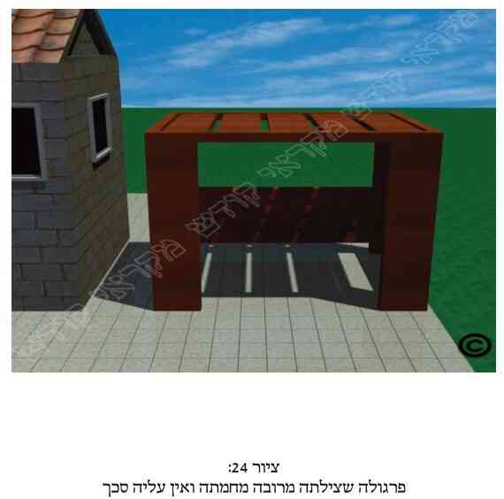 ). ואם אין הדבר כך, עליו להוסיף עוד סכך כדי שתהא צילתה של הסוכה מרובה מחמתה (וכבציורים שבסוף הספר, 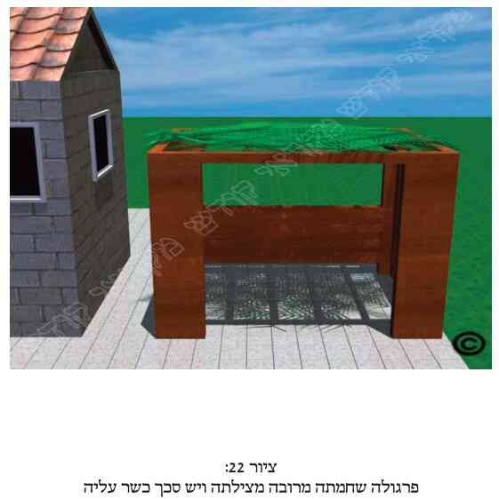 ). ואם הפרגולה נעשתה יותר משלושים יום לפני חג הסוכות, (ולא נעשתה לשם מצוות סוכה), כך שדינה כסוכה ישנה, יחדש בסכך דבר מה, וכגון שיוסיף ענף לסכך (כמבואר לקמן בפרק ו' סעיף נ"ו). וראה עוד בסעיף הבא.
לח. פרגולה שדינה כעשויה לצל או לסוכה, אך קורות תקרתה מחוברות אל השלד שלה על ידי מסמרים. הרי שלדעת האשכנזים בשל כך הפך דינה להיות כדירת קבע, ולכן לכתחילה עליו להוציא את המסמרים מחיבורם. ואם קשה לו הדבר, עליו להוסיף על תקרת הפרגולה סכך אחר כשר באופן שרוב צילתה של הסוכה יהיה מהסכך הנוסף הכשר. והספרדים מקילים קצת יותר בענין המסמרים. ויש עוד דברים שיש להזהר בהם כשתקרת הפרגולה נחשבת כסכך כשר, כמבואר במקורות.
לט. כאשר הפרגולה לא נעשתה לשם סוכה ולא לצל, אלא לשם דירה או למטרות אחרות (כנ"ל בסעיף ל"ו), הרי שיש לקורות שבתקרת הפרגולה דין של סכך פסול. ולכן כאשר קורות תקרת הפרגולה אינן מרובות, שאז חמתה של הסוכה מרובה מצילתה (כבציורים שבסוף הספר, 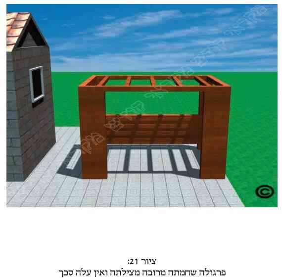 ), מספיק להניח סכך כשר בין קורות אלה, באופן שתהא צילתה של הסוכה מרובה מחמתה על ידי סכך כשר (כבציורים שם, ), ואז הסוכה כשרה. וראה עוד בסעיף הבא.
מ. עוד דברים שצריך להזהר בהם כשהפרגולה נעשתה לשם דירה וכדומה אך לא לשם סוכה או לשם צל, ראה כאן במקורות.
מא. כאשר הפרגולה לא נעשתה לשם סוכה ולא לשם צל, אלא לשם דירה או למטרות אחרות (כנ"ל בסעיף ל"ו), ותקרתה של הפרגולה עשויה מקורות עץ שעליהם רעפים, יריעות ברזנט, רשת פלסטיק או שאר סכך פסול. אם רוצה לעשות את סוכתו על ידי תקרה זו, יסיר את הרעפים ואת שאר הסכך הפסול שעל קורות העץ (כדלקמן בציורים שבסוף הספר, 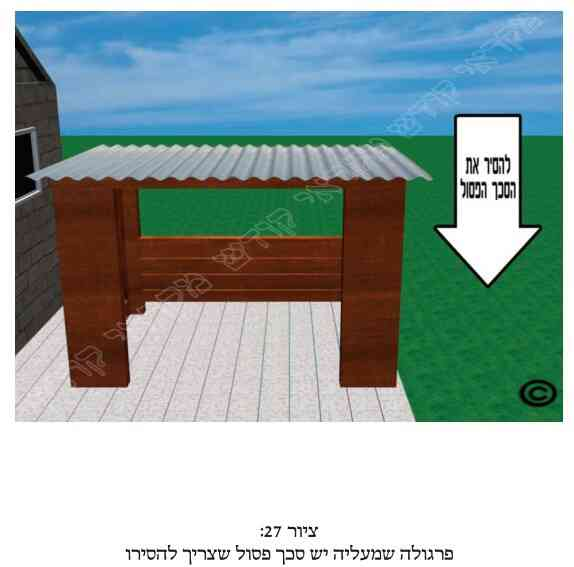 , 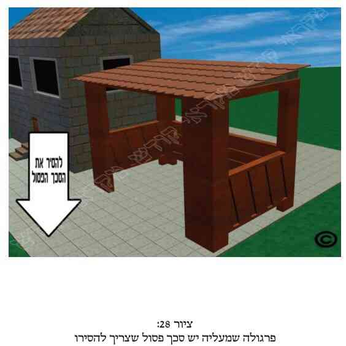 , 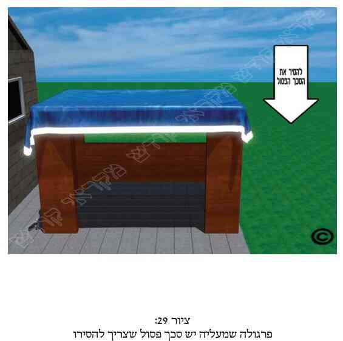 ), והסוכה כשרה על ידי קורות העץ שתשמשנה כסכך. ואם על ידי כך אין צילתה של הסוכה מרובה מחמתה, יניח על קורות העץ עוד סכך כשר, והרי הפרגולה יכולה לשמש כסוכה כשרה. וכן הדין לספרדים. ואילו האשכנזים מחמירים לכתחילה כדעה הסוברת שאף לאחר הסרת הרעפים עדיין נחשבות הקורות כסכך פסול, וצריך להוסיף סכך כשר באופן שתהא צילתה של הסוכה מרובה מחמתה (יש אומרים רק על ידי תוספת הסכך הכשר, ללא הקורות, ויש מקילים ואומרים שתהא צילתה מרובה מחמתה אף על ידי צירוף הסכך הכשר יחד עם הקורות, ובתנאי שרוב הצל יהיה מהסכך הכשר). ובשעת הדחק רשאים גם האשכנזים להקל כדעה הראשונה, והיינו כספרדים. וראה עוד בסעיף הבא.
ואם קודם לכן לא היו רעפים או סכך פסול אחר על גבי קורות אלה, אלא היו רק הקורות, אך חמתה של הסוכה מרובה מצילתה (כב , בציורים שבסוף הספר), יניח על הקורות סכך כשר, והרי הסוכה כשרה (כב שם), בתנאי שעל ידי הוספת הסכך הכשר תהא עתה הסוכה צילתה מרובה מחמתה (בצירוף הצל מהקורות או בלעדיו, כמחלוקת הנ"ל).
וראה עוד בסעיף הבא.
מב. בשני המיקרים הנזכרים בסעיף הקודם (בין שהיה סכך פסול על גבי הקורות ובין אם לאו), אם הקורות מחוברות במסמרים או ברגים, ראה דינו כאן במקורות, על פי סעיף ל"ח (בעיקר כשחמתה מרובה מצילתה) והסעיף הבא (כשצילתה מרובה מחמתה). ובשני מיקרים אלה, אם הקורות עצמן נחשבות כחלק מהסכך הכשר (בשל הנחת הסכך הכשר עליהן באופן שהתבטלו אליו, או על ידי הסרת הרעפים), הרי שמותר לאכול ולישון תחתיהן, וודאי שאין צריך להקפיד שיהא בין קורות אלה מרחק הגדול משלושה טפחים. וראה עוד לעיל (בהערה קי"ד).
מג. כאשר הפרגולה לא נעשתה לשם סוכה ולא לשם צל, אלא למטרות אחרות, וכנ"ל, אם לא היה דבר על גגה מלבד קורות הפרגולה עצמה, ולמרות זאת צילתה של הסוכה (על ידי הקורות שהן סכך פסול) מרובה מחמתה , ורוצה עתה להופכה לסוכה ולהשתמש בקורותיה כסכך, הרי שצריך הוא להוציא את כל המסמרים המחברים את קורותיה, ולמנהג האשכנזים אף להגביה כל קורה וקורה (באופן המבואר לעיל בפרק ד' סעיף מ"ט). ואם רוצה, יכול במקום זאת להוציא מתקרת הפרגולה כל קורה שניה (היינו את הקורה הראשונה, השלישית, החמישית וכו'. או את הקורה השניה, הרביעית, הששית וכו') או אף פחות קורות מכך, ובלבד שעל ידי כך תהא הסוכה חמתה מרובה מצילתה, ואז יסכך בסכך כשר את השטח שנשאר בתקרת הפרגולה (באופן המבואר במקורות). וראה עוד כאן במקורות עיצה כיצד לנהוג במיקרים כאלה, וכן לעיל בהערה קי"ד.
מד. דין פרגולה שתקרתה עשויה מקורות ברזל או משאר דברים הפסולים לסכך, חמור יותר מדין שאר הפרגולות שהקורות שבתקרתן הינן סכך פסול.
מה. עוד מדיני פרגולה, כגון שהקורות שבתקרתה שוכבות באלכסון ואינן עומדות מאונכות, או שהסכך נשען על רשת ברזל (כגון בבית כלא) וכדומה, ראה כאן במקורות.
מו. אדם הרוצה לעשות את סוכתו תחת הפרגולה , מבלי להשתמש כלל בקורות תקרתה (כבציורים שבסוף הספר, 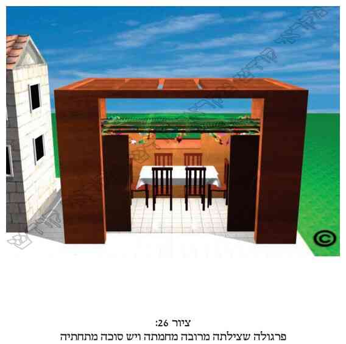 , 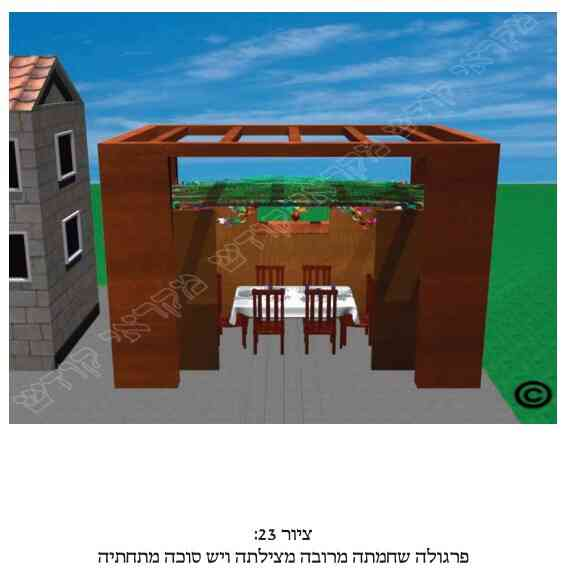 ), ראה דינו במקורות.
&הערות:
[1] א. כמבואר בס"ד לקמן בסמוך (בסעי' ט' וי') עפי"ד הירו', הרא"ש ומרן (סי' תרל"א ס"ג, גבי ראית כוכבים), ועפי"ד ר"ת, הטור והב"י (סי' תרל"א).
[2] ב. כמבואר בס"ד לקמן (בסעי' ב'-ח') עפ"י המשנה והגמ' בסוכה (דכ"ב, א'), הראשו', ומרן (רס"י תרל"א).
[3] ג. משנה סוכה (ד"ב, א' – שחמתה מרובה הריהי פסולה, ודכ"ב, א' – שכשצילתה מרובה ה"ז כשרה). וכ"פ מרן (סי' תרכ"ו ס"א, סי' תרל"א בתחילתו, ובעוד דוכתי) וכ"פ ש"פ.
נשאלה שאלה בביהמד"ר, האם הצורך של המציאות שתהא צממ"ח הינו בכל שעות היממה, או שאם בחלק משעות היום השמש נמצאת בזווית כזו שצממ"ח, ובחלקו האחר של היום (כגון בשעות הצהרים) המצב בסוכה שחממ"צ, הרי שלפחות בזמן שצממ"ח תהא הסוכה כשרה. או אפשרות שלישית, שאף שרק בחלק מהיום צילתה של הסוכה ממ"ח, מ"מ גם בזמן שחמתה ממ"צ הריהי כשרה, אם רוב שעות היום צממ"ח.
בס"ד נלע"ד שדי שאם רגע אחד במשך היממה יש בסוכה מצב שחמתה מרובה מצילתה, הריהי פסולה אף בשעות שצילתה מרובה מחמתה. והטעם, שדין צממ"ח וחממ"צ הינו מציאות של כמות הסכך. וכיוון שאין בסוכה זו הכמות הנצרכת של סכך, הרי פסולה תמיד. ומתוך כך גם מובן החשש שאם אדם לא יסבור כך, וילך לישון במשך היום בשעה שצממ"ח, ויחשוב שאז הסוכה כשרה, וירצה להתעורר לפני שתגיע המציאות שחממ"צ, הרי שאם ימשיך לישון כשהגיעה המציאות שחממ"צ, הריהו עובר כל רגע על מ"ע דישיבה בסוכה. אך גם ללא חשש זה יש לאסור ולפסול סוכה זו תמיד, מהטעם הנ"ל. ושמא יש לפלפל בזה עפי"ד רבי זירא בריש מסכתין, שפסל הסוכה תמיד אם היא גבוהה כ' אמה ושטחה דע"ד אמות (כבהמשך הגמ'). ומשמע שפסל הסוכה אף כשהחמה ממש בראש כל אדם (דבר שמבחינת המציאות אינו יכול להיות פה בארה"ק. אך יכול להיות בארצות אחרות). ואכמ"ל. ומ"מ לא מצינו חילוקים בהאי דינא דצממ"ח בין מקומות שנמצאים בקו המשווה לבין מקומות צפוניים מאוד או דרומיים מאוד שבהם השמש תמיד מאירה את הסוכה בזווית נמוכה מאוד (למשל השמש מאירה רק במשך כשעה ביום). דלכאו' במקומות אלה היה די לשים סכך דליל מאוד, ובכ"ז תמיד תהיה הסוכה צממ"ח. אלא כפי שאמרנו, דין צממ"ח תלוי בכמות הסכך וכמה הוא מיצל אם השמש תעמוד בראש כל אדם. כך בס"ד נלע"ד. אמנם ידידי הרה"ג בניהו שנדורפי שליט"א, העיר על מסקנתו זו, וס"ל שמסתכלים דווקא על הזמן שהחמה בראש כל אדם, ותו לא מידי. וסומך הוא בדבריו ע"ד התוס' בסוכה (דכ"ב, ב') והרמ"א (בסי' תרל"א ס"ה) וכתב מאמר ע"כ. אמנם מודה הוא שמדברי הק"נ (על הרא"ש בסוכה סי' ג' סק"ט) ואולי גם דעת הר"ן (שהביא בב"י סי' תרל"א) כך, שצריכים למיחש לכל הזמנים, ואין הסוכה כשרה עד שתהא צילתה מרובה מחמתה בכל העיתים (וסיים בק"נ שם שכן גם ד' הב"ח). וע"ע בקובץ "מוריה" (שנה ל"ב. גליון שע"ג-שע"ד, תשרי תשע"ג, עמ' רי"ד).
[4] ד. עפ"י רש"י בגמ' סוכה (דכ"ב, ב' ד"ה "כאן מלמעלה").
יש להעיר שכל דין חממ"צ וצממ"ח תלוי רק בצל הנעשה ע"י הסכך ולא הצל הנעשה ע"י הדפנות, דהא בכשרות הסכך עסקינן. וממילא עסקינן במציאות שהינה כשהחמה בראש כל אדם, והיינו מעל הסוכה ממש (אף שפה בארה"ק אף פעם החמה לא עומדת בראש כל אדם ממש. וכמש"כ בביק"ר על רס"י תרל"א). דאל"כ, ונדון גם עפ"י הצל הנעשה ע"י הדפנות, הרי שאף כשבסכך יהיה חממ"צ, הרי לפני השקיעה וקודם לה הרבה תהיה בסוכה צממ"ח (כשיש לסוכה דפנות כדבעי), אך בזה ודאי הסוכה פסולה. ואם יש סוכה גבוהה תשעה עשר טפחים, ושטחה זע"ז, כמעט תמיד יהא בה צל בשל הדפנות, וודאי שלא לכך התכוונה התורה. וכן פשט המשנה, הגמ' וכל הרוא"ח, דרק בצל הסכך מתחשבינן. ואף שלא מצאתי שכתבו כן במפורש, מ"מ פשוט הדבר [ור' גמ' ריש סוכה: שסוכה שדפנותיה למעלה מכ' אמה, אדם יושב בצל הדפנות ולא בצל הסוכה, ולכן היא פסולה. הא צל דפנות פסול הוא ולא חשיב צל.
ועוד יש להעיר, שכיון שעסקינן בצל הנעשה ע"י הסכך ולא הדפנות, הרי אין לראות את הצל שהינו על הקרקע בלבד, אלא אם השמש נוטה למזרח או למערב ואינה באמצע רום הרקיע, הרי שיש לראות המציאות של צל וחמה גם כשהם ע"ג הדפנות. ומ"מ כפי שכתבנו לעיל בסמוך, הרי שיש למדוד דברים אלה כשהחמה בראש כל אדם, וממילא כשהחמה מעל הסוכה הרי שהצל נעשה רק ע"ג קרקע הסוכה ולא ע"ג דפנותיה.
[5] ה. כן מוכח מדברי מרן (סי' תרל"א ס"א) מריש הסעיף ומסופו. שבריש הסעי' כתב מרן שאם למעלה צילתה וחמתה שווים הריהי פסולה, והיינו כיון דצריך שלמעלה הצל ירבה מהחמה. ובסיפא כתב מרן שאם למטה הם שווים הריהי כשרה, והטעם משום שאז למעלה הקנים הכשרים מרובים מהאויר, והיינו מהחמה (מ"ב שם סק"א). וע"ע כה"ח (סק"ג) ולקמן (בהערה ט').
[6] ו. גמ' סוכה (דכ"ב, ב') עפ"י המשנה (שם ע"א). וכ"פ מרן (סי' תרל"א, א').
[7] ז. מ"ב (סי' תרל"א סק"א). כה"ח (סי' תרל"א סק"ג). ולכן צריך להוסיף סכך כשר בכמות מספיקה כדי להכשיר הסוכה.
[8] ח. וכוונת הדבר, כשיש בין קנה לקנה כמלוא קנה, אפי' מצומצם [רש"י בסוכה (דכ"ב, ב' ד"ה "כאן מלמעלה"). ב"י. כה"ח (סי' תרל"א סק"א)].
והנה בד"ז נחלקו הראשו'. שרש"י בסוכה (דכ"ב, ב' ד"ה "כאן מלמעלה") כתב בהסבר הגמ', שסוכה שחמתה וצילתה שווים מלמעלה, פסולה. והסכימו לדבריו הר"ן והרה"מ (פ"ה מסוכה), וכ"פ גם רבינו חננאל, הרי"ף, הרי"ץ גיאת, והרמב"ם (פ"ה מסוכה). הב"ד מרן בב"י (סי' תרל"א), ופסק כן בשו"ע (רס"י תרל"א). וכ"פ הלבוש, הגר"ז, המ"ב בבה"ל (רס"י תרל"א ד"ה "שווין"), כה"ח (סק"ב) וש"פ. והוסיף רש"י (שם) שאם חמתה וצילתה שווים למטה בקרקעיתה, ה"ז כשרה.
אמנם יש מהראשו' שחלקו ע"כ. שבעה"ע כ' ההיפך מרש"י, וס"ל שאם חמתה וצלתה שווים למעלה, ה"ז כשרה, שאז למטה ודאי צילתה מרובה מחמתה, לפי שהחמה מועלת למטה. ואם למטה שווים, אז למעלה חמתה מרובה, ופסולה. עכ"ל. הב"ד הרא"ש, הטור וכה"ח (שם). וע"ע בב"י שלר"ת יש שיטה שלישית בדבר (דאם עומד למטה בקרקע ומעיין כלפי מעלה ודומה בעיניו כשווים, ה"ז פסולה. ורק אם עומד למעלה ודומה בעיניו כשווים, ה"ז כשרה. עיי"ש טעמו). אלא שהרא"ש והר"ן השיגו ע"ד ר"ת, כמבואר בב"י וכה"ח (שם).
ואמנם הב"ח כ' להחמיר כשלוש השיטות, והיינו כחומרת רש"י, כחומרת בעה"ע וכר"ת. והביאו דבריו הרבה אחרו (עט"ז. שכנה"ג. עו"ש וא"ר). ובס' בגדי ישע כ' שאף רש"י מודה לר"ת (הב"ד כה"ח שם. עיי"ש מה שהוסיף).
ומ"מ בס"ד נראה שלהלכה נקטינן כשיטת רש"י, שכ"פ מרן (בסי' תרל"א ס"א) עפי"ד הרי"ף, הרמב"ם והרא"ש הנ"ל. והוסיף הטעם שבשווה למעלה פסולה לפי שהחמה מתפשטת בריחוקה, ויהיה למטה חממ"צ. וכ"נ שפסק המ"ב הן בבה"ל (רס"י תרל"א שם) והן במ"ב (סק"א. עיי"ש שגם בשווה למטה פסק כרש"י).
כל מה שמדובר פה על סכך שנחשב כצילתה, פשוט דמתחשבינן רק בסכך הכשר.
[9] ט. ר' בהערה הקודמת שבד"ז נחלקו הראשו' והאחרו'. ומרן (סי' תרל"א ס"א) פסק כרש"י להקל בני"ד, משום שאם שווים למטה הרי שאז למעלה בסכך במקום הקנים הם רחבים מן האויר [רש"י (שם). מ"ב (סק"א) וכה"ח (סק"ג)]. וזה דלא כבעה"ע דס"ל לפסול, משום שאם למטה שווים הרי שלמעלה במקום הסכך חממ"צ (הב"ד בב"י, בה"ל שם וכה"ח סק"ב). ומ"מ בס"ד העיקר להלכה כמרן, בשו"ע, כמ"ב וש"א.
[10] י. עיקר ד"ז הוא בגמ' סוכה (די"ט, א'), במימרא דרבי יוחנן, וכפירוש הרא"ש. וכ"פ מרן (בסי' תרל"א ס"ב), וכתב שאם ברוב הסוכה צילתה מרובה שני משהויין, ובמיעוט ממנה חמתה מרובה משהו, בענין שכשנצרף יחד החמה והצל של כל הסוכה יהיה צלתה מרובה מחמתה משהו, ה"ז כשרה. עכת"ד. והסביר הפרישה שאם ברוב הסוכה נצרף יחד את כל החמה וכל הצל המפוזרים הנה והנה, נמצא שלמעלה בסכך הצל עודף בשני משהויין על החמה. ואילו בשאר מיעוט הסוכה החמה עודפת במשהו אחד, ה"ז כשרה. אך אם ברוב הסוכה אין ב' משהויין של צל עודף אלא יש רק משהו א' של צל עודף, ה"ז לא מהני ופסולה, כי אז בסה"כ של כלל הסוכה צל וחמה שווים, ותנן כי הדדי פסולה. ומיירי הכל בשיעור צל וחמה של מעלה בסכך. עכת"ד. הב"ד כה"ח (סק"ה). וראה לקמן (בהערה ט"ז) מש"כ החזו"א.
[11] יא. כ"כ בדעת מרן כמה פוס', מהם הגר"ז, המ"ב (סי' תרל"א סק"ג) וכה"ח (סק"ו). והיינו שאף המקום שחמתו מרובה על צילתו כשר לסוכה. וכתבו הטעם, לפי שמיעוט הסכך שחמתו מרובה בטל לגבי רוב הסכך שצילתו מרובה. ע"כ.
[12] יב. כ"כ הר"ן (ספ"ק דסוכה), וכ"פ הרמ"א (סי' תרל"א ס"ב). והטעם, דאפשר דהגמ' לא איירי רק בסוכה קטנה שהיא זע"ז טפחים, דאז אמרינן דהמיעוט שבה בטל לגבי הרוב. אבל בסוכה גדולה שיש בתוכה זע"ז שחמתו מרובה מצילתו, הוא מקום חשוב, ואינו בטל לגבי שאר הסכך שצילתו מרובה (מ"ב רסק"ד). והיינו שחלק זה אינו נחשב כחלק מהסוכה.
אמנם יש להעיר, שהב"י (בסי' תרל"א) שהב"ד הר"ן הנ"ל כתב בשמו בלשון "אפשר", דקאי דוקא בסוכה קטנה שאין בה אלא זע"ז, וסיים ב"צ"ע" אי יש להכשיר אותו חלק שחמתו מרובה בגלל צירופו לשאר הסוכה. וגם בזה החמיר דוקא כשהסוכה "גדולה הרבה". ואילו הרמ"א במפה כתב להחמיר כדברי הר"ן בלשון החלטית, בלי ספק, וג"ז אפי' בסוכה הגדולה יותר מזע"ז, ולא דוקא בגדולה הרבה. ומ"מ המ"ב (אמצע סק"ד) סתם להחמיר שאין לישב באותו חלק שחמתה מרובה, ונראה שהחמיר מדינא. וכ"כ בשמו בפסתש"ו (סי' תרל"א רסק"א). וכ"נ עיקר הדין לאשכנזים.
ומה שכתבנו ששיעור ז"ט הוא 55 ס"מ, זאת עפ"י מה שכתבנו בס"ד לקמן בנספחים, בקונטרס מידות האורך (נספח י"ז ענף 9) עפ"י שיטת הגרא"ח נאה זצ"ל בטפחים עצבים. ומ"מ לא הזכרנו בני"ד את השיעור לפי"ד החזו"א, משום דהוי קולא (אך צ"ע אי הוי דאו'). וראה בקונטרס הנ"ל שכשהדבר בא לידי קולא במצוה דאו', עפי"ד הגדולים אין אנו מורים לרבים את השיעור לפי החזו"א (עיי"ש בענף 2-3). וז"ט עצבים בשיעור החזו"א הם 66 ס"מ (שם בענף 10).
נראה בס"ד ששטח זה של זע"ז טפחים נחשב רק כשהוא שטח רצוף. וצ"ע.
כ' הפמ"ג במש"ז, דאפשר שאם מפסיק סכך זה לכל אורך הדופן, באופן שאם נתחשב רק במקום שהצל מרובה לא יהיו אלא רק ב' דפנות, צ"ע על כשרות כל הסוכה. הב"ד המ"ב (ססק"ד) וכה"ח (ססק"ז). ונראה שכוונתם שמ"מ אין להכשיר מצדדים אחרים, כגון מדין דוע"ק שהכשרה עד ד"א. אלא שצ"ע ע"כ, דהרי תלוי הדבר מה דין הסכך שחמתה מרובה. דלכאו' אם נחמיר בספקו של הפמ"ג דינו כחלל אויר. וא"כ כל הכשרו הינו עד ג"ט, כמבואר במרן (סי' תרל"ב ס"ב). והרי אנן עסקינן שסכך זה שחמתה מרובה שטחו לפחות זע"ז טפחים. וא"כ לא שייך להתיר בזה מדין דוע"ק וכדו'. ומ"מ לפי ספקו של הפמ"ג יש לדון גם גבי מציאות שסכך זה שחמתו מרובה נמצא בפינה א' כשלסוכה יש רק ג' דפנות. ואם אכן פסלינן פינה זו הרי שכל הסוכה פסולה.
[13] יג. ט"ז. א"ר. בית השואבה. מ"ב (סק"ד). כה"ח (סק"ז). וכתבו הטעם להכשיר, משום דהתם יש בו הכשר סוכה.
[14] יד. כ"כ פסתש"ו (סי' תרל"א סק"א). והוסיף, שאם במרכז הסוכה הוי זע"ז שחממ"צ, אין נפסלת אלא הישיבה תחתיו, אם בכל הצדדים יש הכשר סוכה שצילתה מרובה (עיי"ש בהערה 1). ומ"מ בסוכה של ג' דפנות יש להזהר שסכך זה שחממ"צ לא יחלק הסוכה לב' חלקים שאין בכ"א מהם ג' דפנות. וע"ע לעיל (בהערה י"ב) ושם בפסתש"ו (בד"ה "אבל").
[15] טו. רי"ו. ד"מ. פרישה. מש"ז. א"ר. מ"ב (סי' תרל"א סק"ב). כה"ח (סק"ד). והוסיפו, שאפי' אם בחלק המיעוט שבסכך הצל מרובה הרבה יותר מהחמה, ואילו ברוב הסכך חמתה מרובה רק במשהו יתר על צילתה, אע"פ שבין הכל צממ"ח, ה"ז פסולה. ע"כ.
[16] טז. כ' החזו"א (או"ח סי' ק"נ סקי"ז): אם במיעוט הסוכה היתה חמתה מרובה, וברוב הסוכה צילתה מרובה, אך אם תצרף כל הסכך ביחד תהיה חמתה מרובה, אותו המקום שחמתה מרובה פסול. אבל סוכה שצילתה מרובה, אם יש בו שיעור סוכה והכשר דפנות מלבד המיעוט, כשרה, דבמקום המיעוט אינו נחשב מהסוכה. ע"כ [הב"ד סה"ס (פ"ט הערה 22) ופסתש"ו (סי' תרל"א הערה 2)].
וע"ע בסה"ס (במיל' לפ"ט סקי"ז אותיות א'-ט') מיקרים שונים גבי חמתה מרובה מצילתה.
[17] יז. משנה בסוכה (דכ"ב, א') גבי סוכה מדובללת, וכדמפרשי לה רב ושמואל. מרן (סי' תרל"א ס"ד) וש"פ.
ומה שכתבנו ששיעור החללים הפוסלים הינו ג"ט באורך וג"ט ברוחב, הוא עפי"ד מרן (בסי' תרל"ב ס"ב), כדין סכך פסול. ואי אורכו ג"ט ויותר אך רוחבו פחות מג"ט אין דינו כחלל אויר משום שע"י דין לבוד הרוחב של פחות מג"ט "מקרב" את צידי החלל זל"ז ואז אינו חלל כלל וכדלקמן בפרקנו (סעי' כ"א ואילך).
ומה שכתבנו שג"ט הוי 23.5 ס"מ, הוא שיעור ג"ט עצבים לגרא"ח נאה זצ"ל [כדלקמן בנספחים בקונט' מידות האורך (נספח י"ז ענף 9)]. ולא הזכרנו בהלכות גם את שיעורי החזו"א (שהם 28.3 ס"מ) משום דהוי קולא, וכפי שכתבנו בקונטרס הנ"ל, כשבא הדבר לידי קולא בדאו', איננו מזכירים גם את שיעורי החזו"א (עיי"ש בענף 2,3).
בענין סכך דק, כ' החזו"א (או"ח סי' ק"נ סק"ד): לכאו' אין שיעור לעובי הסכך, דגם דק שבדק עושה צל דק... דצל דק לא חשיב סכך, אלא בעינן צל חשוב שהאדם נהנה ממנו. עכ"ל. הב"ד סה"ס (פ"ט הערה 3).
בענין צל הנעשה ע"י משטח פלסטיק (אולי הכוונה לפלסטיק שקוף), כ' הגר"י אריאל שליט"א בשו"ת באהלה של תורה (ח"ה סי' פ"ה), שדינו כפסול. עיי"ש. ולפי"ז ה"ה מצל הנעשה ע"י זכוכית צבעונית וכדו', שאינה שקופה. ור' לעיל (פ"ד סעי' י"ח).
[18] יח. ר' לקמן בפרקנו סעי' כ"א ואילך, עפ"י מרן (סי' תרל"ב ס"ב).
[19] יט. עיקר ד"ז נזכר בירו' סוכה (פ"ב). וכ"פ הרא"ש. וכ"כ מרן (סי' תרל"א ס"ג), שדרך הסיכוך להיות קל, וכו'.
[20] כ. כ"כ בירו' סוכה (פ"ב ה"ג), הרא"ש (פ' הישן סי' ג'), וב"י (סי' תרל"א ד"ה "וצריך"). עיי"ש שהאריך בזה. וכ"פ מרן בשו"ע (סי' תרל"א ס"ג). וע"ע בטור הוצ' שירת דבורה (בהגהות והערות לסי' תרל"א סק"א).
ומה שכתבנו שיש להקל, ושכ"ה דוקא גבי כוכבים גדולים, כ"כ מרן (שם) עפ"י הרמב"ם. וכ' בב"י דהיינו הכוכבים הנראים כבר ביום (בעוד לא שקעה החמה). וכ"כ מרן בכס"מ (פ"ה מסוכה) לפרש דברי הרמב"ם, דמש"כ כוכבים גדולים היינו הנראים ביום. וכ"כ הגר"א. אמנם יש להעיר שכמה אחרו' כתבו דלכתחי' יש להחמיר, ובעי שיהיו נראין אף כוכבי הלילה. שכ"כ הב"ח, וכ"כ הט"ז, המ"א, והגר"ז. וכ"כ המ"ב (סק"ה) בשם האחרו', דלכתחי' בעינן דאפי' בלילה יראו כוכבי לילה בתוכה. וכ"כ כה"ח (ססק"ח).
אמנם אנו כתבנו בהלכות שכ"ה דוקא גבי כוכבים גדולים הנראים ביום, שכ"נ בס"ד שזה עיקר הדין. שהרי כ"כ הרמב"ם, וכ"כ מרן בב"י ובשו"ע, וכ"כ הגר"א. ואמנם אין לכחש שהב"ח חלק ע"ד מרן בב"י בפירוש דברי הטור (וכמו שסיים דבריו בב"ח שם, "ולא כמו שפירש הבית יוסף"), מ"מ נראה שדברי מרן עיקר וכן יש להקל. ואח"כ ראינו שכ"כ כבר הגרע"י שליט"א בחזו"ע (סוכות. דיני הסכך סי"ח), שדי שיראו דרך הסכך את הכוכבים הגדולים שנראים אף ביום. ע"כ.
כשעסקנו בני"ד חשבנו כיצד נותנים הכשר למהדרין לסכך ה"קיינס", הרי הקנים שם צפופים מאוד. ולכן ספק אם ניתן לראות דרכם כוכבים. והשיב חכ"א שבגלל שאנו נמצאים בעיר, לכן קשה לנו לראות הכוכבים דרך הקיינס. וזאת בגלל שככללא יותר קשה בעיר לראות הכוכבים מאשר במדבר, הן בגלל האורות הרבים שבעיר, והן בגלל העשן שבעיר. ולכן למשל קל יותר במדבר לראות את העגלה הגדולה וכדו'. ולפי"ז עולה שיכול אדם לסכך את סוכתו בעיר בהרבה ענפים, ואף שהכוכבים לא יראו דרך הסכך, אפ"ה חשיבא ככשרה למהדרין משום שאילו היתה סוכה זו בכפר היו הכוכבים נראים דרכה. ולענ"ד זה חידוש.
[21] כא. בדרשות מהרי"ל (הל' סוכה) כ' בשם רבו המהר"ש, שהיה מסכך הסכך עב ביותר, דא"א לסכך כ"כ שלא יהא נראה מתוכו דרך הגג בשום מקום. גם אם אין רואים בלילה, מ"מ ביום רואים כמה חורין וסדקים בכמה מקומות. עכ"ל. הב"ד הד"מ, המ"ב (סק"ה), וכה"ח (סק"ט). וכ' הביכור"י, שהמיקל כוותיה לא הפסיד, ובפרט היכי שיש לחוש דאם יעשה הסכך דק יותר, תנשב הרוח יותר תוך הסכך ויצטער ברוח ובצינה. הב"ד המ"ב וכה"ח (שם).
ומ"מ כתבנו כן רק בשם האשכנזים, דלא ראיתי פוסק ספרדי שכתב כן להלכה [לא בחזו"ע ולא בהל"ח כתבו כן. וכה"ח הביא כן בדרך ליקוט. וכבר כתבנו בכ"ד, שאע"ג שהרב כה"ח כ' (בסי' תרל"ז סק"ה) שהוא מעתיק רק דבר שמחוור לדינא, מ"מ כבר הקשינו ע"כ בכמה מקומות, דלפי"ז ישנן סתירות בדבריו, דלעיתים העתיק דעת הפוס' בשיטה אחת, ובמקומות אחרים העתיק דעת הפוס' בשיטה החולקת. ולכן כתבנו בס"ד כאן בהלכות ד"ז רק בשם הפוס' האשכנזים].
[22] כב. כ' הפמ"ג בא"א, דאפשר דלענין ראיית כוכבים די בכל הסוכה אם הוא רואה רק במקום אחד, דעי"כ יזכור מי ברא אלה, וגם דינו כגר בארץ. ע"כ. הב"ד המ"ב (סק"ה) וכה"ח (סקי"ב). וגם בני"ד כתבנו כן רק בשם הפוס' האשכנזים, וכנ"ל בהערה הקודמת.
[23] כג. כ"כ במשנה סוכה (דכ"ב, א'), המעובה כמין בית, אע"פ שאין הכוכבים נראים מתוכה, כשרה. ופרש"י (שם), שסכך שלה עב מאוד. ע"כ. וכ"פ מרן (סי' תרל"א ס"ג). וכתבו הפוס', דכ"ה אע"ג שאין נראים כוכבים לא גדולים ולא קטנים (מ"ב רסק"ו). וכ"ה אפי' אין ניצוצי השמש נראין בתוכה [ט"ז. שעה"צ (סק"ו). חזו"ע (דיני הסכך סעי' י"ח)].
וגבי ד"ז, נחלקו הראשו' גבי סוכה זו המעובה כמין בית, האם כשרה רק בדיעבד. שהגר"י טייב זצ"ל בס' ווי העמודים הב"ד שב"ל (סי' ש"ל) בשם בעל הדיברות, דמסתברא שרק בדיעבד כשרה. והוסיף שבעיניו נראה שהלכה כבית הלל, וכשרה אפי' לכתחי'. ושכ"כ בעל היראים ורבינו אפרים, דב"ה אפי' לכתחי' מכשירים. הב"ד בחזו"ע (סוכות. דיני הסכך ריש הערה ט"ז). עיי"ש מה שדנו האחרו' גבי ד' הראשו' בזה. ומ"מ מידי מחלו' לא יצאנו אי הוי רק בדיעבד, ולכן כתבנו בהלכות שכשרה "לפחות בדיעבד". וכ"ה לכו"ע, הן לאשכנזים והן לספרדים.
[24] כד. דעת המחמירים בני"ד הפוסלים אף בדיעבד היא ד' ר"ת, וכמש"כ בשמו בהגמ"י (פ"ה מסוכה ה"ט סק"ט). וכ' הטעם, דאי הסוכה כשרה אף כשאין הגשמים יכולים לחדור לתוכה, מדוע התירו לצאת מתוכה משתסרח המקפה, הרי יכול לכסותה יפה ולא תסרח המקפה. ועוד, מדוע אמרו שגשמים בחג סימן קללה הוא, והרי סוכה המעובה כמין בית כשרה. אלא קמ"ל שצריך שהסוכה לא תציל מהגשמים שלבסוף יורדים דרך הגג. ע"כ (עיי"ש בהגמ"י שהביא עוד דעות ראשו' בזה, וסיים שהמחמיר תע"ב). וכ"כ טעמים אלה הב"ח (סי' תרל"א ד"ה "ומ"ש ור"ת") בשם ר"ת.
וכד' ר"ת לאסור אף בדיעבד סוכה זו שאין הגשם יורד לתוכה, כתבו עוד כמה ראשו', מהם המרדכי בסוכה (פ"א, תשל"ב) בשם הר"ש משאנץ. וכ"כ התוס' בסוכה (ד"ב, א' ד"ה "כי עביד"), וכ"פ בס' פרדס הגדול (סי' קפ"ח). וכ"כ המ"א בשם האגודה, וכ"כ הסמ"ק (מצוה צ"ד. הב"ד הטור סי' תרכ"ט), המהרי"ל (בתשו' החדשות סי' מ"ט) בשם רבותיו. וכ"כ בס' המנהגים (המיוחס למהרי"ל), ועוד ראשו' [הב"ד בטור ובב"י (סי' תרל"א), בחזו"ע (סוכות, דיני הסכך הערה ט"ז), ובסה"ס (במיל' לפ"ט סק"א)].
ובענין ד' הרא"ש, ר' בב"י (ד"ה "ומ"ש רבינו בשם רבינו תם" וד"ה "ומ"ש רבינו שהרא"ש"), שמשמע קצת דס"ל שהרא"ש אכן פסק לגמרי כר"ת. ואילו מהב"ח משמע דס"ל שהרא"ש פסק כר"ת רק גבי סוכת גנב"ך ורקב"ש. ומ"מ לכאו' אין נ"מ בזה, דהא מרן לא פסק את דברי ר"ת גם משום שהרי"ף והרמב"ם לא פסקו כמותו.
גם מהאחרו' יש שהחמירו כר"ת לאסור סוכה זו. שכ"כ להחמיר הב"ח (סי' תרל"ה) שסוכה זו פסולה כדברי ר"ת, ושכ"כ התוס' בשם רבינו שמשון. וכ"כ להחמיר גם הלבוש, הט"ז (רס"י תרל"ה), הא"ר, הגר"ז, הח"א, ס' בית השואבה (דנ"ז, א'. עיי"ש שכתב שכיון שר"ת פוסל מדאו' הוי ספיקא דפלוגתא דרבוותא בדאו', ואזלינן לחומרא). ושו"ת היכלי שן (תניינא. סי' ט'). וכ"כ המ"ב (סי' תרל"א ס"ק ה' וו') בשם האחרו', דאם אין גשמים יורדים לתוכה, ואפי' גשמים מרובים, דהוי כעין בית, ולכן יש להחמיר ולפסול משום גזירת בית. ע"כ [הב"ד כה"ח (סי' תרל"א סק"י), חזו"ע (דיני הסכך הערה ט"ז), ובסה"ס (מיל' לפ"ט ס"ק א' וג')].
ובענין אי לדעת ר"ת פסולה הינו מדאו' או מדרבנן. לד' הט"ז (סי' תרל"ה סק"ב) הרי שר"ת פסל הדבר רק מדרבנן (הב"ד בה"ל סי' תרל"ה ד"ה "כשרה"). ואילו הישי"ע (סי' תרל"א) ובערול"נ (סוכה ד"ב, א', בתוד"ה "כי עביד" בסופו) כתבו בשיטת התוס' שפסול מדאו'. וכ"כ בבית השואבה (שם). והפמ"ג (סי' תרל"ה) כ' שגם ד' הב"ח דהוי מדאו'. ונשאר בפמ"ג בצ"ע. הב"ד בסה"ס (מיל' לפ"ט סק"ד. וע"ע שם סקפ"א ד"ה "וז"ל").
בענין שיעור הסכך הפוסל, כ' הפמ"ג בא"א, שאם הסכך מעובה מאוד עד שאין הגשם יכול לירד לתוכו, למ"ד שהסוכה פסולה, כל שיש ד"ט יחד מיקרי סכך פסול. הב"ד המ"ב (סי' תרל"א ססק"ה). אמנם יש מהאחרו' החולקים וסוברים שכל שיש בסוכה מקום שהוא לפחות זע"ז טפחים שהסכך שם מדולל באופן שהגשמים יורדים שם, הרי שכל הסוכה נקראת דירת ארעי, ואף במקומות שהסכך מעובה, שאין הגשם יורד שם, מותר לשבת שם [שו"ת כנף רננה. פתחא זוטא. הב"ד בסה"ס (מיל' לפ"ט סק"ח), ופסתש"ו (סי' תרל"א רסק"ב)]. ויש מי שכתב בשם הגר"ח מוולוז'ין זצ"ל וזיע"א, שמי שרוצה להדר ולקיים מצוות סוכה בכל ימי החג אפי' בימות הגשמים, ישאיר חור גדול סמוך לפתח במקום שהגשמים לא יזיקו לו, שיכולים לראות כוכבים דרך החור, וגשמים יכולים לירד בתוכה דרך החור, וגם ממילא יכול לסכך הסוכה היטב באופן שהגשמים אין יכולים לירד, שהרי יש היכר לחור שאינו דומה לבית [ספר פאר עץ החיים (סי' כ"ט). הב"ד בסה"ס שם. וע"ע במועו"ז (ח"א סי' צ"ו. ח"ח בהוספות לח"א סי' צ"ו)].
ועוד בענין שיעור הגשמים שצריכים לרדת לסוכה דרך הסכך, אליבא דהמחמירים כר"ת:
1) בענין האם די שיכנסו לסוכה אפי' גשמי זעף בד"ז נחלקו הפוס'. שמדברי הח"א נראה שיש להקל בזה, שכתב גבי שיעור "עד שאין גשמים יכולין לירד בתוכה", דהיינו אפי' כשיורדין גשמים מרובין. והיינו שאם אפי' בגשמים מרובים אין יורדים לתוך הסוכה, רק אז לר"ת ודעימיה הסוכה פסולה. ומשמע שאם אין גשמים נכנסים לסוכה בגלל שהם מועטים, אינה נפסלת בכך. וכ"נ בס"ד לענ"ד מדברי המ"ב (סי' תרל"א סק"ו) בשם האחרו', וכה"ח (סקי"א) בשמם. ובאמת שכן נראית גם דעת הפוס' שהתירו את ההמצאה החדשה של הסכך המונע ירידת גשמים לתוך הסוכה (כמש"כ בס"ד לעיל בפרק ד' סעי' מ"ח. עיי"ש בהערות). שכתבו כמה פוס', שכיון שבעת שיורדים גשמי זעף נכנס מעט מהגשם לסוכה, ש"ד, והסוכה כשרה [שכ"כ בתשובות והנהגות (ח"ב סי' ש"י). הב"ד בסה"ס (מיל' לפ"ט ססקט"ז). וע"ע בשו"ת קנין תורה (ח"ה סי' ס"ו), ובפסתש"ו (סי' תרכ"ט הערה 82)].
ומאידך יש מחמירים וסוברים, שכשם שלענין פסול סוכה דנים לאסור רק כשאינה עומדת ברוח מצויה, ואין דנים כשאינה עומדת ברוח שאינה מצויה, ה"ה בני"ד שצריכה הסוכה להיות כשרה באופן שהגשמים נכנסים לתוכה גם כשאינם בזעף [פסתש"ו (סי' תרכ"ט סוף הערה 82) עפי"ד האחרו' שאסרו הסכך הנ"ל. והוסיף שהם דנו להחמיר עפי"ד האחרו' שמהם הוציא המ"ב הנ"ל את הדין להקל].
2) בענין האם (לשיטת ר"ת) די שיכנס מעט גשם לסוכה ע"מ להכשירה, גם בזה נחלקו הפוס'. דעת המחמירים הינה ד' הביכור"י (סי' תרל"א סק"ד), שכ' שלד' ר"ת צריך שיוכל המטר לירד בה כ"כ שתוכל להסריח המקפה. דאל"כ חזרה קושית ר"ת לדוכתא, למה מותר לפנות מהסוכה כשתסרח המקפה, יכסנה היטב שלא ירד בה אלא מעט מטר באופן שלא תסרח המקפה (הב"ד בסה"ס במיל' לפ"ט סק"ו). וכ"נ מדברי סה"ס (מיל' לפ"ט ססקט"ז) בשם שו"ת קנה בושם (בראנדסדורפר. ח"ב או"ח סי' כ"ו-כ"ז) ובשם עוד פוסק, שלא הסכימו להתיר את ההמצאה החדשה של סכך המונע ירידת גשמים לסוכה, אף אם נכנסים רק גשמים מועטים.
אמנם מדברי כמה פוס' עולה שיש להקל אף אם רק גשם מועט נכנס לסוכה. שכן עולה מדברי ס' תשובות והנהגות (ח"ב סי' ש"י) ושו"ת קנין תורה (ח"ה סי' ס"ו) שהתירו בשימוש את הסכך הנ"ל (המונע ירידת גשמים לסוכה) אם יוכלו גשמים מועטים להכנס לסוכה. הב"ד בסה"ס (מיל' לפ"ט ססקט"ז). וע"ע בפסתש"ו (סי' תרכ"ט הערה 82) שג"כ כתב שיש מקילים בני"ד.
3) עוד בענין ני"ד כ' בביכור"י (סי' תרל"א סק"ד), שאף לד' ר"ת, פסולה הסוכה אם אין המטר יורד בה לעולם. אבל כשרק זמן מה לאחר ירידת הגשם מתחיל הגשם להכנס לסוכה, הרי שאף לדעת המחמירים הסוכה כשרה. ושכן מוכח בהגמ"י. ע"כ. הב"ד בסה"ס (שם במיל' סק"ז).
ועוד בענינים אלה: יש שפירשו את דברי המ"א (סי' תרכ"ז סק"ב) בשם האגודה גבי הא דלא יקבע הסכך במסמרים, שהכוונה שלא ירדו אז גשמים לסוכה. ושכ"מ בסמ"ק. והטעם, דע"י מניעת הגשמים הופכת הסוכה לבית הראוי לימות הגשמים, ולכן יש להמנע מכך [סה"ס (מיל' לפ"ט סקפ"א)]. וע"ע בכה"ח (סי' תרל"א סקמ"ב) שכ' בשם הלבוש שא' הטעמים של פסול תקרה הוא שאין גשמים יורדים לתוכה.
ועוד בענין ני"ד ר' בט"ז [(סי' תרל"ה סק"ב). עיי"ש שכתב שלא אסרו מדרבנן כשאין המטר יורד לסוכה אלא כשיש לו דימיון לבית, משא"כ בגדיש. והא"ר חלק ע"כ וכ' שאף כשאין לו דימיון לבית יש לאסור. הב"ד בה"ל (סי' תרל"ה ד"ה "כשרה"). וסה"ס (פ"ט סעי' ה')].
[25] כה. כתב מרן הגחיד"א בברכ"י (סי' תרל"א סק"ב), שמסתימת דברי מרן בשו"ע (שנראה שהלך בעקבות הרמב"ם) שלא הזכיר כלל פסול סוכה שאין גשמים יורדים לתוכה, משמע דס"ל להכשיר בדיעבד אפי' אין מטר יכול לרדת בה. ומילתא מציעתא נקטינן, דלכתחי' יהיה הסיכוך קל שיראו הכוכבים, ובדיעבד אפי' מעובה כמין בית שאין גשמים יורדים לתוכה, כשרה [הב"ד שע"ת (רס"י תרל"א) וחזו"ע (סוכות. דל"ו, א')].
ובאמת קודם לדברי הגחיד"א כ' בשב"ל בשם בעל הדיברות, שסוכה המעובה כמין בית כשרה רק בדיעבד. הב"ד הגר"י טייב בס' ווי העמודים, וכתב שכן היא גם ד' הרמב"ם והסמ"ג (הב"ד בחזו"ע דיני הסכך הערה ט"ז).
וכדברי הגחיד"א כתבו עוד אחרו', מהם המאמ"ר (שכתב כן בד' מרן) והביכור"י (סי' תרל"ח סק"ד). וכ"כ בשו"ת שבט"ה (ח"ז סי' ס' עמ' נ"ט), שצודקים הברכ"י והמאמ"ר במש"כ שמרן אינו חושש לסברת ר"ת, אע"פ שהרבה פוס' פסקו לפסול אף בדיעבד. ע"כ. וכ"פ המט"א (סי' תרכ"ו סקט"ו), בשו"ת עולת יצחק (ציוני. סי' מ"ט), ובערוה"ש (סי' תרל"א ס"ו. עיי"ש שכ' לסמוך ע"ד הרא"ש להכשיר בשעה"ד). וכ"פ הא"א (בוטשאטש. מהדו' תנינא. סי' תרל"ט ס"ה). וכ"פ המ"ב (סי' תרל"א סק"ו). הב"ד בחזו"ע (דיני הסכך הערה ט"ז, עמ' ל"ו, א'), ולמסקנה ג"כ הסיק כמותם. והוסיף, שלמעשה העיקר לדינא שאם אפשר ימעט את הסכך (ע"מ שיחדרו הגשמים) ויכשיר אותה לכו"ע, ואם לא הרגיש בזה אלא ביו"ט עצמו כשאינו יכול למעט את הסכך, יש להכשיר בדיעבד, כדברי הגחיד"א והמאמ"ר. וכ' שיש לצרף לזה סניף את ד' הגרש"ק בשו"ת האלף לך שלמה (או"ח סי' שס"ו) שכוונת התוס' אליבא דר"ת, דבעינן תרתי כדי לפסול הסוכה: שאין גשמים יכולים לרדת לתוכה, ושקבע את הסכך במסמרים דהוי קבע. אבל בא' מהם אפי' אם אין המטר יכול לרדת, אלא שאין הסכך קבוע במסמרים, הסוכה כשרה. עכ"ד (ור' עוד דעתו לקמן).
גם ד' הרב כה"ח להקל בזה בשעה"ד, אך צ"ע אי דעתו כן מעיקרא דדינא. שכה"ח (בסי' תרל"א סק"י) הב"ד הרב בית השואבה שחלק ע"ד הברכ"י ופסק שאפי' בדיעבד פסולה. וכ' ע"כ כה"ח דלא ידע מה יש לחלוק בזה, דהא הברכ"י כ' את דינו היכא שא"א, וע"כ כ' כה"ח, וכי טוב לישב בלא סוכה כלל מאשר לישב בסוכה כזו ולצאת לדעת המקילים. ולכן הסיק כה"ח דאם א"א לתקן הדבר ישב בסוכה זו, אך לא יברך משום סב"ל. ע"כ. ומשמע קצת מדבריו שיש להכנס לסוכה זו רק מהיות טוב, דאין לו מה להפסיד מכך, דיתכן שיצא י"ח בכך. אך לא ברירא ליה כלל שמעיקרא דדינא יוצאים בזה י"ח, וממילא גם לא יברך ע"כ ברכת "לישב".
וע"ע בענינים אלה בחמ"מ (סס"י תרל"א) ובנה"ש (סי' תרכ"ז סק"ד).
ומכאן הגענו לדון גבי מ"ד זה שהסוכה כשרה בדיעבד, האם מותר וצריך גם לברך על הישיבה בה ברכת "לישב בסוכה". והאם לכתחי' צריך גם לנענע את כל הסכך, או שדי למעטו ולהוציא חלק מהענפים ע"מ שיכנסו גשמים, ותו לא מידי.
בענין אי יברך ברכת "לישב" על סוכה זו כשלא מיעט הענפים. כפי שכתבנו, דעת הרב כה"ח שאם לא תיקן הסכך באופן שיכנסו דרכו הגשמים, אין לברך "לישב בסוכה" משום סב"ל (לחשוש לד' ר"ת ודעימיה). ובאמת שכ"כ גם המט"א (בקונטרס אחרון. סי' תרכ"ו סט"ו). הב"ד בחזו"ע (שם דל"ז, א') וכ' שמ"מ לדעתו יש גם לברך ע"כ, מהטעם שהמחלו' הינה במצוה ולא בברכה, ובפרט שדעת מרן להכשיר סוכה זו לכתחי'. וזאת עפ"י מש"כ כמה פוס', מהם הגחיד"א בשם הגדולים (ח"ב, מהדו' ליוורנו תקמ"א, דצ"ב, א'), שכל שהמחלו' הינה במצוה ולא בברכה, ודעת מרן להתיר, ברוכי נמי מברכינן ולא אמרינן סב"ל. ושכ"כ בשו"ת ישיב משה, ובס' זכרי כהונה, ובס' ויסמוך משה, ובשו"ת שואל ונשאל, וכמו שהביא דבריהם ביבי"א (ח"ה סי' מ"ב סק"ה, וח"ט חאו"ח סי' מ"ז ובמיל' לח"ט שם). וכ"כ בשבט"ה (ח"ז סי' ס'), שמש"כ הרב כה"ח סב"ל, מ"מ לדידו כדאים הם השו"ע והרמ"א ששתק לו, לסמוך עליהם ולברך. ובפרט שהברכ"י הב"ד הרדב"ז דהיכא דפליגי רבוותא בעיקר המצוה ואנו עושים כא' מהם, ברוכי נמי מברכינן. ואף דרבים פליגי עליה וס"ל דבכל גוונא אמרינן סב"ל, מ"מ לד' הג' שבט"ה בני"ד יש לברך. הב"ד בחזו"ע (שם).
לאור הנ"ל בס"ד הדעת נוטה שלמ"ד זה שיוצאים רק בדיעבד י"ח בסוכה כזו (שאין הגשמים חודרים אליה), אם לא תיקן הסוכה שיחדרו אליה הגשמים, מ"מ רשאי ואף צריך לברך על הישיבה בה ברכת "לישב בסוכה". ואם חושש בשל ד' המחמירים, לא יברך.
ובענין למ"ד זה שהסוכה כשרה כך רק בדיעבד, אי לאחר הוצאת חלק מהסכך לצורך ירידת הגשם, בעי גם לנענע את שאר הסכך או שבכלל צריך לקלקל כל הסכך מעיקרו. נראה שד' כל הפוס' שדי להוציא חלק מהסכך לצורך הנ"ל, ותו לא מידי. שכ"כ הא"ר (סי' תרל"א סק"ד), הפמ"ג בא"א, המט"א (סי' תרכ"ו סי"ז), המ"ב בשעה"צ (סי' תרל"א סק"ה) כה"ח (סק"י) וחזו"ע (דיני הסכך הערה ט"ז, דל"ז, א'). וכ"נ כבר מדברי הב"ח (סי' תרל"ה) בביאורו את שיטת ר"ת (הב"ד בסה"ס במיל' לפ"ט סק"ט). וחכ"א העיר דלא גרע מסוכה גבוהה למעלה מכ' אמה שכשמגביה למעט גובהה א"צ לנענע (גמ' דף ד'). ומבואר בראשו' (בר"ן) שכיון שאין הפסול בעצם הסכך אלא בגובהו, א"צ לנענע. וה"ה בסכך מרובה שאין הפסול בסכך אלא בכמותו. עכת"ד.
ובענין להכשיר סוכה כזו בשבת שבסוכות וביו"ט דסוכות.
הנה הפמ"ג (א"א רס"י תרל"ח סק"א, ובמש"ז סק"ב) כ' לאסור הורדת חלק מהסכך ע"י גוי בשבת ע"מ שיוכלו להכנס גשמים לסוכה. וטעמו, שכיון שעושה כן כדי להכשיר הסוכה הוי ממש כסותר ע"מ לבנות במקומו, דעי"כ הסוכה תהיה כשרה והוי איסור דאו' בשבת, ולכן לא מהני אף ע"י גוי. ומ"מ כ' בפמ"ג שביו"ט אם אין לו סוכה אחרת לאכול י"ל דהוי מכשירי או"נ ושרי. ע"כ. ובס' עיקרי הד"ט כ' ע"ד הפמ"ג דלא חשיב כה"ג מכשירי או"נ כיון שאם אין לו סוכה אינו חייב להתענות ורשאי לאכול. ובס' בית השואבה כ' לחלוק ע"ד הפמ"ג דהא הוי מכשירי או"נ שהיה אפשר לעשותן מעיו"ט, דאסור לעשותם ביו"ט. והרי מי שנפלה לו דופן סוכה ביו"ט והוא צריך לאכול, לא הותר לו אלא שיעשה את חבירו דופן לסוכתו, ובכלים אסור דחשיב בנין אוהל ביו"ט, שלא התירוהו משום או"נ. הב"ד בחזו"ע (דיני הסכך, סוף הערה ט"ז) וכ' שכל זה לשיטתם, דאזלי בתר ד' ר"ת לדינא. ובאמת גם המ"ב בבה"ל (רס"י תרל"ח ד"ה "עצים") כתב להקל ביו"ט ע"י גוי להכשיר הסוכה שלא תהיה מעובה, דהוי שבות דשבות במקום מצוה, דלא הוי סתירת אוהל אלא רק מדרבנן. וכ' זאת בשם הפמ"ג. והיינו עפי"ד המש"ז (סי' תרל"ח סק"ב). הב"ד בחזו"ע (שם), וכ' שהמ"ב התעלם מדברי הפמ"ג עצמו בא"א (כנ"ל), שאין להתיר כן בשבת אלא רק ביו"ט. ועפי"ז כ' הגרע"י שליט"א שהמ"ב נמשך לשיטתו שאם הסכך מעובה באופן שאין הגשמים יכולים לרדת, שהסוכה כשרה בדיעבד. וכ' הגרע"י שליט"א, שלפי"ז המ"ב יתיר אף בשבת להמעיט הסכך ע"י גוי, דהוי שבות דשבות, וכמו שהסיק לדינא גם בחזו"ע. עיי"ש בחזו"ע. ואני הקטן לא זכיתי להבין את דבריו. שהרי המ"ב בבה"ל (ברס"י תרל"ח) כתב להתיר להמעיט את הסכך ע"י גוי רק גבי יו"ט, ולא הזכיר שם שבת כלל. ומדוע לומר שהמ"ב התעלם מדברי הפמ"ג שאסר בשבת, הרי גם המ"ב עצמו לא התיר זאת בשבת. ולענ"ד באמת צ"ע מה תהא ד' מרן הח"ח בזה, דשמא באמת יסביר כפמ"ג, ויתיר זאת ביו"ט ויאסור בשבת.
ומ"מ ד' הגרע"י שליט"א בחזו"ע (דיני הסכך סי"ח), דשרי למעט הסכך הן בשבת והן ביו"ט ע"י גוי, מטעם דהוי שבות דשבות לצורך מצוה, שאין זה אלא כסותר מאוהל ארעי שהוא מדרבנן. וטעמו משום דמעיקר הדין סמכינן על החולקים דר"ת, ושכ"ד מרן, ולכן אין בזה שום איסור משום הכשרת הסוכה, דהיא כשרה בלא"ה. ואף שהסכך הוקצה למצוותו, מ"מ כשעושה ע"י גוי יש בזה רק שבות דשבות במקום מצוה לצאת י"ח ר"ת כדי לצאת לכו"ע, ולכן שרי הן בשבת והן ביו"ט. עכת"ד. ונלע"ד בס"ד שמ"מ יש בדברים אלה חידוש מה. דלפי"ז דבר שהוא כשר מעיקר הדין, מ"מ כדי להחמיר ולצאת י"ח כו"ע, נחשב הדבר כמצוה בענין שבות דשבות לצורך מצוה בשבת.
אמנם אני כשלעצמי חשבתי בס"ד לדון להקל בני"ד ע"י גוי, ואפי' יתכן שיהא מותר הדבר ע"י ישראל מהטעמים הבאים (אך בשל קוצר הזמן קיצרנו בס"ד בכך): 1) גבי בונה ביו"ט נחלקו הראשו' אי הוי איסור דאו' או רק דרבנן (ואפי' דרבנן קל, והוא משום עובדין דחול). ר' מה שכתבנו בס"ד בקונטרס קדושת השבת [ח"א (הערה כ"ה. ונספח ח'). וח"ב (במיל' פ"ח ענף 27). עיי"ש בשם התוס' בשבת (דצ"ה, א' ד"ה "הרודה"). וע"ע בב"ח (סי' תצ"ה) מש"כ ע"ד התוס' הללו. וקיצרתי]. ובפרט כשמדובר באו"נ, כבני"ד [אף שיש שחלקו ע"כ וכתבו שבני"ד לא עסקינן באו"נ. עיי"ש בקדוש"ה (ח"א שם. וח"ב במיל' פ"ה ענף 7)]. ואי בני"ד אמרינן דהוי בונה מדרבנן, א"כ שרי לעשות זאת ע"י גוי לצורך מצוה, שימעט הסכך ע"מ שגשמים יוכלו לרדת לסוכה.
2) הוצאת חלק מהסכך בני"ד לכאורה הוי סותר (כי סותר חלק מהסכך). אך יש מקום לומר שאי"ז סותר ע"מ לבנות, ולכן לא יהא אסור מדאו' [כמש"כ בקדוש"ה (ח"א הערה ט"ז ענף 6)]. אלא שכיון שסו"ס עצם הסתירה הינה בנית הסוכה והכשרתה, לכן לכאו' אין להקל מצד זה [ור' מה שכתבנו לעיל בסמוך בשם הפמ"ג בא"א (רס"י תרל"ח סק"א) ובמש"ז (סק"ב)].
3) בני"ד הוי סתירת בנין שעצם הבנין הינו בנין העשוי לשעה (והיינו שדרכו לבנות ולסתור), ובפרט שא"צ גבורה ואומנות לסתירה. וגם מצד בניית והכשר הסוכה הוי בנין לשעה. ור' בקדושת השבת [(ח"א הערה י' ענף 1. והערה ט"ז ענף 6)] כמה צדדים להקל בזה עכ"פ מדאו'. והרי בני"ד האדם עשוי להסיר הסכך בתום ימי החג ולפרק את סוכתו. אמנם יש צד לדחות זאת משום שכעת האדם צריך לסכך זה ויש מקום לומר דהוי בנין קבע [ר' כעין זאת בקדוש"ה (ח"ב במיל' לפ"ח ריש ענף 12) בשם חוט השני (קרליץ. שבת עמ' קנ"ג) גבי דבר שיש לו חשיבות אף שהוא ארעי, אך בעיני עלמא יש לו חשיבות כמות שהוא עתה].
4) צ"ע אי ני"ד חשיב כבנין ארעי, והיינו שאין ביכולתו להתקים זמן רב [והיינו מצד היכולת שלו, ולא מצד רצון האדם לסותרו לאחר זמן. ר' למשל רש"י ביצה (דל"ב, ב' ד"ה "בנין ארעי")]. והרי הסכך בני"ד אינו יכול בדר"כ להתקיים זמן רב. אך יש לדון בגדר "זמן רב" לענין זה. ור' ע"כ מה שכתבנו בס"ד בקדוש"ה (ח"א הערה כ"ט ענף 5. וח"ב במיל' פ"ח ריש ענף 44) בשם הגרי"ש אלישיב שליט"א, שלדעתו אין בנין הארעי תלוי במשך זמן קיומו אלא תלוי באיכותו. עיי"ש. וא"כ בני"ד הוי סותר סכך שעצם בנינו אינו איכותי ואינו חזק (דסוכה הוי בנין ארעי. וסכך המחובר היטב פסול מדין גזירת בית). וע"ע בענין בנין ארעי בקדוש"ה [(ח"א הערה ט"ז ענף 6). וכשעומד לסתירה עיי"ש (ח"ב במיל' פ"ח ענף 2)].
5) עוד יש לדון גבי ני"ד אי שייכים הצדדים הבאים כדי להקל: בנין שאינו קבוע [ראה קדוש"ה (ח"ב במיל' פ"ח ענף 26)]. וכן משום דהוי בונה ע"מ לסתור [ר' קדוש"ה (מיל' פ"ח ענף 2)].
לאור הנ"ל נראה בס"ד שיש מקום גדול להקל שעצם סתירת חלק מהסכך בשבת ויו"ט, אע"ג שהם גורמים להכשרת הסוכה, מ"מ לא יהא בזה איסור דאו'.
ועתה נוסיף בס"ד, שיש מקום להקל בכ"ז אף ע"י ישראל, וזאת עפ"י הפוס' שהתירו לעשות בשבת שבות דשבות אפי' כששני השבותים הינם ע"י ישראל, אם זה לצורך מצוה או לצורך גדול [ר' מש"כ בס"ד בקדוש"ה ח"א (סוף הערה י"ד). וח"ב (הערה מ"ח ענף 3. ובמיל' פ"ו ענף 5 ופ"ח ענף 44), עפ"י הגר"ש קלוגר זצ"ל בהאלף לך שלמה (סי' קמ"ו, גבי מלאכה שאצל"ג בכרמלית), מהר"ם מבריסק זצ"ל (בשו"ת. ח"ב סי' ס"ד-ס"ו) ולוי"ח (לגר"ע יוסף שליט"א. סי' ל"ה). וישנם עוד פוס' רבים שהקלו בזה, מהם שו"ת התעוררות תשובה (שבסוף המאירי, מקוואות, סי' י'), שו"ת מהר"ם שיק (או"ח סי' קכ"א), שו"ת קול מבשר (סי' ע"ט) ועוד פוס'. הב"ד הגרע"י שליט"א בהליכות עולם (ח"ג, פ' "וישלח" סי"ד) והכריע שיש לסמוך על המקילים כשיש צורך בכך. עיי"ש. אמנם חלק מהפוס' הללו התירו רק בשבותים מסוימים. ועוד הביא שם את דברי הפמ"ג (שלכאו' סותר עצמו. בסי' ש"ז בא"א סק"ז, לסי' שכ"ה סק"ו. וע"ע בא"א סי' ש"ז סק"ח, שהא"ר ג"כ מיקל בכך) ואכמ"ל].
ולפי"ז אם אכן כנים אנו שאיסור הורדת חלק מהסכך לשם הכשר הסוכה הינו רק איסור דרבנן, הרי במקום שאין גוי, יש מקום לצדד ולהתיר אף לישראל לעשות כן ואפי' בשבת, כשזו שעה"ד גדולה, דהוי שבות דשבות לצורך מצוה. והיינו שהישראל יעשה זאת למשל בשינוי, וכגון שיוריד את הסכך המיותר ע"י דחיפתו במרפקו. וכבר הזכרנו לעיל את דברי הגרע"י שליט"א בחזו"ע (דיני הסכך. סוף הערה ט"ז עמ' ל"ז ד"ה "ודע") דחשיב שבות כיון שהוא סותר אוהל ארעי שהוא רק איסור דרבנן. אך מ"מ אינני אומר קבלו דעתי, וכתבנו זאת רק כהצעת דברים לפני הפוסקים שידונו בכך. ואמנם שמעתי באוזני מפי אחד מגדולי דורנו זצ"ל, שדן להתיר אף ע"י יהודי להחזיר בשבת וביו"ט סכך שעף לגמרי מהסוכה בליל שבת ויו"ט. עכת"ד [וע"ע לקמן (בפ"ו הערה ס"ה) מדברי אותו גדול]. והזכיר בדבריו את דברי הגר"ב פרנקל זצ"ל בשו"ת עטרת חכמים (עיי"ש בסי' ו' שהתיר בכגון דא רק ע"י גוי). וכנראה שאותו גדול הדור שהתיר להחזיר הסכך ע"י ישראל דעתו שכיון דהוי איסור שבות, אזי אם ישראל עושה בשינוי הוי שבות דשבות למצוה. וס"ל דשבות דשבות לצורך מצוה שרי אף ע"י ישראל. וכמש"כ הגר"ש קלוגר, המהר"ם מבריסק, ויבלחטו"א הגר"ע יוסף שליט"א בלוית חן ובהליכות עולם (ח"ג). וכנ"ל בסמוך. וא"כ כ"ש בני"ד שאינו יותר חמור ואולי אף קיל טפי מהתם.
ומ"מ ביו"ט ודאי שיש יותר מקום להקל להוריד חלק מהסכך כלאחר יד ע"י ישראל, משום שבזה אף המ"ב בבה"ל (רס"י תרל"ח ד"ה "עצים") פסק עפי"ד הפמ"ג דהוי סתירת אוהל שהיא רק מדרבנן. ואם נצרף את ד' הפוס' המתירים שבות דשבות למצוה אף ע"י ישראל (כגר"ש קלוגר, המהר"ם מבריסק, הגר"ע יוסף ועוד פוס') הרי שיהא מותר אף לישראל לעשות כן. ומ"מ גם זאת לא כתבנו אלא כהצעת דברים, משום שלא מצינו מפורש בפוס' שהקלו בזה ע"י ישראל (אף שבאמת נלע"ד בס"ד שיש מקום להתיר זאת בשעה"ד גדולה, הן בשבת והן ביו"ט. אך לבי נוקפני מלהורות כן לרבים. וצריך להיות בס"ד מיראי הוראה. ובמחשבה שניה י"ל עוד כמה דברים: 1) ברור שכ"ז מישתעי רק כשעושה כן כלאחר יד, דאז חשוב כשבות. דאל"ה יש חשש בני"ד לאיסור דאו', חוץ מאיסור דרבנן של סותר וכן איסור מוקצה. 2) מסתימת הפוס' שלא נחתו להקל בכך ע"י ישראל, משמע דלא שמיעא להו ולא ס"ל להקל. 3) יש לדון לחלק ולהחמיר בני"ד גבי שבת, ולהקל ביו"ט. דגבי יו"ט יש צד להקל מצד בונה, דזו מחלו' ראשו' אי הוי דאו' או דרבנן (ר' תוס' שבת דצ"ה, א' ד"ה "הרודה"). משא"כ בשבת דעיקר דין בונה הוי דאו'. והשאלה היא האם מוצדק להקל בכמה איסורים (בונה, מוקצה וכו') בשביל להחמיר כר"ת (ואף הגרע"י שמיקל בשבות דשבות ע"י ישראל, לא היקל בני"ד ע"י ישראל). ולכן למסקנה בס"ד נלע"ד שאין להקל למעט הסכך ע"י ישראל בשבת כלל, ואפי' לא באופן של כלאח"י, ואילו גבי יו"ט, אשכנזי הרוצה לדלל את הסכך בעצמו (שהרי האשכנזים מחמירים יותר בדין סכך הצפוף) ועושה זאת כלאחר יד, יש לו על מה לסמוך. דיש מקום לומר דהוי כמה שבותים. עצם איסור בונה ביו"ט וכלאחר יד. אך מצד איסור מוקצה לכאו' אין להקל ביו"ט מבשבת. ומ"מ ספרדי לא יעשה זאת כלל, אף לא ביו"ט ואף לא כלאח"י. דהוי חומרא דאתי לידי קולא, שהרי לדעתם סוכה זו כשרה אף לכתחי', ולכן אין צורך ואין מקום להחמיר כשבא הדבר לידי קולא].
בענין הנחת הסכך ביו"ט על הסוכה ע"י גוי, ר' לקמן (בפרק י"ב הערה י' ענפים 3, 1).
[26] כו. כ"כ המרדכי (פ"ק דסוכה סי' תשל"ב) בשם רש"י, שאם סיככה כ"כ עד שאין גשמים יכולים לרדת בתוכה, הסוכה כשרה. והוסיף שכן דעתו רבינו שמעון, גיסו של ר"ת. ע"כ. וכ"כ בשב"ל, שהלכה כבית הלל ואפי' לכתחי'. ושכ"פ בעל היראים ורבינו אפרים. וכ"כ בתועפות ראם על היראים (סי' קכ"ג ח"ב עמ' רל"ח) שכן ד' היראים (ושלא כמש"כ בווי העמודים הנ"ל שיתכן שלד' היראים מותר רק בדיעבד). וע"ע במחזור ויטרי (ריש עמ' תט"ו). הב"ד בחזו"ע (דיני הסכך ריש הערה ט"ז). וע"ע לעיל (בריש הערה כ"ה) מש"כ בשם הגרש"ק, שאף לר"ת אין לאסור אם אין הסכך מחובר במסמרים.
ובאשר לדעת מרן, הנה בב"י (סי' תרל"א) כ' מרן שלד' רש"י הסוכה כשרה, וכנ"ל. והוסיף שאת דעת ר"ת שמחמיר כתבו בהגמי"י והמרדכי. ובשו"ע לא הזכיר מרן כלל ד"ז. ואף שכ' הג' הג' הפמ"ג (במש"ז סי' תרל"א סק"ב) שד' מרן שפוסק כר"ת, מדנקט שאם אין נראים כוכבים דרכה כשרה, ולא נקט רבותא גדולה מזו, שאפי' אם אין המטר יכול לירד בה, כשרה. ש"מ דבזה באמת פסולה הסוכה לד' מרן, וכד' ר"ת [הב"ד בסה"ס (במיל' לפ"ט סק"ב). ונתחלף לו מש"ז בא"א]. אמנם אני כשלעצמי היה קשה לי ע"כ. דהאם בשל דיוק מדברי מרן נאסור דבר שמרן לא התייחס אליו כלל. והרי בב"י מרן הזכיר ד"ז של ירידת הגשם, וא"כ הו"ל לפרש בשו"ע לאסור. ובפרט שלר"ת הוי פסול אף בדיעבד (וי"א אף מדאו'). והו"ל למרן לכ': ואם היתה מעובה כמין בית, אע"פ שאין כוכבים נראים מתוכה, כשרה. אך אם אין גשמים עוברים דרכה, פסולה. וכיוצ"ב. ומדלא כתב כן ולא הזכיר בשו"ע כלל דין גשמים, משמע בהדיא שלא ס"ל כלל כר"ת. כך בס"ד היה נלע"ד. ולא זכיתי להבין את דברי רבינו הגדול הפמ"ג. ובאמת שכתבו כמה פוס' שלדעת מרן אין לפסוק כלל כר"ת בני"ד. דהברכ"י (סי' תרל"א סק"ב) כתב שמרן לא פסק בזה כר"ת. וכ"כ המאמ"ר (וכידוע שהמאמ"ר רגילותא בידו לפרש את דברי מרן). וכ"כ בשבט"ה (ח"ז סי' ס' עמ' נ"ט) שצודקים הברכ"י והמאמ"ר במש"כ שמרן אינו חושש לסברת ר"ת, אע"פ שהרבה אחרו' פסקו להקל בדיעבד. ועוד כתב שם בשבט"ה, שאע"פ שכתב כה"ח דסב"ל, מ"מ לד' שבט"ה נראה שכדאים הם מרן השו"ע והרמ"א ששתק לו, לסמוך עליהם ע"כ. הב"ד בחזו"ע (שם הערה ט"ז עמ' ל"ו ול"ז), וכתב אף הוא עצמו כן (בעמ' ל"ז עמודה א') ש"דעת מרן כדברי המכשירים" (ובמקורות כתב ש"דעת מרן להתיר" וכן ש"דעת מרן להכשיר"). והיינו אף לכתחי' [אמנם ראה ביד מלאכי (כללי השו"ע, סק"ד), שאם מרן כתב דין מסוים בב"י ולא כתבו בשו"ע, שנחלקו האחרו' אי מרן חזר בו ולדעתו אין הדין כן, או שאפ"ה דעתו כן ומסיבה מסוימת לא הזכירו בשו"ע. ובפרט בני"ד שמרן לא גילה דעתו בהדיא בב"י, אלא הביא זאת כמחלו'. שבזה יש יותר מקום להקל, דהא אף בב"י לא הכריע לאיסור].
נמצאנו למדים בס"ד שלד' רוה"פ דעת מרן להכשיר בני"ד את הסוכה לכתחילה, אע"ג שאין הגשמים יכולים לירד ולהכנס אליה כלל.
אמנם יש להעיר שק"ק לי על מסקנה זו, משום שיוצא שאם אין הכוכבים נראים דרך הסכך, הרי שהסוכה כשרה רק בדיעבד. אך לפי הנ"ל יוצא שאם אין הגשם עובר דרך הסכך, הרי שלמרן הסוכה כשרה אף לכתחי'. ולכאו' גבי גשם יש להחמיר טפי. כיון שע"מ שהגשם ירד די ברווחים וחורים קטנים יותר בסכך, מאשר ע"מ לראות כוכבים. ומ"מ כפי שכתבנו לעיל בסמוך, אין ההלכה משתנית בשל קושיות ודיוקים, ולכן העיקר הוא שלד' מרן מותר הדבר לכתחי'. כך בס"ד נלע"ד (וזו נ"מ גדולה לענין ההלכה למעשה לספרדים וכדלקמן בס"ד בהערה כ"ח). ובאשר לדעת רבינו הרמ"א ר' בהערה הבאה.
[27] כז. תחילה יש להעיר שרבינו הרמ"א לא העיר דבר ע"ד מרן. ואם אכן כנים אנו בדברינו בהערה הקודמת שמרן מכשיר סוכה זו לכתחי', א"כ יוצא שאף דעת הרמ"א כן. ואמנם יש לכאו' לדון בכך עפ"י מה שכתבנו בס"ד במקראי קודש (הל' יוה"כ פי"ב הערה ט"ז) בשם הגר"א נבנצל שליט"א, שאמר לנו גבי זמן כניסת ויציאת השבת ויוה"כ, שאמנם מרן בשו"ע באו"ח (ר' סי' רס"א ס"ב – מ.ה.) פסק כר"ת, ואילו ביו"ד (ר' סי' רס"ב סעי' ה' וו'. וע"ע סי' רס"ו ס"ט) לכאו' לא פסק כר"ת, ולכן י"א שמרן חזר בו מדבריו באו"ח, ויש המנסים ליישב את דברי מרן באו"ח ויו"ד ולומר שאין סתירה בדבריו [ור' בס' יד מלאכי (כללי השו"ע סק"ד), וכנ"ל בהערה הקודמת]. ומ"מ לסוברים שמרן חזר בו, הרי לכאו' יוצא שגם הרמ"א חזר בו, שהרי הרמ"א לא הוסיף דבר ע"ד מרן בשני המקומות. עיי"ש בדברי הגרא"נ שליט"א. וא"כ לפי"ז לכאו' נראה שגם ד' הרמ"א להקל שא"צ שהגשם יוכל להכנס לסוכה. וצ"ע.
ומ"מ הנה מרן הח"ח (בסי' תרל"א סק"ו) כ' בשם האחרו', שאם הסכך מעובה מאוד "עד שאין הגשמים יכולים לירד בתוכה אפי' כשיורדין גשמים מרובים, וא"כ הוי כעין בית, יש להחמיר ולפסול משום גזירת בית. והוסיף, שמ"מ בדיעבד כאשר א"א ליטול קצת מהסכך מפני איזה סיבה, יש לסמוך על המכשירין" [וע"ע שם (בסק"ב) שכ' בשם הפמ"ג בא"א (סק"ב) שאם היה הסכך מעובה מאוד עד שאין הגשם יכול לירד בתוכו, למ"ד דפסולה, הרי כל שיש ד"ט ביחד סכך פסול מיקרי. ע"כ. והיינו בשל מניעת ירידת הגשם חשיב סכך פסול, וממילא שיעורו הוא בד"ט. ואם שיעורו פחות מד"ט, אף למחמירים אינו פסול. אמנם עיי"ש עוד בא"א שכ' שמ"מ אין שם סכך פסול ממש עליו].
נמצאנו למדים שמרן הח"ח פסק כדעה השניה הנ"ל, והיינו שלכתחי' יש להחמיר בהא, ומ"מ בדיעבד אף שאין הגשמים יורדים לסוכה, כשרה הסוכה.
וראה לעיל (בהערה כ"ה) שכתבנו בשם הפוס', שאם ממעט הסכך ומוציא כמה ענפים, מ"מ א"צ לנענע או לפקפק את שאר הסכך [פמ"ג בא"א. שעה"צ (סי' תרל"א סק"ה)]. ויותר מזה, שאם בדיעבד לא מיעט את הסכך מכל סיבה שהיא, ועתה בא לישב בסוכה זו, הרי שלדעה זו יש לברך על ישיבת הסוכה ברכת "לישב בסוכה" [כך לד' רוה"פ. ר' לעיל (בהערה כ"ה) שכ"כ בחזו"ע (דל"ז) ובפסתש"ו (סי' תרל"א הערה 5)].
ומ"מ כתבו האחרו' כמה עיצות אף למחמירים בכך: 1) יש מדקדקים לעבות הסכך ביותר כדי שהגשמים לא ירדו בתוכה בגשם קל אלא רק בגשם חזק, ואז יוכלו לישב בתוכה. וכדי לצאת י"ח ד' ר"ת שמא לא ירד בה גשם כלל, כתבו עיצה לסכך חלק מהסוכה זע"ז טפחים בסכך קל שיהא בו גם שיעור דפנות להכשר סוכה. ואז כשאין גשמים ישב תחת חלק זה של הסוכה, וכשיש גשמים ישב תחת הסכך המעובה [ס' אמרי דוד. הב"ד בסה"ס (מיל' לפ"ט סקי"א) ופסתש"ו (סי' תרל"א הערה 5)].
ועוד עיצה כתבו הפוס', שבשעת הגשם יסגרו את דלתות הגג המחוברות לצירים והנועדות להגן על הסוכה מפני הגשמים, וזאת בתנאי שהן מעץ, ושהונחו על הגג לשם צל, ואז מדאו' הן סכך כשר לשיטה אחת מהפוס' (אך לא מדרבנן), ולכן עדיף לישב תחתן מאשר לשבת בבית [מחה"ש (סי' תר"מ סק"ט) עיי"ש שמסתמך על שיטת רבי שמעון, גיסו של ר"ת, וכנ"ל בהערה כ"ד, שעשה סוכה המסוככת בנסרים פחות מד"ט המחוברים במסמרים כך שאין גשמים יורדים לתוכה. ולענין גזירת תקרה, הרי שבשעה"ד שרי אף בנסרים בני יותר מד"ט, דבזה לא גזרו. עכת"ד מחה"ש].
ובביכור"י (סי' תרכ"ו סקי"ב) הסכים לד' מחה"ש אך הוסיף שבעת הגשם כשסוגר דלתות הגג, יש לישב דוקא במקום שדלתות אלה אינן גבוהות י"ט מהסכך, דאל"כ פסול מדאו' מדין סוכה תחת סוכה, כבסי' תרכ"ח, אלא ישב בצד הנמוך, ואז הצד הגבוה נחשב כדוע"ק שמהצד אינו פוסל אלא בד"א. ועוד, דכ"ז הוא בדלתות עץ בלא ציפוי ברזל. הב"ד בסה"ס (מיל' לפ"ט סקי"ב). ועיי"ש (בס"ק י"ג-ט"ו) מה שדנו עוד האחרו' בדברי מחה"ש. וקיצרנו.
[28] כח. בס"ד כבר כתבנו לעיל (בהערות הקודמות) שהטור (סי' תרל"א) הב"ד ר"ת שסוכה שאין המטר יורד לתוכה, פסולה. ומרן בב"י הביא את מקור הדברים (מהגמ"י) והזכיר שזו מחלו' בין רש"י (שמשמע מדבריו דכשרה) לבין ר"ת.
אמנם בשולחנו הטהור לא הזכיר מרן ד"ז כלל, ורק הזכיר דין ראית הכוכבים דרך הסכך (סי' תרל"א ס"ג). ואף הרמ"א במפה לא הזכיר ד"ז, ורק האחרו' הביאו דברי ר"ת ודנו בהם.
לאור זאת בפשטות י"ל בס"ד שאין דין זה שייך לספרדים למעשה, ורק לאשכנזים, שהולכים בתר פסקי הרמ"א והמ"ב, יש להם להחמיר בהא.
אלא שבאמת אף גבי הספרדים יש לדון בזה טובא, וה' יעזרנו לכוון לאמיתה של תורה, ולכתוב בקיצור.
כתב גאון עוזנו, מרן הגחיד"א זצ"ל בברכ"י (סי' ש"ב דין ו'): איברא דראיתי בתשובה ב"י (אצ"ל כ"י - מ.ה.) להרב מהר"ש הלוי אב"ד איזמיר שרצה להוכיח בדין אחד מדהשמיטו בשו"ע, מורה דאין דעתו לפסוק כן. והרב הגדול מוהר"ר גבריאל איספראנסה בתשובה כ"י שהשיב על תשובת הרב הנזכר כתב עליו דאין הכרע בזה, דכמה דינין מוסכמין אשכחן דאין הרב כותבם וסמיך ליה במה שכתבם בב"י. עכ"ל. וכ' ע"כ מרן הגחיד"א זצ"ל וז"ל: והוא חידוש גדול, אבל הלב מהסס הרבה לומר דסמיך על הב"י, ומה זו סמיכה בדינים ההם טפי מכל הדינים שכתבם בשו"ע. וכעת לא מצאתי כלל ברור בזה בדעת מרן בשלחן ערוך בהשמטת דינים שהם מוסכמים. עכל"ק.
נמצאנו למדים שאין הגחיד"א מסכים לדברי מוהר"ר גבריאל איספראנסה, ומפקפק הוא בכלל שאם דבר נכתב בב"י והושמט בשו"ע, אזלינן בתר דברי מרן בב"י.
אלא שבשו"ת יוסף אומץ (סי' כ"ט) הוסיף רבנו הגחיד"א בני"ד וכ' וז"ל: דכמה דינים מוסכמים השמיט בשו"ע כמ"ש מהר"ג איספראנסה וכו', וכתבתי עליו בברכ"י סי' ש"א מה זו סמיכה וכו'. ועתה נראה דודאי כוונת הרב הנזכר הוא שדיני הגמ' והרמב"ם מביאם בשו"ע, אמנם הדינים המחודשים זימנין דהוא ז"ל משמט מהם משלוש סיבות: או משום שהדין אע"פ שהוא מוסכם הוא מציאות רחוק. או שהוא פשוט. או שהוא כלול ונלמד מעיקר הדין שכתב בשו"ע. עכ"ל. וכעין זאת כ' רבנו גם בחיים שאל (ח"א סי' מ"ח ד"ה "אפשר"). וכן נקט לדינא בכ"ד בברכ"י עצמו (ר' סי' רע"ג ססק"ה. וסי' שי"ט רסק"ב). ובמחב"ר (יו"ד סי' פ"ד סק"ו) הביא את מחלו' דידן והסכים לדברי מהר"ג איספראנסה (ויש לתלות את מה שנראה לכאו' כסתירות בברכ"י, שלעיתים פסק כמהר"ג הנ"ל ולעיתים חלק ע"ד, שס' ברכ"י לא נכתב כסדר, אלא פסקי פסקי, ואין סדר למשנה. וכמש"כ הרה"ג ר' דוד אביטן שליט"א, מהדיר ס' הברכ"י, בפאת דוד על השו"ע סי' ש"ב הערהג').
ובאמת הרבה אחרו' כתבו כדברי מהר"ג איספראנסה. מהם שו"ת בית דינו של שלמה (חיו"ד סי' י"ב. גבי דברי הריב"ש, שמרן לא פסקם בשו"ע, אע"פ שבב"י הביאם בלא חולק). וכ"כ הגאון מהר"י אבולעפיא בשו"ת פני יצחק, וכ"כ בשו"ת חיים ושלום, בשו"ת יוסף אברהם, ועוד הרבה אחרו'. הב"ד בשד"ח (ח"ו. כללי מרן ס"ק ה'-ו'), בחזו"ע (דיני ט"ו בשבט וברכות. דיני הפסק וטעות בברכות, הערה ז' עמ' קפ"א), ובהערות המהדיר על הברכ"י (שם).
ואמנם הג' כה"ח (בסי' ר"ו סקל"ט) חלק על כלל זה, וכ' דמרן לא ס"ל כד' הרשב"א [שאם בירך על פרי פחות חשוב ולא כיוון על פרי יותר חשוב, ואח"כ רוצה לאכול הפרי היותר חשוב, אע"פ שברכותיהם שוות, יברך שוב על הפרי היותר חשוב. ר' רשב"א בחידושיו לברכות (דמ"א, א' ד"ה "ומסתברא"). וב"י (סי' ר"ו וסס"י רי"א)]. וזאת הסיק הרב כה"ח משום שמרן לא פסק כן בשו"ע. וכ"כ כה"ח (בסי' רי"א סקכ"ד). הב"ד בחזו"ע, ושב להביא כנגדו דברי כמה אחרו' שכן פסקו כרשב"א [מהם שו"ת שער אשר (לג"ר אשר קובו זצ"ל משלוניקי. חאו"ח סי' כ"ד), הגרי"ח ברפ"ע ובבא"ח (פר' בלק סעי' ט'), ועוד]. וכ"פ בכל כוחו גם הגר"ע יוסף שליט"א בחזו"ע שם.
וכבר כתבנו בס"ד בכמה דוכתי, שאף ד' הגר"מ אליהו שליט"א כן. דהורה לי, שבמקום שמרן לא גילה דעתו בשו"ע, אזלינן (הספרדים) בתר דעתו בב"י. ואם גם בב"י לא גילה דעתו, יש לילך בתר דברי האחרו' הספרדים. עכת"ד. ולפי"ז בני"ד יש לילך בתר דעת מרן בב"י [ועפי"ז נראה בס"ד לענ"ד להסביר את פסק הגרמ"א שליט"א, ששאלתיו גבי מי ששכח במוצש"ק לומר "אתה חוננתנו" בעמידה: הרשאי להשלים זאת בברכת "שומע תפילה". שהרי יש בזה גם בקשות. ואמר לי, שכיון שמרן בב"י דן בזה והעלה שאין לאומרה בברכת שומע תפילה, למרות שיש בה בקשות, לכן אנן פסקינן כמרן בב"י (ראה ב"י סי' רצ"ד ד"ה ואם טעה). וא"כ פסקינן כב"י במקום שמרן לא גילה דעתו בשולחנו הטהור, כיון שבב"י דן בזה עפי"ד הרמב"ם והתוס' ופסק בסכינא חריפא שאין לאומרה ב"שומע תפילה"].
אלא דא עקא. דהרואה יראה שבני"ד, גבי סוכה שאין הגשמים יורדים דרך הסכך, כתב הגרע"י שליט"א בחזו"ע (סוכות. דיני הסכך סעי' י"ח) ש"דעת מרן כדברי המכשירים, ואנן אתכא דמרן סמכינן". וכיון שכן לכאו' צ"ע מדוע לא פסק כר"ת שיש להחמיר בני"ד. ואף מרן הגחיד"א הרי כתב בברכ"י (סי' תרל"א סק"ב) ש"מסתמות דברי מרן משמע שדעתו דעת עליון להכשיר אפי' אין המטר יורד מתוכה" (אצ"ל "לתוכה"). והוסיף: "ובדיעבד מיהא כשרה בכל גוונא, וזו סברא מציעתא". אך מדברי הגרע"י מתבאר שמרן מכשיר כן אף לכתחי', וכן אנן נקטינן. והוסיף שם בחזו"ע שאף יכול לברך ברכת "לישב בסוכה" על סוכה כזו, ורק אם אפשרי הדבר למעט מהסכך עד שיהא אפשר שאם יהיו גשמים רבים, יוכלו לרדת לתוכה "טוב הדבר למעט". וכן האריך להוכיח שם בהערות (הערה ט"ז) שמעיקר הדין קיי"ל שכשרה הסוכה אף לכתחי'.
אמנם אם נקטינן כדברי הגחיד"א ביוסף אומץ הנ"ל, לכאו' היינו צריכים להחמיר כדברי מרן בב"י שהב"ד ר"ת. אלא שבאמת לא קשה הדבר ולא מידי. שהרי מרן בב"י לא גילה דעתו בהדיא. ומה שכתבו האחרו' שאם לא גילה דעתו בשו"ע יש לילך בתר דבריו בב"י, הוא דוקא כשמרן הביא בב"י רק דעה אחת בלא חולק. וכמש"כ בהדיא בבית דינו של שלמה [(יו"ד סי' י"ב דף פ' רע"ד), שמכיון שבב"י הב"ד הריב"ש ולא הביא שום חולק עליו, הלכה היא אע"פ שלא הביאו בשו"ע. הב"ד בחזו"ע (הל' ט"ו בשבט עמ' קפ"א)]. אך הרי בני"ד מרן בב"י הביא בשם הגמ"י שמשמע שלרש"י סוכה כזו כשרה. ועוד, שמרן עצמו לא גילה בב"י מהי דעתו במחלו' זו. וממילא כל דברי האחרו' הנ"ל שיש לילך בתר דברי הב"י, לא שייכים בני"ד. ולכן יוצא שלמרן א"צ אפי' לכתחי' שהגשמים יוכלו לירד לתוך הסוכה. כך בס"ד נלע"ד. וממילא גם דברי החזו"ע מיושבים על מכונם, ואין סתירה בדבריו בהל' ט"ו בשבט להל' סוכות [וע"ע בחזו"ע (סוכות. דל"ו, א') שכתב שנראה עיקר שאם אפשר ימעט הסכך ויכשיר הסוכה לכו"ע. ואם לא הרגיש בזה אלא ביו"ט עצמו שאי אפשר לו למעט הסכך, יש להכשיר בדיעבד, כדברי מרן הגחיד"א והמאמ"ר. ע"כ. ובהמשך המקורות שם (דל"ז, ב' ד"ה "ודע") דן בזה אי יש גוי, האם בשבת ויו"ט יכול לומר לו שיטול מעט מהסכך ע"מ למעטו כדי שיחזרו הגשמים והסיק להקל בזה כדלעיל (בהערה כ"ה)].
בס"ד נמצאנו למדים שלספרדים העיקר להלכה שסוכה שהסכך מעובה באופן שאין הגשמים יורדים כלל לסוכה, הריהי כשרה מעיקר הדין. שכ"ד מרן השו"ע [שכ"נ דעת רוב האחרו' בדעת מרן, מהם הברכ"י, חזו"ע ושבט"ה. ושלא כפמ"ג בא"א (סי' תרל"א סק"ב) שנראה שלומד שמרן פסק כר"ת. וכנ"ל (בהערה כ"ד)]. וכ"פ הגרע"י בחזו"ע. ואף הגר"מ אליהו שליט"א בספרו הל' חגים (דיני הסכך) לא הזכיר כלל דין הגשמים (אע"פ שהזכיר דין ראית הכוכבים דרך הסכך), ומשמע שגם הוא אינו מחמיר בהא.
ומ"מ כתבנו שאף למנהג הספרדים טוב ורצוי לכתחי' לדלל את הסכך ע"מ שיוכלו הגשמים לרדת, ולצאת בזה אליבא דכו"ע (ר"ת וסיעתו). אך יעשה כן ביום חול [ואם היה זה לעיכובא, ואין לו סוכה אחרת, דננו ע"כ לעיל (בסוף הערה כ"ה) אי שרי לעשות כן ע"י גוי או אף ע"י ישראל עצמו בשינוי. עיי"ש]. ולאחר שמיעט מהסכך, א"צ לנענע את הסכך שנשאר ע"מ להכשירו מחדש, וכנ"ל (בהערה כ"ה) עפ"י שעה"צ (סי' תרל"א סק"ה), חזו"ע (דף ל"ז) וש"פ.
ולספרדים אף יברך על הישיבה בסוכה זו ברכת "לישב", כנ"ל (בהערה כ"ה), עפי"ד חזו"ע (דף ל"ז) וש"פ. ושלא ככה"ח (ססק"י).
[29] כט. כל דינים אלה כתבם מרן (בסי' תרל"ב, בכל הסימן). עפ"י הגמ' בסוכה בכ"ד (גבי סכך פסול, בדי"ז, א'. וכן שם גבי חלל אויר).
ומה שכתבנו שאויר חמיר טפי מסכך פסול (כגון שינה תחתם, בסוכה קטנה, וכדלקמן. וכן לענין סוכה גדולה, שאויר פוסל כבר בשיעור ג"ט, ואילו סכך פסול רק בד"ט, וכדלקמן) כ' הט"ז הטעם, משום שבאויר ההפסק בסכך נראה טפי לעין, ממה שנראה בסכך פסול (מ"ב סי' תרל"ב סק"י).
[30] ל. עפ"י מרן (סי' תרל"ב סעי' א', ב'). ור' לקמן (בהערה ע"ג) דמישתעינן בשטח ולא באורך.
[31] לא. כגון בסכך פסול, שאם הוא באמצע הסוכה הריהו פוסל כבר משיעור ד"ט, ואם הוא בצד הסוכה סמוך לדפנותיה אינו פוסל אלא משיעור ד' אמות ואילך (מרן שם ס"א).
[32] לב. וכמו שחילק מרן (סי' תרל"ב ס"א) גבי סכך פסול (אך עפ"י מרן, גבי אויר אין נ"מ בין גדולה לקטנה. סי' תרל"ב ס"ב).
וגדר סוכה גדולה וקטנה, ר' במרן (סי' תרל"ב ס"א), במ"ב (סק"ח) ולקמן (בפרקנו סעי' י"ג).
[33] לג. עפ"י המ"א, הא"ר, המ"ב (סי' תרל"ב סק"ה), שעה"צ (סק"ט), כה"ח (סק"י) וש"פ, דאזלינן לפי השיעור המאוזן ולא המשופע. וכדלקמן בפרקנו (סעי' ט"ז).
[34] לד. עפ"י הרמ"א (סי' תרל"ב סעי' ב'), שדיבר הן גבי סכך פסול והן גבי אויר. וע"ע כה"ח (סי' תרל"ב ס"ק ב' וכ"א). וכדלקמן (בסעיפים כ"ב וכ"ד).
[35] לה. באשר לצירוף ב' פסולים אלה (סכך פסול ואויר), ר' מרן (סי' תרל"ב סעי' ג' וד'), ולקמן (בסעי' כ"ה. ובפרט בהערה פ"א).
ובאשר לצירוף פסולים אחרים לפסול חלל אויר או לסכך פסול (כגון לדוע"ק), ר' בס"ד לקמן בנספחים (נספח ט"ז. בקונט' הצירופים), ובעוד מקומות בקונטרס זה של הלכות סוכה.
[36] לו. עיקר ד"ז דסכך פסול איתא בגמ' סוכה (די"ז ע"א וב'). דאמר רבה: אשכחתינהו לרבנן דבי רב דיתבי וקאמרי: אויר פוסל בשלושה (טפחים), סכך פסול פוסל בארבעה... בסורא אמרי להא שמעתא בהאי לישנא, בנהרדעא מתנו: אמר רב הונא אמר שמואל: סכך פסול באמצע פוסל בארבעה. מן הצד פוסל בארבע אמות. ורב אמר: בין מן הצד בין באמצע בארבע אמות. ע"כ. הב"ד מרן בב"י (רס"י תרל"ב).
וכ"פ מרן בשו"ע (סי' תרל"ב ס"א), שסכך פסול פוסל באמצע בד"ט, ומן הצד פוסל בד"א. וכ"פ האחרו'.
[37] לז. המ"ב בשעה"צ (סק"א). והוכיח כן מהא דגמ' בסוכה (די"ד, ב'), דאמרו כגון דאנחא לנסר רחב ד"ט אפומא דמטללתא וכו'. והיינו אף סכך הפסול מדרבנן. וכ"כ כה"ח (סק"א. ועיי"ש גם בסק"ט).
[38] לח. כנ"ל (בהערה ל"ו). וכ"פ מרן (סי' תרל"ב ס"א). והטעם, דארבעה טפחים הוא מקום חשוב להיות חציצה, ונמצא חוצץ בסוכה בין כשר לכשר עד שאין הדפנות מועילות ונראות כב' סוכות שלכ"א רק ב' דפנות [רש"י סוכה (די"ז, א'). מ"ב (סק"ב). כה"ח (סק"ב) וש"פ]. ואמנם י"א שסכך פסול אף באמצע אינו פוסל אלא בד"א, אלא דלא קיי"ל הכי, כמבואר בב"י (כה"ח סק"ו).
ומה שכתבנו שיעור ד"ט שהוא כשלושים ואחד ס"מ, כך הוא שיעור ד"ט עצבים לשיטת הגרא"ח נאה זצ"ל, כמבואר בס"ד לקמן בנספחים (נספח י"ז. בקונטרס מידות האורך. סוף ענף 9). עיי"ש שהוא 31.3 ס"מ (ובסכך פסול קשה לצמצם כולי האי. וצימצמנו השיעור לחומרא). ובני"ד יש לנקוט מידות מצומצמות, והיינו לחומרא. ומ"מ כיון שבס"ד נראה ששיעורי סכך פסול וחלל אויר הינם מדאו' (ומ"מ מש"כ מרן ברס"י תרל"ב שד"ז הוא הלל"מ, קאי לכאו' רק על דופן עקומה), לכן צריך לנקוט בני"ד רק השיעור הקטן (ד' הגראח"נ זצ"ל במידות מצומצמות ולא שוחקות או בינוניות). ולכן גם לא הזכרנו מידות החזו"א זצ"ל בהא, דהוי קולא בדאו' [וכמו שכתבנו בקונטרס מידות האורך הנ"ל (בסעיפים 2-3), שכשהדבר נוגע לקולא בדאו' אזלינן רק בתר הגראח"נ זצ"ל, ולא מקילינן כחזו"א]. ואח"כ בס"ד ראיתי שאכן הנתיב חיים (על הט"ז סי' תרל"ב סק"ד) כתב בהדיא שכל שיעורי סכך פסול ואויר הינם הלל"מ. וכן מתבאר מהק"נ על הרא"ש (פ"א סי' ל"ו סק"ל). הב"ד בסה"ס (מיל' לפ"ט סקכ"ג). וא"כ דברינו נכונים שבני"ד יש לנקוט את המידות לחומרא. אלא שבאמת נראה שאם הסכך עצמו פסול רק מדרבנן, אזי הנוהגים תמיד כחזו"א רשאים לנקוט כשיעוריו גם בני"ד (וד"ט מצומצם לחזו"א הם 37.7 ס"מ, כדלקמן בקונטרס מידות האורך בנספחים, נספח י"ז ענף 10).
ומה שכתבנו שהשיעור הוא ד"ט באורך וכן ברוחב ד"ט, הוא עפי"ד הטור (סי' תרל"ב ס"ב ד"ה "ואם האויר והפסול אין מהלכין ע"פ כל הסוכה"). וכ"כ הפמ"ג (א"א סי' תרל"ב סק"ד). הב"ד בפסתש"ו (סי' תרל"ב הערות 6,10,40, וססק"ח).
[39] לט. מרן (סי' תרל"ב ס"א). ור' בסה"ס (מיל' לפ"ט סקל"ט) שדן גבי מקרה של סוכה תחת שני גגות המחוברים ביניהם, ובכל גג יש פחות מד"ט.
[40] מ. מרן (סי' תרל"ב ס"א). ור' מ"ב (סי' תרל"ב סקט"ז) מחלו' המ"א והביכור"י.
[41] מא. עיקר ד"ז כתבו מרן (סי' תרל"ב ס"א).
ובענין הגדרת סוכה גדולה. כ' הרמב"ם (פ"ה מסוכה הט"ו) שכל שישאר בה יתר על סכך הפסול ז"ט על ז"ט סכך כשר (הב"ד כה"ח סקכ"ב). וכ"כ מרן (סי' תרל"ב ססע"י א').
ומה שכתבנו ששיעור ז"ט לני"ד הם 57 ס"מ הוא עפ"י מה שכתבנו בס"ד בקונטרס מידות האורך לקמן בנספחים (נספח י"ז בסוף ענף 9 שם). והיינו ז"ט שוחקים לד' הגרא"ח נאה זצ"ל (עפ"י ספריו שיעו"ת ושיעו"צ). עיי"ש שהם 57.2 ס"מ. ונקטינן במידות שוחקות משום שבזה הוי החומרא בני"ד. ובפרט שבני"ד מישתעינן במידות שהן מדאו' (וכמש"כ הק"נ והנתיב חיים הנ"ל), ולכן נקטינן במידות הגדולות. וממילא יש להזכיר גם את מידות ז"ט שוחקים עפי"ד החזו"א, שלשיטתו הוי 68.7 ס"מ (עיי"ש בקונט' מידות האורך בענף 10).
ומה שכתבנו שכ"ה כשנשאר סכך כשר בריבוע של ז"ט על ז"ט, הוא עפ"י האמור לעיל (בסוף הערה ל"ח).
כתבו הפוס', שמש"נ גבי סוכה הן גדולה והן קטנה, בין באמצע ובין מהצד, שאויר פוסל בג"ט על ג"ט בריבוע, יש לדעת שאין האורך משלים לרוחב [פמ"ג בא"א (סי' תרל"ב סק"ד). סה"ס (מיל' לפ"ט סקכ"ט)]. והיינו שאם אין ברוחב האויר ג"ט, אפי' שבאורך הוא ארוך מאוד, אפ"ה אינו פוסל עד שיהא גם ברוחבו ג"ט, והיינו לקולא.
[42] מב. עפ"י הרמ"א (סי' תרל"ב ס"ב), מ"ב (סקי"ג), כה"ח (ס"ק ב' וכ"א), וכדלקמן (בסעי' כ"ד). והיינו שלמרות המציאות של הסכך הפסול ישנן עדיין ג' דפנות לסוכה המכשירות את הסוכה כדין (עפ"י הכתוב בס"ד לעיל בפרק ג').
[43] מג. עיקר ד"ז כתבו מרן (סי' תרל"ב ס"א), ש"בסוכה קטנה שאין בה אלא ז' על ז', בין באמצע בין מן הצד, בג"ט פסולה". עכ"ל.
ובאשר להגדרת סוכה קטנה. הנה הרמב"ם (פ"ה מסוכה הט"ו) כ' וז"ל: ואיזו היא סוכה קטנה, כל שאין בה אלא ז"ט על ז"ט. עכ"ל. וכ"כ מרן, כדלעיל. אלא שהאחרו' כתבו שאין הלשון מדוקדקת כ"כ, דהא אפי' אם יש בסוכה ט' טפחים ומחצה סכך, ומתוכם יש ג"ט סכך פסול, הרי הם פוסלים את כל הסוכה, דכי שקלת ליה לפסול ליכא הכשר סוכה [מ"א (סק"ג)]. ואף שהא"ר (סק"ג) חלק ע"ד המ"א, וכ' שכל שא"צ להשלים להכשר סוכה אלא פחות מג"ט (היינו שיש סכך כשר יותר מד"ט) מצרפינן הסכך הפסול, ואף שהסכך הפסול הינו יותר מג"ט, מ"מ מתחשבים רק בחלק שצריך להשלים לשיעור הסוכה, והשאר כאילו אינו. ע"כ. והסכימו לכך גם הביכור"י (סי' תרל"ב סק"ו). וע"ע מש"כ הגר"ע (בהגהות לשו"ע סי' תרל"ב ס"א). הב"ד סה"ס (מיל' פ"ט סקל"ז). מ"מ נראה בס"ד שש"פ הסכימו למ"א, מהם הא"א, בית השואבה, המ"ב (סק"ח. שאף שציין בסו"ד לא"ר, מ"מ נראה שדעתו שהעיקר כמ"א, מדלא פירט את דעת הא"ר). וכ"כ כה"ח (סקי"ב).
וע"ע בחזו"א (או"ח סי' קמ"ד סק"ג ד"ה "שוע" וד"ה "וכ"מ") מה שהעיר ע"ד המ"ב הנ"ל, ונשאר בצ"ע לדינא. הב"ד בסה"ס (מיל' לפ"ט הערה 99) ובפסתש"ו (סי' תרל"ב רסק"ו).
ובאמת נלע"ד בס"ד שכד' המ"א זו גם כוונת הרמב"ם ומרן, והיינו שסוכה קטנה היא שלא ישאר בה זע"ז יתר על הסכך הפסול. שהרי גבי סוכה קטנה מרן כתב כלשון הרמב"ם, ואילו גבי סוכה גדולה כ' הרמב"ם (שם) בהדיא שהגדרתה שכל שישאר בה יתר על סכך הפסול זע"ז סכך כשר. נמצא שבסוכה קטנה לא ישארו בה זע"ז סכך כשר יתר על הפסול. ולכאו' זה ממש כדברי המ"א. וא"כ זו גם כוונת הרמב"ם ומרן. וכ"נ ממחה"ש (סק"ג). ואף שיש מקום להקשות על דברי, מ"מ כך בס"ד נלע"ד.
ומה שכתבנו ששיעור ג"ט הוא 23 ס"מ, זה שיעור ג"ט עצבים לשיטת הגרא"ח נאה. וכיון שדין סכך פסול הינו מדאו' וכן שיעורו (כנ"ל בהערה ל"ח בשם הנתיב חיים), לכן אזלינן לחומרא ונקטינן רק בשיעורי הגראח"נ (ולא כד' החזו"א), ורק במידות עצבות שהן החומרא בני"ד. והא דג"ט הוי 23, ר' ע"כ לקמן בס"ד בקונטרס מידות האורך בנספחים (נספח י"ז. בסוף ענף 9). עיי"ש שהוא 23.5 ס"מ. אמנם כשהסכך פסול רק מדרבנן, הרי שנראה שהנוהגים תמיד עפ"י החזו"א, יכולים להקל גם בני"ד. ושיעור ג"ט עצבים לשיטת החזו"א הוי 28.3 ס"מ.
ומה שכתבנו שבני"ד שיעור הסכך הפוסל הוא דוקא ג"ט על ג"ט (ולא ג"ט לכל אורך הסוכה, כמש"כ הרמ"א בסעי' ב'), הוא משום ששיעור זה הוא שיעור חשוב. ואע"ג שבעלמא השיעורים הריבועיים (של גע"ג או דע"ד טפחים) אמורים גבי ישיבה תחת הסכך הפסול או האויר, אך לא אמורים גבי פסילת כל הסוכה שבזה אמרינן שרק כשהפסול הולך לכל אורך הסוכה הוא פוסל את כולה (וכמש"כ הרמ"א בס"ב והאחרו'). מ"מ בני"ד שיעור הג"ט שפוסלים את כל הסוכה הוא ג' על ג', משום שהוא שיעור חשוב, וגם מוכרח הוא להיות שיעור כלשהו בשטח דהריהו ממעט משטח הסוכה. ואם הוא פחות מגע"ג הריהו דבר מועט וחשיב כמאן דליתא [עפ"י הט"ז והמ"ב (סק"ט). וכעין זה ר' בטור (סי' תרל"ב), שאמנם בסעי' א' כתב גבי סוכה קטנה רק דהוי ג"ט, ולא פירש דהוי גע"ג. מ"מ כפי שכתבנו בס"ד קודם, הרי בסעי' ב' כ' הטור שם שאם הסכך הפסול והאויר לא הולכים על פני כל הסוכה, אלא באמצעותה יש אויר ג"ט על ג"ט או סכך פסול ארבעה על ארבעה, אם יש ממנו עד הדופן האמצעי הכשר סוכה, הכל כשר, וכו'. עיי"ש. ולפי"ז משמע שגם בני"ד מישתעינן בשיעור ג"ט על ג"ט, שהם ממעטים את שיעור הזע"ז של הסוכה הקטנה. כך בס"ד העלינו הלכה למעשה בדיבוק חברים גבי ני"ד].
[44] מד. טור ושו"ע (סי' תרל"ב ס"א), וש"פ.
בס"ד יש להעיר, שכל הפסול בני"ד מדובר מצד השטח, והיינו שבשל הסכך הפסול ישנה מציאות שאין לסוכה שטח של זע"ז. אך מ"מ יש להוסיף, שנראה דה"ה דשיעור זה דגע"ג פוסל הסוכה במיקרים מסוימים כשהוא סמוך לדופן, ואז תלוי הדבר אם לסוכה יש ג' או ד' דפנות. ואם יש רק ג' דפנות, האם הם בצורת גאם או מקבילות. והיינו שיש לדון בזה בכל מקרה לגופו, העיקר שישאר הכשר סוכה הן מבחינת השטח והן מבחינת הכשר הדפנות.
[45] מה. מרן (סי' תרל"ב ס"א). והטעם, דכיון שהוא דבר מועט חשיב כמאן דליתא [ט"ז (סק"ד). מ"ב (סק"ט). ור' בנתיב חיים ע"ד הט"ז הללו שהקשה מדוע צריך ליתן טעם לזה, ה"ז הלל"מ, ומאי שנא הכא משאר הלל"מ. ע"כ]. ומ"מ לא אמרו הטעם משום לבוד, דדוקא באויר שייך לבוד ולא בממשות [פמ"ג. שעה"צ (סקי"ב)].
וכאשר בתוך שטח הסוכה יש סכך פסול פחות מג"ט, אך נוסף לכך הוא ממשיך חוץ לסוכה, כגון שיש פח מתכת שחלקו – פחות מג"ט – בסוכה, והשאר יוצא חוץ לסוכה [באופן שאין דופן כלשהי מהסוכה הנמשכת החוצה עם החלק היוצא. פסתש"ו (סי' תרל"ב סק"ו ד"ה "ומ"מ")], יש מי שכתב שאף למ"א ולמ"ב (הנ"ל בהערה מ"ג) הסוכה כשרה. והיינו כשבין הכל אין סכך פסול יותר מד"ט (היינו דל"א דוע"ק כיון שבסוכה קטנה עסקינן, שלא אומרים בה דוע"ק. וכמש"כ מרן בסי' תרל"ב ס"א). אבל כשיש בסה"כ יותר מד"ט יש להחמיר [פסתש"ו (סי' תרל"ב שם). עיי"ש פירוט ע"כ]. ולפי"ז יוצא שיש דין פסל להחמיר כשמחוץ לסוכה יוצא סכך פסול. וחכ"א אמר שלכאו' מדברי רש"י בסוכה (די"ט, א') משמע דוקא להקל, ממש"כ "מהו דתימא כיון דלא ממשיך דופן שני בהדיה, מוכח מילתא דבאפיה נפשה היא". ומשמע שיש אפשרות שתהא דופן ולא תחשב לחלק מהסוכה, וא"כ אולי יש לסמוך ע"כ לקולא. אלא שבאמת מדברי הגמ' בדף י"ד סע"ב מבואר שפסול. עכת"ד.
[46] מו. מרן (סי' תרל"ב ססע"י א').
משנכנסנו אל הגרז"נ גולדברג שליט"א להביא לו את קונטרס זה על הל' סוכה במהדורה הראשונה, העיר הגרזנ"ג שליט"א, שהפמ"ג בהקדמה הכוללת כתב שהבחורים בזמנו היו אומרים שספר אורח חיים זה ספר מוסר. שאין מה ללמוד בו חוץ מהלכות נטילת ידיים. והפמ"ג כמובן דחה זאת, שהרי על כל סעיף בשו"ע אורח חיים ישנן הרבה מאוד הלכות [ונראה בס"ד שהגרזנ"ג שליט"א רצה להדגיש שגם הלכות סוכה הן הלכות קשות].
והמשיך הגרזנ"ג שליט"א ואמר, שהוא נשאל בענין מה שכתבו האחרונים, מהם העונג יו"ט והאור שמח, שחידשו שביטול ברוב יכול רק להוריד את המיוחדות שבמיעוט, כאילו אינו. אך אם צריך מעלה במיעוט, אז הרוב לא יכול לתת מעלה. לכן למשל אם עשה חוט של ציצית שלא לשמה, ושני חוטים לשמה, אי אפשר לומר שהכל נהפך לשמה. וזאת משום שאין כח לביטול ברוב לתת דינים. ובאמת שמצא זאת הגרז"נ גולדברג שליט"א כבר בספר נתיבות, שהוא ספר על בבא מציעא. וזה ספר שאינו מצוי כל כך. בעבר הוא הודפס בצירוף לש"ס הוצאת אל- המקורות. ושם בספר זה הוא כתב על קושית התוס', שתוס' כתבו (ראה תוס' ב"מ ד"ו,ב ד"ה "קפץ") גבי מעשר בהמה, שאם קפץ אחד מן המנויים, שכולם פטורים מן המעשר, כיוון שעשירי ודאי ולא עשירי ספק. ושאלו התוס', שיתבטל ברוב אותו שקפץ. והתוס' נשארו בקושיה. ואומר ע"כ בספר הנתיבות הנ"ל, שהתירוץ הינו משום שביטול ברוב אינו נותן מעלה. כי ביטול ברוב רק יכול לבטל את המעלה של המיעוט, אך אינו נותן לו מעלה. ואילו כדי לחייב אותו במעשר בהמה, צריך מעלה, וזה הביטול ברוב אינו נותן לו. כך אומר הנתיבות הנ"ל.
והנתיבות הביא לכך ראיה. וכתב, שאם הביטול ברוב יכול גם לתת הלכות, אז קשה לגבי מקרה שהתערב למשל מעשר בחולין. באמת שם בנתיבות דיבר על חלה. אך אם נאמר זאת גבי מעשר, שאם היו למשל עשרה תפוזים של חולין, שכבר הופרש מהם מעשר, והם התערבו בתשעים תפוזים של טבל, אז צריך לעשר ממקום אחר על תשעים התפוזים, ולא על כל מאה התפוזים. ולכאו' מדוע שלא יפרישו על כל מאה התפוזים. הרי לכאו' אפשר לומר שגם אותם עשרה התפוזים שכבר הופרש מהם (והתערבו בתשעים של טבל) יהפכו גם הם לטבל ויצטרכו להפריש גם עליהם. אלא סימן שלא התבטלו בתשעים. זו הראיה של הנתיבות.
על כל פנים שאל הנתיבות, מדוע כתוב גבי סכך פסול שהתערב בסכך כשר, שניתן לבטל את הסכך הפסול ברוב, הרי חסרה לו המעלה הנ"ל. זו שאלת הנתיבות.
ואומר הגרז"נ גולדדברג שליט"א, שלכאו' ניתן לתרץ, שמה שהם חידשו, זה אמור רק גבי ביטול יבש ביבש. אך גבי ביטול לח בלח כולם מסכימים שזה אחרת. כי ביטול יבש ביבש הרי אינו ביטול גמור, שהרי אין זו תערובת, אלא רק לא יודעים היכן ההיתר והיכן האיסור. ובזה רק אומרים שיש דין של ביטול ברוב, שאומרים שכל אחד הינו מהרוב, אך אי אפשר לשנות את הכל לטובה. משא"כ בביטול לח בלח, האיסור כאילו איננו (חכ"א העיר שצ"ע ע"כ. דלפי"ז ביין של טבל שהתערב ביין מעושר, יצטרכו לעשר על הכל, וזה לא שמענו. עכ"ל). ויסוד הדברים הינו ברמב"ם (ראה רמב"ם פ"א מהל' שאר אבות הטומאות, הי"ז), גבי כזית נבלה שהתערב בשני כזיתים של חולין, שהוא אינו מטמא במגע אך מטמא במשא. ובסמוך (ראה שם בהט"ז) אומר הרמב"ם, שבהמה שהפילה חררת דם, אינו מטמא לא במגע ולא במשא. ושואל הכסף משנה (שם בסוף הי"ז), שלכאו' זו סתירה. ומתרץ המהר"י קורקוס, שיש הבדל בין המקרים. שגבי עובר זה מדובר בלח בלח, שהעובר התערב בדם (ונימוח- מ.ה.). אך ביטול יבש ביבש זה ביטול אחר.
ולפי"ז אומר הגרז"נ גולדברג שליט"א, שביטול ברוב של סכך הסוכה, זה לא ביטול של הסכך הפסול, אלא הצל מהסכך הפסול בטל. שהרי יש צל, שרוב הצל הינו מהסכך הכשר, ואילו מיעוט הצל הינו מהסכך הפסול. ולכן הצל מהסכך הפסול שהינו מיעוט הצל, הינו נהפך לצל כשר, כי זו תערובת של לח בלח ולא תערובת של יבש ביבש. שאמנם תערובת הסכך הפסול זו תערובת של יבש ביבש, אך התערובת של הצל הפסול והכשר זו תערובת של לח בלח. עכת"ד הגרז"נ גולדברג שליט"א.
[47] מז. שנינו במשנה סוכה (דט"ו, א'): המקרה סוכתו בשפודין או בארוכות המיטה, אם יש רווח ביניהן כמותן, כשרה. עכ"ל. ונחלקו הראשו' בפירוש המשנה. לרש"י הסוגיא אזלא כמ"ד שפרוץ כעומד, אסור. ואילו לר"ח ולר"ת הסוגיא אזלא כמ"ד פרוץ כעומד מותר [הב"ד בה"ל (סי' תרל"א ס"ח ד"ה "ונתן")]. וע"ע בר"ן (דף ה' ע"א מדפי הרי"ף, ובפרט בד"ה ונמצא).
ומרן בשו"ע (סי' תרל"א ס"ח) פסק כמ"ד שפרוץ כעומד מעיקר הדין מותר, וכתב: סככה בשפודין שהם פסולים לסכך בהם... והניח בין שפוד לשפוד כמלוא שפוד ונתן שם סכך כשר, פסול, שא"א לצמצם, וכו'. עכ"ל. והיינו שמעיקר הדין שרי, דפרוץ כעומד מותר, ורק משום שא"א לצמצם אסור, הא אם היה אפשר לצמצם, היה מותר [ט"ז. מ"ב (סקי"ט). בה"ל (שם). כה"ח (סק"ל)]. ומ"מ כתבנו שהסוכה כשרה רק במיקרים מסוימים, למשל בשל דברי הר"ן (הנ"ל) שכאשר הסכך הפסול מעורב עם הכשר בעי רוב כשר. ורק כאשר אין עירוב אלא כל סכך מונח בפני עצמו (כגון שפודין) בזה סגי במחצה על מחצה. וכן כתבנו שזה רק במיקרים מסוימים, כגון סכך פסול ברוחב ד"ט שלעיתים פוסל את כל הסוכה.
כתב החזו"א (או"ח סי' ק"נ סקי"א): אף שמעיקר הדין מחצה על מחצה כשר, היינו דוקא כשאין נקבים בסכך הכשר, אע"פ שיש נקבים גם בסכך הפסול [הב"ד סה"ס (פ"ט הערה 33)].
[48] מח. שכ"פ מרן (סי' תרל"א ס"ח) עפי"ד הר"ח ור"ת, כנ"ל בהערה הקודמת. וכ' מרן שם, שאם בין שיפוד לשיפוד שבסכך הניח אויר כמלוא רוחב שיפוד, ובאויר זה נתן סכך כשר, ה"ז פסול, משום שא"א לצמצם שימלא כל האויר מסכך כשר, ונמצא הפסול מרובה. עכת"ד.
[49] מט. מרן (סי' תרל"א ססע"י ח'). שכ' שם: אבל אם העדיף סכך הכשר מעט על הפסול, או אם היה הפסול נתון שתי ונתן הכשר ערב או איפכא, כשר, שאז מתמלא כל האויר מסכך כשר. עכ"ל.
[50] נ. כתב מרן (סי' תרל"א ס"ח): סיככה בשיפודין שהן פסולין לסכך בהן [ונחלקו האחרו' מהו טעם הפסול. אם משום שהם ממתכת, או משום שהם של עץ ובראשי השיפודין יש קצת ברזל. מ"ב (סקט"ז) וכה"ח (סקכ"ז) עפ"י מחלו' האחרו' ע"ד השו"ע (סי' תרכ"ט ס"ב)], ואין בהם ד' [דאי יש בהם ד"ט הלא קיי"ל דסכך פסול פוסל באמצע בד"ט. מ"ב (סקי"ז) וכה"ח (סקכ"ח)], ואין מהם ד' במקום אחד [אפי' ע"י צירוף של ב' וג' שיפודין. מ"ב (סקי"ח) וכה"ח (סקכ"ט)], והניח בין שיפוד לשיפוד כמלוא פי שיפוד, ונתן שם סכך כשר (הרי שהסוכה) פסולה (מהטעם שבהערות מ"ז-מ"ט). וכתב ע"כ מרן ב' אפשרויות שבכל אופן יהא הכשר לסוכה: 1) שיעדיף סכך הכשר מעט יותר מהסכך הפסול. וכתבו הפוס', והוא שלא יהא הסכך הפסול עם האויר יותר מהסכך הכשר, שאז פסול משום פרוץ מרובה [ריא"ז. שה"ג. עו"ש. כה"ח (סקל"א)]. 2) אם הסכך הפסול נתון בצורת שתי ונתן סכך כשר בצורת ערב או איפכא, כשר, דאז מתמלא כל האויר מסכך כשר [ור' מ"ב (סק"כ) כה"ח (סקל"ב. עיי"ש בסס"ק ל"ב שכתב שלמחמירים באיסור מעמיד, שיניח לכתחי' קנים דקים הכשרים לסכך, על השיפודים, כדי שקנים אלה ישמשו כמעמיד, ועליהם יניח הסכך הכשר). וע"ע בבה"ל (שם ד"ה "ונתן") וכה"ח (רסקל"ב) מה שפירש המ"א בזה ומה שהקשו ע"ד האחרו'. ומ"מ הכוונה שדוחק כל חתיכת קנה לרוחבו בין שיפוד לשיפוד ואז אפשר שיתמלא כל האויר ונמצא פרוץ כעומד ומותר (הפוס' הנ"ל).
בענין הפתרון הראשון שכ' מרן (שיעדיף סכך הכשר מעט על הפסול), כ' הגאון האו"ש (פ"ה מסוכה הי"א) שא"צ ליקח בחשבון את הסכך הפסול הסמוך לדפנות, משום דעד ד"א אמרינן דוע"ק ונחשב סכך זה כחלק מהדפנות ואם בלעדיהם יש סכך כשר המרובה, אע"ג שבסה"כ של שטח הגג עם הסכך הפסול הסמוך לדפנות יש יותר סכך פסול, אפ"ה הסוכה כשרה. אמנם אין לישב תחת סכך זה הפסול הסמוך לדפנות [הב"ד פסתש"ו (סי' תרל"א סק"ה)]. ונראה שאין לישב תחתיו דוקא אם רוחבו לפחות ד"ט [מרן (סי' תרל"ב ס"א). ור' לקמן בסמוך (בסעי' ט"ו)].
כ' רבינו הרמ"א (סי' תרל"א ססע"י ח') לגבי הפתרונות של השיפודין הנ"ל, שכ"ז דוקא בסוכה גדולה. אבל בסוכה קטנה צריך להיות מן השיפודין פחות מג"ט במקום א'. ע"כ. והוא עפי"ד מרן (בסי' תרל"ב ס"א) דבסוכה קטנה פוסל סכך פסול בג"ט [מ"ב (סקכ"א). כה"ח (סקל"ג). וכדלעיל (בסעי' י"ג)].
[51] נא. עיקר ד"ז כתבו מרן (סי' תרל"ב ס"א). גבי סכך באמצע הסוכה כתב כן מרן בריש הסעיף (וכן מתבאר מהמ"ב סק"ג). וגבי סכך בצד הסוכה, סמוך לדופן, כתב כן מרן באמצע הסעיף (וכן מתבאר מהמ"ב סק"ו).
והטעם, דאע"ג שכשיש בו ד"ט סכך פסול כל הסוכה כשרה, מ"מ כיון שהוא ד"ט הוא מקום חשוב לעצמו ואינו מתבטל לגבי הסוכה, ולכן אז אסור לישב תחתיו [רש"י. ב"י. מ"ב (סק"ו)]. וגבי ד"ט של סכך פסול בצד הסוכה סמוך לדופן (היינו דוע"ק) כתב הלבוש דהלא לא מכשרינן לה אלא מדין דוע"ק, וא"כ הישן תחתיו לא ישן אלא תחת דופן ולא תחת סכך, ואנן בעינן לישן תחת סכך וליכא, לכן אין ישנים תחתיו (כה"ח סקי"א).
ובענין היתר האכילה והשינה. הנה מרן (שם בסעי' א' בשני המקומות) כתב ד"ז רק גבי שינה. ומ"מ בב"י הוסיף שכ"ה גם גבי היתר אכילה [וכ"כ הלבוש וכה"ח (סק"ג). ושמא נקט בשו"ע דוקא שינה, דאם שינה שהיא חמורה שאסורה אפי' ארעי, ואפ"ה בפחות מד"ט שרי, אכילה שהיא מותרת ארעי כ"ש דשרי בפחות מד"ט. וכ"ז עפ"י הבה"ל (סי' תרל"ב ס"ב ד"ה "ואין") וכה"ח (סקי"ז)].
[52] נב. הנה גבי שיעור סכך פסול שאסור לאכול ולישון תחתיו נחלקו הראשו'. שכתב הר"ן (ספ"ק דסוכה) שלד' הרז"ה אין ישנים תחת סכך פסול אם יש בו שיעור של ארבעה טפחים. הא פחות מכך ישנים תחתיו (הב"ד מרן בב"י סי' תרל"ב ד"ה "אבל הר"ן"). וכ"פ הטור (סי' תרל"ב ס"א), שדוקא בשיעור ד"ט אין ישנים תחתיו. וכ"פ מרן בשו"ע (סי' תרל"ב ס"א). וכן כתבנו בריש סעיף זה, כעיקר הדין.
אלא שיש מהראשו' שהחמירו בהא וס"ל שכבר משיעור שלושה טפחים אין ישנים תחת הסכך הפסול. שכ"כ הר"ן (שם) בשם הראב"ד [הב"ד מרן בב"י (שם), וע"ע מש"כ בשו"ת תמים דעים (סס"י ק"צ)]. וכ"כ הריטב"א בסוכה (די"ט, א'), שאם יש בו ג"ט אין אוכלים וישנים תחתיו. והוסיף הריטב"א שכן הסכים רבו. וכ"כ השה"ג בשם הריא"ז. הב"ד בב"י (שם), הח"א (כלל קמ"ו סקכ"א), כה"ח (סי' תרל"ב סק"ד) וחזו"ע (דיני הסכך. הערה ל"ג. עמ' ס"ח).
ועפי"ז כ' הח"א (שם) שיש להחמיר בכך, וכ"כ המ"ב (סי' תרל"ב סק"ג) שלכן יש להחמיר לכתחי'. וכ"נ שנוטה ד' הרב כה"ח (שם). ואף בחזו"ע כתב כן בהלכות (דיני הסכך סעי' ל"ב), שסכך פסול "אם הוא פחות משלושה טפחים מותר לאכול ולישן תחתיו". והסביר בהערות (שם בהערה ל"ג), שאע"פ שמרן פסק שאפי' הוא פחות מארבעה טפחים מותר לאכול ולישן תחתיו, מ"מ הוא כתב כן (בהלכות) גבי סכך פסול בשיעור שלושה טפחים, כדי לחוש לשיטת הפוס' המחמירים.
נמצאנו למדים שהן מהאשכנזים והן מהספרדים יש המחמירים בהא, וכן כתבנו בהלכות כאן כחומרא, שיש המחמירים בזה לכתחי'. אמנם מעיקר הדין נראה בס"ד שהלכה כמש"כ הטור והשו"ע, ואף הרמ"א במפה לא העיר ע"כ ולא מידי.
ומה שכתבנו שג"ט הוי 23 ס"מ, הוא שיעור ג"ט לשיטת הגרא"ח נאה זצ"ל, עפ"י המבואר בס"ד לקמן בנספחים בקונט' מידות האורך (נספח י"ז סוף ענף 9. עיי"ש שהוא 23.5 ס"מ). ונקטינן במידות עצבות, והיינו לחומרא. ולא הזכרנו השיעור עפ"י שיטת החזו"א בני"ד, משום דהוי קולא בדאו' (דשיעורי סכך פסול וחלל אויר בסוכה הינם הלל"מ, וכמש"כ הנתיב חיים בסי' תרל"ב, וכנ"ל בהערה ל"ח).
כך כתבנו תחילה. אך במחשבה שניה הסתפקתי בהא, משום דלא עסקינן גבי פסול כל הסוכה כולה אלא רק גבי איסור ישיבה תחת הסכך הפסול. ובזה מגמגם לבי דשמא הוא רק איסור דרבנן. ולפי"ז יש להזכיר כאן את שיעור ג"ט עצבים גם לשיטת החזו"א. ור' לקמן בקונט' מידות האורך (שם בענף 10) שג"ט עצבים הוי 28.3 ס"מ. אמנם אח"כ ראינו בס"ד שהמ"ב בבה"ל (סי' תרל"ב ס"ב ד"ה "ואין") כתב שמהגמ' משמע שאיסור שינה תחת אויר הינו מדאו'. עיי"ש שהוכיח כן מהגמ'. ולכאו' ה"ה שאיסור שינה תחת סכך פסול הוא מדאו'. ולפי"ז חזרנו לכך שבני"ד שיעורי החזו"א הינם קולא בדאו', ולכן לא הזכרנו כן בהלכות.
ובענין סכך פסול ששיעורו לפחות ד"ט, כך שהוא פוסל הסוכה, אלא שרק חלקו מסכך את הסוכה, וחלקו האחר בולט החוצה, ר' לקמן בס"ד בהערה פ"ב, הן גבי פסול הסוכה והן גבי איסור האכילה והשינה תחתיו (כגון עפ"י המ"ב סי' תרל"ב סק"ז ובה"ל שם).
[53] נג. מרן (סי' תרל"ב ס"א). והגדרת סוכה גדולה ר' לעיל (בסעי' י"ג). ור' ב"י (סי' תרל"ב ס"א).
[54] נד. מרן (סי' תרל"ב ססע"י א'). והטעם, דרק פחות מג"ט הוי דבר מועט וכמאן דליתיה דמי, כדלקמן (בהערה נ"ו).
ואע"פ שגבי סוכה גדולה נקטינן שאין ישנים תחתיו כל זמן שיש לו ד"ט, כשהוא מן הצד, התם הוא מדין דוע"ק, וא"כ הישן תחתיו ישן תחת דופן. אך הכא, בסוכה קטנה, לכאו' לא שייך דין דוע"ק וממילא שייך לדון רק גבי שיעור ג"ט, האם הוי שיעור מועט ובטל, או לאו.
ומה שכתבנו שכן הוא לדעת כולם, זאת לאפוקי הדין בסוכה גדולה שלגביה נחלקו אי השיעור הוא בג"ט או בד"ט, וכנ"ל (בהערות נ"א ונ"ב).
ומה שכתבנו שבני"ד כל הסוכה פסולה ולא רק תחת הסכך הפסול, שכ"כ מרן (בסי' תרל"ב שם). והטעם, דכיון שאין הסכך הפסול מצטרף לכשר, הרי שיוצא שאין לסוכה שיעור של סכך כשר והריהי פסולה כולה. וכמבואר במ"ב (שם סק"ח).
ומה שכתבנו שג"ט בני"ד הוי 23 ס"מ, הוא משום דלחומרא נקטינן ג"ט עצבים לשיטת הגראח"נ זצ"ל, וכמבואר לקמן בקונט' מידות האורך, וכמו שכתבנו לעיל (בהערה נ"ב). וראה בהערה הנ"ל שכתבנו שבני"ד בדאורייתא עסקינן, ולכן אין להקל בני"ד כמידות החזו"א (שלדידו ג"ט עצבים הוי 28.3 ס"מ), כיון דהוי קולא בדאו'.
[55] נה. מרן (סי' תרל"ב ססע"י א').
[56] נו. מרן (סי' תרל"ב ססע"י א'). והטעם, דכיון שהוא דבר מועט הוי כמאן דליתיה דמי [ט"ז. מ"ב (סק"ט). כה"ח (סקי"ג)]. ולא פירש מטעם לבוד, משום דלבוד אמרינן באויר ולא בממשות כבני"ד [פמ"ג. שעה"צ (סקי"ב)]. ומ"מ אין לאסור לישון תחתיו ולומר דנראה שיש לכך דין דוע"ק, ואז יוצא שהוא ישן תחת הדופן (כמש"כ כה"ח סקי"א). דזה אינו בני"ד. אלא רק דינו כסכך פסול בעלמא, וכיון שזו סוכה קטנה מקפידים על שיעור ג"ט. ופחות מכך כמאן דליתא, וכנ"ל.
עפ"י הסברא דפחות מג"ט הוי דבר מועט וכמאן דליתיה, כ' החזו"א (או"ח סי' קמ"ד סק"ד) שכל שאין ג"כ סכך פסול במקום א', הוי כמאן דליתיה אף שיש עוד מקומות בסוכה שיש שם סכך פסול, ובתנאי שיש שם סכך כשר לפחות ד"ט (שהוא רוב שיעור סוכה בהכשר). ולכן אם למשל יש טפח ומחצה סכך פסול, טפחיים סכך כשר, ושוב טפח ומחצה סכך פסול וטפחיים סכך כשר, הסוכה כשרה לחזו"א. וכן בנתן טפח ומחצה סכך פסול, ד"ט סכך כשר, ועוד טפח ומחצה סכך פסול, הסוכה כשרה [פסתש"ו (סי' תרל"ב סק"ז) עפ"י החזו"א].
[57] נז. עיקר ד"ז כתבו המ"א (סי' תרל"ב סק"ב). וכ"כ המ"ב (סי' תרל"ב סק"ה) ובשעה"צ (סק"ט), כה"ח (סק"י) וש"א.
והטעם, דאזלינן בתר השיעור המאוזן ולא בתר השיעור המשופע, כפי שהוא במציאות, משום דפסלינן רק אם יש במושכו ד', דאז תופס הוא בסוכה ד' [כה"ח (סק"י) בשם כמה פוס'].
[58] נח. גבי סכך פסול באמצע הסוכה, כ"כ הא"ר, הביכור"י, והמ"ב בשעה"צ (סק"ט).
גבי סכך פסול בצד הסוכה סמוך לדופן, כ"כ המ"ב (סי' תרל"ב סק"ה).
גבי סכך פסול בצד הסוכה כשהוא משמש כדופן עקומה, והיינו ששיעורו ד"א, כ"כ המ"א, המ"ב (סק"ה) וכה"ח (סק"י).
וגבי סכך פסול באמצע הסוכה, דהיינו גבי שיעור ד"ט, כ"כ הא"ר, הביכור"י ושעה"צ (שם).
ובס"ד נראה דה"ה גבי שיעורי ג"ט של סכך פסול בסוכה קטנה.
[59] נט. כ"כ מדנפשיה הרה"ג ר' אליהו ויספיש שליט"א, בסה"ס (מיל' לפ"ט סקכ"א). ואמנם בתחילת דבריו צידד להחמיר כיון שיש מרחק ג"ט ויותר בין ב' חלקי הסכך כשהם בשיפוע, לכן לא אמרינן לבוד בזה. אמנם לבסוף דן להקל עפי"ד המ"א (סי' תרל"ב סק"ד) דחבוט ולבוד להחמיר לא אמרינן. ומשמע דלהקל כן אמרינן. וא"כ נימא חבוט על חלק הסכך העליון, והיינו נוריד אותו לגובה הסכך התחתון, וכיון שאז כבר יש דין לבוד, דבמאוזן האויר שביניהם הינו פחות מג"ט, בזה מתכשרא הסוכה. וכמסקנתו זו הביא בשמו גם בפסתש"ו (סי' תרל"ב סק"י). ועוד הוסיף שם בסה"ס, שלד' הגרע"א בתשובותיו (סי' י"ב) אם החבוט הינו פחות מג"ט, בזה אמרינן חבוט ולבוד. וכן ביאר החזו"א (או"ח סי' ע"ז סק"צ).
[60] ס. כאשר הסכך הפסול (שהינו פחות מד"א) הולך בשיפוע, ובקו ישר מתחת לקצהו התחתון יש אויר פחות מג"ט, ולאחריו במאוזן ישנה קורה שהינה סכך פסול, ובהצטרף הקורה עם הסכך הפסול המשופע העליון יש שיעור של ד' אמות סכך פסול, אפ"ה אין מצטרפין לאסור הסוכה מדין סכך פסול בצידיה ששיעורו ד"א, דלא מצרפינן חבוט עם לבוד [מ"א. א"ר. ח"א. מ"ב (ססק"ה). כה"ח (ססק"י) וש"פ].
[61] סא. עיקר דין דוע"ק איתא בגמ' סוכה (ד"ו, ב', די"ז, ב') ובעוד כמה דוכתי. בס"ד נקדים הקדמה קצרה.
היתר דופן עקומה פירושו צירוף סכך פסול הסמוך לדופן הסוכה, אל הדופן הזו, כך שלסכך זה יש תורת דופן כאילו הדופן עקומה, וזאת כדי להכשיר את הסוכה. וראה בציורים שבסוף הספר 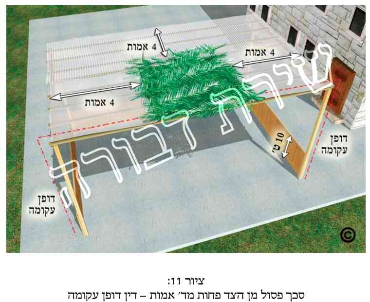 .
היתר זה הינו הלכה למשה מסיני [גמ' סוכה (ד"ו, ב'). רמב"ם (פ"ה מסוכה הי"ד). מרן בשו"ע (סי' תרל"ב ס"א) וש"פ].
למרות שסכך פסול כשהינו באמצע הסוכה הינו פוסל בד"ט (כנ"ל בסעיפים הקודמים), מ"מ כשהסכך הפסול סמוך לדופן אינו פוסל אלא משיעור ד' אמות [גמ' סוכה (די"ז, א'). רמב"ם וטוש"ע (שם)].
טעם ההיתר, משום שכן דרך הכתלים להתעקם [ר"ן, ריטב"א ומאירי (ד"ד, א')].
נחלקו הראשו' בהבנת היתר דופן עקומה:
י"א שאנו רואים את הסכך הפסול כאילו הוא חלק מדופן שהתעקמה בחלקה העליון [רש"י סוכה (ד"ד, א' ד"ה "פחות". די"ז, א' ד"ה "פסולה", "ואם יש", "דרב"). ר"ח (די"א, א'). כס"מ על הרמב"ם (שם), בדעת הרמב"ם. ר"ן ומאירי (ד"ד, א'). ראבי"ה (סוכה סי' תרכ"ט). טוש"ע (סי' תרל"ב)] וממילא נחשב סכך זה מגוף הכותל (רמב"ם ומרן (שם)]. ומ"מ לדעה זו א"א לומר כן באויר שבין הדופן לסכך הכשר אם יש בו ג"ט, כי באויר אין מה שיחשב כדופן [רש"י (די"ז, א' ד"ה "פסולה"). ר"ן ומאירי (ד"ד, א')].
וי"א שאין הסכך הפסול נחשב כדופן, אלא שרואים את הדופן כאילו היא עקומה והולכת תחת הסכך הפסול ומגיעה עד לסכך הכשר, ומוציאה את הסכך הפסול מן הסוכה [רב ניסים גאון (בעירובין ד"ד, ב'). הביא פירוש זה גם רש"י בסוכה (די"ז, א' ד"ה "פסולה"), ודחה פירוש זה. וכ"כ המאירי (ד"ד, א') בשם יש מפרשים. ור' בר"ן והריטב"א (ד"ד, א') שכתבו פירוש זה בשם רש"י. ומאידך הר"ן (די"ז, א') כ' בעצמו בשם רש"י כפירוש הראשון. וכבר העיר ע"כ הב"ח בהגהותיו [כ"ז ראה בב"י (סי' תרל"ב), טוש"ע (סי' תרל"ב ס"א), מ"ב (סי' תרל"ג סק"ז) ואנ"ת (ח"ז ערך דופן עקומה, עמ' רל"ט ואילך)].
ונשוב בס"ד לעניננו. עיקר דין דוע"ק כתבו מרן בשו"ע (סי' תרל"ב ס"א).
ומה שכתבנו שכ"ה בין אם הסכך פסול מדאו' או מדרבנן, כ"כ בשעה"צ (סי' תרל"ב סק"א), וכנ"ל (בהערה כ"ז).
ומה שכתבנו שסמוך לדופן פוסל סכך פסול דוקא כשרוחבו לפחות ד"א הוא כנ"ל בהערה זו.
[62] סב. שיעור זה הוא ד"א עצבות לשיטת הגרא"ח נאה זצ"ל, כמבואר בס"ד לקמן בקונט' מידות האורך שבנספחים (נספח י"ז. ענף 9). והוא 1.88 מ'. ומ"מ את שיעור ד"א עצבות לשיטת החזו"א (שהוא 2.26 מ', כמבואר בקונט' הנ"ל בענף 10) לא הזכרנו כאן בהלכות, כיון דהוי קולא בדאו', וכנ"ל (בהערה ל"ח).
[63] סג. עיקר ד"ז כתבו מרן (בסי' תרל"ב ס"א).
את הסבר דוע"ק כתבנו עפ"י השיטה הראשונה ברש"י (סוכה די"ז, א'), וכפי שכתבו עוד כמה ראשו' (כנ"ל בהערה ס"א), וכפי שפסק מרן בשו"ע (שם).
ומה שכתבנו שדוע"ק הוי הלל"מ ג"ז כנ"ל (בהערה ס"א) עפ"י הגמ' בסוכה (ד"ו, ב'), רמב"ם, שו"ע וש"פ.
בס"ד עלתה מחשבה בלבי לדון מה יהא דין סוכה שגובה הדופן עד הסכך הוא י"ח אמה, ובסוף גובה הדופן יש סכך פסול ברוחב ג' אמה שדינו כדוע"ק. האם פסלינן בזה את הסוכה כיון שגובה הדופן בצירוף הדוע"ק הוי כ"א אמה. ולכאו' תלוי הדבר מה טעם פסול גובה כ' אמה (ר' מ"ב סי' תרל"ג סק"ג). דאי הטעם משום דאז אין צילו מתפשט לכל הקרקע שתחתיו והצל הוא רק מחמת הדפנות ואנן צל סוכה בעינן, הרי לפי"ז לכאו' יש להכשיר בני"ד, דהא סו"ס אין גובה ממשי של כ' אמה, ובעת שהשמש בראש כל אדם ודאי הצל מחמת הסכך. ולטעם שפסול כ' אמה משום דלא שלטה ביה עינא, הרי בני"ד כשרה, דהא סו"ס הסכך הוא בגובה י"ח אמה ותו לא מידי. אך ב' טעמים אלה לא נפסקו להלכה (ר' מ"ב סי' תרל"ג שם). ולפי הטעם שנפסק להלכה, דבעי עד כ' אמה, משום דסוכה דירת ארעי בעינן, ועד כ' אמה א"צ לעשות מחיצות חזקות ודי לעשותן אף במחיצת קנים (כבמ"ב שם), הרי לכאו' בני"ד יש להתיר, דסו"ס המחיצה גובהה רק י"ח אמה. ושמא יש להחמיר לטעם זה, כי כשיש דוע"ק בעי דפנות חזקות יותר כדי להחזיקה.
אלא שבאמת כ"ז אינו, ובס"ד פשוט לענ"ד שהדבר מותר, דסו"ס דוע"ק אינה דופן ממשית, וכלשון רש"י בסוכה (די"ז, א' ד"ה "פסולה") בהסבר דוע"ק, "דחשבינן לסכך כאילו מן הדופן ונעקם" וכו'. והיינו אין זה נחשב כדופן ממשית ע"מ שנחמיר ונפסול הסוכה. וכ"ה אף לפירוש השני של דוע"ק (כשיטת הראשונים האחרים, שדחאה רש"י שם), שכתבו ש"רואין את הדופן כאילו הוא עקום והולך תחת הסכך פסול" וכו'. והיינו לב' השיטות דוע"ק הוי רק "כאילו" זה המשך הדופן, אך לא כדי להחמיר כבני"ד.
[64] סד. משנה סוכה (די"ז, א'). והוא עפ"י הסבר רב ושמואל בגמ' שם (די"ז, א') שהוא משום דוע"ק. וכן אמרו כמה אמוראים בשם רבי יוחנן בירו' (פ"א מסוכה הי"א). ופרש"י (בעירובין ד"נ, ב' ד"ה "ולדופן") שאין הכותל שבתקרה נחשב הפסק. וכ"פ מרן (סי' תרל"ב ס"א). וע"ע באנ"ת (ח"ז עמ' רל"ט-ר"מ).
באשר למיקרים מיוחדים של דופן עקומה, כגון כשאין הדופן העקומה מגיעה לסכך שבאמצע התקרה, אלא יש חלל אויר פחות מג"ט בין הדופן העומדת לבין הסכך הפסול ולאחריו יש סכך כשר, או לגבי מציאות שסמוך לדופן ישנו סכך פסול והוי דוע"ק ורק אח"כ יש חלל אויר פחות מג"ט ולאחריו סכך כשר, ר' לקמן בהערות הבאות (הערות ס"ה-ס"ז).
[65] סה. בני"ד בס"ד יש לדון גבי כמה וכמה מיקרים שכיחים, שהם שייכים לדין דוע"ק. חלק ממיקרים אלה כבר דננו לגביהם לקמן בנספחים בקונטרס צירופי הלכתות (בנספח ט"ז), וחלקם יש לדון לגביהם בנפרד, אי"ה.
כאשר הסוכה הינה בת שלוש דפנות בלבד, ויש סכך פסול סמוך לפחות לאחת הדפנות, כך שחל בכך דין דוע"ק, יש לדון גבי כשרות הסוכה גבי כמה מיקרים: ראשית תלוי הדבר אם בדופן המדוברת (זו שהסכך הפסול סמוך אליה) יש חלון, וכן אם בסכך (בחלק הסמוך לדופן, תוך ארבע אמות או סמוך להם) יש חלל אויר.
אם בדופן עצמה יש חלון, הרי שתלוי הדבר בכמה גורמים: 1) אם החלון (בחלקו התחתון) גבוה מהקרקע לפחות י"ט או פחות מי"ט. 2) אם גובה החלון (היינו חלקו התחתון) גבוה מהקרקע יותר מי"ט, תלוי אם גובה חלל החלון פחות מג"ט או ג"ט ויותר (היינו האם בדוע"ק זו צריך להיתר לבוד או לאו). 3) כשחלל החלון גבוה ג"ט ויותר, הניתן להקל אף בזה (מדין דוע"ק וגוא"ס). 4) אם במקרה הנ"ל (שתחתית החלון למעלה מעשרה טפחים) אסור הדבר, והחלון אמנם אינו מגיע לסכך, אך לחלל החלון ישנה צוה"פ שגובהה לפחות י' טפחים ורוחבה לפחות ד"ט (היינו דוע"ק ע"י צוה"פ). 5) אם לחלון זה אין צוה"פ, או שאין גובהו לפחות י"ט, או שאין רוחבו לפחות ד"ט, אך מ"מ מעל החלון יש מעט דופן ממשית של הסוכה.
מקרה נוסף שבס"ד יש לדון גבי דוע"ק, הוא כשעושים סוכה בעלת שלוש דפנות, שאחת מדפנותיה הינה קיר הבית, ומקיר זה בולט גג לתוך הסוכה לפחות ברוחב ד"ט (היינו כדין סכך פסול), ונמצא שדופן הבית יחד עם גגו הבולט משמשים כדוע"ק לסוכה. אך כיון שגג זה אינו באותו גובה של הסכך אלא גבוה מהסכך, הרי שצריך פה להקל ע"י צירוף של חבוט רמי. והיינו האם שרי צירוף של דוע"ק עם חבו"ר.
ועוד בס"ד יש לדון כאשר יש חלל אויר פחות מג"ט (היינו לבוד) אך בסכך, האם הסוכה כשרה במיקרים הבאים: 1) כאשר אויר זה צמוד לדופן הסוכה, ורק אחריו בהמשך הסכך, יש סכך פסול (היינו דוע"ק ולבוד, כשהלבוד הוא בסכך וצמוד לדופן). 2) כאשר חלל זה (לבוד) בסכך נמצא לאחר הסכך הפסול, והיינו שקודם יש דוע"ק בשלימותה (סכך פסול פחות מד"א), ורק לאחר מכן ישנו חלל זה, ולאחריו מתחיל הסכך הכשר. 3) המקרה הנ"ל, כשיש סכך פסול פחות מד"א, לאחריו אויר לבוד, ושוב יש סכך פסול, שאם נצרף רק את שיעור שני הסככים הפסולים, ללא שיעור הלבוד, יהא סה"כ סכך פסול בשיעור פחות מד"א. 4) כשחלל האויר נמצא בסכך באמצע הסכך הפסול, וכגון שסמוך לדופן יש סכך פסול, לאחריו יש חלל לבוד, ואח"כ שוב סכך פסול, אלא שבסה"כ יש סכך פסול בשיעור יותר מד' אמות, גם ללא חלל הלבוד. והיינו המקרה הנ"ל אך כשבצירוף הסכך הפסול והאויר יש ד"א ויותר.
בס"ד מבוארים כל ארבעת מיקרים אחרונים אלה לקמן בריש הערה ס"ז.
אלה המיקרים הקשורים לדיני דוע"ק ושהינם שכיחים, שנדון עליהם בס"ד בני"ד, וה' יעזרנו לכוון לאמיתה של תורה.
באשר למקרה הראשון, והוא כשקיר הבית משמש כאחת מדפנות הסוכה, ומהבית בולט גג (כגון מרפסת, גגון או צינור) הרחב לפחות ד' טפחים (שהם לפחות 31.5 ס"מ), ואילו בקיר הבית יש חלון הגורם לדופן העקומה (בצידה המאונך) לא להיות שלמה. הנה תלוי ד"ז בכך:
כפי שראינו לעיל (בפרק ג' הערה ז'), אם החלון הינו נמוך, הריהו פוסל לעיתים את הדופן. ובס"ד הסקנו שם שאם החלון אורכו או רוחבו הינם פחות מג"ט הרי ממילא נחשב כלבוד, ואז גם אם חלקו בתוך י"ט התחתונים של הדופן אין הוא פוסל את הדופן. ואם גם אורכו וגם רוחבו הינם ג"ט או יותר הרי שאז לא שייך דין לבוד, ואם החלון אפי' רק בחלקו התחתון הינו בתוך י"ט התחתונים של הדופן, הריהו ממעט משיעור הדופן, ואם יש רק עוד ב' דפנות, וזו הדופן השלישית, כך שאין שיעור סוכה כדבעי (היינו ב' דפנות בצורת גאם ובשלישית יש לבוד, צוה"פ ובאמצע יותר מטפח), הרי שהסוכה פסולה. ומ"מ אם תחתית החלון הינה מעל י"ט מהקרקע, אזי זו נחשבת כדופן כשרה. ע"כ המסקנות שבפ"ג גבי חלון.
וכ"ז מדובר רק מצד הדופן עצמה, ללא בעיות חיצוניות אחרות. אך אם יש בעיה נוספת בדופן (כגון שאנו נעזרים בחלון מצד היתר לבוד, ומעליו יש צורך לצרף גם היתר גוא"ס, או לבוד בסכך) בזה טרם דננו בפרק ג'. ועתה בס"ד נחל לדון במיקרים הבאים:
כאשר יש סכך פסול למעלה, סמוך לסכך:
אם מצד מיקומו של החלון בדופן אין הדופן פסולה, ואילו גובה חללו של החלון הינו פחות מג"ט, הרי שנכנסנו לדין צירוף לבוד ודוע"ק. ר' לקמן בנספחים (נספח ט"ז) בקונטרס צירופי ההלכתות (ענף 6, ובמסקנות שבענף 11) שגבי מציאות שהלבוד נמצא בדופן הסוכה, למעלה סמוך לסכך, זו מחלו' שקולה בראשו' ובאחרו', ועפי"ד הפמ"ג, המ"ב וכה"ח, שכתבו שבמחלוקות בדאו' יש לילך לחומרא, לכן נקטנו שיש להחמיר, כיון שבדאו' עסקינן. עיי"ש. לכן יתקן את סוכתו כראוי או ילך לסוכה אחרת (ומ"מ הוספנו בס"ד, שהמקיל בזה יש לו על מה לסמוך). ואם הסכך הפסול הינו רק מדרבנן, לכאו' כל הצורך בהיתר דוע"ק בני"ד הוי רק מדרבנן (כי מדאו' הגג כשר לסכך), ואז גם לפמ"ג וסיעתו יש להקל לאכול ולישון בסוכה זו [ואם גם יברך ע"כ ברכת "לישב", כבר כתבנו ע"כ בכמה דוכתי, וכגון לעיל בפ"ג סעי' מ"ה, ובהערה ק"כ)]. ואגב, היתה לי הקטן מחשבה שאם לחלון זה יש מסגרת, שמא היא יוצרת הפסק בין גוף הדופן לבין חלל הלבוד, אך לא ראיתי שום פוסק שהחמיר בכך [ור' בסה"ס (במיל' לפ"ז ס"ק כ"ה אות א' וג')].
כשגובה חלל החלון ג"ט או יותר, כך שאין היתר דלבוד, יש לדון בס"ד מצד דוע"ק וגוא"ס (ומסתבר שכ"ה בין אם חלקו העליון של החלון מגיע לסכך, או שבין החלון לסכך יש חלק מדופן). וראה לקמן בנספחים (נספח ט"ז) בקונטרס צירוף ההלכתות (בענף 9), שהסקנו בס"ד שרוה"פ פסקו להחמיר בני"ד, ולכן אין לצרף דין גוא"ס לדין דוע"ק.
אך במקרה זה יש צד אחר לדון להקל, והוא אם לחלון יש מסגרת, והיינו מעין משקוף ומזוזות הגורמים לכעין צוה"פ. ואז הדוע"ק נעשית ע"י צירוף דין צוה"פ. ואכן החזו"א (או"ח סי' ע"ז סק"ה) כ' שכאשר בדופן הסוכה יש חלון בגובה י"ט ורוחב ד"ט, דין החלון כדין צוה"פ [אמנם הא דבעי דוקא רוחב ד"ט, ד"ז שנוי לכאו' במחלו'. שבמ"ב (סי' תר"ל ס"ו) כתב דדי בצוה"פ ברוחב ג"ט, עפ"י הגמ', וכן מצינו בכ"מ שלצוה"פ די ברוחב ג"ט, כגון בדיני שבת וכלאיים (ר' שו"ע סי' שס"ב). ומאידך אף להכשר דופן הסוכה י"א שיש לנקוט שצוה"פ תהיה ברוחב ד"ט לפחות. ר' מ"ב (סי' תר"ל ס"ט) שכתב כך בשם הפמ"ג בשם הגמ"י. וא"כ החזו"א נקט דבעי ד"ט. וכבר כתבנו ע"כ בס"ד לעיל בפ"ג]. וא"כ לכאו' גם בני"ד יש להקל ולצרף דין צוה"פ לדין דוע"ק אף בלא דין גוא"ס והסוכה תהיה כשרה.
אלא דא עקא, שהחזו"א עצמו (סי' ע"ז סק"ז) ועוד פוס' [ר' קהילות יעקב (ליקוטים. ח"ו, כ') ובעמק ברכה (סי' ז' ערך סוכה)] כתבו שטעם הר"ן דא"א דוע"ק כשהדופן לא מגיעה לסכך הוא משום דאין דרך הכתלים להתעקם באופן שאינו מגיע לסכך. ולפי דבריהם יוצא שגם בני"ד יש חסרון בדופן ולא מהני לדוע"ק. הב"ד בסה"ס (מיל' לפ"ז סקכ"ה ריש אות א'), והוסיף שמ"מ כשסוף הכותל מגיע עד הסכך יש לומר דעדיף, וכן בס"ד נלע"ד. וראה להלן בסמוך.
נמצאנו למדים שקשה להקל ולהתיר דוע"ק כשיש חלון כבני"ד, דאע"פ שיש לו מסגרת, גובהו י"ט ורוחבו ד"ט, לכאו' לא מצרפינן כל זאת לדין דוע"ק וצוה"פ יחדיו.
אמנם יש להוסיף ולדון גבי חלון דידן, דלעיתים אין חלל החלון מגיע לסכך, אלא מעל החלון בגובהו יש עוד מעט דופן ממשית. וכתב ע"כ בסה"ס (מיל' לפ"ז רסקכ"ה אות א'), שלטעם הפוס' שמפרשים טעם הפסול בחלון שאין לזה דין דוע"ק משום דאין דרך כתלים להתעקם כשאינם מגיעים לסכך, הרי שאם בגובה החלון יש עוד מעט כותל, י"ל דאין כאן חסרון כלל, דבכה"ג הוי כותל שלם אלא שיש באמצעו חלון, ושפיר עבדינן ביה דוע"ק, אף בלי צוה"פ כלל. אמנם הוסיף שלד' הגר"ע איגר לא מהני המשך כותל זה ע"מ לדונו כדוע"ק. וא"כ גם במציאות כזו אין הדבר פשוט להתיר הסוכה מדין דוע"ק.
נמצאנו למדים שלגבי מציאות כזו שלסוכה יש רק שלוש דפנות, ואחת מהדפנות הינה קיר הבית שיש לו חלון, ומעל חלון זה ישנה מרפסת של שכנים, גגון או מרזב וכדו' (שהינם סכך פסול) הרי שהמסקנה בס"ד היא זו:
ראשית נקדים שאנו עוסקים במקרה שהדופן שתחת הגזוזטרה הינה כשרה מצד עצמה. והיינו שעד גובה י' טפחים יש דופן כשרה. ז"א שתחתית החלון מתחילה רק מגובה י"ט, או שרוחב החלון או גובהו אחד מהם פחות מג' טפחים, כך שהוא נחשב כלבוד, ואז יש דופן של י' טפחים.
אך כיון שבני"ד יש ריעותא של דוע"ק הרי שתלוי הדבר בכמה מציאויות:
אם החלון סמוך ממש למעלה לסכך, וגובה חללו של החלון או רוחבו הינם פחות מג"ט (כך שיש פה דין לבוד), הרי שיש להחמיר שהדופן תחת החלון ומעליו נחשבת כדופן פסולה. והמיקל יש לו על מה לסמוך. ואם הפסול של דופן עקומה הינו רק מדרבנן (כגון שהסכך הסמוך לדופן הינו פסול מדרבנן, כנ"ל בפרק ד'), יש להקל והדופן עם החלון הינה כשרה (וצ"ע אי יברך ע"כ ברכת "לישב בסוכה").
ואם החלון סמוך למעלה לסכך, וגובה חללו של החלון ורוחבו הינם ג"ט או יותר (כך שאין פה דין לבוד) הרי שהדופן פסולה (שאין מצרפים דין גוא"ס לדין דוע"ק). וקשה להקל בכך אף אם יש לחלון מסגרת (שאסור ג"ז ולא מהני צוה"פ).
עד כאן עסקנו כשהחלון הינו למעלה בדופן, סמוך לסכך. אך אם אין החלון ממש סמוך לסכך, אלא מעל החלון יש עוד חלק מהדופן, הרי שהדבר שנוי במחלו' אם דופן זו כשרה, והמיקל יש לו על מה לסמוך.
שאר הצדדים להקל במציאויות השונות של חלון הנמצא בדופן הסוכה כשמעליו יש סכך פסול, צדדים אלה נדחו (ולפחות אין היתרם בשופי).
בס"ד יש עוד לדון כשבדופן שתחת גג זה אין חלון אך יש דלת פתוחה. ולכאו' יש לדון בכך מצד דוע"ק כשבתוכה יש צוה"פ. וא"כ חזרנו לדין צירוף דוע"ק וצוה"פ. אמנם אם יש קיר מעל הדלת עד לסכך, יש לדון להקל יותר בכך, וכנ"ל.
אולם יש להוסיף, שכל הפסולים הללו אמורים רק לגבי המקום של החלון (או הדלת), ומעליו או מתחתיו. אך מצידי החלון אין הדופן פסולה. אלא שאז יש לדון שרק חלק מהדופן הינו כשר. ולכך יש ב' השלכות: אם הסוכה הינה בת ג' דפנות, והחלון או הדלת נמצאים בדופן האמצעית, אזי הסוכה נחצת לשנים כך שלכל חלק אין ג' דפנות והכל פסול, או שניתן להכשיר את כל הסוכה מדין עומד מרובה על הפרוץ, וכ"ש כאן שיש צוה"פ. ואם מקום החלון או הדלת הינן באחת הדפנות המקבילות, אזי תלוי הדבר אם יש הכשר סוכה מצד ג' דפנות כשרות, כנ"ל (בפרק ג').
[66] סו. בענין סוכה בעלת שלוש דפנות, שאחת מדפנותיה הינה קיר הבית, ומקיר זה בולט גג לתוך הסוכה לרוחב הגדול מד"ט (כדין סכך פסול), ונמצא שקיר הבית יחד עם הגג משמשים כדוע"ק לסוכה. אך כיון שגג זה אינו בגובה הסכך אלא גבוה מהסכך, לכן צריך להקל פה מדין חבוט רמי. ונמצא שהסוכה כשרה בתנאי דשרי לצרף ב' הלכתות דדוע"ק וחבוט רמי. ומ"מ מדובר שבסכך, חוץ מדין דוע"ק, הכל כשר, ובתחתית הסוכה יש שיעור של זע"ז כדין. ראה לקמן בציורים בסוף הספר, 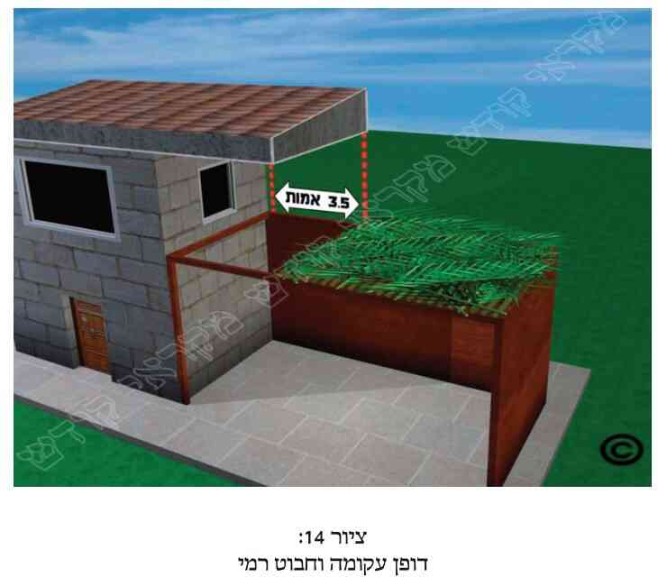 . ואכן הדבר עלול להיות מצוי. ואמר לי רב ישוב מסוים שהיתה זו אצלם שאלה למעשה, כשבשבת סוכות היו רוחות חזקות ועפו הרבה סככים, באופן שלא ניתן להחזירם בחזרה, ובמקום מסוים עף חלק מהסכך והוא התיר את הישיבה בסוכה בשל צירוף של דופן עקומה וחבוט רמי. עכ"ד.
הנה מצינו שד"ז תלוי האם הסכך שעל הסוכה מגיע עד לדופן הבית ומכסה את כל הסוכה, או שהסכך מכסה רק חלק מהסוכה, ואילו את שאר הסוכה מכסה הגג שהינו סכך פסול. ונתחיל מהסיפא.
כאשר אין הסוכה מכוסה כולה ע"י סכך כשר, אלא גגון, מרזב או שאר סכך פסול מאהיל על חלק מהסוכה, ורק על שאר הסוכה יש סכך כשר. הנה בד"ז נחלקו הפוס'. ויש כמה מחלוקות בדבר.
כבר הבאנו לקמן בנספחים, בקונטרס צירופי ההלכתות (נספח ט"ז בענף 9) את מחלו' הטור והר"ן אם אמרינן דוע"ק כשאין הדופן מגיעה לסכך. שהטור (סי' תרל"ב) כ' שאומרים דוע"ק אף כשהדפנות אינן מגיעות לסכך, כיון שרואים את הדופן כאילו היא עולה למעלה מדין גוא"ס, ושוב אומרים דוע"ק. והסביר מרן שם בב"י, עפ"י רש"י, שאין הפסק אויר פוסל אלא בגג הסוכה ולא בדופן, שהרי אומרים בה גוא"ס (כנ"ל בקונטרס צ"ה שם). וכדברי הטור פסקו גם הט"ז, הא"ר ועוד פוס'. ואילו הר"ן (ד"ב, א' בדפי הרי"ף ד"ה "בנה", בד"ט, א' שם ובעוד דוכתי), כתב שאם אין הדפנות מגיעות לסכך, ל"א דוע"ק (עיי"ש בנספחים בקונט' צירופי הלכתות, אי דברי הר"ן גם גבי דוע"ק ולבוד או רק גבי גוא"ס ודוע"ק). וכ"פ להחמיר הב"ח, המ"א (סי' תרל"ב סק"א), בשו"ת פנים מאירות ועוד פוס'.
עפי"ד הר"ן הללו יש שכתבו שלד' הר"ן לא אמרינן דוע"ק וחבוט רמי [ר' שו"ת ארץ צבי (פרומר. סי' מ"ח). שתלה דין צירוף דוע"ק וחבוט רמי, במחלו' אי מצרפינן תרי הלכתות ושלר"ן אין מצרפים]. אלא שבפסתש"ו (סי' תרל"ב הערה 22) וכן בסה"ס (מיל' לפ"ז ססקכ"ז) כתבו שבאמת אין כאן חיסרון של תרי הלכתא, משום שכל הלכה לא צריכה את השניה, וזאת כמבואר בשו"ת רע"א (סי' י"ב), וכנ"ל. והיינו שכתבו שאף לר"ן שרי. אמנם לא ברירא לי האי מילתא. מדוע בני"ד לא צריכא הלכה אחת את השניה. הרי אם לא נאמר דין דוע"ק מאי מהני דין חבו"ר. וכן להפך. הרי לא יהיה פה הכשר סכך כלל. ומ"מ בא"א (בוטשאטש) כתב בהדיא להקל בני"ד, והוסיף שכ"מ משו"ת פנים מאירות (סי' ס"א). הב"ד בפסתש"ו שם.
מ"מ נמצאנו למדים שאף בד' הר"ן שמחמיר שלא לצרף דוע"ק וגוא"ס (ואולי אף דוע"ק ולבוד, וכדו'), נחלקו הפוס' אי יתיר צירוף דוע"ק וחבו"ר.
ומאידך נראה שאף לדעת הטור הנ"ל אין הדבר ברור להקל. שכ' רבינו השד"ח (אס"ד, מע' סוכה, סי' ב' סקט"ז), שסוכה שא' מדפנותיה היא מחיצות הבית, והגג בולט למעלה גבוה מן הסכך, "אפילו למ"ד דאף כשאין הדפנות מגיעות לסכך אמרינן דופן עקומה, הכא לא מהני" וכו'. וצריך שימלא האויר בסכך כשר עד כותל הבית. עכ"ל. וכתב כן בשם ס' יקהיל שלמה (סי' תרל"ב) בשם הרב בני דוד (פאלקון). הב"ד בסה"ס (מיל' לפ"ז סקכ"ז). אמנם מדברי בעהמ"ח סה"ס (שם) נראה שהבין שד' המ"א והמ"ב (סי' תרל"ב סק"ב) אינן כן [עיי"ש שהמ"א והמ"ב בשעה"צ (סק"י) כתבו שלא אמרינן לבוד וחבוט רמי להחמיר. ומדברי הרב סה"ס (בפ"ט סעי' כ"ט, עמ' פ') מתבאר שדברי המ"ב הללו אמורים גם גבי ציור של דוע"ק (כפי הציור שם). וכנראה שהבין שהמ"א והמ"ב הנ"ל פסקו של"א לבוד וחבו"ר להחמיר, אך אמרינן זאת להקל. וממילא אמרינן גם דוע"ק וחבו"ר להקל. וא"כ כן מצרפים תרי הלכתות, אע"פ ששתיהן תלויות זו בזו, ולכן כתב שצ"ע ע"ד השד"ח הנ"ל. אמנם ק"ק לי הקטן. שהרי המ"א (סי' תרל"ב סק"א) פסק כר"ן להחמיר, וכיצד הבין בעל סה"ס שהמ"א מיקל ולא מחמיר כשד"ח. ויש עוד להתישב בדבר]. וע"ע בפסתש"ו.
ומ"מ למעשה מצינו שד"ז תלוי במחלו' הפוס' (שהא"א מתיר בהדיא. והשד"ח בשם כמה פוס' אוסרים בהדיא. ולא ידעתי מדוע בפסתש"ו שם נטה קו להתיר). ועפי"ד הפמ"ג והמ"ב (סס"י תרל"א) שבהלכות סוכה כשהמחלו' הינה בדאו' יש להחמיר, לפי"ז יש להחמיר בני"ד ולפסול הסוכה. ומ"מ נראה שהמיקל יש לו ודאי על מה לסמוך.
אלא שכ"ז מדובר שאין הסכך מגיע עד הדופן, אלא חלק מהסוכה מכוסה בסכך פסול, ומשם ואילך יש סכך כשר. אך כדי לצאת ממחלו' זו ישנן ג' אפשרויות: אפשרות ראשו', שיסכך באופן שהסכך הכשר יגיע עד הדפנות, ואז אע"פ שיהיה מעליו סכך פסול, הרי מתבאר מדברי הפוס' שהסוכה כשרה. שכן מתבאר מדברי הפנים מאירות הנ"ל, וכ"כ השד"ח הנ"ל (ש"צריך שימלא האויר בסכך כשר עד כותל הבית"). וכ"כ בעל סה"ס (פ"ט ססע"י כ"ו, ובמיל' לפ"ו סקכ"ז. ולכאו' יש לחבר דברים אלה ולציין מהכא להתם). ובפסתש"ו (שם) נתן עיצה שיפרוס סדין מהכותל עד לסכך בגובה הסכך, וכך א"צ לדין של חבו"ר. וגם זו עיצה טובה. ואפשרות שלישית הינה שיעשה מחיצה בגובה י"ט ורוחב ז"ט שתעמוד תחת קצה הגג, במקום שמתחיל הסכך, ואז נצרכים רק לדין גוא"ס לבד, וא"צ לשים סכך עד למקום הכותל. אך הריעותא בכך היא שעי"כ מקצר את שטח הסוכה. וכבר כתבנו ע"כ לקמן (בפרק ו' סעי' כ"ז ואילך). ואם רוצה לעשות מחיצה תחת הסכך הפסול (הגג וכדו') כדי ששטח ברוחב פחות מד"ט סכך פסול יצטרף לסכך הכשר ועי"כ להגדיל את שטח הסוכה, ר' לקמן (בפרק ו' הערה ע"ו).
[67] סז. בענין המקרה הראשון (חוץ מענין דופן עם חלון) הנ"ל לעיל בריש הערה ס"ה: כאשר ישנה דוע"ק באופן שסמוך לדופן הסוכה יש סכך פסול פחות מד"א, ולאחריו חלל אויר פחות מג"ט (שהם פחות מ-24.5 ס"מ, והיינו ג"ט שוחקים, לגראח"נ. והיינו לחומרא. ואילו לחזו"א הוי פחות מ-29.5 ס"מ), ר' לקמן בקונט' צירופי הלכתות (נספח ט"ז ענף 7) שבס"ד הסקנו שזו מחלוקת כמעט שקולה. ואע"ג שהדעת נוטה קצת להקל, מ"מ בשל דברי הפמ"ג, שכ"מ שייש מחלו' הפוס' אם הוא מדאו' אזלינן לחומרא ולכן העלנו גבי ני"ד שלכתחי' צריך להחמיר בזה, אך המיקל יש לו ע"מ לסמוך. ודבר זה אמור למשל כשהסוכה סמוכה לקיר הבית, ומהבית בולט גגון, מרזב, או גג של מרפסת שרוחבם פחות מד"א, ולאחריהם חלל אויר פחות מג"ט. ואם הסכך הפסול הינו פסול רק מדרבנן (כמבואר בפירוט לעיל בפרק ד' כולו), ודאי שיש להקל. עיי"ש.
וגבי המקרה השני הנ"ל (בריש הערה ס"ה): דוע"ק שחלל האויר פחות מג"ט והוא סמוך לדופן, ואחריו לכיוון פנים הסוכה יש סכך פסול השייך לדופן העקומה. ר' לקמן בקונט' צירופי ההלכתות שבנספחים (נספח ט"ז ענף 8) שהעלינו בס"ד שאין הכרע ברור מהי דעת רוה"פ בני"ד, ובשל הספק הכרענו להחמיר, עפי"ד הפמ"ג, המ"ב (סס"י תרל"א) וכה"ח, שבדאו' יש להחמיר בכגון ני"ד, ולכן יש להחמיר בני"ד, שאין לדופן זו דין דוע"ק, ואם לסוכה רק ג' דפנות הרי שהסוכה פסולה.
באשר למקרה השלישי (הנ"ל בהערה ס"ה), שבסכך סמוך לדופן הסוכה, תחלתו עשוי מסכך פסול פחות מד"א, לאחריו יש אויר לבוד, ושוב יש סכך פסול, שאם יצרפו את מידות שני הסככים הפסולים (ללא שיעור האויר הלבוד) יהא סה"כ סכך פסול בשיעור פחות מד"א. והיינו ב' סככים פסולים כשאויר ביניהם (כעין דברי מרן בסי' תרל"ב ס"ד). הנה בד"ז נחלקו האחרו'. שלד' הביכור"י (סי' תרל"ב סק"י) עפי"ד המ"א (סי' תרל"ב סק"ה) בני"ד אמרינן לבוד להקל, ולכן חשבינן כאילו ב' חלקי הסכך הפסול מקורבים זל"ז ואמרינן דוע"ק כיון דסו"ס ליכא ד"א סכך פסול. הב"ד בסה"ס (מיל' לפ"ז סקכ"ו), והוסיף שם שהפמ"ג נשאר בצ"ע ע"כ, דמסופק אי אמרינן דוע"ק בהפסק אויר פחות מג"ט. ואילו הגר"ע בתשובותיו (סי' י"ב) דעתו להחמיר. עכת"ד סה"ס (שם). אלא שהמעיין בתשו' הגרע"א הנ"ל יראה שאמנם הביא סימוכין לדעת הר"ן, אך הוא עצמו כתב שקיי"ל כטור שמיקל בזה, ושכ"ד השו"ע (עיי"ש במה שתמה ע"ד המ"א). וכבר כתבנו ע"כ בס"ד לקמן בנספחים בקונטרס הצירופים (נספח ט"ז ענף 5).
ובאשר למקרה הרביעי הנ"ל (שם), והיינו כמקרה הקודם, אלא שבצירוף ב' הסככים הפסולים יש שיעור ד"א או יותר של סכך פסול, נראה בס"ד עפי"ד המ"א והביכור"י הנ"ל, שיש לאסור, דלא חשיב כדוע"ק.
בענין צירוף של סכך פסול עם אויר כשאינם דוקא סמוך לדופן (אינם דוע"ק) ר' לקמן בפרקנו (הערה פ"א). ובס"ד יש להוסיף, שלד' הביכור"י (סי' תרל"ב סק"י) שמכשיר כשיש סכך פסול פחות מד"א סמוך לדופן, ואחריו אויר פחות מג"ט, ויחד הם מצטרפים לד"א, ואפ"ה לד' הביכור"י הסוכה כשרה, דלא מצטרף האויר לסכך הפסול וכשר מדין דוע"ק. וכן כשהיתה דוע"ק פחות מד"א כשבתוכה יש אויר לבוד, שלדעתו אפ"ה כשרה. ומה שיוצא, שלדעתו רק כשהאויר סמוך לדופן הסוכה, בזה לא מקילינן מדין דוע"ק. ולפי"ז יוצא שהדין בני"ד שווה לדין של צירוף סכך פסול ואויר, חוץ מהא שהאויר סמוך לדופן. וכ"ז לד' הביכור"י. ור' בסה"ס (מיל' לפ"ז סקכ"ו) שיש שחולקים ע"ד הביכור"י. וא"כ לדעתם גם בשאר המיקרים יש נ"מ בין ני"ד לבין דין צירוף סכך פסול ואויר (הנזכרים בהערה פ"א). כך בס"ד נלע"ד.
בס"ד נביא עוד מדיני דופן עקומה:
1) דין דופן עקומה לענין הקדמת הדפנות לסכך, ראה סה"ס (מיל' לפ"ט סק"נ) בשם ס' סוכת שלם בשם שו"ת מי נח (סי' י"ח), שאם מכשיר סוכתו בדוע"ק, יניח תחילה הסכך הפסול מן הצד ואח"כ יניח הסכך הכשר באמצע הסוכה, כדי להקדים הדפנות לסכך. עיי"ש. וכ' ע"כ בסה"ס דצ"ע. ובס"ד נלע"ד שכ"ז דוקא אם אמרינן שהדוע"ק הינה ממש כדופן. וכבר כתבנו לעיל בפרקנו שהנ"מ הינה למשל כשגובה הסכך הינו פחות מכ' אמה שאם נמדוד את הדופן העקומה יחד עם הסכך הפסול תהיה הדופן יותר מכ"א. וזה תלוי בטעם איסור הגובה של כ"א. ואכמ"ל. וחכ"א שאף אם נאמר במקרה השני דכשר ולא חשיב כגובה כ"א, מ"מ יש להחמיר בני"ד, דסו"ס הניח סכך כשר מבלי דפנות כלל: לא דופן רגילה ולא דופן עקומה. ע"כ. ומ"מ יש לזכור שכ"ז הוא רק למחמירים שיש דין תולמ"ה בהקדמת הסכך לדפנות.
2) שתי פעמים דופן עקומה בסוכה אחת: כשסכך פסול ברוחב ד"ט הולך "לאורך" כל הסוכה (בת ג' דפנות). והיינו יוצא מהדופן האמצעית עד לדופן הפרוצה. ר' לקמן (בסעיף כ"ד) שתלוי הדבר אם יש שיעור סוכה בצד א' של הסכך הפסול ואין ד"א רוחב בצד השני של הסוכה, כולל הסכך הכשר עם הפסול, שבזה אמרינן דוע"ק ומכשירים את הצד הראשון כאילו יש בו ג' דפנות. ואם בשני הצדדים אין רוחב ד"א, ויש סכך כשר מכל צד כשיעור הכשר סוכה, ד' רוה"פ שכן דנים דוע"ק להכשיר ב' הצדדים. שכ"כ להקל הלבוש (סי' תרל"ב), בית השואבה, עטרת זקנים ועוד פוס'. והמאמ"ר הסתפק בזה. וכ"פ להקל בחזו"ע (דיני הסכך. דס"ז, ב' הערה ל"ב). והוסיף שם בחזו"ע שנ"ל נכון שלא ישבו ב' אנשים בבת אחת משני צידי הדופן העקומה, דהא בדוע"ק אין ישנים ואוכלים תחתיו, וכיצד יברכו שניהם כאחד ברכת "לישב בסוכה", דממ"נ נמצא א' מהם מברך ברכה לבטלה. עיי"ש שהוכיח כן ממשנה טהרות (פ"ה מ"ה), והתוס' בפסחים (ד"י, א'). ועל מקרה כעין זה כתב הביכור"י לצדד להתיר זאת רק בשני בני אדם, אך לגבי אותו אדם, שפעם ישב בצד זה ופעם בצד השני, נשאר שם בצ"ע [הב"ד שעה"צ (סי' תרל"ג סקכ"ג) ופסתש"ו (שם הערה 5)]. וכאשר סכך פסול הולך "לרוחב" הסוכה בת ג' דפנות (היינו צמוד לדופן האמצעית), כך שניתן להתירו ע"י דין דוע"ק, ראה לקמן בדיני סכך פסול (סעי' כ"ה).
3) אי צוה"פ שבאמצע הסוכה חולקת את הדופן העקומה, והיינו שתחת הדופן העקומה, באמצעה, ישנה צוה"פ. ר' בסה"ס (מיל' לפ"ט סקנ"ג) שדן בזה ונשאר בצ"ע. וע"ע בפסתש"ו (סי' תרל"ב ססק"ב).
4) סוכה בת ג' דפנות. וכל הדופן השלישית נמצאת תחת הדופן העקומה. כ' בסה"ס (שם סקנ"ד) שנחלקו בכך האחרו' אי אמרינן בזה דוע"ק והסוכה כשרה, אם לאו.
5) דופן עקומה למטה: כשהסוכה נמוכה מי"ט וחקק בה כדי להשלימה לי"ט, ובין החקק לכותל יש ג"ט ויותר (היינו שאין לבוד), דאז אין לה מחיצות, לדעת הלבוש הסוכה פסולה, שהרי אין לה מחיצות. הב"ד בסה"ס (שם סקנ"ה), ולמד מזה שאם היתה גבוהה עשרה היינו שפיר אומרים דוע"ק למטה. עיי"ש. ואילו מהבגדי ישע (לבעל השל"ה) מבואר דל"א דוע"ק אלא למעלה. וע"ע באנ"ת (ח"ז עמ' רמ"א-רמ"ב).
6) בענין דופן עקומה אחת הנמצאת בין שתי סוכות ומשמשת דוע"ק לשתיהן. והיינו שישנן שתי סוכות צמודות זל"ז, ובגג של שתיהן, בצד שהן נושקות זו לזו, יש סכך פסול בכל אחת פחות מד"א. האם שרי, או דפסלינן משום דהוי תרתי דסתרי, כיון שדופן אחת יכולה לשמש ולהכנס בו זמנית רק לסוכה א' ולא לשתי סוכות [ואגב שמעתי "בשם" הגר"מ מאזוז שליט"א, שצ"ל "תרי דסתרי", משום שזה לשון זכר (כמו תרי זוזי דחד גדיא), ואין לומר "תרתי דסתרי", כי תרתי זה בלשון נקבה. אך לא שמעתי זאת ממנו. ונלע"ד שיש גם מקום לומר תרתי דסתרי, כשמדובר בתרי הלכות, תרי הלכתות וכדו', שהן בלשון נקבה].
כתבו הפוס' להתיר בני"ד. שעפי"ד הלבוש (סי' תרל"ב ס"ב) כ' בס' בית השואבה (דיני דברים הפוסלים בסכך, סק"ה) להקל בני"ד. וכ"כ בעטרת זקנים (סי' תרל"ב). וכ"כ להקל בחזו"ע (דיני הסכך, הערה ל"ב, דס"ז, ב'-דס"ח, א'), בסה"ס (מיל' לפ"ט סקנ"ב) ופסתש"ו (סי' תרל"ב הערה 13). ור' במאמ"ר (סי' תרל"ב סק"ה). ואגב. כיון שהתירו זאת הפוס' הללו, הרי שהם רואים המציאות כאילו הדופן האמצעית מתחלקת בעוביה לשנים - חצי א' לצד סוכה א' וחצי שני לסוכה השניה. ולכאו' יש לדון בכך גבי שיעור עובי הדופן. שאם הדופן האמצעית הינה ממילא יריעה אחת דקה, הרי ע"י חלוקה זו היא תהיה דקה מן הדקה, שמא אינה ראויה לעמוד ברוח מצויה. ומ"מ לא ראיתי שהפוס' דנו ע"כ מצד זה. ונראה דס"ל שאין בכך בעיה.
7) סוכה שהסכך הפסול מרובה על הכשר, להתירה ע"י דין דוע"ק (שנאמר שהסכך הפסול הקרוב לדופן יחשב כדוע"ק), ראה בסה"ס (מיל' לפ"ט סקי"ח) שהאו"ש (פ"ה מסוכה הי"ד) והדמשק אליעזר (סי' תרל"ב סק"א) התירו זאת. וע"ע שם בסה"ס עוד חקירות על מיקרים בכגון דא.
8) הסתפקתי גבי סוכה שיש לה שתי דפנות עקומות באותה דופן, כעין שתי מדרגות. והיינו שתחילה יש דוע"ק אחת שיש בה סכך פסול פחות מד"א, ובמקום שנגמר הסכך הפסול, מתחילה לעלות דופן חדשה במאונך למעלה (היינו זו דוע"ק חדשה מגובה הסכך ולא מהקרקע), ושוב יש שם סכך פסול פחות מד"א. אלא שאם נצרף את ב' הסככים הפסולים יהיה סכך פסול יותר מד"א. האם רואים את ב' הסככים הפסולים כמחוברים, והסוכה פסולה, או שכל סכך פסול נחשב בפנ"ע והסוכה כשרה. בס"ד נלע"ד שאם סה"כ כל השטח המאוזן (היינו שמחברים את ב' הסככים הפסולים) ואז רוחבו ד' אמות, הסוכה פסולה ואם לאו, כשרה.
9) שאלתי את הגרא"י אולמן שליט"א בענין דברים שאסור לשים אותם בסוכה, המותר לשים אותם בסוכה כשהם רק תחת הדופן עקומה. שמצד אחד זה לא נחשב כשטח הסוכה הכשר, אך מצד שני כל מי שנכנס לסוכה רואה את הדברים הלא מכובדים שנמצאים שם. וענה לי הגרא"י אולמן שליט"א שהפני יהושע כתב להקל בזה. ושאלתי אם גם הגראי"א עצמו מסכים לכך. ואמר שמסכים לכך. ושאלתי, אך מדוע להקל, הרי סו"ס זה לא מכובד שיהיו בסוכה דברים כאלה. והסכים הגראי"א שיש בעיה בכך, ולמרות שלא דחה במפורש את דברי הגאון הפנ"י, מ"מ הבנתי ממנו שאם זה כך אז אכן יש להמנע מכך. ומ"מ הוסיף שהביכורי יעקב כתב שלקישוטים שבדופן העקומה יש קדושה כמו לקישוטים שבשאר הסוכה הכשרה. עכת"ד. ומ"מ בס"ד נלע"ד שאין לחלק אם הדוע"ק הינה דופן הכרחית להכשר הסוכה, דמצד מראית עין מה לי דופן הכרחית להכשר הסוכה או שאינה הכרחית.
10) בענין תנאי והגדרת הדפנות לדוע"ק, ר' בסה"ס (מיל' לפ"ט סקמ"ט). ועוד בענין דוע"ק שהינה ביותר מצד אחד בסוכה, ראה בר"ן (ד"ב, א' מדפי הרי"ף סוד"ה "בנה").
ועוד מדיני דוע"ק ר' בסה"ס (מיל' לפ"ז סק"ג אותיות ד' וה') ובפסתש"ו (סי' תר"ל סק"ו).
[68] סח. בסעיף הקודם דננו בס"ד גבי סוכה שיש סכך פסול סמוך לדופן (כגון מרפסת של שכנים, גגון וכדו'), וממילא ממעט הוא את שיעור הסוכה. אך בני"ד עסקינן שבשל מיעוט שטח הסוכה נפסלה הסוכה כי אין בה ז"ט על ז"ט. ודנו הפוס' אי מהני לעשות מחיצה תחת חלק מהסכך הפסול, באופן שיהא סכך פסול ברוחב פחות מג"ט, עפי"ד מרן (סי' תרל"ב ס"א) שבסוכה קטנה (כבני"ד, דהא אין בה זע"ז. דאם היה בה שטח זה לא היינו צריכים לקולא דידן, אא"כ היינו רוצים להגדיל שטח הסוכה), הרי שבזה סכך פסול פוסל רק מג"ט ואילך, ובפחות מג' כשרה הסוכה, ואף ישנים תחת הסכך הפסול, וכן מצטרף הוא להשלים הסוכה לשיעור.
ובזה יש מהפוס' שהתירו לכתחי' לעשות מחיצה כזו ויש שאסרו. ומבין המתירים יש הסוברים שאף די לעשות מחיצה כזו ע"י צוה"פ (ולא מחיצה גמורה ברוחב ז"ט וגובה י"ט), ויש מהמתירים שזאת כבר לא התירו, אלא רק ע"י מחיצה גמורה. ור' מה שנכתוב על כך בס"ד לקמן (בפרק ו' סעיף כ"ז ואילך).
[69] סט. עיקר ד"ז של חלל אויר בסכך הסוכה הוא עפ"י מימרא דרבה משמיה דתלמידי דרב, בגמ' סוכה (דט"ז, א', וכן מהא דפסל בדי"ט, א'). וכ"פ מרן (סי' תרל"ב ס"ב), דאויר בין בסוכה גדולה בין בסוכה קטנה, בין באמצע בין מן הצד, שווים, דבג"ט פסולה, ובפחות מג"ט כשרה, ומצטרף להשלים הסוכה, ואין ישנים תחתיו. ע"כ.
והטעם דחלל האויר חמיר מסכך פסול, משום שבאויר נראה טפי לעין ההפסק בסכך, ממה שנראה בסכך פסול [ט"ז. ח"א. מ"ב (סי' תרל"ב סק"י). כה"ח (סקט"ו) וש"א. ור' לקמן בסמוך מש"כ ש"פ ע"כ].
ובענין במה חמיר אויר מסכך פסול, מצינו כמה דברים: 1) בסוכה גדולה באמצע הסוכה, סכך פסול פוסל בד"ט, ואילו אויר פוסל בג"ט. 2) בסוכה גדולה כשהסכך הפסול נמצא בצד סמוך לדופן, הוא פוסל הסוכה בד' אמות (שהם כ"ד טפחים), ואילו האויר פוסל כבר בג"ט. 3) סכך פסול פחות מד"ט שרי לישן תחתיו (לרוה"פ. ויש מחמירים רק בפחות מג"ט, כנ"ל בסעי' ט"ו). ואילו אויר אפי' פחות מג"ט אין ישנים תחתיו [כנראה למעיין בשו"ע (סי' תרל"ב סעי' א' וב'). וכ"כ הט"ז, המ"ב (שם), כה"ח (סקט"ו), סה"ס (פ"ט סי"ט) וש"פ].
בחזו"ע (דיני הסכך סוף הערה ל"ג) כ' שלפי"ד הט"ז הנ"ל, יוצא שסכך פסול של זכוכית פוסל בג"ט, כיון שנראה ההפסק לעין כל. אולם כיון שהרב ק"נ (סוכה די"ט, א' סק"ל) מיאן בטעמו של הט"ז, דמי יכריחנו לתת טעם על הלל"מ זו יותר משאר הלל"מ [וכ"כ גם הרב נתיב חיים ע"ד הט"ז (בסי' תרל"ב)], כתב בחזו"ע דלפי"ז אין להתחשב בטעם זה להוציא הזכוכית מכלל סכך פסול, ולכן דינו שפוסל רק בד"ט. וכ"כ בשו"ת קרית חנה דוד. עכת"ד.
[70] ע. הא דחלל אויר פוסל הסוכה כשיש בו ג"ט ומעלה, כ"כ מרן (סי' תרל"ב ס"ב), וכנ"ל בהערה הקודמת.
הטעם שאויר פחות מג' אינו כשר מדין לבוד, כתבו הרא"ש והטור (סי' תרל"ב) משום דלפי"ז תהיה הסוכה חמתה מרובה מצילתה (הב"ד בסה"ס מיל' לפ"ט סקכ"ד). ור' לקמן (בסוף הערה ע"ג) שאכן למתירים לישון תחת אויר פחות מטפח, יש להזהר שלא יהיו הרבה מקומות כאלה מחשש של חממ"צ.
ומה שכתבנו ששיעור ג"ט הוא 23 ס"מ, הוא שיעור ג"ט לשיטת הגרא"ח נאה במידות עצבות. דיש לילך לחומרא בני"ד במידות עצבות (עיי"ש שהוא שיעור 23.5 ס"מ). וכיון דבדאו' עסקינן, ושיעורי החזו"א הינם שיעורים גדולים והוי קולא בדאו', לכן כתבו בס"ד בהלכות רק את השיעור לפי הגראח"נ (דבשיעורי החזו"א ג"ט עצבים הם 28.3 ס"מ).
ובענין שיעור חלל האויר הנ"ל, מתי פוסל הוא את כל הסוכה. כפי שכתבנו בהלכות, אורך החלל הפוסל את הסוכה הינו ג"ט. והשאלה היא לגבי רוחבו. האם אפי' אויר בשיעור ג"ט על ג"ט פוסל את כל הסוכה, או דוקא אויר ג"ט המהלך על פני כל אורך הסוכה פוסלה. הנה מצינו בני"ד כמה מקורות שלכאו' סותרים זא"ז. שעל מש"כ מרן (סי' תרל"ב ס"ב) שאויר בין בסוכה גדולה בין בקטנה, בין באמצע בין מן הצד פוסל בג"ט, כתב ע"כ הרמ"א: והא דאויר פוסל בג', היינו דוקא שהפסיק הסוכה לשנים, ולא נשאר שיעור הכשר סוכה עם הדפנות במקום אחד. ע"כ. והיינו שג"ט פוסלים דוקא כשהולכים לאורך הסוכה באופן שפוסלים אותה. ומאידך מצינו פוס' שכתבו ששיעור ג"ט וד"ט שפוסלים הסוכה הם באמת ג' על ג' טפחים וכן דע"ד טפחים. שכ"כ הפמ"ג (א"א סי' תרל"ב סק"ד), וכ"כ בסה"ס (מיל' לפ"ט סכ"ט) ופסתש"ו (סי' תרל"ב הערות 6,10,56).
ועפי"ז הגענו למסקנה, בדיבוק חברים, שהכלל הוא שריבוע של גע"ג או דע"ד הינו מקום פסול. ושיעור זה אמור לגבי ב' דברים: 1) שיעור איסור ישיבה תחתיו 2) שיעור לפסול את כל הסוכה, אך רק כשבשל כך לא ישאר בה שיעור הכשר סוכה של זע"ז שלמים. והיינו גם בסוכה גדולה מזע"ז, אלא שלא ישארו זע"ז כשרים (מעין מש"כ המ"ב סי' תרל"ב סק"ח). ואילו מש"כ הרמ"א הנ"ל אמור אף גבי סוכה גדולה, ואף שישארו בה זע"ז סכך כשר, אפ"ה כשיש אויר ג"ט באורך כזה שמפסיק הסוכה לשנים ולא נשאר שיעור הכשר סוכה עם הדפנות במקום אחד, אז הסוכה פסולה, ולא מתחשבים בפסול של גע"ג או דע"ד. ואם מרן אינו סובר כרמ"א בזה, יתכן שמרן פוסל את כל הסוכה אף כשבסוכה גדולה יש סכך פסול ברוחב ד"ט שנכנס לתוכה מאמצע הדופן האמצעית לכיוון הפרוץ, ואינו חוצה אותה לכל אורכה. וצ"ע (אמנם יש להעיר שמרן בב"י לא העיר ע"ד הטור ששם יסוד דברים אלה. ועוד לגבי מנהג הספרדים עיין לקמן בהערה ע"ג). ומ"מ יש עוד דין פרטי, והוא שבאויר שאין בו גע"ג, שאינו פוסל ואפי' מצטרף לסכך הכשר, לעיתים אין יושבים תחתיו (כמבואר לקמן בהערה ע"ג). כ"ז הסקנו בס"ד בדיבוק חברים. וע"ע בסה"ס (מיל' לפ"ט סקכ"א), ובפסתש"ו (סי' תרל"ב סקי"א), גבי אויר שבצד הפרוץ.
ובאשר למסקנה בני"ד: בס"ד נראה שתלוי הדבר באיזו סוכה מישתעינן גבי חלל האויר שאורכו ג"ט. גבי סוכה קטנה הרי שהסוכה פסולה אף כשרוחבו ג"ט בלבד (והיינו בשטח גע"ג. דפחות מכך מתכשר ע"י לבוד). ובסוכה גדולה תלוי הדבר: אם בשל האויר לא ישארו בה זע"ז, והיינו שיעור הכשר סוכה, הריהי פסולה גם כשהאויר הינו רק גע"ג (כעין המ"ב סק"ח). אך אם אין האויר ממעט את שיעור הכשר הסוכה, הריהי פסולה רק כשהפסיק הסוכה לשנים ולא נשאר שיעור הכשר סוכה עם הדפנות במקום אחד (כרמ"א ססע"י ב').
ובקיצור נסכם בס"ד הדברים:
אויר פחות מג"ט:
בין בסוכה גדולה ובין בקטנה אינו פוסל הסוכה והיא כשרה. ויותר מכך, מצטרף הוא לשיעור הכשר הסוכה בסוכה קטנה (מרן סי' תרל"ב ס"ב).
ואם האויר שרוחבו פחות מג"ט נמשך לכל אורך הסוכה, אע"פ שהסוכה כשרה אסור לישון תחתיו (רמ"א שם ס"ב). והוסיף הרמ"א, שאף אם אינו נמשך לאורך כל הסוכה, אם יש באויר לעמוד בו ראשו ורובו, אסור לישון תחתיו, ואם לאו - מותר.
ואם באויר יש ג"ט או יותר:
כאשר אויר ג"ט או יותר נמשך לכל אורך הסוכה, בין בסוכה גדולה ובין בסוכה קטנה, הסוכה פסולה (מרן ורמ"א סי' תרל"ב ס"ב). והיינו כאשר לב' הסוכות אין שיעור כראוי בשטח, או שאין להן מספיק דפנות.
ואם אינו נמשך לכל אורך הסוכה, אינו פוסל את כל הסוכה, אך אסור לישון תחתיו (מרן שם ס"ב).
ומ"מ יש עוד להוסיף, שישנם מיקרים יוצאים מהכלל, שגם בסוכה גדולה כשאין האויר עובר דרכה, הריהי ספק כשרה. וכגון מש"כ בסה"ס (במיל' לפ"ט סק"ל אות ג') גבי סוכה בת ג' דפנות שהאויר צמוד לדופן האמצעית, באמצעה. ושיעורו גע"ג טפחים. ולאחר סיום ג"ט אלה נמשך סכך כשר עד לדופן הפרוצה. והיינו שיש סכך כשר לפחות ד"ט משלושת צידי האויר, והצד הרביעי הינו הדופן האמצעית. ונשאר בצ"ע. וכן עיי"ש (במיל' לפ"ז סק"ד אות ב') גבי סוכה גדולה בת ג' דפנות שיש בה אויר גע"ג, והוא באחת מפינות הדופן האמצעית. וגם בזה נשאר בצ"ע.
ומה שכתבנו שכ"ה בין באמצע הסוכה ובין בצידה, ג"ז כתב מרן (סי' תרל"ב ס"ב). והטעם שפסולה אף מהצד, שהרי אין כאן דופן לסוכה דבזה לא שייך לומר דוע"ק כיון שאין כאן אלא אויר [בה"ל (סי' תרל"ב ס"ב ד"ה "אויר")].
[71] עא. מרן (סי' תרל"ב ס"ב). והגדרת סוכה קטנה וגדולה ראה לעיל (בסעיף י"ג). וע"ע לעיל בסוף הערה ע' מיקרים מיוחדים גבי סוכה גדולה, שאע"פ שהיא גדולה יתכן ותפסל באויר גע"ג.
[72] עב. מרן (סי' תרל"ב ס"ב) עפי"ד רש"י בסוכה (די"ט, א' ד"ה "אמר ליה רבי אבא"). והטעם, דבפחות מג"ט אמרינן לבוד וכסתום דמי [לבוש. בה"ל (סי' תרל"ב סעי' ב' ד"ה "בפחות"). כה"ח (סקי"ד)]. אמנם יש להעיר שיש מיקרים שאין האויר מצטרף להשלים שיעור הסוכה. והוא בסוכה קטנה (ששטחה רק זע"ז) בת ג' דפנות בלבד כשסמוך לדופן הפרוצה יש חלל אויר ב' טפחים לכל אורך הדופן הפרוצה. כתב בסה"ס (מיל' לפ"ט סק"ל) שבמקרה זה הסוכה פסולה. ואם יש בדופן הרביעית קיר בגובה י"ט, הרי עסקינן בצירוף גוא"ס ולבוד (בסכך). ור' ע"כ במ"ב (סי' תר"ל ס"ק מ"ג-מ"ד, ומאידך בסקל"א). וכן בסה"ס (מיל' לפ"ט סקל"ג) שהסתפק בזה. אמנם אם יש בדופן הרביעית קיר שלם עד גובה הסוכה, או ששם מתחילה תקרת המרפסת, כתב שם בסה"ס להקל. עיי"ש. וראה בציורים שבסוף הספר 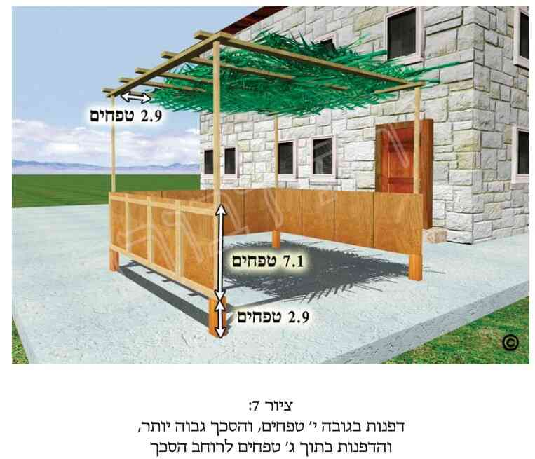 .
[73] עג. הא דאסור לאכול ולישון תחת אויר אם יש בו ג"ט על ג"ט, כן עולה מדברי מרן (סי' תרל"א ס"ד, וסי' תרל"ב ס"ב), וכ"מ מדברי הרמ"א (סי' תרל"ב ס"ב), המ"ב (סי' תרל"ב ססקט"ז, מתיבות "ומ"מ") וסה"ס (פ"ט הערה 48). וכ"כ בהדיא בפסתש"ו (סי' תרל"ב סק"א ד"ה "וכל זה"). וראה עוד לעיל (בהערה ע').
ובענין מה שכתבנו גבי אויר שהוא פחות מג"ט. עיקר ד"ז כתבו רש"י בסוכה (די"ט, א' שם), וכ"פ מרן (סי' תרל"ב ס"ב) גבי אויר פחות מג', דהסוכה כשרה ומצטרף להכשיר הסוכה ואין ישנים תחתיו".
ואמנם הן גבי אכילה והן גבי שינה ישנן דעות שונות גבי אויר פחות מג"ט.
שלגבי איסור שינה תחת אויר פחות מג"ט כתבו התוס' בסוכה (די"ט, א' ד"ה "לא יהא") דשרי לישון תחתיו (עיי"ש שכתבו שתלוי הדבר בגירסאות). אלא שבסוף דבריהם חזרו בהם בשל דברי הירו' בברכות (פ' "שלושה שאכלו") שכתבו שאין ישנים תחתיו, והיינו כרש"י דלעיל. וגם הרז"ה בעל המאור כתב שאמנם בדברי הגאונים נמצא בחילוף דברי רש"י (והיינו שישנים תחתיו), אלא שנראה שלמעשה אין ישנים תחתיו, כירו' הנ"ל וכפרש"י. וכ"כ הר"ן (שם בסוכה) שהעיקר כפרש"י (אלא שהוסיף שמסתבר שדוקא כשיש בו כדי לישן, כלומר שעומד ראשו או רובו תחתיו, הלא"ה מותר, שאינו חייב לעשות כמין בית). עכ"ד. וכ"כ בחי' הריטב"א (בסוכה שם), וכן בס' ההשלמה ובס' המכתם [הב"ד ביבי"א (ח"ד סי' מ"ט ססק"ה)].
ואמנם הרדב"ז בשו"ת (ח"ד סי' רמ"ו. והוא סי' אלף שי"ז) כ' וז"ל: ויש מחמירין יותר שכתבו שאין ישנין תחת אויר, וזו ודאי חומרא גדולה היא, שהרי ראשו ורובו תחת סכך הכשר הוא ישן, שהרי ג' טפחים אין אדם ישן תחתיהם, אם לא נדחוק דאיירי בג' טפחים אויר והוא ארוך באורך אדם בינוני והוא ישן על צידו, שנמצא כולו ישן תחת אויר, וכה"ג מסתבר טעם המחמירים. עכ"ל. וכ"כ הכנה"ג בהגב"י והעו"ש. אלא שחלקו ע"ד הרדב"ז הרבה פוס' [מהם בית השואבה (דיני הסכך סק"י. עיי"ש שכתב דאיך כתב שיש מחמירין בהא, ה"ז מפורש בפ"ק דסוכה די"ט, ובפרש"י שם. וכן הסכימו רוה"פ. וכן מש"כ אם לא נדחוק וכו' ה"ז מפורש כבר בדברי הרא"ש ורי"ו דמיירי שהאויר מהלך ע"פ כולה, וכן הר"ן הרי כתב דמיירי שיש בו כדי לעמוד ראש או רובו). וכ"כ בס' יקר הערך. הב"ד כה"ח (סקט"ז), יבי"א (ח"ד שם) וסה"ס (מיל' פ"ט סקכ"ז)]. וכן פסק להחמיר בזה גם מרן, כנ"ל, וכן הרמ"א, המ"ב וכל שאר הפוס'.
ובאשר לאיסור האכילה תחת אויר ג"ט. אמנם מרן (שם) כתב האיסור דוקא גבי השינה (שכ"כ רש"י בסוכה די"ט סוע"א, וכנ"ל). ואילו במלאכת שלמה (על המשניות סוכה פ"ב מ"א) כתב לחדש שמה שאמרו שאויר פחות מג"ט אין ישנים תחתיו, היינו דוקא שינה, אבל אכילה מותר. עכת"ד [הב"ד בסה"ס (מיל' לפ"ט סקכ"ח)]. אלא כיון שהאחרו' סתמו הדבר, משמע שלא חילקו, ואסרו הן שינה והן אכילה. וכ"כ בהדיא מרן הח"ח בבה"ל (סי' תרל"ב ס"ב ד"ה "ואין") בשם האחרו', והוסיף שמרן בשו"ע נקט שינה בכל מקום, משום שבזה אסור אפי' ארעי, משא"כ אכילה. וכ"כ כה"ח (סקי"ז) וחזו"ע (דיני הסכך סל"ג). וכ"נ בס"ד עיקר.
ובאשר לתוקף האיסור, כתב בבה"ל (סי' תרל"ב ס"ב ד"ה "ואין") דכ"ז הוי מדאו'. עיי"ש שהוכיח כן מהגמ' בסוכה. וכ"כ בסה"ס (במיל' לפ"ט סקכ"ג). וכבר הזכרנו לעיל שהט"ז כתב טעם לחומרת אויר על סכך פסול. ומה שהעירו על דבריו הק"נ והנתיב חיים.
ומה שכתבנו שכל ד"ז מדובר כשרוחב האויר הינו פחות מג"ט, הוא עפ"י המ"ב (סקי"א) וכה"ח (סקי"ט).
ומה שכתבנו דהו"ד כשהחלל עובר לכל אורך הסוכה, הוא עפי"ד התוס' בסוכה (די"ז, א' ד"ה "אויר"), רי"ו בתולדות אדם וחוה (נתיב ח' ח"א), הרמ"א בד"מ (סי' תרל"ב) ובמפה (שם רס"ב). וכ"פ האחרו'. וכ' העט"ז, שאם אין האויר הולך באורך כל הסוכה והוא פחות ברוחבו מג"ט, ישנים תחתיו. ומטעם זה אין נזהרין מלישן תחת נקבים פחות מג"ט (הב"ד כה"ח סקס"ח). והוא כעין דברי הר"ן (ספ"ק דסוכה) והרמ"א (שם), שכתבו שאם אינו הולך ע"פ כל הסוכה ושאין לעמוד בו ראשו ורובו (כדלקמן בסמוך), ה"ז מותר, דהא אין סוכה שאין בה נקבים נקבים.
ומה שכתבנו שלמנהג האשכנזים אין לישב תחת האויר כשהאויר רוחבו פחות מג"ט, אף כשאינו עובר ע"פ כולה, מ"מ אם אדם יכול לעמוד או לשבת או לשכב (על צידו) באופן שראשו או רוב גופו יהיו תחת האויר, כך הסקנו בדיבוק חברים עפי"ד הר"ן בסוכה (די"ט, א'), המאירי, המכתם (בסוכה די"ז, א'), התוס' (די"ז, א' ד"ה "אויר" ודי"ט, א' ד"ה "לא"), הרמ"א בד"מ ובמפה (סי' תרל"ב ס"ב), חזו"א (סי' קמ"ד סק"ה) ופסתש"ו (סי' תרל"ב הערה 61) עפי"ד שו"ת שלמת חיים וערוה"ש (סי' תרל"ב ס"ה) בהבנת הרמ"א הנ"ל. וע"ע בפסתש"ו (שם הערה 60).
ומה שכתבנו שלמנהג האשכנזים כ"ה כשראשו "או" רוב גופו יהיו תחת האויר. אמנם הרמ"א (שם) כתב ראשו ורובו, אך כבר כתב הר"ן (בדי"ט, א'), דהו"ד כשיש בו כדי לישן תחתיו, כלומר שעומד (היינו נמצא) בו ראשו או רובו תחתיו (של האויר). הלא"ה מסתברא דמותר לישן תחתיו, משום שאינו חייב לעשות סוכה כמין בית. עכ"ד. וכ"כ בד"מ, המ"ב (סקי"ב) וכה"ח (סק"כ).
לד' החזו"א (סי' קמ"ד סק"ה) ישנן כמה הלכות בני"ד: 1) אויר פחות מג"ט רוחב לאורך כל הסוכה, אסור לישון רוב ראשו או רוב גופו תחתיו. 2) ה"ה כשאמצע גופו תחת האויר וקצותיו תחת הסכך, אף כשלמעשה רוב גופו הוא תחת הסכך, אין לישן תחתיו. 3) כשאין האויר לכל אורך הסוכה, אם רוב ראשו תחת האויר, אין ישנים תחתיו. 4) כשהאויר רק עד רוב אורך הסוכה או רק לאורך ז"ט, ספק אי חשיב כלאורך כל הסוכה. 5) כשהאויר רק במיעוט הסוכה, אם מקצת ראשו של האדם או מקצת גופו תחת האויר, ישנים תחתיו [הב"ד בסה"ס (פ"ט מהדו' תשנ"ג עמ' ע"ה)].
ובאשר לדעת הספרדים בני"ד גבי ב' התנאים שכתב הרמ"א שאם הם לא מתקיימים, שיש להקל. הנה הרמ"א הנ"ל כ' דמה שהסכך פסול לישב תחתיו כשיש אויר אפי' פחות מג"ט הוא דוקא כשמהלך על פני כל אורך או רוחב הסוכה, וכן אם יש בו כדי לעמוד בו ראשו ורובו. אבל בלא"ה שרי. אך מרן לא הזכיר ב' תנאים אלה, ולכאו' משמע דס"ל להחמיר, שגם בלי תנאים אלה אין לישב תחתיו. אלא שכאן עלינו לראות בס"ד מהי באמת ד' מרן בני"ד בשאר דוכתי. וכן בס"ד לברר כיצד הספרדים פוסקים בכגון דא (כגון לפי מה שכתבנו לעיל בפרקנו הערה כ"ח, האזלינן בתר הב"י אע"פ שבשו"ע לא פסק כלל ד"ז). ונחל בס"ד לברר מהי דעת מרן.
הנה הרמב"ם (פ"ה מסוכה הי"ט וה"כ) הזכיר דין אויר בסכך. בהלכה י"ט כתב דין חממ"צ כשאין אויר במקום אחד בגודל ג"ט. ובהלכה כ' הוסיף, שאם באויר יש ג"ט, בין באמצע בין מהצד ה"ז פסולה. וכ' ע"כ מרן בכס"מ (בהל' כ') גבי אויר שיש בו ג"ט, דהא דמשמע דבסוכה גדולה אויר מן הצד פוסל, היינו כגון שהוא מפסיק כל הסוכה, ולא נשאר לצד דופן האמצעית שיעור סוכה וכו'. עכת"ד. והיינו למרן בכס"מ אויר ג"ט פוסל אם הוא עובר לכל אורך הסוכה (כשגורם שאין שיעור זע"ז רצופים לסכך כשר), וכ"ז הוא אפי' לדעת הרמב"ם.
גם בב"י (סי' תרל"ב ס"ב) כ' מרן בשם הרא"ש, דלא תיקשי לך איך יוכל אדם להזהר בסוכה מלאה נקבים, שלא יישן תחת הנקבים, דהכא מיירי כשהאויר מהלך בכל אורך הסוכה. עכ"ל [ובאמת דברי הרא"ש הללו (מפ"ק דסוכה סס"י ל"ה) בשם רבי יצחק בן אליעזר, לקוחים כבר מהתוס' בסוכה (די"ז, א' ד"ה "אויר"). וכ"כ הד"מ בשם רי"ו (תא"ו נתיב ח' ח"א)].
נמצאנו למדים שמרן הזכיר קולא זו, דאויר ג"ט פוסל רק כשמהלך לכל אורך הסוכה. אמנם יש להעיר, שבכס"מ הנ"ל הזכיר ד"ז דוקא כשעי"כ מחלק את הסוכה באופן שאין לה הכשר סוכה מצד השטח והדפנות. ואילו בב"י לא הזכיר דבר זה אלא רק כתב גבי אויר פחות מג"ט המהלך בכל אורך הסוכה, שבזה הוא אוסר הישיבה תחתיו. וגם הד"מ כשהביא את ד' רי"ו לא הזכיר הצורך שעי"כ האויר פוסלה, אלא די שמהלך על כולה, שבזה אוסר הישיבה תחתיו.
ועתה נראה בס"ד מהו הכלל בכגון זה לספרדים. הנה עפ"י מה שכתבנו בס"ד לעיל בפירקין (בהערה כ"ח) מרן כתב הלכות מסוימות בב"י והשמיטן בשו"ע מג' סיבות: או משום שהדין, אע"פ שהוא מוסכם, הוא מציאות רחוק, או שהוא פשוט, או שהוא כלול ונלמד מעיקר הדין שכבר כתב בשו"ע. ואמנם בני"ד לכאו' לא שייכת אף א' מהסיבות הללו, וא"כ לכאו' אין לפסוק כב"י. אך מ"מ הבאנו עוד שם מש"כ בשו"ת בית דינו של שלמה, שא"צ לילך אחר דברי מרן בב"י אם הביא שם כמה דעות ולא גילה דעתו שם. אך אם הביא בב"י רק דעה א' בלא חולק, משמע שיש לילך בתר דבריו בב"י. וא"כ יוצא בס"ד, שכיון שמרן כתב בב"י דין זה של פסול אויר שאוסר לישב תחתיו אף פחות מג"ט, ואם יש בו ג"ט ויותר הריהו פוסל כל הסוכה דוקא כשהאויר מהלך על פני כל הסוכה, ולא הביא דעה חולקת, משמע דאף הוא ס"ל כה"ג [וזאת שלא כמש"כ מרן הגחיד"א זצ"ל וזיע"א בברכ"י (סי' ש"ב), אלא כדבריו בשו"ת יוסף אומץ (סי' נ"ט) ובחיים שאל (ח"א סי' מ"ח). עיין לעיל בפרקין בהערה כ"ח]. כך בס"ד נראה העיקר לדינא, אם כי לבי עדיין מגמגם קצת בדבר, ורציתי חיזוק לדברינו.
ואכן בס"ד מצאתי און לי, שגם מדברי הרב כה"ח (סי' תרל"ב סקט"ז) קצת נראה דאיסור אויר ג"ט ומעלה, הו"ד כשמהלך ע"פ כולה. מדכתב בסו"ד הסבר לדברי הרדב"ז עפי"ד הרמ"א גבי אויר המהלך ע"פ כולה. וכן מדבריו בהמשך (בס"ק י"ח וי"ט) הב"ד הרמ"א, ומש"כ האחרו' על דבריו, ולא העיר ע"כ (אך זאת אפשר לדחות: הן מהא שאין דרכו של הרב כה"ח להעיר ע"ד הרמ"א, שבאמת מרן חולק ע"כ. והן משום שדרכו לצטט את דברי האחרו', בדר"כ מבלי לגלות דעתו על דבריהם. והן משום שבס"ק כ' כתב כה"ח את המשך דברי הרמ"א עפי"ד הר"ן – כדי לעמוד בו ראשו ורובו, ולפי"ז יוצא שהוא מסכים גם להמשך דבריו של הרמ"א. אך זאת לא מצאנו שהספרדים מחמירים בכך, כשאינו הולך ע"פ כולה ורק עומד בו ראשו ורובו. וכמש"כ בס"ד לקמן בסמוך).
אלא שיותר יש סמך לקולא זו גם לספרדים, שכ"כ בהדיא הגרע"י שליט"א בחזו"ע (סוכות דס"ח סל"ג) שאויר פחות מג"ט כשרה ומצטרף להשלים שיעור סוכה, ואין לאכול או לישון תחתיו. והוסיף, וז"ל: ודוקא אויר שהולך על פני כל אורך הסוכה, אבל אם אינו הולך באורך כל הסוכה, מותר לאכול ולישן תחתיו. ולכן אין נזהרים מלישן תחת הנקבים של סכך הסוכה. עכ"ל. וכן הסיק ביבי"א (ח"ד סי' מ"ט ססק"ה). עיי"ש [ואגב, מה שרצה חכ"א נ"י ללמוד מדברי הגרע"י שליט"א בחזו"ע (שם), שמותר לישון תחת אויר אף גדול מג"ט, זה אינו. שהרי מקור דברי הגרע"י הוא מדברי הרמ"א (בסי' תרל"ב ס"ב). ושם מקור דברי הרמ"א הוא מרי"ו. והרי בד"מ (רס"י תרל"ב) הב"ד רי"ו, ומפורש שם להתיר לישון תחת חללים דוקא פחותים מג"ט. וזה פשוט].
וא"כ למסקנה י"ל בס"ד שגם הספרדים מקילים בכה"ג שהאויר הינו פחות מג"ט, כל עוד אינו מהלך ע"פ כל הסוכה.
אמנם גבי מה שהוסיף הרמ"א שאם האויר פחות מג"ט אסור לישון תחתיו אם יש בו כדי לעמוד בו ראשו ורובו, בזה נראה שאין לספרדים להחמיר, דהא מרן לא הזכיר דין זה לא בכס"מ ולא בב"י, וכ"ש שלא פסק כן בשו"ע [וזאת אע"ג שמקור ד"ז הינו מראשו' ספרדים, הלא המה הר"ן והריטב"א. ואף מהאחרו' יש מי שהזכיר ד"ז, הלא הוא בית השואבה, כפי שכתב כה"ח (סקט"ז). מ"מ כיון שלא מרן ולא הרבה אחרו' ספרדים החמירו בזה, אין הספרדים צריכים להחמיר בד"ז אע"פ שעסקינן בדאו'. כך בס"ד נלע"ד].
ומ"מ אם אין מתקיימים התנאים הנ"ל גבי סכך שרוחבו פחות מג"ט (היינו אינו עובר לכל אורך הסוכה, ולאשכנזים צריך שגם אדם אינו יכול לעמוד או לשבת או לשכב על צידו באופן שראשו או רוב גופו יהיו תחת האויר) ה"ז מותר לאכול ולישון תחת חלל אויר זה. שכ"כ הרמ"א (סי' תרל"ב ס"ב), והוסיף הטעם (שכבר כתב הר"ן) דהא אין סוכה שאין בה נקבים נקבים. ומ"מ גם כשאין תנאים אלה מתקיימים, הרי שאסור לישון ולאכול תחת אויר שהוא ג"ט על ג"ט, כנ"ל בריש הערהזו.
ונביא עוד כמה פרטי דינים בני"ד:
כ' בפסתש"ו (סי' תרל"ב רסקי"ב ובסופו) בשם שו"ת שארית ישראל (ח"א סי' כ"ח), שעד רוחב טפח אויר אין חשש כלל. והוסיף, שכ"ה אף אם הולך על פני כל הסוכה. עכת"ד. אמנם נלע"ד שממש"כ הפוס' [ראה מועו"ז (ח"ו סי' ע"א) ופסתש"ו (סי' תרל"ב הערה 60)] שיש להחמיר בפלפונים (כנ"ל בפ"ד סעי' מ"ה ובהערות שם) להניח קצת פלפונים גם לרוחב הסוכה כדי שלא יהא חלל אויר מהלך ע"פ כל אורך הסוכה, נראה שאין הדברים מתאימים להיתר זה, שהרי שם מדובר שהמרחק בין פלפון לפלפון הינו קטן מטפח. אלא שי"ל שבמועו"ז שם כתב זאת רק כחומרא, וכמש"כ שם שמדינא אין לחשוש. ומ"מ הוסיף שם בפסתש"ו, שלמרות שלדעתו עד חלל טפח שרי, אך יש להזהר שלא יהיה בהרבה מקומות אויר אף פחות מטפח על טפח בשל חשש חממ"צ. ע"כ.
בספר עמק שמעתתא (שמעתתא ג') הסתפק גבי אויר פחות מג"ט בהרבה מקומות סמוכים זל"ז, באופן שאם ישב או ישכב תחתיו, כשנצרף את כל מקומות האויר יהיה רוב גוף האדם תחת האויר, וסיים בצ"ע. הב"ד פסתש"ו (סי' תרל"ב הערה 58), וכ' שיש לחשוש לכך, ושלכן לא יהיו בשטח א' הרבה מקומות של אויר. ומ"מ אם מסוכך באופן שבין סכך לסכך אין האויר יותר ממלוא סכך, ליכא למיחש למידי. עכת"ד. ולכאו' יש להעיר ע"כ מהא דסוכה שרובה צממ"ח ומיעוטה חממ"צ, שכשרה כולה ויושבים גם תחת החלק שחממ"צ. ראה ט"ז (סי' תרל"א סק"א). והרי חממ"צ רק כשהאויר רבה על הסכך. וצ"ע.
ובאשר לנ"מ בין איסור ישיבה תחת האויר לבין הא דהאויר פוסל את כל הסוכה, ר' לעיל (בהערהע').
[74] עד. שכן מוכרח מדברי מרן והרמ"א (סי' תרל"ב ס"ב). שהרי מרן כ' כל דין אויר גבי סוכה גדולה וקטנה.
[75] עה. בה"ל (סי' תרל"ב ס"ב ד"ה "ואין").
[76] עו. עיקר ד"ז כתבוהו התוס' בסוכה (די"ז, א' ד"ה "אויר"), טור (סי' תרל"ב), ב"י שם, הרמ"א (סי' תרל"ב אמצע סעי' ב'), מ"ב (סקי"ג. וכן מתבאר מס"ק י"ד-ט"ז), כה"ח (ס"ק ב' וכ"א) וש"פ.
ולגבי אויר מג"ט ומעלה, ר' מה שכתבנו לעיל (באמצע הערה ע"ג) בשם הכס"מ (פ"ה מסוכה ה"כ).
מדלא חילקו הפוס' בני"ד בין סוכה בעלת ג' דפנות בצורת גאם או בצורת מקבילות, נראה שלדעתם אין נ"מ בני"ד בין צורות הסוכה. וכ"נ גם מדברי הטור (סי' תרל"ב). ובס"ד כן מסתבר, דמה לי סוכה כזו או כזו, הרי ממ"נ אין לה ג' דפנות.
כתבו הפוס', שבני"ד כשסכך פסול מחלק את הסוכה לשנים, מ"מ אם ע"י דין דופן עקומה אפשר להכשיר את הסוכה, ה"ז סוכה כשרה [טור (סי' תרל"ב). מ"ב (סקט"ו). כה"ח (סקכ"א)].
[77] עז. גבי ני"ד ישנן כמה מציאויות, ולפי"ז משתנית ההלכה. ראשית יש להקדים שמדובר בסוכה בעלת ג' דפנות בלבד. ובזה ישנם כמה מיקרים:
1) סוכה בעלת ג' דפנות שלימות, שתי המקבילות ארוכות כדבעי (ולא שא' מהן ארוכה רק שבעה טפחים, וכדלקמן), והסכך הפסול או האויר חוצים את הסוכה לכל אורכה מקביל לדופן האמצעית (וע"ע בס"ק 5 בסמוך).
2) כנ"ל, אך דוקא גבי סכך פסול, ויש פחות מד"א מהדופן האמצעית עד מקום כלשהו בסכך החיצון (היינו הקרוב לדופן הפרוצה).
3) כנ"ל, וג"כ גבי סכך פסול, אך הסכך הפסול יוצא מהדופן האמצעית ומגיע עד לדופן הפרוצה, כך שנעשו ב' סוכות שבכ"א רק ב' דפנות, ודין דוע"ק נעשה מב' הדפנות המקבילות זו לזו, והיינו שיש ב' דפנות עקומות, מהדפנות המקבילות כלפי אמצע הסוכה.
4) כשהסוכה בצורת גאם, והיינו שהדפנות השלימות (בעלות יותר מז"ט כ"א) סמוכות זל"ז בזוית, והשלישית הינה רק באורך ז"ט, והסכך הפסול עובר מקביל לדופן האמצעית, ומתחיל בקצה הדופן השלישית זו הקצרה.
5) סוכה בעלת ג' דפנות ארוכות כדבעי, ואין בה סכך פסול אלא אויר המקביל לדופן האמצעית, והיינו שמחבר בין הדפנות המקבילות. וזה החלי בעזרת צורי וגואלי.
1) בענין סוכה בעלת ג' דפנות, שיש בה סכך פסול או שיש בה אויר, החוצים אותה לכל אורכה, באופן מקביל לדופן האמצעית. אלא שלא כבהערה הקודמת ששם לא היה לאף חלק מהסוכה דין של סוכה כשרה. אלא בני"ד מישתעינן שלמרות הסכך הפסול או האויר החוצים את הסוכה לשני חלקים, עדיין נשאר חלק אחד סמוך לדופן האמצעית, שיש לו הכשר סוכה גמור, הן מצד הדפנות והן מצד שטחו (מ"ב סי' תרל"ג סקי"ד).
כתבו הפוס', שאם לאחר שהסוכה נחצתה יש באחד החלקים שיעור סוכה כדבעי, בדפנות ובשטח, הרי שאותו חלק הינו סוכה כשרה ואילו החלק החיצוני של הסוכה פסול [תוס' (די"ז, א' ד"ה "אויר"). רא"ש. טור (סי' תרל"ב). רמ"א (סי' תרל"ב ס"ב). מ"ב (סקט"ו). כה"ח (סקכ"א) וש"פ]. והטעם, משום דבחלק שכשר יש בו שיעור סוכה, הן מבחי' השטח (הרמ"א שם) והן מבחינת מס' הדפנות (מ"ב סקט"ו). אבל החלק שמעבר לסכך הפסול או האויר כלפי חוץ, הוא פסול, דהא אין לו כי אם ב' דפנות (מ"ב שם). או שאין לו שטח בשיעור הכשר סוכה (עפ"י הרמ"א שם). וע"ע בני"ד גבי אויר לקמן (בס"ק 5).
2) כשסוכה בעלת ג' דפנות נחלקה לשנים ע"י סכך פסול (ולא אויר) שהולך מדופן א' עד לדופן שמולה, מקביל לדופן האמצעית. אלא שבני"ד ע"י דין דוע"ק ניתן להכשיר הסוכה, משום שיש פחות מד"א מהדופן האמצעית עד הסכך שבחלק החיצון של הסוכה [רא"ש. טור (סי' תרל"ב). מ"ב (סי' תרל"ב סקט"ו, מתיבות "ואם יש פחות"). כה"ח (סקכ"א)]. ונלע"ד בס"ד שא"צ שהדופן העקומה תגמר דוקא בקצה החיצון של הסכך החיצון, אלא די שהשיעור של "פחות מד"א" יגמר במקום כלשהו בסכך החיצון, שעד אז יש דין דוע"ק ולאחר מכן יש לזה דין של סכך כשר. ויותר מזה, לכאו' יש לומר שדין דוע"ק יש רק עד הקצה החיצון (הרחוק מהדופן האמצעית) של הסכך הפסול, ותו לא מידי. ומיד כשמתחיל להיות סכך כשר, שם נגמר דין דוע"ק, וממילא משם ג"כ מותר כבר לאכול ולישון תחתיו. דאלת"ה, מי יימר שדין דוע"ק חייב להיות בכל רוחב "הפחות מד"א". הרי מה שנא' הוא שדוע"ק חייבת להיות פחות מד"א, אך לא אמרו כמה פחות. וכ"מ מד' הטור (סי' תרל"ב ס"ב) ומהמ"ב [סי' תרל"ב סקט"ו מהמילים "אף (נלע"ד שכך צריך להגיה את דברי המ"ב, עפי"ד שעה"צ סקי"ד שכתב שהן הפנימי והן החיצוני כשר) חלק החיצון" כשר דאמרינן דופן עקומה עד שם"]. וזה נראה פשוט. ומ"מ החלק הפנימי (של הסכך הכשר) הנמצא בין הדופן הפנימית לבין הסכך הפסול (המקביל לו), חלק זה ג"כ כשר לישב תחתיו (ושמא רק כשיש בו ז"ט על ז"ט), דלגבי דיליה לא אמרינן דוע"ק [רא"ש וטור (סי' תרל"ב ס"ב מהמילים: "ומ"מ לא נפסל הפנימי"). שעה"צ (סקי"ד)]. ונלע"ד שזה חידוש גדול, שמצד אחד אמרינן דוע"ק עד לקצה הסכך הפסול, והיינו שהכל נחשב כדופן. ומאידך חלק מדופן זו הינה ממש סכך כשר.
נמצאנו למדים שבסכך הפנימי ודאי שרי לאכול ולישן (אולי דוקא כשיש בו לפחות זע"ז). ולסכך החיצוני יש היתר של דוע"ק, הכולל את הסכך הכשר הצמוד לדופן האמצעית, וכן את הסכך הפסול המפריד בין ב' הסככים הכשרים. ואם אכן כנים אנו בדברינו הנ"ל, הרי שאסור לישב רק תחת הסכך הפסול המפריד בין ב' הכשרים, וכנ"ל. ומ"מ לא ראיתי שד"ז להקל כתוב בפוס'.
3) סוכה בת ג' דפנות שסכך פסול חוצה אותה לרוחבה. והיינו שיוצא מהדופן האמצעית וממשיך עד לדופן הפרוצה, כך שלכל אחד מחלקי הסוכה יש רק ב' דפנות. אם בכל חלק כזה יש סכך בשיעור הכשר סוכה (זע"ז טפחים), וכן יש פחות מד"א מהדופן עד הקצה הרחוק של הסכך הפסול, וכן פחות מד"א מהדופן המקבילה עד לקצה הרחוק של הסכך הפסול (היינו ניתן לעשות דין דוע"ק לשני חלקי הסוכה ועי"כ לחברם יחד לסוכה אחת). נחלקו בזה האחרו' אם דנים דוע"ק להכשיר בשני הצדדים. שיש מקילים וסוברים שאנו רואים כאילו בכל צד אמרינן דוע"ק, ועי"כ למשל הסכך הכשר שבצד הימני של הסוכה ממשיך להיות סכך כשר (דהרי יש לו זע"ז), והסכך שבצד השמאלי משמש כדוע"ק. ושוב אמרינן שהסכך שבצד השמאלי הוא הסכך הכשר, ואילו הסכך שבצד הימני של הסוכה הוא שייך לדופן העקומה. שכ"ד הלבוש, העטרת זקנים, חמ"מ, בית השואבה ועוד פוס'. ועי"כ הסוכה כשרה בב' הצדדים יחדיו. ואילו לד' הפיתחא זוטא (סי' תרל"ב סק"ד) הסוכה פסולה, דאין אומרים דוע"ק לב' הצדדים, דהוו תרתי דסתרי [הב"ד סה"ס (מיל' לפ"ט ססקנ"א). וע"ע בשעה"צ (סי' תרל"ג סקכ"ג) ובפסתש"ו (סי' תרל"ב הערות 4,5). והבאנו דבריהם לעיל (בסוף הערה ס"ז ס"ק2)].
4) סוכה בת ג' דפנות (והדופן הרביעית פרוצה), העשויה באופן של גאם (כנ"ל בפרק ג' סעי' י"א ואילך), ועובר בה סכך פסול, ר' הדין בב"י (סי' תרל"ב אמצע סעי' ב'. ריש עמ' תקי"ד, הוצ' שירת דבורה). ואין זה מצוי כ"כ.
5) סוכה בת ג' דפנות, שחוצה אותה אויר שרוחבו לפחות ג"ט, ועובר מדופן א' אל השניה כשהוא מקביל לדופן האמצעית. כתבו בזה הפוס', דאף אם מהדופן האמצעית עד לקצהו הרחוק של האויר יש פחות מד"א, אין להתיר אף ע"י דין דוע"ק את החלק החיצוני של הסכך, ורק החלק הפנימי של הסכך הוי סוכה כשרה [טור (סי' תרל"ב). מ"ב (סי' תרל"ב ססקט"ו), כה"ח (סקכ"א) וש"פ]. והטעם, דבאויר ליכא למימר דוע"ק (הפוס' הנ"ל). ונראה שכ"ה להחשיב החלק הפנימי של הסכך כסוכה כשרה רק כשיש בו זע"ז סכך כשר.
ועוד בענינים אלה שחלק מהסכך יש בו אויר או סכך פסול וחלקו סכך כשר, ר' גם לקמן בהערות (ע"ח-פ"ב).
[78] עח. סוכה בעלת ג' דפנות (והרביעית פרוצה), שסכך פסול או אויר יוצאים מדופן אחת בסוכה לכיוון דופן אחרת, ואינם חוצים את הסוכה, הרי שכל הסכך הכשר מצטרף כולו לצורך הכשר סוכה, הן מבחינת שטח הסוכה והן מבחינת מס' דפנותיה. וזאת אף אם בחלק ה"פנימי" (הסמוך לדופן האמצעית) אין שיעור הכשר סוכה [טור. מ"א. מ"ב (סי' תרל"ב סקט"ז). כה"ח (סקכ"א) וש"פ]. והטעם משום שיש חיבור גמור בין כל חלקי הסכך, לכן הכל מצטרף יחד. ובס"ד נלע"ד שד"ז אמור הן אם הסכך הפסול או האויר יוצאים מדופן א' לכיוון הדופן הסמוכה, והן אם יוצאים לכיוון הדופן שמולה, דממ"נ כיון שיש חיבור של כל חלקי הסכך הכל כשר לפוס' הנ"ל. ועוד נלע"ד, שבני"ד אין נ"מ מאיזה דופן יוצאים הסכך הפסול או האויר, אלא כ"ה מכל הדפנות, ואף מכיוון הדופן הפרוצה, דסו"ס הסכך מתחבר כולו (ורק לביכור"י יש נ"מ, וכדבסמוך).
אמנם יש להעיר, שהביכור"י בני"ד ס"ל שאין הדבר מותר לגמרי, אלא הוא מחמיר ומפקפק בכשרות הסוכה אם אין באחד מחלקיה שיעור הכשר סוכה. והיינו שהוא מצריך שלפחות בא' מחלקיה יהא שיעור סכך כשר של זע"ז טפחים. ואם לאו, אינם מצטרפים, הב"ד המ"ב (סי' תרל"ב ססקט"ז) ופסתש"ו (סי' תרל"ב סק"א ד"ה "וכל"). והיינו שלד' הביכור"י בעי במקום א' זע"ז ללא צירוף של רצועות סכך כשר הסמוכים למקום הכשר הסוכה. ובמקום הכשר הסוכה בעי ג' דפנות (או עכ"פ ג' בצורת גאם), ואז מצטרפים למקום הכשר הסוכה גם כל רצועות הסכך הכשר היוצאות ממנו, כדין פסל היוצא מהסוכה (הב"ד פסתש"ו שם).
ומ"מ נראה שהעיקר להלכה כד' הטור, המ"א וש"פ. ואע"ג שהמ"ב הב"ד הביכור"י בסוף דבריו, נלע"ד בס"ד שבני"ד אינו ר"ל שכן עיקר להלכה (בפרט שלא כתב בלשון: אך בביכור"י וכו'). ובפרט שלפי הבנתי הדלה מדברי הטור והב"ח (בסי' תרל"ב ד"ה ומ"ש "ואם האויר והפסול") מתבאר בהדיא שאפי' שאין הכשר סוכה בין הפסול או האויר לבין הדופן האמצעית, אפ"ה מצטרפים. כך בס"ד נלע"ד, ולכן נראה כנ"ל, שהעיקר להקל. ולכן לכתחי', במקום שאפשר, טוב להחמיר כביכור"י, והיכא דאי אפשר או קשה לו הדבר, יש להקל כפשט דברי שאר הפוס'. וה' יצילנו משגיאות.
[79] עט. כתבו הפוס', שאם הסכך הפסול או האויר אינם הולכים לכל אורך הסוכה או לכל רוחבה, אלא הם רק באמצע הסוכה, ששם יש אויר ג"ט על ג"ט, או סכך פסול ד"ט על ד"ט, ואילו בצדדים יש סכך כשר משני הצדדים, כך שכל חלקי הסכך הכשר מחוברים, בזה אף שאין בכל הסוכה שום מקום שיש בו זע"ז סכך כשר אא"כ נצרף יחד את כל חלקי הסכך הכשר, הרי שכל הסוכה כשרה, חוץ מהמקום שתחת האויר והסכך הפסול. שכ"כ בהדיא הטור (סי' תרל"ב ססע"י ב', מתיבות: "ואפילו אין כדי הכשר סוכה ממנו עד הדופן האמצעי" וכו'. וכן עולה מדברי הרמ"א (סי' תרל"ב ססע"י ב'). וכ"כ המ"ב (סקט"ז), כה"ח (סקכ"א) בשם התוס', הרא"ש ורי"ו, הלבוש והמ"א (סק"ד). וכ"כ פסתש"ו (סי' תרל"ב סק"א, ובפרט בהערות 6 ואילך).
ובענין גודל הסכך הפסול או האויר דמשתעינן, ה"ז ג"ט על ג"ט לאויר, וד"ט על ד"ט לסכך פסול. וכמבואר בטור (סי' תרל"ב ססע"י ב' שם), בפסתש"ו (סי' תרל"ב הערה 10 וססק"ח) ובש"פ. והוסיף בפסתש"ו שם שאם רוחב הסכך הפסול הוא פחות מד"ט, אף שאורכו של הסכך הפסול הינו רב (ואף שהולך על פני כל אורך הסוכה), אין הוא מפריד כלל בין הדבקים בכל ענין שהוא, ומצטרף הסכך הכשר שבצד זה עם הסכך הכשר שבצד השני לשיעור הכשר כל הסוכה, אע"פ שאין בכל חלק כזה שיעור זע"ז (אלא שתחת הסכך הפסול יש מהאשכנזים הנוהגים להחמיר שלא לשבת כל שיש בו ג"ט על ג"ט. מ"ב סק"ג). וכ"ה גבי הפסק אויר שהוא דוקא ריבוע של ג"ט על ג"ט. ואם רוחבו פחות, הרי ששני חלקי הסכך הכשר מצטרפים זל"ז. עכת"ד הפסתש"ו. וכבר כתבנו בס"ד ע"כ לעיל בפרקנו.
ובאשר לשיעור רוחב הסכך הכשר שבצדדים הגורם לחיבור חלקי הסכך ולהכשר הסוכה. הנה הפוס' לא פרטו מהו שיעור זה. ובשפת אמת על סוכה (די"ז, א' ד"ה "בתוס'") כתב דצ"ע מהו שיעור זה, האם משהו אחד יחבר הצדדים להיות א', או נימא דצריך שיהיה לפחות רוחב ד"ט שהוא חשוב ורוב שיעור סוכה. ע"כ. ובס' בית השואבה כתב דלא מהני אם אין בב' הצדדים יחד רוחב של ז' טפחים. והוסיף, שכ"ז דוקא אם מחובר מב' הצדדים, אז מחבר הוא את חלקי הסוכה להיות אחד. אבל אם רק מצד אחד (ואין בו ז"ט רוחב, והיינו אפי' למקילים שא"צ יחד ז"ט), אינו מצרף את ב' חלקי הסוכה, אלא אז צריך זע"ז טפחים וג' דפנות, ואז מצטרפים שאר חלקי הסוכה. ע"כ. הב"ד בפסתש"ו (סי' תרל"ב הערה 7). ובעת כתיבת הדברים חשבנו בס"ד האם ניתן להשוות את ני"ד לדין רצועות הציצית המחברות את החלק הקידמי והאחורי. וצ"ע.
ובענין שינה ואכילה תחת האויר או הסכך הפסול, גם כשחלקי הסוכה מתחברים זל"ז, כבר כתבנו לעיל בסעיפים הקודמים (סעי' ט"ו וכ"ג), שמותר לישון ולאכול תחת סכך פסול בסוכה "גדולה", אם רוחבו פחות מד"ט (שהם 31 ס"מ). ויש מחמירים ומתירים רק אם רוחבו פחות מג"ט (שהם 23 ס"מ). ואילו בסוכה קטנה לכו"ע אסור לישון ולאכול תחתיו אם רוחבו ג"ט או יותר כי ממילא הסוכה נפסלת כולה. וכ"ז בין באמצע הסוכה ובין בצידיה (כנ"ל בסעי' ט"ו).
ואילו גבי חלל אויר שבסכך, אין לאכול ולישון תחתיו אם רוחבו לפחות ג"ט. וכ"ז אמור בין בסוכה גדולה ובין בקטנה, בין בצדדי הסוכה ובין באמצעה (כנ"ל בסעי' כ"ג).
אם רוחב הסכך הפסול או חלל האויר קטן מהשיעורים הנ"ל, מותר לאכול ולישון תחתם אף אם אורכם רב ככל שיהיה [פסתש"ו (סי' תרל"ב הערה 12)]. ויש להוסיף שלרמ"א אין לאכול ולישון תחתם אם יש בו לעמוד ראשו או רובו (סי' תרל"ב ס"ב).
ועלינו לדעת שכ"ז לשיטת רוב הפוס'. אך הביכור"י חלק על עצם דין זה, וכתב שיש להחמיר גבי סוכה שבאמצעה יש חלל אויר או סכך פסול המוקפים מכל צידיהם בסכך כשר, שאין ה"רצועות" מחברות את ב' חלקי הסוכה שבהן סכך כשר אלא רק כאשר יש בסוכה לפחות במקום אחד סכך כשר בשיעור ז"ט על ז"ט (ללא צירוף "רצועות" הסכך הכשר), וכן בתנאי שלאותו מקום יש ג' דפנות כשרות. ולדעתו רק במקרה זה מצטרפות אליו כל רצועות הסכך הכשר ומחברות את ב' חלקי הסכך הכשרים. הב"ד המ"ב (סי' תרל"ב ססקט"ז), פסתש"ו (סי' תרל"ב הערה 9) וש"פ, וכנ"ל בהערה הקודמת.
בענין מציאות שיש סכך פסול סמוך לדופן הסוכה או קרוב אליה, באופן ששייך שם דין דוע"ק, כבר כתבנו בס"ד ע"כ לעיל, עפ"י המ"ב (סי' תרל"ב סקט"ו) שיש להקל בזה אף כשהסכך הפסול הולך לכל אורכה (ואם יש מעט סכך כשר סמוך לדופן בשיעור זע"ז, הוא ודאי כשר ואף ניתן לאכול ולישון תחתיו. שעה"צ סקי"ד). ומ"מ בני"ד שהסכך הפסול מוקף מכל צדדיו סכך כשר, יתכן שאף לביכור"י (שמחמיר בני"ד), יהיה מותר מדין דוע"ק. וצ"ע (דשמא לדעתו מהני רק אם יש מקום בסוכה שע"י דוע"ק יחשב ג' דפנות וסכך כשר זע"ז. כגון שלאחר הרצועה הפסולה יש סכך כשר זע"ז, והדוע"ק תחשב לו כדופן אמצעית שלישית. וצ"ע).
[80] פ. כפי מה שכתבנו בס"ד לעיל בסעיף כ"ד הרי שבמקרים שיש חלל אויר או סכך פסול בסכך, שנמשכים לכל אורך או רוחב הסוכה, תלוי הדבר מאד אם לפחות לחלק א' מהסוכה יש הכשר מצד שטח הסכך הכשר ומצד מס' הדפנות. לכן כאשר הם עוברים לכל אורך הסוכה או לרוחבה, הרי שתלוי הדבר אם נשאר הכשר מצד שטח הסכך הכשר. ואף אם בשני צידי הסוכה המחולקת הזו יש הכשר מצד שטח הסכך הכשר, מ"מ צריך שיהיה לכל חלק מהסוכה גם הכשר מצד מס' הדפנות. והיינו שאם לא' מחלקי הסוכה יש אמנם ג' דפנות, וכן הדופן האמצעית הינה כשרה ואילו א' מהדפנות המקבילות או שתיהן אין להם הכשר מצד אורכן (בשל חציית הסוכה ע"י החלל או הסכך הפסול), וממילא לחלק זה אין הכשר גם מצד שטחו (שאין בו ז"ט באורך הדפנות וממילא אין לו שטח של זע"ז, אא"כ במקרים מיוחדים שהסכך הפסול או החלל אינם הולכים בקו ישר, אלא בגמר הדפנות המקבילות נוצר משולש, ואז תיתכן מציאות שבמרכז החלק הזה של הסוכה יש כדי לרבע זע"ז, אך הדפנות המקבילות אין בשתיהן אורך ז"ט).
אך אם לשני חלקי הסוכה המחולקת הזו יש הכשר מצד השטח ומצד הדפנות, לכאורה כולה כשרה, אך לא ישב תחת הסכך הפסול ולא תחת חלל האויר (עפ"י מרן סי' תרל"ב סעי' א' וב').
וכל זה אמור לגבי סכך פסול או אויר העוברים לכל אורך או רוחב הסוכה. אך אם הם אינם עוברים לכל אורך הסוכה ולא לכל רוחבה, אלא רק בחלקה. הרי שאם הם מתחילים מדופן א' ואינם מגעים לדופן השניה, אזי דינם מבואר לעיל (בהערה ע"ח), אלא שבני"ד יש להקל יותר כיוון שיתכן שבמציאות יש לכל חלקי הסוכה דין של ג' דפנות כשרות (כנ"ל בהערה זו בסמוך). ותלוי דבר זה במציאות.
ואם הסכך הפסול או האויר מוקפים מכל צידיהם בסכך כשר, הרי שוודאי יש יותר להקל, וכנ"ל (בהערה ע"ט), ובזה בס"ד נראה שיש לגמרי להקל, דהא אין פסול לא מצד השטח של חלקי הסוכה ולא מצד מס' הדפנות.
כ"ז כתבנו בס"ד עפי"ד הטור (סי' תרל"ב ססע"י ב') והרמ"א (סי' תרל"ב ססע"י ב'), שתלו את כל דין זה בכך, שלמרות שהסוכה נחלקה ע"י האויר או הסכך הפסול, אפ"ה היא כשרה אם בכ"ז נשאר הכשר סוכה לכל חלק מחלקיה, הן מצד השטח והן מצד מס' הדפנות. וע"ע לעיל (בסעי' כ"ד, וכן בהערות ע"ז, ע"ח וע"ט).
[81] פא. בענין סכך שבחלקו יש סכך כשר, ובחלקו יש סכך פסול יחד עם חלל אויר, כתב מרן בשו"ע (סי' תרל"ב ס"ג):
סכך פסול פחות מד', ואויר אצלו פחות מג', אין מצטרפים לפסול [ר"ל אפי' היה הסכך באמצע ע"פ כל אורכו, אפ"ה אין מצטרף אצלו האויר לפסול הסוכה, משום דלא שוו שיעורייהו להדדי, ודינם כנ"ל בסעיפין הקודמין, במקום סכך פסול, כיון שאין בו ד' טפחים מותר לישון תחתיו. ובמקום האויר אף דאין בו ג"ט אין ישנים תחתיו, כנ"ל בסעי' ב'. מ"ב (סקי"ז)]. והמשיך מרן: הילכך אם אויר ג' (טפחים) במקום אחד, אפילו מיעטו בסכך פסול, כשר [וה"ה לסכך פסול בארבעה טפחים בסוכה גדולה, ומיעטו בין בקנים ובין באויר. בה"ל (שם ד"ה "הילכך") בשם שיטת ריב"ב]. והני מילי בסוכה גדולה. אבל בקטנה שאין בה אלא ז' על ז', אם יש בין שניהם ג"ט, מצטרפים לפסול [דשם שוו שיעוריהו להדדי, דגם סכך פסול דינו שם בשלושה טפחים לפוסלו, כנ"ל בסוף ס"א. הלכך מצטרפים תרוויהו לפוסלו כשיש בין שניהם (יחד) ג"ט. מ"ב (סקי"ח)].
ור' עוד בענין זה בכה"ח (סי' תרל"ב ס"ק כ"ג-כ"ה). ודעת החזו"א ראה בחזו"א (או"ח סי' קמ"ד סק"ד).
ועוד בענין צירוף סכך פסול ואויר, כתב מרן (שם סעי' ד') עפ"י הרא"ש והטור:
אם יש סכך פסול ב' טפחים, ועוד סכך פסול ב"ט, ואויר פחות מג' מפסיק ביניהם, יש להסתפק אם שני הפסולים מצטרפין לפסול הסוכה. עכ"ל. וכ' המ"ב (סקי"ט) עפ"י הביכור"י, שלכן אם אפשר לתקן, יתקן, ואם א"א לתקן ואין לו סוכה אחרת ישב בה ולא יברך, דספק ברכות להקל. ועוד כתב (בסק"כ) בשם הטור, שאם אין בשני הסככים הפסולים ד' (טפחים) לא אמרינן שיהא חשוב כסתום מחמת לבוד, דלא אמרינן לבוד להחמיר. ע"כ. והסביר המ"א את דברי הטור, דהא דלא אמרינן לבוד להחמיר, פי' דנהי דאמרינן שיהא חשוב כאילו שניהם סמוכים זל"ז, מ"מ לא אמרינן שיהא כמפורד וסתום בסכך פסול (הב"ד בשעה"צ סקט"ז).
ור' עוד בענין זה בכה"ח (סי' תרל"ב ס"ק כ"ו-כ"ח). ובענין צירוף אויר וסכך פסול, כשהסכך הפסול הינו חלק מדופן עקומה (באפשרויות שונות), ר' לקמן (בפרקנו בריש הערה ס"ז), מה שכתבנו עפ"י קונטרס הצירופים לקמן בנספחים (ענפים 7,8).
[82] פב. בענין סכך פסול שחלקו בסוכה וחלקו מחוצה לה, ישנם בזה כמה מיקרים. בס"ד נבאר אחד לאחד.
1) גבי מקרה שקורה וכדו' שהינם סכך פסול ברוחב ד"ט (שאין ישנים תחתיו אפי' בסוכה גדולה), אך רק ג"ט הינה מעל שטח הסוכה בתוכה, וטפח רביעי הינו מחוץ לסוכה. אם טפח זה הינו בפתח הסוכה (היינו במקום שאין דופן שמפרידה בין ג' הטפחים שבתוך הסוכה לבין הטפח שמחוצה לה) כתבו הפוס' שהסוכה פסולה, דהו"ל פסל היוצא מהסוכה ונידון כסוכה. ובעל המאור מפרש לה בסוכה קטנה שכאשר ינכו ממנה אלו הג"ט לא ישאר בה הכשר סוכה [ב"ח. מ"א (סי' תרל"ב סק"א). א"ר. בית השואבה. בה"ל (סי' תרל"ב ס"א ד"ה "כל"). כה"ח (סק"ט) וש"א]. והוא מגמ' סוכה (די"ד, ב'). והוסיף כה"ח (שם), שמ"מ בסוכה גדולה שיש בה הכשר סוכה וג' דפנות חוץ ממקום הנסר, הסוכה כשרה, אך לא יישן שם תחת הנסר כיון שהוא רחב ד"ט.
2) ובענין שיש סכך פסול ד"ט, שג"ט הינם בתוך הסוכה וטפח א' חוצה לה, אך אחת מדפנות הסוכה מפרידה ביניהם, כבר כתבנו בס"ד במקום אחר בפרקנו בשם המ"ב (סי' תרל"ב סק"ז) שאפשר שאסור לשבת (והיינו לישון ולאכול) תחת אותם ג"ט של סכך פסול. וכ' בשעה"צ (סקי"א) שכ' בלשון "אפשר", משום דהמ"א מסתפק בזה. ע"כ. והחזו"א (סי' קמ"ד סק"ד) תמה ע"ד המ"ב וכ' שמהמ"א מוכח שנקט להיתרא. ולכן החזו"א הסיק להיתרא, שאין הטפח הבולט מצטרף לג"ט שבתוך הסוכה, כיון שהדופן מפסיקה ביניהם [וכ"פ להקל גם הביכור"י (סק"ג) ובית השואבה]. והוסיף החזו"א שאף א"צ שהדופן תגיע עד לסכך הפסול, אלא אף אם גובה הדופן י"ט בלבד יש להכשיר. ע"כ. אמנם בביכור"י (סק"ג) משמע שצריך שהדופן תגיע עד המחיצה ממש. וע"ע במקראי קודש (לגרצ"פ פראנק זצ"ל. סוכות ח"א סי' י"ב) שהסתפק בזה.
ויש להעיר שיש מי שפקפק בעיקר דין זה, משום שמצינו שהפמ"ג ועוד פוס' נטו להחמיר, ובפרט שאין הדופן מגיעה עד לסכך והיושב בסוכה רואה מעליו ד"ט סכך פסול [שו"ת קנין תורה (ח"א סי' קכ"ב). שכ' שהפמ"ג והמ"ב וערוה"ש (סעי' י"ב) פסקו להחמיר]. הביאו דברים אלה בסה"ס (פ"ט הערה 87) ופסתש"ו (סי' תרל"ב סק"ה).
3) וכאשר צוה"פ מפרידה בין חלקי הסכך הפסול, דהיינו שבסוכה יש ג"ט סכך פסול ובחוץ טפח, וביניהם מפרידה צוה"פ, כ' הגרצ"פ פראנק זצ"ל במקראי קודש (סוכה ח"א סי' י"ב) שנחשב הדבר לדופן שמפסיקה באמצע הסכך. וכ"כ בס' חידושים וביאורים (סי' ג' סק"ה). ומאידך בקובץ מבית לוי (ח"ח עמ' י"ג) כ' בשם הגר"ש ווזנר שליט"א דלא מהני וצריך דופן ממש [הב"ד בפסתש"ו (סי' תרל"ב הערה 25)].
4) כאשר חלק מהסכך הפסול בתוך הסוכה וחלקו מחוצה לה, אך החלק שבתוך הסוכה הינו פחות מג"ט, ורק החלק שבחוץ משלימו לד"ט. גם בזה תלוי הדבר אי יש מחיצה בין שני חלקי הסכך הפסול. כאשר אין כלל מחיצה ביניהם, כתב בפסתש"ו (סי' תרל"ב סק"ח) שהריטב"א הסתפק אי מצטרף הסכך הפסול שבחוץ לסכך שבפנים, דאפשר שאין הדברים אמורים אלא כשיש ג"ט בתוך הסוכה [הב"ד ביד אפרים (רס"י תרל"ב)], ואילו החזו"א (סי' קמ"ד סק"ד) הסיק להחמיר. הב"ד בפסתש"ו (סי' תרל"ב סק"ח). וע"ע בפמ"ג (א"א סי' תרל"ב סק"א).
5) כנ"ל, אלא שיש מחיצה המפרידה בין הסכך הפסול (פחות מג"ט) שבתוך הסוכה, לזה שמחוצה לה (המשלים לד"ט), כתבו הפוס' שמותר לישון ולאכול תחת הסכך הפסול הזה שבתוך הסוכה, ובסוכה קטנה הוא מצטרף להשלים שיעור הסוכה [מקראי קודש (לגרצפ"פ זצ"ל (ח"א סי' י"ב), שבזה אף המ"ב יודה משום דליכא ג"ט, הב"ד פסתש"ו (שם הערות 27,38), וכ' שכ"מ מהפמ"ג שם)].
6) עוד שאלות וחקירות בענין סכך פסול, ר' בסה"ס (מיל' לפ"ט ס"ק ל"א כולו. וס"ק ל"ה, ל"ו, ל"ט ומ"א).
7) עוד שאלות וחקירות בענין חלל אויר בסכך, ר' בסה"ס (מיל' לפ"ט ס"ק ל' כולו).
8) עוד שאלות וחקירות בענין צירוף סכך פסול ואויר, ר' בסה"ס (מיל' לפ"ט ס"ק ל"ח אותיות א'-י"ד), ופסתש"ו (סי' תרל"ב הערות 32,33).
[83] פג. עיקר ד"ז נזכר בברייתא סוכה (די"ט, א'). וכן כתבו הפוס' [שו"ע (סי' תרל"א ס"ז) וש"פ].
[84] פד. עפ"י רש"י סוכה (ד"ד, א' ד"ה "כשרה"), שכתב וז"ל: פסל היינו סכך העשוי בפסולת גורן ויקב, שזהו דרכן ליעשות, ויוצא מהכשר סוכה, שאין לו הכשר דפנות, נידון כסוכה, הלכך כל הסוכה כמות שהיא גדולה, כשרה. עכ"ל. ובתוס' סוכה (דל"ו, ב' סוד"ה "רבי יהודה") כתבו שמה שגזר ופסל מן האילן קרי ליה פסל. עכ"ל. ושמא ממחלוקת זו נגזר ניקוד תיבת פסל. שלרש"י הוי מלשון פסולת, וצריך לומר פְּסל (שו"א נע תחת האות פ"א). ולתוס' זה מלשון לפסול ולחצוב, ואצ"ל פַּסל (פתח תחת האות פ"א). ובמ"ב המנוקד עם פירוש ביק"ר כתוב בפת"ח תחת הפ"א.
[85] פה. עיקר ד"ז הינו מהגמ' בסוכה (די"ט, א') בהסבר רבה ורב יוסף מהו פסל. וכ"פ מרן (סי' תרל"א ס"ז).
ומה שכתבנו שמהדפנות המקבילות א' ארוכה וא' קצרה, ג"ז מפורש בגמ' ובשו"ע שם. והסביר מרן שם עפי"ד הרא"ש, שאע"פ שעשה דופן על הצדדין יתר על ז', והוה לן למימר הרי גילה דעתו לעשות כל הסוכה בדפנות ארוכות, ודופן אחד שנמשך עם הקנים של סכך אינו מן הסוכה אלא בפני עצמו עומד ונמצא שאין לו אלא דופן אחד שהוא הדופן שנמשך, מ"מ אמרינן שאפ"ה הסוכה כשרה. ע"כ. ור' במ"א (סק"ד) שהסביר דפשיטא שאם אינו אלא ז"ט, כוונתו להשתמש בכל הסוכה ולא עשה אלא כתיקון חכמים. משא"כ כשעשה יתר על ז' אז גילה דעתו לעשות כל הסוכה וכו', אפ"ה כשרה. ע"כ.
ומה שכתבנו שאף בדופן הקצרה יש שיעור דופן כשרה, הוא פשוט, דאל"כ אין ג' דפנות.
מה שכתבנו שהדפן הרביעית פתוחה, כ"כ מרן (שם), שיש צד א' פרוץ.
ומה שכתבנו שהסכך נמשך גם לאחר קצה הדופן הקצרה, ואפי' עד סוף הדופן הארוכה, כן מתבאר מדברי הגמ' והשו"ע שם שכתבו שדופן א' נמשך עם הסכך.
[86] פו. מרן (סי' תרל"א ס"ז). וכ"ה, בין אם הסכך מגיע לפני סוף הדופן הארוכה ובין אם מגיע עד סופה, שה"ז כוונת מאמרם ז"ל שהפסל דינו כסוכה.
ומה שכתבנו שכ"ה למרות שאין שתי דפנות מצדי הסכך, כן מוכרח, שהרי א' הדפנות הינה דופן קצרה (והסכך אינו נמשך מקצה דופן א' לשניה. דאל"כ יתכן שתהיינה הדפנות משני צידי הסכך).
דנו הפוס' אי יש הכרח שלפחות דופן אחת תהיה סמוכה לפסל, או דשרי שהפסל יצא מאמצע הסוכה החוצה בלי שום דופן הסמוכה לו. מדברי הרמב"ם (פ"ד מסוכה ה"ג) משמע שצריך לפחות דופן א' הסמוכה לפסל. וכ"כ הרבה פוס' [הק"נ, הפמ"ג בא"א (סי' תרל"ב סק"ו), הלבוש והחזו"א]. ומאידך הביכור"י (סי' תרל"א סק"ז, ועוד) הסתפק בזה. הב"ד בסה"ס (מי"ל לפ"ט סקנ"ו). ועיי"ש בסה"ס (פ"ט הערה 120) שהב"ד החזו"א (או"ח סי' קמ"ד ס"ק א', ו') שדן גבי מקרה שאף אחת מהדפנות אינה סמוכה לפסל. ושם דן ע"כ בסה"ס גם במיל' (לפ"ט סק"ס אות ב' וג').
[87] פז. עיקר ד"ז הוא עפי"ד עולא בסוכה (די"ט, א') בהסבר דין פסל. וכ"פ מרן (סי' תרל"א ס"ו).
את תיאור הסוכה חדשה (האחורית), שיש בה ג' דפנות, והכשר של שטח הסוכה, כתבנו ג"כ עפ"י הגמ' והשו"ע הנ"ל. וכ"כ גם המ"ב (סקי"ג) וכה"ח (סקכ"ג) שיש בה (לפחות) זע"ז טפחים. וראה בציורים שבסוף הספר 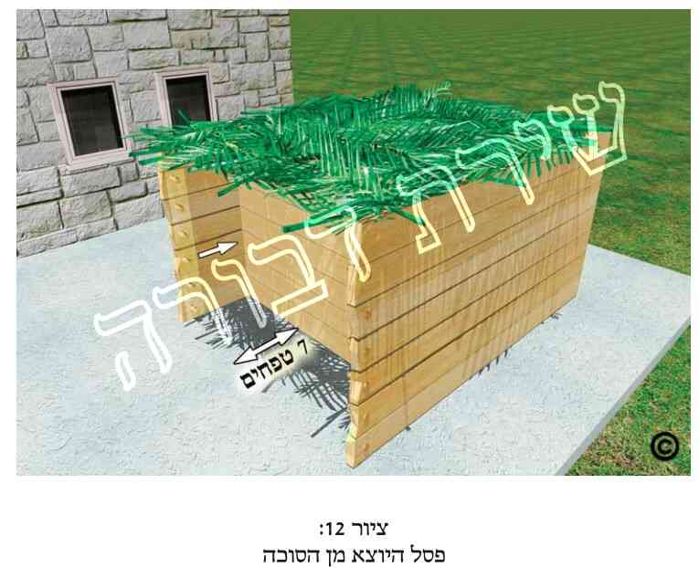 .
ובאשר לדופן האמצעית המשותפת לב' הסוכות, כתבו האחרו' שאף אם היא נעשית ע"י לבוד, ג"כ מהני לב' הסוכות [מחה"ש בביאור המ"א. מ"ב (ססקי"ד). כה"ח (ססקכ"ה) ועוד הרבה אחרו'].
יש להעיר, שלא ברור הדבר דבני"ד מישתעי דוקא שהסוכה החיצונית יש בה שלוש דפנות. כיון שלפי"ד רש"י בסוכה (די"ט,א' ד"ה "לבראי") החידוש בדין פסל הוא משום שלא עשה הדפנות לשם הסוכה החיצונה. ולפי"ז ני"ד מישתעי אף בארבע דפנות בסוכה החיצונה. וע"ע תוס' שם (ד"ה "לבראי").
[88] פח. גמ' ושו"ע שם.
ומה שכתבנו שבסוכה האחורית (החדשה) הסכך מסכך כראוי, היינו שגם צילתה מרובה מחמתה (גמ' ושו"ע שם). ולכאו' פשוט שצריך שהפסל יסכך גם שטח הכשר לסוכה, והיינו זע"ז טפחים עם דפנות כראוי.
[89] פט. גמ' ושו"ע שם. וקמ"ל, דאע"ג שהדופן האמצעית לא נעשתה בשביל הסוכה האחורית אלא בשביל עיקר הסוכה שהוא לפנים ממנו, אפ"ה כשרה [מרן (סי' תרל"א שם)].
והסבירו האחרו', דהיינו שהדופן האמצעית הרי הכניסה לפנים משתי המחיצות, ונראה לכל שהוא לצורך הסוכה הפנימית שדי לו בכך, אפ"ה כשרה גם החיצונה, דמ"מ גם הקנים היוצאים נעשו לשם צל, והדפנות א"צ לשמה [כה"ח (סקכ"ד). וע"ע הסבר גם במ"ב (סקי"ד כולו) ושעה"צ (סק"ט-י"א)].
והטעם שמקילים בני"ד, כיון שהמחיצה האמצעית הינה מחיצה שלימה. וה"ה ע"י לבוד, וכנ"ל (בהערה פ"ז).
אף שהסוכה האחורית כשרה מדין פסל היוצא, מ"מ אין שתי הסוכות נחשבות כסוכה א'. ולכן אם בב' הסוכות יש סכך פסול ד"ט, ב"ט בזו וב"ט בזו, ומחוברים יחדיו, אין הם מצטרפים לדין ד"ט של סכך פסול [שו"ת אמרי יושר. הב"ד בסה"ס (מיל' לפ"ט סקנ"ט)].
[90] צ. בס"ד נביא פה עוד כמה מיקרים פרטיים גבי פסל היוצא מן הסוכה.
1) בדין פסל (כבמקרה שבסעיף כ"ז בפרקנו) האם חובה שא' הדפנות תהיה ארוכה יותר ונמשכת עם הפסל היוצא או שכ"ה אף כששתי הדפנות המקבילות שוות והסכך בולט יותר מהן (כך שבאף אחד מצידי הסכך אין דופן). ראה הדין לעיל (בהערה פ"ו). ושכ"פ הק"נ, והפמ"ג, הלבו"ש והחזו"א. וזה שלא כביכור"י, וכשיטתו בספרו ערול"נ.
2) בדין פסל (כבסעי' כ"ז), כאשר במקום שנגמרת הדופן הקצרה יש צוה"פ מקבילה לדופן האמצעית (ומאונכת לשתי הדפנות המקבילות), נחלקו הפוס' אי הפסל היוצא מעבר לצוה"פ דינו כפסל ושרי לישב תחתיו, או שצוה"פ מבטלת את דין הפסל ומפסיקה את הסכך, ומה שמעבר לצוה"פ אין לישב תחתיו [שהמאירי בסוכה (די"ט, א') מחמיר וס"ל דצוה"פ מבטלת דין הפסל, ובס' ראשון לציון כ' דצוה"פ אינה מבטלת דין הפסל. הב"ד בסה"ס (מיל' לפ"ז סקט"ו) ובפסתש"ו (סי' תר"ל הערה 26)].
3) כנ"ל אך אין רק צוה"פ אלא דלת ממש (המאונכת לדופן הקצרה). כאשר הדלת סגורה כ' בפסתש"ו (שם) שלכו"ע הפסל היוצא מהסוכה אין דינו כסכך כשר. ואילו כשהדלת פתוחה נראה שלד' רוה"פ אין זה נחשב כדלת המפסיקה, ורק דין צוה"פ עליה, ואז דינה כנ"ל [עפ"י פסתש"ו (סי' תר"ל הערות 26, 24, 18 וסי' תרל"א הערה 9)]. ויש לדון האם מותר לפתוח דלת זו בשבת וביו"ט, שהרי כשפותח הדלת יוצא שסותר הוא את הכשר הסכך שבפסל שמחוץ לדלת מלשמש כסוכה (ור' כעין זאת לעיל בפ"ג סעי' מ"ד). ואף גבי פתיחת דלת זו בחוה"מ יש לדון מצד תולמ"ה, שיוצא שבסגירת הדלת הריהו סותר את חלק הפסל מלשמש כסוכה, ואח"כ כשפותח הדלת הריהו כאילו בונה סוכה שכבר הסכך שלה קיים וקדם לדפנות, וכנ"ל (בפרק ג' סעי' מ"ג ומ"ה).
4) כאשר במקרה שבסעיף כ"ז, הדופן הארוכה הינה דופן ממשית באורך הדופן הקצרה, והמשך הדופן הארוכה הינה למעשה דלת, שבפתיחתה נעשית דופן ארוכה בצד הפסל, הסתפק הגרצ"פ פראנק זצ"ל במקראי קודש (סוכות ח"א סס"י ז') האם כאשר דלת זו פתוחה ונוצרת עי"כ דופן ארוכה, האם מותר לישב לאכול תחת הפסל הזה כשהדלת פתוחה, כיון שבסגירת הדלת מתבטלת אריכות הדופן, וכשפותחה שוב הוי בכלל תולמ"ה (לשיטת המחמירים בכך. ובפרט שבני"ד הוי בדיעבד – מ.ה). הב"ד סה"ס (מיל' לפ"ט סקנ"ח) ופסתש"ו (סי' תרל"א הערה 9).
5) כשאין הכשר סוכה (מבחינת השטח) ללא הפסל, אין אומרים בזה שפסל היוצא מהסוכה נידון כסוכה [רש"י סוכה (ד"ד, א' ד"ה "ומן הצד"). תוס' שם (די"ז, א' ד"ה "אויר"). הב"ד בסה"ס (מיל' לפ"ט סקנ"ז). וע"ע ערול"נ (סוכה די"ח, א')].
6) במקרה הנזכר בסעיף כ"ז, אם ברוחב הסכך היוצא חוץ לסוכה אין ז"ט, כתב החזו"א (או"ח סי' קמ"ד ס"ק א', ו') שאפ"ה כשר לישב תחתיו [הב"ד סה"ס (פ"ט הערה 120) ופסתש"ו (סי' תרל"א הערה 10)].
7) אם הפסל אינו מונח סמוך לדופן הנמשכת אלא מרוחק ממנה ג"ט או יותר, כתב החזו"א (שם) שאפ"ה דין פסל עליו, הואיל ויש דופן נמשכת לאורכו [סה"ס (שם. וע"ע במיל' לפ"ט סק"ס אות ב'). פסתש"ו (שם הערה 11). ואיני יודע אם זה לכו"ע].
8) עוד מדיני פסל ר' בסה"ס (בפ"ט הערה 120 בסופה בשם החזו"א, במיל' לפ"ט ס"ק ס', ס"א, ס"ב), ובפסתש"ו (סי' תרל"א ססק"ד).
[91] צא. עיקר ד"ז נזכר בגמ' סוכה (דכ"ב, א'), בפרוש רבא למשנה דסכך מדובלל.
ובענין מה שכתבנו שהוא הלל"מ בדיני מחיצות, ר' בפיהמ"ש לרמב"ם לאהלות (פי"ב מ"ה), בפנ"י לסוכה (דכ"ב, א' ד"ה "אמר רבא") עפ"י רש"י (שם ד"ה "שאין בגגה"), בערוה"ש (סי' תרל"א ס"ז), ובאנ"ת (כרך י"ב עמ' תנ"ב ערך "חבוט רמי" הערה 4).
ואת פרוש חבוט רמי כתבנו עפ"י רש"י סוכה (דכ"ב, א' ד"ה "שאין בגגו"), שפירש "השפל והשלך אותו על האויר שתחתיו".
ובענין הנ"מ בין דין חב"ר לבין גוד אחית, כ' רש"י (שם) שלענין מחיצה דהוי חודה של מחיצה, שייך למימר גוד אחית, משוך אותה והורד. ולענין (דבר) המוטל לרוחב ובא לסתום אויר שייך למימר חבטא. עכ"ל. והיינו שתלוי הדבר אם מוריד למטה דבר חד, כחוד המחיצה שהיא במצב מאונך לקרקע, דבזה שייך גוד אחית, או שמוריד למטה קורה שהיא מקבילה לקרקע ומאונכת יחסית לקרקע, שהורדתה לארץ נחשבת כחבטה בקרקע, ובזה אמרינן חבוט רמי. ור' בפיהמ"ש לרמב"ם באהלות (שם) שקרא גוד אחית למה שקראו בגמ' סוכה שם חבוט רמי.
להיתר חב"ר אנו זקוקים כשהדבר – הקורה או הקנה – גבוה ג"ט או יותר מהדבר שתחתיו. אך אם גבוה פחות מג"ט א"צ לדין חב"ר, שהריהו כמושכב עליו מדין לבוד [רש"י סוכה (שם ד"ה "אמרינן חבוט רמי"). וכ"כ במלאכת שלמה לאהלות (שם). ור' ר"ח בסוכה (דכ"ב, א') שקורא גם לחבוט רמי, לבוד. הב"ד באנ"ת (שם)].
[92] צב. עיקר ד"ז במשנה סוכה (דכ"ב, א') גבי סוכה המדובללת. וכ"פ מרן (סי' תרל"א ס"ה). הנה בד"ז ישנן כמה מחלוקות ראשו' כיצד לפרש דברי רבא בגמ' שם.
ונתחיל בס"ד בדברי הגמ'. אמרו בגמ' סוכה (שם), שסוכה שקני הסכך שלה אינם סמוכים זל"ז, אלא קנה א' למעלה וקנה שני למטה, קנה שלישי למעלה ורביעי שוב למטה, וחוזר חלילה. הקנים שלמעלה גבוהים ג"ט או יותר מאלה שלמטה, כך שאין בהם דין לבוד. נחלקו בזה אביי ורבא. לאביי כיון שאין בזה דין לבוד הרי שהסוכה פסולה, כי אין הקנים העליונים מצטרפים לתחתונים, ואילו בקנים התחתונים יש אויר שמפסיק בין קנה לקנה. ורבא אמר שאם יש בגג, היינו בכל קנה מהקנים העליונים, רוחב טפח, הרי שהסוכה כשרה, דאמרינן חבוט רמי, וכאילו הקנים העליונים יורדים למטה וממלאים את החללים שבין הקנים התחתונים. אבל אם אין בכל קנה מהעליונים רוחב טפח אין לו שם אוהל להחשיבו ולומר חבוט רמי [הסבר הגמ' בסוכה (שם) עפ"י רש"י, ריטב"א ומאירי שם. אנ"ת (שם)]. ונפסקה הלכה כרבא [רמב"ם (פ"ה מסוכה הכ"א). מרן ורמ"א (סי' תרל"א ס"ז), וכדלקמן].
ונחלקו הראשו' כמה מחלוקות בדבר:
מחלוקת ראשונה היא לגבי האוירים (היינו החללים) שבין הקנים התחתונים, האם צריך שיהא בהם רוחב טפח:
י"א שבין אם באויר שבין הקנים התחתונים יש רוחב טפח, ובין אם יש בו פחות מטפח, כל שיש בקנה שלמעלה רוחב טפח, די בכך לומר חבוט רמי [רש"י סוכה (דכ"ב, א' ד"ה "ותני", שאינו גורס "ואין בהם טפח") וכ"נ גם דעת תוס' בסוכה (שם) והר"ש (באהלות פי"ב מ"ה). וע"ע בריטב"א (הנדפס בספרי הרשב"א), שם. הב"ד באנ"ת (כרך י"ב, ערך חבוט רמי, הערה 9)].
דעה שניה סוברת, שגם האוירים שבין הקנים התחתונים צריכים להיות כ"א ברוחב טפח, כדי שאילו הקנה שלמעלה היה יורד למטה, היה יכול להכנס ולהקבע ביניהם לסתום האויר. אך אם אין באויר טפח, אין אומרים חבוט רמי אף אם יש טפח ברוחב הקנים העליונים, והיינו שהעיקר שיהיה טפח באויר שבין הקנים התחתונים. ומאידך, לדעה זו, כל שבין הקנים התחתונים יש אוירים ברוחב טפח, די בכך אף אם רוחב כל קנה מהעליונים הינו יותר מטפח, כיון שהוא סותם את כל האויר שבין הקנים התחתונים [הרישא עפ"י הריטב"א והר"ן בסוכה (שם). ור' רמב"ם בפיהמ"ש באהלות (שם) שכתב כן גבי גוד אחית. וכ"כ בב"י (סי' תרל"א), וכ"פ הרמ"א (סי' תרל"א ס"ה). והסיפא עפ"י הריטב"א, ושכ"ד מורו ז"ל. אנ"ת (שם הערות 10,11). וע"ע בבה"ל (סי' תרל"א ס"ה ד"ה "טפח")].
ודעה שלישית סוברת שאף אם יש בין הקנים התחתונים אויר טפח, כל שבקנים העליונים יש בכ"א יותר מטפח, אין אומרים בהם חבוט רמי, אלא רוחב האויר למטה צ"ל לפחות או בדיוק (ר' לקמן בסמוך מחלו' ע"כ) כרוחב הקנה שלמעלה כדי שיוכל להכנס ביניהם [ריטב"א (שם) בשם איכא מרבנן. וכ"כ כמה פוס' שכ"ד הרמב"ם, מהם הכס"מ ברמב"ם בסוכה (פ"ה הכ"א), ובה"ל (סי' תרל"א שם בריש הדיבור). אמנם באנ"ת (שם הערה 12) כ' בשם הסדרי טהרות מרוז'ין (באהלות, קס"ד א') שד' הרמב"ם כרש"י]. וכ"נ ד' מרן בשו"ע (בה"ל שם בתחילתו).
מחלו' נוספת בראשו' הינה כשהאויר למטה רחב יותר מהקנה שלמעלה. כגון שרוחב הקנה העליון הינו טפח, ובאויר שבין התחתונים יש יותר מטפח. י"א שצריך שהקנה העליון יוכל להכנס בצמצום בין הקנים התחתונים [כס"מ בסוכה (שם) בד' הרמב"ם. ממש"כ בכס"מ "ואפשר שרבינו בא למעט" וכו'. ור' מה שהעירו שם במהדו' פרנקל ע"ד המעשה רוקח. וכ"כ במרכבת המשנה על הרמב"ם שם. ר' באנ"ת (שם הערות 13-14) בשם עוד פוס']. וי"א שהעיקר שלא תהיה הקורה העליונה (לכשיורידוה למטה. מדין חבוט רמי) מונחת גבי התחתונות. אך כל שהעליונה נכנסת לתוך האויר שבין התחתונות, אעפ"י שתהיה רחוקה מעט מן התחתונות, כל שהיא רחוקה פחות מג"ט הריהי כלבוד ואמרינן חבוט רמי [לח"מ בדעת הרמב"ם (שם). ור' באנ"ת (שם הערות 13,14)].
עוד נחלקו הראשו' גבי סוכה שכעת חמתה מרובה מצילתה, האם חבוט רמי מועיל לעשותה כאילו צילתה מרובה מחמתה. ר' אנ"ת (שם, הערות 15-17). ואכמ"ל.
ועתה נביא בס"ד את דברי מרן והרמ"א.
כתב מרן שם: היה הסיכוך מדובלל (פי' מבולבל), והוא הסיכוך שיהיה מקצתו למעלה ומקצתו למטה, כשר, ובלבד שלא יהיה בין העולה והיורד ג"ט [דכל פחות משלושה כחדא חשיב (מ"ב סק"ז)]. ואם היה ברוחב זה העולה טפח או יותר [ר"ל בכל קנה וקנה מן הסכך היה רוחבו טפח, דאז חשיבי לומר בהן רואין וכו' (מ"ב סק"ח)], אע"פ שהוא גבוה מג' טפחים, רואין אותו כאילו ירד למטה ונגע בשפת זה היורד [ר"ל שבסכך התחתון יש ג"כ חלל בין קנה לקנה ורואין כאילו חלל של סכך התחתון נגע בשפת זה היורד ונסתם חללו והוו כחדא (מ"ב סק"ט)], והוא שיהיה מכוון כנגד שפת היורד [ר"ל החלל שבתחתון יהיה מכוון נגד רוחב הקנה העליון, שיהיה ראוי להוריד העליון בנתיים, כמו שביאר הרמ"א, ולאפוקי אם היה קצר בשיעורו מן הקנה העליון (מ"ב סק"י)].
על דברי מרן [שכתב: והוא שיהיה (הקנה העליון) מכוון כנגד שפת היורד], כתב הרמ"א שם: דהיינו שיש באויר שבין התחתון טפח, שראוי להוריד העליון, ואז כשרה [וכ"ש אם אין בין קנה עולה לקנה יורד ג' טפחים, בודאי מהני אפי' חמתה מרובה מצילתה (מ"ב סקי"א)]. והוסיף הרמ"א: אפילו חמתה מרובה, רק שיהא הצל מרובה כשהחמה באמצע הרקיע [עפ"י גירסת הבה"ל בשם הבגדי ישע. וכתב במ"ב (סקי"ב): ר"ל אע"פ שחמתה מרובה מצילתה כשהחמה בשאר המקומות, ומאיר אורה דרך אלכסון בין קנה לקנה, מ"מ כשצילתה מרובה מחמתה כשהחמה באמצע הרקיע ועומדת בראש כל אדם, שפיר דמי]. וע"ע בענינים אלה בכה"ח (סי' תרל"א ס"ק י"ד – כ"ב).
נמצאנו למדים בס"ד שלד' מרן האויר שבין הקנים התחתונים צ"ל בדיוק כמו רוחב הקנה העליון, וי"א לפחות כמו רוחבו (ר' בכס"מ שם. וע"ע בהערות שבמהדו' פרנקל, אם דברי מרן בריש דבריו בכס"מ מתאימים לדבריו בב"י). ואילו לרמ"א די בטפח למטה, ואז אף אם הקנה העליון יותר מטפח, הסוכה כשרה (וזאת שלא כשיטת רש"י ותוס' שדי שרוחב כל קנה מהקנים העליונים רוחבו לפחות טפח). וראה עוד בהערה הבאה.
את שיעור ג"ט כתבנו עפ"י מידות הגרא"ח נאה זצ"ל, כמש"כ בס"ד לקמן בקונטרס מידות האורך, בנספחים (נספח י"ז בענפים 9,11). אמנם את מידות החזו"א זצ"ל לא הזכרנו הכא משום שהם מביאים לידי קולא בדאו', שיוצא שעד 29 ס"מ שהם לשיטתו ג"ט, עד אז א"צ כלל לדין חבוט רמי, והסוכה כשרה. אך יתכן שבאמת אז כבר כן צריך לכל תנאי חבוט רמי.
[93] צג. ראשית יש להזכיר שלדעת מרן רוחב האויר שבין הקנים התחתונים צ"ל בדיוק (או לפחות, וכנ"ל בהערה הקודמת) כרוחב כל קנה שבקנים העליונים, שאנו רואים אותו כאילו הוא יורד למטה ומכוון ממש לסתום הפרצה במפלס התחתון. ואילו לרמ"א די באויר טפח למטה, ואז אף אם הקנה העליון יותר מטפח הסוכה כשרה, וכנ"ל בהערה הקודמת.
לגבי מה שכתבנו שמישתעינן בקורות, קנים או ענפים שהינם למעלה, והינם יורדים לאוירים שבין הקורות, הקנים או הענפים שלמטה. ולכאו' צ"ב אי מישתעינן דוקא בקורה עליונה אחת שנכנסת בין ב' קורות בודדות תחתונות, וכן הלאה, או שמדובר אפי' בחלקי סכך רחבים מלמעלה וכנ"ל למטה. הנה מדברי המהר"ם מלובלין על התוס' בסוכה (ד"י, א' ד"ה "אמר רב הונא") לכאו' משמע דהו"ד בקורות או קנים בודדים. אלא שלאחר העיון נראה בס"ד שלא בא לאפוקי אלא רק מסכך שלם, שלכך פסלינן סוכה תחת סוכה, אך קנה בודד לאו דוקא. גם מדברי הרמב"ם (פ"ה הכ"א) והשו"ע (סי' תרל"א ס"ה) נראה שעסקינן לאו דוקא בקנה או בקורה בודדת, אלא אף חלק מהסכך (כגון כמה קורות) למעלה, וכנגדו אויר למטה, שמצד א' כמה קורות ומצד שני כמה קורות. וע"ע בחידושים וביאורים (סוכה, סי' ד' אות י') שדן גבי סוכה גדולה שיש לה שני חלקי סכך ובכ"א יש זע"ז טפחים, אך לכל חלק בפנ"ע אין ג' דפנות בהכשר, ד"אפשר" דמצטרפין יחד שני חלקי הסכך להיות סוכה א'. ע"כ. הב"ד בסה"ס (מיל' לפ"ט סק"כ). ולא זכיתי להבין את ספקו. דלכאו' פשוט שיש בכך דין חבו"ר. ור' מש"כ ע"כ בפסתש"ו (סי' תרל"א סק"ג ובהערה 7). וכן מצינו הרי דין צירוף דוע"ק וחבוט רמי [כגון מרפסת הנמצאת מעל סוכה, דאמרינן גבי המרפסת דוע"ק, וגבי הא שהמרפסת גבוהה מהסכך, שבזה יש דין חבו"ר]. וא"כ דין חבו"ר שייך גם גבי כמה ענפי סכך. כך בס"ד נלע"ד.
[94] צד. נביא בס"ד עוד כמה הלכות גבי ני"ד:
1) כתב החזו"א (אהלות סי' י"ד סקי"א), שאם נתן טס זקוף בין סכך לסכך שפיר דמי, דתו הוה ליה כאין ביניהם ג' טפחים. הב"ד בסה"ס (מיל' לפ"ט סקי"ט).
2) כאשר יש אויר באמצע סכך והסכך (וממילא גם האויר) משופע. מצד ההפלגה בסכך, הרי שיש בו ג"ט אויר והוי פסול. אך מאידך הרי כתבו הפוס' [מ"א. מ"ב (סי' תרל"ב סק"ה)] גבי סכך פסול, דמשערינן כמה הוא תופס במישור. והשאלה האם ה"ה גבי אויר (שמחשבים כמה רוחבו באופן מאוזן, או באופן משופע). ור' בסה"ס (מיל' לפ"ט סקכ"א) שדייק ממש"כ המ"א דחבוט ולבוד להחמיר לא אמרינן, דמשמע דלהקל אמרינן. וא"כ נימא חבוט על הסכך וממילא נחשב שהוא שוכב למטה ואז גם האויר פחות מג"ט ואמרינן לבוד, וכשרה, עיי"ש. והיינו ס"ל להקל לצרף לבוד לחבוט רמי. ועוד בענין צירוף של חבו"ר ולבוד ר' במרכבת המשנה (פ"ה הכ"א), במ"ב (סי' תרל"ב סק"ה) ושעה"צ (סק"י), בסה"ס (שם סקכ"ב) בשם החזו"א (אהלות סי' י"ג סק"ג) ומנחי"צ (ח"ו סי'ס').
3) בענין צירוף דופן עקומה עם חבוט רמי. כגון בסוכה שא' מג' דפנותיה היא קיר הבית, אך גג או מרפסת של שכן בולטת מקיר הבית לתוך הסוכה (היינו דין דוע"ק), וגג או מרפסת זו הינם גבוהים מהסכך (כך שצריך גם דין חבוט רמי). כבר כתבנו ע"כ בס"ד לעיל בדיני דוע"ק. ור' ע"כ בסה"ס (מיל' לפ"ז סקכ"ז) מש"כ בשם שו"ת פנים מאירות (ח"א סי' ס"א), ובשם השד"ח (אס"ד, מע' סוכה סי' ב' סקט"ז) בשם ס' יקהיל משה בשם הרב בני דוד. ולמעשה נראה שיש מקלים בכך אף כשתחת לגג יש חלל אויר בסוכה, דאמרינן חב"ר ודוע"ק, ויש המפקפקים בכך ומתירים רק אם יש סכך עד קיר הבית, אך לדעתם לא אמרינן דוע"ק אא"כ הסכך הפסול והסכך הכשר הינם באותו גובה. עיי"ש. וע"ע בפסתש"ו (סי' תרל"ב סק"ד ובהערות 22,23) מה שהעיר על דבריהם.
[95] צה. בית גופיה ודאי אין לישב בו במקום בסוכה, אע"ג שהבית מקורה בנסרים, דסוכה אמר רחמנא ולא ביתו של כל ימות השנה [רש"י סוכה (די"ד, א' ד"ה "רבי מאיר"). מ"ב (סי' תרכ"ו סק"א). כה"ח (שם סק"א) וש"פ].
ומה שכתבנו שהטעם הוא משום שהתורה אמרה שבחג הסוכות יש לשבת בסוכה ולא בביתו של כל השנה, ג"ז עפ"י הנ"ל. וכ"נ מדברי רבינו חננאל בסוכה שם.
[96] צו. כ"מ מרש"י (שם) ומהפוס' הנ"ל, דהרי מישתעינן בסכך כשר, דאל"כ מקמ"ל. וכ"כ הטור (סי' תרכ"ט), הלבוש, הט"ז (סי' תרכ"ט סקי"ח), הגר"ז, המ"ב (סי' תרכ"ט סקמ"ה), כה"ח (סקצ"ג) וש"פ. וכתבו כן גבי נסר ד"ט, ומ"מ שייך ד"ז גם גבי שאר סכך כשר, הן מצד החומר והן מצד רוחבו.
אמנם ישנם מקרים שקורות הבית כשרים לשמש כסכך, אם הינם עשויים מחומר הכשר לסיכוך ובתנאים מסוימים, כגון המיקרים הנזכרים לקמן (בסעיף ל"ד).
[97] צז. תנן במשנה סוכה (ד"ט, ב'): העושה סוכתו תחת האילן כאילו עשאה בתוך הבית. ע"כ. ופרש"י שם: ופסולה, כדתניא בברייתא בגמ'. עכ"ל. ואכן אמרו בגמ' שם: ת"ר: "בסוכות תשבו", ולא בסוכה שתחת הסוכה, ולא בסוכה שתחת האילן, ולא בסוכה שבתוך הבית. עכ"ל. וכ"פ הטור, הרמ"א (סי' תרכ"ו רסע"י א'), הלבוש, הט"ז (סי' תרכ"ו סק"א), המ"ב (סק"א), כה"ח (סק"א) וש"פ, שאין לעשות סוכה תחת בית. והוסיפו דבעינן שהסוכה תהיה תחת אויר השמים.
[98] צח.ענף 1: המותר לחבר את הסכך לסוכה במסמרים - הצדדים לאיסור:
לפני שנתחיל לדון בני"ד עלינו להבהיר שכבר דננו על הנידונים שבהערה זו לעיל בפרק ד' (בסעיף מ"ב). אלא שיש הבדל מהותי בין שני הדיונים. בפרק ד' דננו גבי חיבור הסכך ע"י מסמרים, דבק, אזיקונים וכדו', מצד איסור מעמיד. ולגבי איסור מעמיד ישנים כללים מסוימים מתי חל איסור זה, כמבואר בפרק הנ"ל. ועוד, שפוס' רבים אינם סוברים כלל שיש איסור מעמיד גבי הל' סוכה. לכן שם כתבנו את ההלכות רק לגבי המחמירים באיסור מעמיד בסכך, ורק עפ"י כללי איסור מעמיד. ואילו בפרקנו אנו דנים לגבי חיבור הסכך ע"י מסמרים, דבק, אזיקונים וכדו' רק מצד חיבור חשוב שהופך את הסוכה לדירת קבע בשל חיבור הסכך לעצמו (כחיבור גיזרי עץ לדפנות ע"י מסמרים). ולגבי דיון זה הדבר מוסכם על הפוס' שחיבור כזה פוסל את הסוכה מדין דירת קבע, אך יש לדון האם אכן זה נחשב כחיבור ההופך את הסוכה לדירת קבע.
ברור הדבר שאם אנו אוסרים את חיבור הסכך ע"י מסמרים, דבק וכדו', הרי שזה אסור גם למקילים בדין מעמיד (שבפרק ד'). אך אם נאסור זאת שם מצד מעמיד, הרי שאין הדבר אסור למקילים בדין מעמיד. ועתה בס"ד נתחיל לדון בני"ד.
בענין קורות עץ המשמשות כסכך, המותר לחברן אל דפנות הסוכה על ידי מסמרים וכדומה. בענין זה יש לדון משלושה צדדים:
1) תקרת בית העשויה מקורות עץ המחוברים במסמרים אל דפנות הבית, שכתבו הפוס' שאם מסיר המסמרים לשם עשיית סוכה (ומנענע הקורות לשם סוכה) ה"ז סוכה כשרה (עפ"י מרן סי' תרל"א ס"ט), והיינו שהסרת המסמרים הופכת את המקום שהיה דינו כדירת קבע, למקום שדינו כדירת ארעי. וע"כ כתוב בס"ד לקמן בפרקנו (בהערה צ"ט). עיי"ש שאכן הוצאת המסמרים ונענוע הקורות מהני להכשיר המקום לסוכה כדין דירת ארעי.
2) עוד דנו הפוס' לגבי סכך שהוא כשלעצמו כשר, אלא שהוא מחובר לדפנות הסוכה וכדו' ע"י מסמרים. ודנו הפוס' האם חיבור הסכך ע"י מסמרים פוסלה מדין מעמיד המקבל טומאה. ור' ע"כ לעיל (בפרק ד' סעי' מ"ב ובהערה ק"י שם) שהסקנו בס"ד שד' רוה"פ שאיסור מעמיד לא שייך במסמרים, ולכן מצד מעמיד מותר להעמיד בהם הסכך, ולחברו לסוכה עצמה (כדי שלא יעוף וכדו').
3) ענין שלישי (שהוא קשור לענין הראשון) גבי מסמרים הוא, שדנו הפוס' על עצם חיבור הסכך אל הסוכה ע"י מסמרים. האם חיבור זה מוציא את הסוכה מדין דירת ארעי והופכה לדירת קבע, כי הסכך שהוא גג הסוכה מחובר באופן קבוע לדפנותיה ולקורות המחזיקים הסכך, ועי"כ פוסל הסוכה (והנ"מ בין המקרה הראשון לכאן. דהתם מדובר שתקע את קורות התקרה של הבית, ואילו בני"ד הרי תוקע רק סכך של סוכה. ולכן אע"ג דהתם מחמירים ואומרים שהמסמרים הופכים את קורות הבית לדירת קבע, מ"מ בני"ד כיוון שזו רק סוכה יתכן להתיר לתקוע המסמרים לכתחילה). ועל כן נדון בס"ד כאן.
ענף 2: חיבור הסכך לסוכה במסמרים - מחלוקת הפוסקים מצד דירת קבע:
הנה בד"ז ישנה מחלו' בפוס', וכמו שכתבנו בס"ד לעיל (בפ"ד ריש הערה ק"י). שלד' התוס' (סוכה ד"ב, א' ד"ה "כי עביד") והר"ן אסור לחבר את הסכך לסוכה ע"י מסמרים מצד דירת קבע, והפסול הינו פסול מדאו' [הב"ד בשעה"צ (סי' תרל"ג סק"ו). אך עיי"ש בתוס' שאמנם כתבו שפסול מדאו', אך דיברו כשמדובר במסמרים ועי"כ לא עובר הגשם. ור' ע"כ לקמן בסמוך]. וי"א דהוא מותר לכתחי' [תה"ד (סי' פ"ט). הב"ד הב"י (סס"י תרכ"ו, ובסי' תרכ"ט ד"ה "וכתב עוד תה"ד"), וסה"ס (מיל' לפ"ט סקפ"א). ויש לציין דהב"י לא השיג כלל ע"ד תה"ד].
וכיון שיש מהראשו' שאסרו זאת, ואף כתבו שאיסורו מדאו'. וכן בשל כך שמפשט דברי מרן בסי' תרל"א (סעי' ט') נראה שחיבור הסכך במסמרים נחשב כפסול מצד דירת קבע (אע"פ שבב"י בסי' תרכ"ו ותרכ"ט הב"ד תה"ד. אף שיש לחלק בין המיקרים, שבסי' תרל"א מדובר על בית שתקרתו מחוברת במסמרים, ולכן החמיר שם), הרי שבס"ד היה נראה לי תחילה שיש להחמיר בזה, אך לא מצד איסור מעמיד (שבזה ממילא אין הדבר ברור לאיסור כלל, וכנ"ל בפרק ד' סעי' ל"ה, שהסקנו בס"ד שלספרדים מעיקר הדין אין כלל איסור מעמיד. ולאשכנזים רק "נכון לכתחי' להזהר" בזה), אלא האיסור בני"ד היא מצד איסור דירת קבע. וכ"פ בפשטות מרן הח"ח בשעה"צ (סי' תרל"ג סק"ו). עיי"ש.
ואמנם אחר שכתבנו זאת ראינו את דברי הגר"ע יוסף שליט"א בחזו"ע (סוכות, דיני הסכך. הערה ט"ז דל"ו) שהביא מדעות האוסרים בני"ד, מהם שו"ת מהרי"ל החדשות (סס"ו ס"ו), המ"א ושעה"צ הנ"ל, ומאידך בחזו"ע כ' גם את ד' המתירים, מהם שו"ת תה"ד הנ"ל, ודייק מדברי הראבי"ה והאו"ז שהביאו דעת ר"ת שפסל את סוכת גיסו שסיכך סוכתו כעין כיפה המצלת מפני הגשמים, והיינו לא מפני שהקורות היו מחוברות במסמרים. ושכן דייק כבר בחמ"מ. והוסיף בחזו"ע, דאפשר שמה שאסר המ"א אינו אלא לכתחי'. ושאף הג' נה"ש התיר לכתחי' לקבוע הסכך במסמרים, וכן מד' הגר"ש קלוגר זצ"ל בשו"ת האלף לך שלמה (סי' שס"ו) מתבאר להיתר אם עכ"פ הגשמים כן יכולים לחדור לסוכה. עיי"ש בחזו"ע באורך. וא"כ רבו הפוס' שמתירים זאת לכתחי', מהם כמה ראשו'. ואף דעת האוסרים אינה ברורה דיה שפסלו הסוכה מדאו' בשל המסמרים אף כאשר הגשם יכול לחדור לסוכה. שהרי תה"ד כתב בהדיא להתיר. ומרן בב"י הב"ד בשני מקומות (סי' תרכ"ו ותרכ"ט) ולא העיר דבר לדחותם, ומשמע שמסכים עמו. ומה שיש מהפוס' שכתבו לאסור בשם התוס', הרי שאם הכונה לתוס' בריש סוכה (ד"ב, א' ד"ה "כי עביד") אין הכרח בזה, משום שהתוס' אמנם פסלו מדאו' כשהסכך מחובר ע"י מסמרים, אך הם דיברו כשהסכך מעובה כל כך באופן שאין הגשם יכול לחדור דרכו, ולכן דינו כדירת קבע. דהמעיין שם יחזו פנימו שאין שום הכרח לומר שד' התוס' לפסול מדאו' אף אם הגשם יכול לחדור. ואכן כ"כ בחזו"ע (שם) בשם הראבי"ה והאו"ז [וא"כ לכאו' נפלו דברי שעה"צ (בסי' תרל"ג סק"ו) שכ' לאסור מדאו' בשם התוס' (וכנראה זה התוס' הנ"ל. וכ"כ בספרי המ"ב הוצ' "עוז והדר" ע"ד שעה"צ הנ"ל). אמנם מש"כ בשעה"צ שם שכן גם דעת הר"ן, לא ידענא היכן כתב זאת הר"ן].
ואף בדברי הגרש"ק הנ"ל בהאלף לך שלמה מתבאר שאם הגשם יכול לחדור לסוכה, אין איסור בחיבור הסכך במסמרים, ואפי' לא איסור דרבנן (כי הסביר את ד' התוס' שאסור מדאו' רק כשמתקיימים ב' התנאים: חיבור במסמרים, ומניעת חדירת הגשם לסוכה. אך לדעתו ג"ז כשר לגמרי). וכ"כ מדנפשיה בסה"ס (מיל' לפ"ט סקפ"א. וזכה הגאון המחבר שליט"א לכוון לדעת הפוס' הנ"ל. ואני הקטן יכול לומר לשבחו, שלענ"ד כמעט תמיד הוא מכוון להלכה). גם מה שכתב בחזו"ע שד' המהרי"ל לאסור בני"ד, לא ברירא לי טובא. משום שהמעיין בשו"ת המהרי"ל שם יראה שאין הכרח לפרש את דבריו שעצם חיבור הסכך ע"י מסמרים הוי פסול דאו'. דתלוי כיצד מפסקים את הפיסוק. וכן הסתפק בכך הרה"ג יצחק סץ, המהדיר של הספר. ועוי"ל, שגם המהרי"ל בסו"ד שם ציין שלדעתו יש פרוש אחר לגמ' שם. ועוד שאף מה שתלו בדעת המ"א שאוסר בני"ד, זאת עפ"י דבריו בסי' תרכ"ז (סק"ב) בשם האגודה בפרושו את התוס'. אך יש להעיר, שמאידך מדברי המ"א בסי' תרכ"ו (סק"ו) מתבאר שהאיסור הו"ד כשמחבר הקורות זל"ז קודם שהניחם ע"ג הסוכה, הלא"ה שרי. ואמנם דיבר שם מצד גזירת תקרה, אך מ"מ מתבאר מדבריו דשרי לחבר הקורות שהינן פחות מד"ט אל דופן הסוכה, אף כשעושה כן ע"י מסמרים.
עוד יש להוסיף בני"ד, שנראה שיש להקל גם עפי"ד מחה"ש (סי' תר"מ סק"ט) עפי"ד הגמ"י (פ"ה מסוכה ה"ט) שהביא את המעשה עם הר"ש, גיסו של ר"ת, שבנה סוכתו ככיפה ע"י חיבור הנסרים במסמרים באופן שהגנו מן הגשמים. וכ' במחה"ש דאע"ג שר"ת פסל סוכה זו, מ"מ הרי הר"ש הכשירה כשמחוברת במסמרים. וגם ר"ת שפסלה, לא מפני המסמרים (פסלה), אלא מפני שמגן מפני הגשמים. עכ"ד. ונראה מדברי מחה"ש שמתיר לכתחילה לחבר הסכך עם מסמרים כשאין הסכך מגן מפני הגשם.
גם מדברי שו"ת אב"נ (חאו"ח סי' תע"ב ס"ק י"ז וי"ט) משמע שלד' התוס' אינו איסור דאו' אלא רק כשנוסף למסמרים גם מונע הגשם. וכן משו"ת צי"א (חט"ו סי' כ"ח ססק"א) משמע שמדאו' אסור רק כשתוקע במסמרים וגם מציל מהגשם (אך לא כתבו כן במפורש). וע"ע בסה"ס (מיל' לפ"ט סקס"ז עמ' של"א) שכתב שמצד מעמיד ודאי מותר לחבר הסכך ע"י מסמרים. והוסיף (שם בסקפ"א עמ' של"ה) שאף מצד סכך קבוע הרי שאסור מדאו' רק כשישנם ב' התנאים: קובע ע"י מסמרים וגם כשמונע הגשם. ועפי"ז הסביר גם את דברי שעה"צ (סי' תרל"ג סק"ו) שמש"כ שאסור מדאו' ע"י מסמרים, הו"ד כשמונע הגשם. ור' ע"כ לקמן בסמוך.
ומאידך ממש"כ המ"א בסי' תרכ"ז (שם) בשם האגודה, מתבאר באמת להחמיר בני"ד. וז"ל האגודה בריש סוכה (ד"ה "כי עביד לה"): פירשו התוס' דסכך (כצ"ל. כמש"כ בכת"י) בעי' עראי, שלא יכסה בנסרים נטועים במסמרים, ואפילו פחותה מארבעה טפחים. עכ"ל. ומפורש מדבריו שאיסור דירת קבע הוי כשחיבר הסכך במסמרים, אע"ג שהגשם עובר לתוך הסוכה. ולא הזכיר ענין הגשם כלל. ולכאו' הדבר לא מובן, שהרי התוס' הזכירו בהדיא שהפסול הינו בשל מניעת ירידת הגשם לתוך הסוכה. וכ"כ הב"ח (בסי' תרל"א) ע"ד הטור שהביא דברי ר"ת בענין הגשם, שאם המסמרים מונעים את הגשם, פסול. והנה רבינו בעל האגודה בכ"ז פירש את דברי התוס' לאיסור [ור' בא"ר (סי' תרכ"ט) שג"כ הב"ד האגודה לאסור, הלכה למעשה]. וכבר עמד ע"כ המהדיר של ס' האגודה הרה"ג אלעזר בריזל, וכתב שדברי האגודה הללו הינם חידוש, שכל דפיקת מסמרים בכל אופן שהוא אסור, וכיון שהאיסור הינו משום דירת קבע ה"ז פסול מדאו' ובודאי פוסל אף בדיעבד, ואפי' במסמרים של עץ. עכ"ד. וכתב שם לחזק את דברי המ"ב בשעה"צ (סי' תרל"ג סק"ו, כנ"ל) שכתב בשם התוס' שאם תקע הסכך במסמרים הריהי פסולה מדאו', והרי לכאו' התוס' דיברו רק כשעי"כ מונע חדירת הגשם. אלא שדברי מרן הח"ח מכוונים כדברי האגודה. והוסיף שמרן הגחיד"א זצ"ל בשה"ג (מע' ספרים אות א') כתב שדברי בעל האגודה יכולין להכריע פירוש התוס'.
נמצאנו למדים שאמנם רבים פירשו את דברי התוס' שהסוכה פסולה כשחיבר הסכך ע"י מסמרים רק כשעי"כ נמנעת חדירת הגשם (מהם כמה ראשו', כראבי"ה והאו"ז, עפי"ד החזו"ע הנ"ל. וכ"כ גם מהאחרו' כב"ח והגרש"ק). אלא שיש ראשון שפירש את דברי התוס' להחמיר אף ללא התנאי של מניעת הגשם. וא"כ דברי המ"א (בסי' תרכ"ז) ושעה"צ שהחמירו, נסמכים ע"ד האגודה (אף שנראה שמרן הח"ח לא ראה את דברי האגודה הנ"ל במקורם, דאל"כ היה לו להזכיר זאת).
עוד יש להוסיף שבערוה"ש (סי' תרכ"ט סל"ב) כ' בפשטות שמדינא יש לאסור לסכך ע"י נסרים, ואם מחברם גם ע"י מסמרים ה"ז פסול מהתורה דבית גמור הוא. וכ"כ לאסור לקבוע הסכך במסמרים גם בפסתש"ו (סי' תרכ"ט סקי"א. עיי"ש בהערה 62). ולענ"ד קצת קשים דברי סה"ס (שם במיל' בעמ' של"ה) שהעמיד את דברי המ"ב בסי' תרל"ג שהאיסור מדאו' הו"ד כשישנם ב' תנאים: חיבור ע"י מסמרים ומניעת גשם. שהרי המ"ב כתב רק התנאי של מסמרים ולא הזכיר דבר מענין הגשם. וא"ת שהרי סמך ע"ד התוס', והם הרי הזכירו גם התנאי דהגשם, ושכ"כ כמה רוא"ח בדעת התוס', יתכן שמרן הח"ח הבין את התוס' כדברי האגודה, אף שלא ראם. וא"כ כוונת הח"ח שאף במסמרים גרידא אסור מדאו'. וגם מה שרצה בסה"ס להוכיח את דבריו מדברי הבה"ל (סי' תרל"ה ד"ה "כשרה"), ג"ז אינו הוכחה לשיטתו, דמה שיוצא משם הוא רק שכשאין המטר יורד, אף ללא חיבור במסמרים, ה"ז אסור מדרבנן (כשיש לו דמיון לבית). אך לא דיבר על הצד ההפוך, והיינו כשיש לו חיבור ע"י מסמרים ואינו מונע הגשם.
ענף 3: חיבור הסכך לסוכה במסמרים מצד דירת קבע - המסקנה:
לאור הנ"ל אנו רואים שדברי שו"ת תה"ד במקומם עומדים, ובפרט שנראה שגם רבינו הגדול בב"י הסכים להתיר לחבר הסכך במסמרים. וכ"נ שד' רוה"פ, ראשונים ואחרונים, להקל בני"ד, וכנ"ל. ומ"מ נראה בס"ד שעל האשכנזים להזהר לכתחי' ולהחמיר בזה, ולהמנע מלחבר את הסכך במסמרים בשל דברי האגודה ושעה"צ הנ"ל.
ומה שאנו אומרים זאת לכתחי' לאשכנזים הוא משום שאנו רואים במרן הח"ח את אחד מעמודי ההוראה לאשכנזים, ולמעשה אנו הולכים לאורו, ועפי"ר דבריו הם המכריעים לאשכנזים [ולענ"ד בס"ד זה לא כדברי אותו גדול זצ"ל שגער בי (במכתבו המובא באחד מהקונטרסים שכתבנו בס"ד) על שאני מביא את דברי המ"ב כפסק הלכה המכריע לאשכנזים. דלדעתו רק מחלוקות בין מרן לרמ"א הן מחלוקות בין הספרדים לאשכנזים, ואילו מחלוקות של האחרו' אינן קובעות לעדה מסוימת. אך לא כן קיבלתי אני מרבותי. ואף שכבודם של גדולי הדורות במקומו מונח, אך מ"מ דברי מרן הח"ח בספרו המ"ב (עם דברי הבה"ל ושעה"צ) הינם עפי"ר פסק אחרון לאשכנזים, ואילו פסקי מרן השו"ע וגדולי הספרדים (ככנה"ג, מרן הגחיד"א, ערה"ש, הג' הרח"ף, הבא"ח וש"א זצ"ל) הינם פסק אחרון לספרדים. וכ"נ מספרי מחברי זמננו, שמביאים את פסקי המ"ב כפוסק אחרון לאשכנזים, דבשל צדיקותו, ענוותנותו וגדלותו זכה שהתקבל ספרו המ"ב, וכל בית ישראל (האשכנזים) הולכים על פיו. ופוק חזי כמה מהדורות הודפסו מספר המ"ב (ובפרט עם תוספות, הבדלי הלכות והערות עפ"י שו"ע הגר"ז, קיצוש"ע, ערוה"ש, פסקי ה"איש מצליח", החזו"א, אבן ישראל, ועוד).
אלא שמ"מ גבי ני"ד נראה שרבים מהאשכנזים הקלו לכתחי', מהם כמה ראשו', שלמרות שמקורו של המ"ב הינו התוס', מ"מ כמה ראשו' אשכנזים הבינו מהתוס' שאם רק בשל החיבור במסמרים, הרי האיסור עכ"פ אינו מדאו'. ועוד, שבעל תה"ד (שהיה אשכנזי), היקל בזה אף לכתחי'. ובפרט שכבר רבו כמו רבו הרבה אחרו' אשכנזים שכתבו בהדיא להקל בזה (עכ"פ מדאו', או אפי' מדרבנן), מהם הגר"ש קלוגר, מחה"ש סה"ס ועוד. ומדברי עוד כמה פוסקים אשכנזים "משמע" שדעתם להקל בזה, כגון החמ"מ, האב"נ, הצי"א ועוד. א"כ נמצאנו למדים שזו מחלוקת גדולה בין הפוסקים האשכנזים. ולכן אף דעפי"ר קיי"ל כמ"ב (ובפרט כשס"ל דהוי דאו'), מ"מ כיוון שכתב דבריו (בשעה"צ הנ"ל) מבלי להזכיר כלל את ד' החולקים, ולא דן בזה בארוכה ולא נימק דבריו, אלא כתב זאת בקצרה ללא דיון הלכתי, לכן נראה "שלפחות" בשעה"ד האשכנזים רשאים להקל בזה (בפרט שהיו ראשו' אשכנזים שהקלו בזה, ובצירוף הא דיש שהסבירו את דברי המ"ב שמדאו' אסור רק כשהסכך גם מונע גשם. אף שאנו לא הבננו כך את דברי שעה"צ, אלא הבננו אותם כפשוטם, שאף כשלא מונע הגשם, אסור מדאו'). ויש להעיר שאותם מחברי דורנו שאסרו לגמרי לחבר הסכך במסמרים, לא הזכירו כלל את דעת הפוס' המקילים הנ"ל, ומסתבר שאם היו רואים את דברי כל הראשו' והאחרו' הללו שהקלו, היו גם הם נוטים יותר להקל.
וזאת גבי שעת הדחק. אך לגבי מצב של בדיעבד (כגון כשהגיע לסוכת מארחיו בשבת או ביו"ט, וראה שחיברו את הסכך ע"י מסמרים, והרי לא ניתן לתקן זאת בשבת או ביו"ט) נלע"ד בס"ד שאשכנזי המיקל בכך ודאי שיש לו ע"מ לסמוך [וצ"ע אי יברך ע"כ ברכת "לישב בסוכה", אף לדידם, שרוה"פ האשכנזים פסקו שאיסור ברכה לבטלה הינו מדרבנן. ראה מה שכתבנו בס"ד במקראי קודש הלכות ליל הסדר (פ"ז אמצע הערה צ"ז) ובעוד דוכתי. ואכמ"ל]. ואע"ג שלעיתים ניתן לתקן זאת ע"י גוי אף בשויו"ט, מ"מ צ"ע אי יש לעשות כן ע"י גוי, דהלא פוס' רבים מכשירים זאת כמות שהוא. וכבר דננו על כעין זאת לעיל (בפרק ג'), אי יש לתקן הסוכה בשויו"ט ע"י גוי, כשמעיקה"ד הסוכה כשרה, ורק יש פוסקים מעטים הפוסלים אותה. ומ"מ בני"ד לא ברירא לן טובא להתיר זאת בשופי, ולכן יש יותר מקום להתיר לתקן זאת אף בשויו"ט ע"י גוי. אלא שבתיקון כגון דא ישנה בעיה של אוושא מילתא. ואכמ"ל.
יש להוסיף, שמהפוס' המחמירים בני"ד, יש שכתבו שאסור לחבר הסכך ע"י מסמרים אף כשהקורות יכולות לעמוד ברוח מצויה גם בלי המסמרים [פסתש"ו (סי' תרכ"ט ססקי"א. שו"ת במראה הבזק (ח"ה. סי' נ"ט עמ' 134 הערה 1, בדעת המחמירים)]. והיינו שמשום שטעם האיסור בני"ד הינו משום דירת קבע, ולא מטעם מעמיד גרידא (שרק בזה שייך החילוק הנ"ל).
ולגבי הספרדים. נראה בס"ד שרשאים להקל בזה יותר, דהא מרן בב"י הב"ד תה"ד להיתר, ואף בשו"ע לא כתב כלל לאסור בזה (ומ"מ מש"כ להיתר בסי' תרכ"ט ס"ח, הו"ד לגבי כלונסאות, ומדין מעמיד, וכמש"כ האחרו' שם). וגם הגרע"י שליט"א בחזו"ע (בדיני הסכך הערה ט"ז) כתב בהדיא להתיר בני"ד. לכן נראה שמעיקר הדין יכולים הספרדים להקל בזה, ומהיות טוב רצוי שיחמירו בזה, כשאפשרי הדבר. כך בס"ד נלע"ד. וצויי"מ.
אלא שכאן איתי לומר דבר נוסף. כל זה כתבנו בכמה וכמה מהדורות. אך כעבור שנים שלח אלי הרה"ג ברוך פז שליט"א (ממצפה יריחו) מכתב עדין בניסוחו אך נוקב בעיונו, ודעתו שיש להחמיר גבי שימוש בפרגולה לשם סוכה, הרבה יותר ממה שכתבנו אנו להקל בני"ד. וניכר מדבריו שמעיין גדול הוא (אף שאיני מכירו).
ואמנם לא נכנסתי שוב לכל סוגיא סבוכה זו, דקשיא עתיקתא מחדתא, אך מעיון מסוים שוב בסוגיא עם דיון בנושא זה יחד עם ת"ח עצום אחד שליט"א, ראינו שכנראה יש מקום להחמיר יותר בסוגיא דידן, כיוון שיש חשש כל שהוא של פסול דאו' לסוכה זו.
עיקר טענותיו של הרה"ג ברוך פז שליט"א הן שתים: פרגולה המשמשת כסוכה, בגלל שעומדת משנה לשנה, הרי שנחשבת היא כבית. ועוד, בגלל שקורות הפרגולה מחוברות לשלד ע"י מסמרים, אזי אפי' שהגשם נכנס לסוכה דרך קורות הפרגולה, אפ"ה נחשבת היא כדירת קבע.
אלא שחלק מטענותיו ניתן לדחותן, דלענ"ד נראה בס"ד שאין להן הכרח. וכגון שאין ראיה שהמקילים בהבנת דעת ר"ת וסוברים שר"ת פסל בשל סיבת החיבור במסמרים רק כאשר גם גשם נכנס לסוכה – אין ראיה שהם הקלו גם במציאות שהסוכה עומדת משנה לשנה. אלא אדרבא, אפושי פלוגתא לא מפשינן. עכ"ד. ובס"ד נלע"ד שלעומת זאת גם אין ראיה להיפך. ויתכן שהקלו גם כשעומדת משנה לשנה. ולא שייך בזה אפושי פלוגתא לא מפשינן. דלמה להחמיר כשאין הכרח לכך, והמקילים לא הזכירו שיש להקל דוקא כשאינה עומדת משנה לשנה.
ועוד טען הרה"ג הנ"ל, שאין ראיה מהחזו"ע שמתיר פרגולה. דהוא דיבר על הבאים לסכך מחדש ע"י מסמרים שעתיד להוציאם בסוף סוכות ולא בפרגולה שעומדת כך משנה לשנה. עכ"ד. וג"ז לענ"ד אין הכרח לומר. אמנם מדברי הגרע"י זצ"ל בחזו"ע (דיני נויי הסוכה בהערה ז', עמ' ע"ח) קצת נראה שמחמיר בסוכה העשויה משנה לשנה, ולכן פסק שבטלה קדושתה, ולכאו' אז הופך דינה לסוכה ישנה. אך מ"מ אין לענ"ד הכרח שיחמיר בפרגולה גבי ני"ד.
לכן למסקנה נלע"ד בס"ד שיש מקום יותר להחמיר בני"ד, ולא להקל בשופי במקום שיש חשש פסול מדאו'. ומ"מ כיוון שזמננו לא הרשה לנו לעיין שוב בכל הסוגיה לכן לא נטינו קו על כל הכתוב במהדורות הקודמות, ורק נמנענו מלהקל בזה לכתחי' – אף לספרדים. ומאידך לא רצינו להחמיר לגמרי בדברים אלה. ואין לחרוד ולחשוש כ"כ בהא ולהחמיר אף בדיעבד, ולפרסם בקול קרנא משרוקיתא (ספר דניאל פרק ז') כאילו שרינן עורבא (סנהדרין דף ק'). וצויי"מ. אמן.
וע"ע ע"כ בחזו"ע (דף נ"ד ונ"ח), בסה"ס (מיל' לפ"ט סקס"ז, עמ' ש"ל, וסקפ"א), ולקמן בפרקנו (בסעי' ל"ח, ובהערה קי"א, ובפרט בתשובת הגר"א נבנצל שליט"א).
ענף 4: חיבור הסכך לסוכה על ידי דבק, חוטי ברזל, אזיקונים וכדומה, מצד איסור דירת קבע:
ולגבי שאר דברים הגורמים לחיבור של קבע של הסכך לדפנות, כגון חיבור ע"י דבק שקוף, חוטים, חבלים, אזיקונים וכדו'. לעיל בפרק ד' (בסעיף מ"ב) דננו לגבי חיבור הסכך בדברים אלה מצד איסור "מעמיד" (כנ"ל בריש הערה זו). עתה נדון לגבי דברים אלה מצד איסור דירת קבע, שלכך ישנם כללים אחרים אם להתיר או לאסור.
בענין חיבור ע"י דבק שקוף, ראה לעיל (פ"ד הערה ק"ח) שכתבנו בס"ד שגדולי הפוס' הקלו בזה מצד מעמיד. ומשמע שאף מצד דירת קבע לדעתם יש להקל בזה. וצ"ע מצד הטעם. אך מ"מ כיון שהם כתבו להקל בכך הרי שכן הדין לדעתם להקל. ואף שלא ראיתי שדנו גם מצד איסור דירת קבע, מ"מ מסתמא שקבעו ההלכה אף מצד זה. למרות שאני כשלעצמי לא ברור לי כ"כ החילוק בין מסמרים לבין דבק חזק מצד דירת קבע. אך דעתי בטלה. וע"ע בחזו"ע (דל"ב), שדן גבי אי חזותא מילתא היא, ומאידך כתבנו לעיל להתיר לסכך בסכך צבוע, ולפי"ז יש לדון להתיר לחבר את הסכך אף בדבק שאינו שקוף, וצ"ע.
וגבי חיבור הסכך ע"י חוטים, חבלים ובבלאות של בגדים, נראה דשרי, שזה אינו נחשב חיבור קבוע, דהריהו מתרופף במשך הזמן. וכן ראיתי אח"כ שכתבו בפסתש"ו (סי' תרכ"ט ססקי"א), ובהערות על שעה"צ הנ"ל, בהוצאת "עוז והדר".
אמנם נראה בס"ד שחיבור ע"י חוטי ברזל אינו פשוט להיתר. שה"ז חיבור קבוע העומד לאורך זמן, ולכן יש צד לאוסרו משום דירת קבע. אך מאידך מצינו הרבה רוא"ח שהקלו במסמרים שאינם יוצרים דירת קבע כיון שאפ"ה הגשם חודר דרך הסכך. לכן מצד דירת קבע האשכנזים יחמירו לכתחילה שלא לחבר הסכך ע"י חוטי ברזל (כמסמרים), ואילו לספרדים מותר הדבר (כמסמרים). ואף שחכ"א העיר שחיבור ע"י חוטי ברזל קיל טפי ממסמרים (ואז לכאו' גבי האשכנזים יש יותר מקום להקל), משום שמי שרוצה לעשות חיבור חזק מחבר במסמרים ולא בחוטי ברזל, מ"מ נלע"ד בס"ד שתלוי הדבר מה רוצים לחבר. שאם רוצים לחבר ברזלים זל"ז או קרשים עבים זל"ז, מחברים אותם ע"י חוטי ברזל. ואם רוצים לחבר קרשים דקים זל"ז מחברים אותם ע"י מסמרים, כי עי"כ אינם זזים כעבור זמן. ומ"מ אין כמעט נ"מ בחוזק הקשר בין חוטי ברזל למסמרים. כך בס"ד נלע"ד.
וגבי חיבור ע"י מה שנקרא "אזיקונים", לכאו' חשוב כחיבור של קבע, שהריהו עומד לאורך זמן, וקשה מאד לנתקו. ולכאו' דמי לחיבור במסמרים. ואדרבא, גבי מסמרים כתבנו לעיל (בפ"ד הערה ק"י) שלד' רוה"פ אין בזה איסור מעמיד, אך גבי אזיקונים הסקנו בס"ד שם שלדעת האוסרים דין מעמיד בסוכה, הרי שאסור לקשור הסכך ע"י אזיקונים, משום שדינם כדין ניילון ופלסטיק. שהרי אינם גידולי קרקע, ומאידך אין להקל בהם כבמסמרים כיוון שבמסמרים א"א לסכך הסוכה, ואילו ע"י אזיקונים מחוברים זל"ז ניתן לסככה (בדוחק קצת). ואין זה דומה לדבק שהתירו הגרע"י ובעל שבט"ה (כדלעיל בפ"ד), דהם התירו משום שאינו ניכר לעין, ואילו האזיקונים כן ניכרים לעין. ולכן כתבנו שם (בפ"ד סוף הערה ק"ט) שיש לאסור אזיקונים מצד מעמיד. אלא שכיוון שאיסור מעמיד אינו לכו"ע, הרי שמצד המתירים במעמיד יש לדון גבי חיבור הסכך ע"י אזיקונים מצד דירת קבע. ובס"ד יש בזה צדדים לכאן ולכאן. דמצד אחד יש להחמיר באזיקונים, כי חיבורם הוא חזק מאד וכמעט כעין חיבור המסמרים. אך מאידך אין דרך חיבורם ע"י אזיקונים בדירת קבע של ממש. ואולי עצם זה שקשר ע"י אזיקונים משויא ליה דירת ארעי. ועוד כיוון שמצינו הרבה רוא"ח שהקלו במסמרים (כיוון שסו"ס אין זה יוצר דירת קבע כי הגשם חודר דרך הסכך), א"כ ה"ה שלא יאסרו בני"ד.
עלה בליבי שלכאו' יש לדון מהו גדר קבע וארעי בני"ד. שמצינו גבי איסורי שבת גדרים לכתיבה מתקיימת ושאינה מתקיימת. וכן גבי מלאכת קושר מצינו בשבת גדרים ברורים (ר' למשל מה שכתבנו בס"ד בקונט' קדושת השבת חלקים א' וב'). אך גבי דירת קבע וארעי בסוכה לכאו' יש לדון, שאם החיבור של הסכך (למשל ע"י אזיקונים) מתקיים למשך כל ז' ימי החג (וכנ"ל בפרק ד' גבי סוכה ע"ג ספינה, או בניית דופן ע"י יריעות שזזות וחיישינן דילמא מינתיק, וכדו'), שמא חשיב כחיבור חזק שהריהו ממלא את תפקידו כדבעי לכל החג. ולפי"ז דין האזיקונים כדין מסמרים, שהרי חיבור הסכך באזיקונים הינו חזק מאוד. ומאידך מי שרוצה לחבר בשאר ימות השנה קרשים (למשל בבניית פרגולה), הרי שלא יחברם ע"י אזיקונים, ואפי' לא ע"י חוטי ברזל, אלא יחברם במסמרים. ולפי"ז יש מקום יותר להקל באזיקונים מאשר במסמרים מצד דירת קבע.
ומ"מ למעשה נלע"ד שגבי ני"ד דין האזיקונים שווה לדין המסמרים, דחשיב כדירת קבע (אם כי בשעה"ד ובמקום הצורך יש יותר מקום להקל).
לאור כל זה נלע"ד בס"ד שמצד דירת קבע דין האזיקונים שווה לדין המסמרים, והאוסרים לחבר הסכך ע"י מסמרים יאסרו גם ע"י אזיקונים (שכן הדין "לכתחי' להחמיר" לאשכנזים). ואילו המתירים לחבר הסכך ע"י מסמרים יתירו גם הכא (הספרדים). וכל זה רק מדין מעמיד.
בס"ד יש עוד לדון גבי חיבור הסכך אל קורות הסוכה, כאשר החיבור לא נעשה ע"י דבר חיצוני כדבק, מסמרים, אזיקונים וכדו', אלא מדובר שקורות עץ משמשות כסכך (או חלק מהסכך), כגון בפרגולות (אם עשאן לשם סוכה או לשם צל, ולא לשם דירה וכדו'). ופעמים רבות נמצא שקורות אלה המשמשות כסכך תחובות בחוזק רב לתוך הקורות המשמשות כחלק מהסוכה, כך שאף ללא חיבור ע"י מסמרים או דבק הן מסוגלות לעמוד שנים רבות. ואמנם כששמים קורות אלה כסכך אין מניחים את כל הסכך מהן (דאז גם יש חשש לאסור מצד גזירת תקרה), וממילא יכול הגשם לחדור דרכן לסוכה, שאז לדעת פוס' רבים אף לתוס' הנ"ל (בהערה זו בענף 2) אין בכך איסור דירת קבע. אך מצד חוזק החיבור הרי שיש בזה ודאי איסור דירת קבע. אלא שבגלל שאין פה דבר ממשי המחבר את הסכך לחלקי הסוכה, לכן חוכך אני בדעתי ע"כ, וצ"ע אי אסור ממש כמסמרים. וה' יאיר עינינו בתורתו.
עד כאן דננו בדברים הנ"ל (כדבק, חוטי ברזל, אזיקונים וכדו') מצד דירת קבע. ועתה נבוא בס"ד לסכם את דין המעמידים השונים הנ"ל, לאור הצדדים השונים גם של "מעמיד" וגם של דירת קבע. וה' יעזרנו שלא תצא תקלה מתחת ידינו.
ראשית נקדים, שהסכך צריך להיות כשר בלא שום צד של איסור. דלא יתכן שהסכך יהא כשר מצד מעמיד אך פסול מצד איסור דירת קבע, ובכל אופן יכשירו אותו, לכן יש לנקוט תמיד כהצד המחמיר שמבין שני הצדדים הללו. אמנם יש להעיר שאם הדבר אסור רק מצד איסור מעמיד, הרי שיש לאסור הדבר רק לאותם שמחמירים באיסור מעמיד, ולא לכולי עלמא. ובס"ד נפרט הדברים:
לגבי חיבור חלקי הסכך זה לזה, או חיבור הסכך לסוכה, ע"י מסמרים:
מצד איסור מעמיד העלנו בס"ד לעיל (בפרק ד' סוף הערה ק"י) שלד' רוה"פ אין איסור מעמיד ע"י מסמרים. ואילו מצד איסור דירת קבע ראינו לעיל בהערה שלנו שהדין שונה. וממילא עולה שלגבי חיבור הסכך במסמרים (הן לדפנות והן לבינו לבין עצמו) זו המסקנה:
למנהג האשכנזים לכתחילה אין לחבר את הסכך במסמרים. ובדיעבד אם כבר חיברו את הסכך במסמרים, ואין אפשרות להוציאם, הרי שהסוכה כשרה. ולמנהג הספרדים מעיקר הדין אין צריך להחמיר בדבר, ומותר לחבר את הסכך במסמרים.
לגבי חיבור חלקי הסכך בינם לבין עצמם, או חיבור הסכך לסוכה ע"י דבק שקוף:
מצד איסור מעמיד העלנו בס"ד לעיל (בפרק ד' סעי' מ"ב הערה ק"ח) שלדעת גדולי הפוסקים אין איסור מעמיד על ידי דבק שקוף. ולעיל בהערה שלנו העלנו שכן הדין גם מצד איסור דירת קבע. וממילא יוצא בס"ד למסקנה שמותר הדבר. והמחמיר תבוא עליו ברכה (בשל דברי שו"ת אבני ישפה, כנ"ל בפרק ד').
לגבי חיבור חלקי הסכך בינם לבין עצמם, או חיבור הסכך לסוכה, על ידי חוטי פשתן וכותנה:
מצד איסור מעמיד העלנו בס"ד לעיל (בפרק ד' סעי' מ"ב והערה ק"ח), שאם חוטי הפשתן והכותנה אינם מעובדים, אין בהם איסור מעמיד. ואם הינם מעובדים נחלקו הפוסקים בכך, והמיקל יש לו על מה לסמוך. ואילו מצד איסור דירת קבע העלנו לעיל בהערה שלנו שמותר הדבר. לאור זאת עולה המסקנה: למנהג כולם מותר לחבר הסכך ע"י חוטי פשתן וכותנה שאינם מעובדים. ואם הינם מעובדים, למנהג הספרדים מותר הדבר (שהרי ממילא למנהגם מותר מעיקר הדין להעמיד בדבר שפסול לסכך, ובנידון שלנו ממילא יש מחלוקת אם שייך בזה איסור מעמיד), ולמנהג האשכנזים "רצוי" לכתחילה להמנע מכך (שהרי למנהגם נכון לכתחילה להזהר באיסור מעמיד. ובנידון שלנו ממילא יש מחלוקת אם שייך בזה איסור מעמיד). ובשעת הצורך ניתן להקל בכך, וכל שכן בשעת הדחק ובדיעבד יש להקל בכך.
לגבי חיבור חלקי הסכך בינם לבין עצמם, או חיבור הסכך לסוכה על ידי חוטים סינטטים, כגון חוטי ניילון:
כפי שכתבנו בס"ד לעיל בהערה זו, הרי שמצד איסור דירת קבע מותר הדבר. ומצד מעמיד העלנו לעיל (בפרק ד' סעיף מ"ב ובהערה ק"ט) שאסור הדבר.
לכן למסקנה: למנהג הספרדים מעיקר הדין מותר לחבר את חלקי הסכך בינם לבין עצמם וכן את הסכך לסוכה על ידי חוטים סינטטיים, והמחמיר בכך תע"ב. ואילו למנהג האשכנזים נכון לכתחילה להזהר מלעשות זאת ע"י חוטים סינטטיים. ואילו בשעת הדחק, כשאין אפשרות אחרת, מותר הדבר. וכן אם עשו כן הרי שבדיעבד הסוכה כשרה.
לגבי חיבור חלקי הסכך בינם לבין עצמם, או חיבור הסכך לסוכה על ידי חוטי ברזל:
מצד איסור דירת קבע, העלנו בס"ד לעיל בהערה שלנו שהאשכנזים יחמירו "לכתחילה" שלא לחבר הסכך ע"י חוטי ברזל. ואילו לספרדים מותר הדבר. ומצד מעמיד העלנו לעיל (בפרק ד' סעיף מ"ב ובהערה ק"ט שם) שאסור הדבר.
לכן למסקנה נראה בס"ד שלספרדים מעיקר הדין מותר לחבר את הסכך ע"י חוטי ברזל. ואילו האשכנזים לכתחילה יחמירו שלא לחבר הסכך ע"י חוטי ברזל, הן מצד איסור דירת קבע (שמחמירים בזה לכתחי'), והן מצד מעמיד (שלמנהגם נכון לכתחילה להזהר בזה). אך גם למנהגם, כשאין אפשרות אחרת, מותר הדבר. וודאי שאם כבר עשו כן ואין אפשרות לתקן זאת, הרי שהסוכה כשרה.
לגבי חיבור חלקי הסכך בינם לבין עצמם, או חיבור הסכך לסוכה, על ידי "אזיקונים" מפלסטיק:
מצד איסור מעמיד העלנו בס"ד לעיל (בפרק ד' סעיף מ"ב ובהערה ק"ט) שאסור לחבר הסכך על ידי אזיקונים מפלסטיק. ומצד איסור דירת קבע העלנו שדינם שווה לדין מסמרים. וכיון שגם דין חיבור הסכך ע"י חוטי ברזל שווה לדין המסמרים, הרי שדין חיבור הסכך ע"י אזיקונים מפלסטיק שווה לדין חיבור הסכך ע"י חוטי ברזל.
לכן למסקנה: לספרדים מעיקר הדין מותר לחבר את הסכך ע"י אזיקונים מפלסטיק. ואילו האשכנזים לכתחי' יחמירו שלא לחבר הסכך ע"י אזיקונים מפלסטיק, הן מצד איסור דירת קבע (שמחמירים בכך לכתחי'), והן מצד מעמיד (שלמנהגם נכון לכתחי' להזהר בזה). אך גם למנהגם, כשאין אפשרות אחרת, מותר הדבר. וודאי שאם כבר עשו כן, ואין אפשרות לתקן זאת, הרי שהסוכה כשרה. וע"ע בענין חיבור הסכך לסוכה ע"י אזיקונים בשו"ת במראה הבזק (ח"ו) ובשו"ת ברית לוי (ח"א).
כך העלנו בס"ד לגבי האפשרויות הנ"ל. וה' יצילנו משגיאות.
[99] צט. בס"ד נכתוב בהערות הבאות דיני כמה מקרים של הפיכת בית לסוכה, כאשר תקרת הבית היתה עשויה מעצים. נתחיל במקרה שתקרת הבית עשויה כולה מקורות עץ הסמוכות זו לזו ורצונו להופכה לסוכה. וזו מסקנת ההלכה כפי שהעלנו בס"ד [עפ"י המשנה והגמ' בסוכה (דט"ו, א'), וכרבי יהודה אליבא דב"ה. ור' ב"י (סי' תרל"א). וכ"פ מרן (סי' תרל"א ס"ט)].
ותחילה נביא את תמצית ההלכה:
מקום שתקרתו עשויה מקורות עץ, וכשעשו אותה עשאוה לשם בית דירה (לקבע, ולא לשם דירת ארעי), ורוצה עתה להכשירה לשם סוכה, יכול הוא לעשות כן בשני אופנים: אפשרות אחת הינה שיוציא את כל המסמרים המחברים את הקורות לדפנות ולשלד הסוכה (ויעשה כן לשם צל או לשם סוכה), ולמנהג האשכנזים גם ינענע (כדלעיל בפרק ד' סעיף מ"ט) את כל הקורות. ואפשרות שניה הינה שיטול (לשם צל או לשם סוכה) קורה אחת וישאיר את הקורה הסמוכה לה, ויחזור ויוציא את הקורה השלישית, וישאיר את הקורה הרביעית, וכן הלאה, כך שבין כל שתי קורות ישאר חלל ברוחב של קורה, ואת החללים הללו (שהינם כמחצית משטח הסכך) יכסה בסכך כשר, והרי הסוכה כשרה. ומכל מקום יש להדגיש, שנחלקו הפוסקים אם יש להכשיר את הסוכה בשני האופנים הנ"ל אף כשרוחב כל קורה מקורות העץ הינו ארבעה טפחים (שהם 31 ס"מ. ויש אומרים 37.5 ס"מ) או יותר, או שההיתרים הללו נאמרו רק אם כל קורה רוחבה פחות מארבעה טפחים. ולענין הלכה כבר כתבנו לעיל (בפרק ד' סעיף כ"ד) שכבר נהגו להמנע לכתחילה מלסכך אף בקורות עץ שרוחבם פחות מארבעה טפחים, ורק בשעת הדחק מקילים לסכך בהם אף כשרוחבם יותר מארבעה טפחים.
עד כאן תמצית ההלכה. ועתה בס"ד נקדים הקדמה קצרה ואח"כ נפרט.
כתבו הפוס' שמה שבני"ד בא להכשיר הבית, אילו לא היתה תקרה מתחילה, ועתה הוא בא לסככו לשם סוכה ע"י הקורות שבתקרה, לכאו' זה היה צ"ל פסול. דיאמר מה לי זו מה לי תקרה חדשה. אלא כיוון שבני"ד עושה מעשה לשם הכשר סוכה, ה"ז מוכיח שיודע שאמרה התורה תעשה ולא מן העשוי, בזה לא גזרו [ט"ז (סי' תרל"א סק"ח). כה"ח (סקל"ז)].
בענין פסול תקרה כתב הלבוש ג' טעמים: 1) שאין גשמים יורדין לתוכה. 2) לסתם תקרה יש מעזיבה עפר ואין ראוי לסכך. 3) יש בכך בעיה של תולמ"ה. הב"ד המש"ז (סי' תרל"א סק"ט) וכה"ח (סקמ"ב). עיי"ש מה שהעירו ע"כ.
ועתה נפרט את תמצית ההלכה שהעלנו:
מקום [ואפילו בית (שכ"כ מרן סי' תרל"א ס"ט)], שתקרתו עשויה מקורות עץ [מרן (שם) כתב "נסרים", והוסיף: שאין עליהם מעזיבה פירוש טיט וצרורות ששמים על הנסרים, כגג). ואם היתה עליהם מעזיבה והסירה, ואח"כ פקפק הקורות והנסרים בודאי מהני, דהא עביד מעשה רבה לשם סוכה (מ"ב סקכ"ב בשם האחרו'). אמנם ראה בכה"ח (סקל"ד) שזו מחלו' בפוס'. וע"ע בכה"ח (סקל"ה)], וכשעשו תקרה זו עשאוה לשם בית, ורוצה עתה להכשירה לשם סוכה, יכול הוא לעשות כן בשני אופנים: אפשרות אחת הינה שיוציא את כל המסמרים המחברים את הקורות שבסכך לדפנות ולשלד הסוכה, ויעשה כן לשם עשיית הסוכה [מרן (סי' תרל"א שם). מ"ב (סי' תרל"א סס"ק כ"ב וכ"ג. וע"ע סי' תרכ"ו סקי"ד). ומהני בזה כאילו סיכך בתחילה בכל הנסרים לשם סוכה (מ"ב סקכ"ג)]. ולמנהג האשכנזים גם ינענע את כל הקורות [מ"ב (סקכ"ד) עפ"י רש"י, הרע"ב והאו"ז. והוסיף המ"ב שכן דעת הרמב"ם בפיהמ"ש. אמנם לענ"ד אין הכרח לפרש את דברי הרמב"ם שצריך גם לנענע. ור' מש"כ הב"ח בהסבר דברי הרא"ש. ואולי עי"כ ניתן גם לפרש את הרמב"ם דס"ל כרש"י. ודוחק. ומ"מ גם המאירי בסוגיה כתב שיש להוציא המסמרים ונוסף לכך לנענע הקורות. וכ"כ המ"ב גם בשם הח"א. ומ"מ הרא"ש והטור ס"ל שא"צ גם לנענע הקורות, ודי בהוצאת המסמרים. גם מרן לא כתב כן בשו"ע, ואף בב"י לא הזכיר כלל ענין הנענוע נוסף על הוצאת המסמרים. ולא ראיתי גם באחרו' הספרדים שהחמירו בכך. לכן נראה שהספרדים לא חייבים לעשות כן].
אפשרות שניה הינה שיטול קורה אחת [לשם צל או לשם סוכה. וכנ"ל עפ"י מרן (סי' תרל"א ס"ט). והמ"ב (ס"ק כ"ב וכ"ג. וע"ע בסי' תרכ"ו סקי"ד)] וישאיר את הקורה הסמוכה לה, ויחזור ויוציא את הקורה השלישית, וישאיר את הקורה הרביעית, וכן הלאה, כך שבין כל שתי קורות ישאר חלל ברוחב של קורה [מרן (סי' תרל"א שם). ובזה ודאי שמדובר שאין מעזיבה (פמ"ג. חמ"מ. כה"ח סקל"ה). ור' בבה"ל (שם ד"ה "או שיטול") וכה"ח (סקל"ט) מהי המציאות שד"ז מתקיים לפי שיטות הראשו' השונות, והטעמים לכך], ואת החללים הללו (שהינם כמחצית משטח הסכך) יכסה בסכך כשר והרי הסוכה כשרה [מרן (שם) ובזה א"צ שהסכך שמוסיף בין הקורות יהא רב יותר משטח הקורות. כי ע"י המעשה שנוטל א' מבינתים נכשרו גם הקורות. בה"ל (שם בסוף הדיבור). כה"ח (ססקל"ט)].
[וישנה עוד שיטה שלישית, הוא שיטת הב"ח שהב"ד הרמב"ן (דבנוטל נסר א' לבד סגי, אפי' הניח כל שאר הנסרים בלא סתירה ונענוע, ואפי' לא הניח סכך כשר בינתים), אך סיים שלמעשה אין להקל בזה, וכן הגר"א שהביא כל השיטות בזה, לא הזכיר שיטה זו (הב"ד בה"ל שם סוד"ה "או שיטול")].
אלא שיש להדגיש, שנחלקו הפוסקים אם יש להכשיר את הסוכה בשני האופנים הנ"ל אף כשרוחב כל קורה מקורות העץ הינו ארבעה טפחים [שהם שלושים ואחד ס"מ, לשיטת הגרא"ח נאה זצ"ל בטפחים עצבים. דאזלינן בזה לחומרא. ולשיטת החזו"א זצ"ל הוי שלושים ושבעה וחצי ס"מ. וכיון דגזירת תקרה הוי מדרבנן, הרי שההולכים תמיד כשיטת החזו"א לכאו' יכולים להקל בזה אע"ג דיוצא דהוי קולא, דסו"ס הוי קולא בדרבנן. ור' מה שכתבנו ע"כ בס"ד לקמן בנספחים (בנספח י"ז) בקונטרס מידת האורך (בענפים 2-3)]. יש מקילים וסוברים שדברים אלה נאמרו אף בקורות בנות ד"ט ויותר [זו דעת הרי"ף לפי הבנת הרא"ש, וכ"כ הרמב"ן דהרי"ף ס"ל כשמואל. ר' ב"י וב"ח. והנה כתבו הפוס' טעם לקולא זו, הן להכשר הסוכה ע"י הסרת המסמרים, והן להכשרה ע"י האופן השני הנ"ל, שנוטל א' מבינתים. הטעם להקל באופן של הסרת המסמרים, דשרי אף בנסר ד"ט ויותר, דלמרות שלכתחי' אסור לסכך בהם מדרבנן משום גזירת תקרה, שלא ישב תחת קורות ביתו ויאמר מה לי זה מה לי חדשה, אבל השתא דזו התקרה היתה כבר וזה בא לעשות מעשה להסיר מסמרים שלה ולנענעה לשם סוכה, זה מוכיח שיודע שאמרה התורה תעשה ולא מן העשוי, ותו ליכא למגזר משום תקרת ביתו. ולענין אופן ההכשר השני, של נוטל קורה א' מבינתים, דעת המתירים אף בקורות בנות ד"ט ויותר היא דעת הב"ח בהבנת הרא"ש והטור. והטעם, שכיון שעשה מעשה שנטל נסר מבינתים ונתן סכך כשר, מהני מעשה זה להכשיר אף מקום הנסר שבצידו (הב"ד המ"ב סי' תרל"א סקכ"ה)].
ולעומת זאת יש אומרים שההיתרים הללו נאמרו רק אם כל קורת עץ שבתקרה רוחבה פחות מארבעה טפחים [הרמב"ם (פ"ה מסוכה), וכ"כ הר"ן בפירוש דברי הרי"ף. ובב"י כתב שבשיטה זו עולים יפה דברי הרמב"ם. וכ"כ מרן בשו"ע (סי' תרל"א סעי' ט') בשם י"א.
ונחלקו האחרו' אי דעה זו להחמיר קאי דוקא אמפקפק, שנוטל המסמרים ומנענע, או אף גבי הנוטל א' מבינתים. שלד' המ"א (סק"ח) חומרא זו קאי רק אדין של נוטל המסמרים, וטעמו דדוקא במפקפק המסמרים בעי שיהיו פחותים מד"ט, דאם יהיו רחבים ד"ט הרואה שישב תחתיהם יסבור שמותר לסכך בהם וישב ג"כ תחת הבית. אבל כשנוטל א' מבינתים הריהו רואה שנתן סכך כשר בינתים ולא יבוא לישב תחת תקרת הבית. עכת"ד. ודעת כמה אחרו' לחלוק ע"ד המ"א, וס"ל שאף גבי היתר נוטל א' מבינתים יש להחמיר ולנקוט שכל ההיתר הו"ד בקורות פחותות מד"ט. שכ"מ מהרה"מ (על הרמב"ם שם). וכ"כ כבר הב"ח, וכ"כ הזר"א, החמ"מ, ובס' בגדי ישע. והא"ר כתב שכן משמעות הטור ורי"ו. ואילו הגר"א מסכים ע"ד המ"א בחדא וחולק עליו בחדא. מסכים עם המ"א שהמחלו' שהביא מרן בשו"ע אי בעי דוקא בנסרים פחות מד"ט או דשרי אף בנסרים בני ד"ט, מחלו' זו הינה רק גבי מפקפק המסמרים. אך בנוטל א' מבינתים אין מחלו'. אלא שבזה ד' המ"א היא שלכו"ע שרי אף בנסרים בני ד"ט, ואילו ד' הגר"א היא שלגבי נוטל א' מבינתים לכו"ע אסור בנסרים בני ד"ט. ובקיצור: ג' שיטות בדבר: ד' המ"א שכל המחלו' בשו"ע אי התירו גם בנסר בן ד"ט, היא דוקא גבי מסמרים. אך בנוטל א' מבינתים לכו"ע שרי אף בנסר בן ד"ט. מאידך לגר"א המחלו' בשו"ע היא דוקא גבי מסמרים. אך בנוטל א' מבינתים לכו"ע אסור כשהנסר הוא בן ד"ט (אא"כ כשמיתרמו ב' פסלים באמצע). ודעה אמצעית של הרבה אחרו', שהמחלו' אי יש להתיר אף בנסר בן ד"ט או דוקא בפחות מד"ט, מחלו' זו אמורה בין לענין נוטל המסמרים ובין גבי נוטל א' מבינתים. הביאו דברים אלו המ"ב (סי' תרל"א ס"ק כ"ה וכ"ו), שעה"צ (סקי"ז), בה"ל (שם ד"ה "או שיטול" וד"ה "שלא יהיו") וכה"ח (ס"ק מ' ומ"א). וראה לקמן (בהערה ק"כ) שכתבנו
שנלע"ד שמש"כ בבה"ל (שם סוד"ה "או שיטול") שבני"ד א"צ להעדיף הסכך הכשר על הפסול, דגם הסכך הפסול נתכשר ע"י המעשה שנטל א' מבנתים, כ"ז תלוי בדעות שבשו"ע. שלדעה קמייתא שרי אף כשרוחב הקורה ד"ט ויותר, ולי"א הו"ד פחות מד"ט.
הטעם להחמיר דבעי פחות מד"ט, גבי ההיתר של נוטל המסמרים, כבר כתבנו בס"ד לעיל בסמוך בשם המ"א. וטעם ההיתר שגבי נוטל א' מבינתים שרי אף בד"ט ויותר, כבר כתבנו לעיל שבזה הרואה רואה שנתן סכך כשר בינתים ולא יבוא לישב תחת תקרת הבית. ועוד כתבו הפוס' שהרי הטעם דבעי פחות מד"ט, דהלא פסקו בסי' תרל"ב דסכך פסול פוסל באמצע בד"ט, אך כאן הרי נשאר אצל הסכך הכשר נסר בתקרה שהוא רחב ד"ט, אם לא שיזדמן ליתן סכך כשר במקום שני נסרים (מ"ב אמצע סקכ"ה).
ולענין הלכה כבר כתבנו לעיל (בפרק ד' סעיף כ"ד) שכבר נהגו להמנע מלסכך לכתחילה אף בקורות עץ שרוחבם פחות מארבעה טפחים, ורק בשעת הדחק מקילים לסכך בקורות עץ אף שרוחבם יותר מארבעה טפחים [עפ"י שו"ע (סי' תרכ"ט סי"ח), פמ"ג, מ"ב (סי' תרל"א ססקכ"ו) וש"א].
ובענין ישיבה תחת הקורות הללו, כתבו הפוס' שכאשר הנסרים פחותים מד"ט, ונטל נסר א' מבין כל שני נסרים, ונתן סכך כשר במקומו, לכו"ע מותר לשבת אפי' תחת הנסרים. דכיוון שעשה מעשה, מיכשר גם שם. ואפי' הסוכה גדולה כמה אמות, מיכשר גם שם [מ"ב (שם אמצע סקכ"ד)].
וראה עוד בענינים אלה בכה"ח (סי' תרל"א ס"ק ל"ד-מ"ב). ודי בזה.
בס"ד רצינו להעיר, שכל ענין זה כתבנוהו בפרקנו בדיני העושה סוכתו בתוך הבית או ע"י תקרת הבית (שהוא בית דירה ולא דירת ארעי), אע"ג שהפסול בני"ד הינו בשל כוונת הסיכוך, שהוא שייך לפרק הבא (פרק ו'), מ"מ בשל העיסוק בשימוש בתקרה הפסולה לסכך (בדירה או בפרגולה), לכן כתבנהו הכא. וצויי"מ.
[100] ק. בענין בית שתקרתו עשויה מקורות עץ שעליהם יש רעפים או שאר סכך פסול, ורוצה לעשות את סוכתו על ידי תקרה זו. תחילה נביא בס"ד את מסקנת ההלכה כפי שהעלנו בס"ד [עפי"ד המ"א, המאמ"ר, הא"ר, הגר"ז, המ"ב (ססקי"ז) ושעה"צ, המיוסדים ע"ד הטור (סי' תרכ"ו) ומרן (סי' תרכ"ו סעי' ג')].
בית שתקרתו עשויה מקורות עץ שעליהם יש רעפים, יריעות ברזנט, רשת פלסטיק או שאר סכך פסול, ורוצה לעשות את סוכתו על ידי תקרה זו. יסיר את הרעפים ואת שאר הסכך הפסול שעל קורות העץ, והסוכה כשרה על ידי קורות העץ שתשמשנה כסכך. ואם על ידי כך אין צילתה של הסוכה מרובה מחמתה, יניח בין קורות העץ עוד סכך כשר, והרי זו סוכה כשרה. ויש מחמירים וסוברים שאף לאחר הסרת הרעפים עדיין נחשבות הקורות כסכך פסול, וצריך להוסיף סכך כשר באופן שתהא צילתה של הסוכה מרובה מחמתה (יש אומרים רק על ידי הסכך הכשר, ויש אומרים אף על ידי צירוף הסכך הכשר יחד עם הקורות, כמבואר בפרוט בסמוך). ולמעשה, הספרדים מקילים כדעה הראשונה, שעל ידי הסרת הרעפים ושאר הסכך הפסול, נעשו הקורות (שעליהן היו הרעפים) כסכך כשר. ואילו האשכנזים מחמירים לכתחילה כדעה השניה, שאף לאחר הסרת הרעפים ושאר הסכך הפסול דין הקורות כסכך פסול. אך בשעת הדחק רשאים גם האשכנזים לנהוג כדעה הראשונה.
ואם לא היו קודם לכן רעפים או סכך פסול אחר על גבי קורות אלה, אלא היו רק הקורות, ישים בין הקורות סכך כשר, והרי הסוכה כשרה, בתנאי שתהא צילתה מרובה מחמתה (באופן הנ"ל).
ובשני מיקרים אלה, אם הקורות עצמן נחשבות כחלק מהסכך הכשר (בשל הנחת הסכך הכשר עליהן, באופן שהתבטלו אליו, או על ידי הסרת הרעפים), הרי שמותר לאכול ולישון תחתיהן, וודאי שאין צריך להקפיד שיהא בין קורות אלה מרחק הגדול משלושה טפחים.
ועתה בס"ד נפרט:
בית שתקרתו עשויה מקורות עץ שעליהם רעפים, יריעות ברזנט, רשת פלסטיק או שאר סכך פסול [במרן (סי' תרכ"ו ס"ג) נזכר ענין זה שע"ג הקורות יש רעפים אך בס' הל"ח (פרק נ' סעי' מ"ה) כתב דינים אלה כשע"ג הקורות יש גם יריעות ברזנט. ומסתבר שכ"ה גם לרשת פלסטיק ולשאר סכך פסול, משום שאין לחלק בין פסולי הסכך. והטור ומרן נקטו רעפים משום שדיברו בהווה, לפי המציאות שבימיהם], ורוצה לעשות את סוכתו על ידי תקרה זו [באמת מרן (שם) מישתעי בעושה סוכתו בתוך הבית "תחת" הגג. אך המ"א ושאר האחרו' הנ"ל כתבו גם הדין גבי המסכך ע"ג הקורות הללו].
כדי להכשיר את המקום לסוכה יסיר את הרעפים ואת שאר הסכך הפסול שעל קורות העץ [מ"ב (סי' תרכ"ו ססקי"ז) וש"פ], והסוכה כשרה על ידי קורות העץ [כמ"א שהבין שמרן פוסק כבעה"ע שע"י הורדת הרעפים לשם עשיית הסוכה ה"ז כאילו עשה מעשה בגוף הקורות והתקינם לשם סוכה והפכו הקורות לסכך כשר. מ"ב (רסקי"ז). שעה"צ (סי' תרכ"ו סקי"ט), וכ"כ בהל"ח (לגר"מ אליהו שליט"א פ"נ סעי' מ"ה). וע"ע במ"ב (סי' תרל"א סקכ"ה). וזה שלא כגר"א דס"ל שמרן ס"ל כטור שאין הקורות נכשרות ע"י הורדת הרעפים]. ואם אין צילתה של הסוכה מרובה מחמתה ע"י הקורות לבדן, יניח בין הקורות עוד סכך כשר, והרי זו סוכה כשרה (מ"ב שם סקי"ז).
ויש מחמירים וסוברים שאף על ידי הורדת הרעפים עדיין נחשבות הקורות כסכך פסול [כדעת הראבי"ה והטור (סי' תרכ"ו). הב"ד המ"ב (סי' תרכ"ו סקי"ז), שעה"צ (סקכ"א) וכה"ח (סק"ל)]. וצריך להוסיף סכך כשר באופן שתהא צילתה של הסוכה מרובה מחמתה [כי הקורות עצמן הן פסולות מלשמש כסכך. אלא שכאן הגענו למחלוקת נוספת. כי המחלו' הראשונה היתה האם ע"י הורדת הרעפים הוכשרו הקורות עצמן לסכך. והמחלו' השניה הינה אליבא דהסוברים שהקורות פסולות, והמחלו' היא כיצד ניתן לעשות שתהיה הסוכה צממ"ח:] יש אומרים שתהא צילתה מרובה מחמתה רק על ידי הסכך הכשר, ואל"ה לא מהני אף כשהכשר רבה על הפסול [ראה מ"א (סי' תרכ"ו סק"ד), שעה"צ (ססקכ"ה) ובה"ל (שם ס"א ד"ה "מיקרי")]. ויש מקילים ואומרים שמותר שתהא צממ"ח אף בצירוף של הסכך הפסול (והיינו כדעת המחמירים שהקורות הן סכך פסול) עם הסכך הכשר [כהבנת שאר האחרו' את הרמ"א (סי' תרכ"ו ס"א). שעה"צ (סקכ"ה)]. ואף לדעת המקילים צריך שהסכך הכשר יהיה מרובה מהסכך הפסול [בה"ל (שם). הל"ח (פ"נ סמ"ב)].
עפ"י המבואר לקמן (בהערה ק"א), נראה בס"ד שהאשכנזים לכתחילה צריכים להחמיר בני"ד כדעה השניה, שאף ע"י הורדת הרעפים אין הקורות נחשבות כחלק מהסכך הכשר. ולכן צריך לשים בין הקורות סכך כשר באופן שצילתה של הסוכה תהא מרובה מחמתה (וי"א רק ע"י הסכך הכשר שהוסיפו), וזאת עפי"ד המ"ב (סי' תרכ"ו סקי"ז), שיש לצאת ידי כל הספקות. וראה בהערה ק"א שכתבנו שמ"מ בשעה"ד האשכנזים רשאים להקל כדעה הראשונה שהקורות נחשבות כסכך כשר ע"י הורדת הרעפים. ואילו הספרדים מקילים כדעה הראשונה.
ואם קודם לכן לא היו רעפים או סכך פסול אחר על גבי קורות העץ שבתקרה, אלא היו רק הקורות הללו (והריהן סכך פסול, כדין דירת קבע), ובמצב זה חמתה מרובה מצילתה (דאל"כ, אלא שצממ"ח, הרי בעי הוצאת מסמרים או שיטול הקורה מבינתים כבשו"ע סי' תרל"א ס"ט), ואז ישים בין הקורות סכך כשר, והרי הסוכה כשרה [עפ"י מרן (סי' תרכ"ו ס"ג). מ"ב (סקי"ז בסוגרים). שעה"צ (סקכ"ה)], ובתנאי שעל ידי הוספת הסכך הכשר תהא עתה הסוכה צילתה מרובה מחמתה. וגם במקרה זה, יש אומרים שתהא צממ"ח על ידי הסכך הכשר בלבד (עפ"י המ"א הנ"ל), ויש אומרים שניתן לצרף את הקורות עם הסכך הכשר כדי שתהא צממ"ח [מדין עירוב. וכנ"ל עפ"י הבה"ל (סי' תרכ"ו ס"א ד"ה "מיקרי") בשם שאר הפוס' בהבנת הרמ"א בסעי' א'].
ובשני מיקרים אלו (בין שהיו קודם לכן רעפים על הקורות ובין אם לא היו הרעפים), כשהכשיר את הסכך כראוי והקורות נחשבות כחלק מהסכך הכשר (הן ע"י הסרת הרעפים והן ע"י ביטול הקורות לסכך הכשר, הן לפי המ"א והן לפי ש"א, וכנ"ל), הרי שמותר לאכול ולישון תחת קורות אלה [עפ"י המ"ב רסקי"ז ושעה"צ (ס"ק כ"ד וכ"ה), וכנ"ל, בשל עירובו עם הסכך הכשר, או כפי שכתבנו לעיל בסמוך, בשל הסרת הרעפים]. ולענין אי בעי שהקורות תהיינה פחות מד"ט, ר' מרן (סי' תרכ"ט סי"ח), מ"ב (סק"נ), ולעיל (פ"ד סכ"ד), שלכתחילה צריך להחמיר אפי' בפחות מד"ט, ובשעה"ד שרי אף ביותר מד"ט. אמנם מדברי שעה"צ (סי' תרכ"ו סקכ"ב) נראה שיש להקל בזה. וצ"ע (בעת כתבי זאת אינני בריא וקשה לי להתרכז). וע"ע מ"ב (סי' תרל"א ססקכ"ה) ובשו"ת מראה הבזק (ח"ה סי' נ"ט הערה 7). ובמקרה שהקורות כשרות לסכך, ודאי שאין צריך להקפיד שיהא מרחק של לפחות שלשה טפחים בין קורה לקורה [מ"ב (ססקי"ז) ושעה"צ (סקכ"ד) עפ"י המ"א, המאמ"ר, הא"ר, הגר"ז וש"א. ושלא כב"ח דמצריך גם בני"ד שהמרחק ביניהן יהא לפחות ג"ט. וע"ע במ"ב (סי' תרל"ב ססק"כ) ושעה"צ (סקי"ב). ונראה שבני"ד א"צ להיתרו שם, דהא הקורות עצמן חשובות כסכך כשר]. ואם רצה לעשות סוכה אחרת תחת סוכה זו, הרי שלאחר שהניח את הסכך הכשר על קורות אלה כבר אין צריך לכך, ובמיקרים מסוימים אף אסור לעשות סוכה תחת סוכה זו [מדין סוכה תחת סוכה, וכדלקמן (בפרק ו')]. וראה ע"כ לקמן בפרקנו (בהערה הבאה ובהערה קכ"ה), ובפרק הבא (סעיף י"ט ואילך).
[101] קא. בענין בית שתקרתו עשויה מקורות עץ ועליהן מונחים רעפים, יריעות ברזנט, רשת פלסטיק או שאר סכך פסול, ורוצה לעשות סוכתו "תחת" תקרה זו. תחילה נביא בס"ד תמצית שתי הלכות בענין זה ואח"כ נפרט:
לאור האמור לעיל (בסעיף ל"ב), הרוצה לעשות סוכה בתוך הבית "תחת" גג רעפים או דבר אחר הפסול לסכך (ואינו משתמש בקורות כסכך עצמו, כבהערות הקודמות), צריך להסיר את הרעפים ואת שאר הסכך הפסול, כדי שתהא סוכתו תחת אויר השמים. ולא זו בלבד, אלא אף קורות העץ שעליהן מונחים הרעפים ושאר הסכך הפסול, מעיקר הדין הינן פסולות לסכך, משום שהן לא הונחו לצורך סוכה ואף לא לצורך צל. אמנם ראה מיד בסמוך, שלמרות זאת, לאחר הסרת הרעפים ניתן לרוב הפוסקים להשתמש בקורות אלה כחלק מהסכך (כפי שבס"ד יבואר לקמן בסמוך).
ועוד הלכה בנידון זה: בית שתקרתו עשויה מקורות עץ שעליהם יש רעפים, יריעת ברזנט, רשת פלסטיק, או שאר סכך פסול, ורוצה לעשות את סוכתו "תחת" תקרה זו (שלא כבהערה הקודמת שתקרת הבית היא עצמה הסכך של הסוכה). יסיר את הרעפים ואת שאר הסכך הפסול שעל קורות העץ, והסוכה כשרה על ידי קורות העץ שנשארו בתקרה (והיינו שעל ידי הסרת הרעפים דינן כסכך כשר, והם נחשבות כחלק מהסכך של הסוכה שתחתיהן). ואם מסכך גם את הסוכה שתחת תקרה זו, יש להזהר שלא תפסל הסוכה בשל דין סוכה תחת סוכה. ואם על ידי קורות עץ אלה עדיין אין צילתה של הסוכה מרובה מחמתה (כנ"ל בפרקנו בסעיף ב' ואילך), יש להוסיף עוד סכך כשר על קורות העץ כדי שצילתה תהיה מרובה מחמתה. ויש מחמירים וסוברים, שאף כשהוציא לגמרי את הרעפים ושאר הסכך הפסול, עדיין אין קורות העץ שנשארו בתקרה יכולות לשמש כסכך כשר, ולכן צריך להוסיף עוד סכך כשר על סוכתו, באופן שצילתה של הסוכה תהיה מרובה מחמתה רק על ידי הסכך הכשר, ללא צירוף הצל מהקורות הנ"ל. ויש מחמירים יותר, וסוברים שלא די בכך, אלא כיון שקורות אלה נחשבות סכך פסול, לכן יש גם להזהר שהמרחק בין קורה לחברתה יהיה לפחות שלושה טפחים [שהם 24.5 ס"מ (היינו ג"ט שוחקים לגרא"ח נאה זצ"ל). ויש אומרים שהם 29.5 ס"מ (לחזו"א זצ"ל)]. ולמעשה, לדעת האשכנזים, כדי לצאת ידי כל הדעות, יש להחמיר לכתחילה כדעה השלישית, ולכן הם מצריכים שצל הסוכה שתחת קורות הבית יהיה מרובה מחמתה אף ללא הצל הנעשה מהקורות שבתקרת הבית. וכן הם מצריכים שהמרחק שבין הקורות שבתקרה יהיה לפחות שלושה טפחים (כנ"ל). ולגבי עיקר הדין ושעת הדחק, ראה כאן בהמשך, בפירוט ההלכה. ואילו הספרדים מקילים כדעה הראשונה הנ"ל. ומכל מקום יש לזכור ולהזהר במיקרים אלה בכל הדברים הנוספים (כגון שלא לישון תחת קורה שרוחבה ארבעה טפחים וכדומה).
זו תמצית שתי ההלכות הללו. ועתה נפרט בס"ד את ההלכות הללו:
לאור האמור לעיל בסעיף ל"ב (שתקרת הבית פסולה מלשמש כסכך, וכן שאין לעשות סוכה תחת תקרת הבית) הרוצה לעשות סוכה בתוך הבית "תחת" גג רעפים או דבר אחר הפסול לסכך, צריך להסיר את הסכך הפסול כדי שתהא סוכתו תחת אויר השמים [עפ"י הרמ"א (סי' תרכ"ו רסע"י א'). וכן מוכח בפשטות מד' מרן (סי' תרכ"ו ס"ג). וכ"כ המ"ב (סי' תרכ"ו סק"א) ובסה"ס (פי"ב ס"ה). וכ"ז עפ"י המשנה והגמ' בסוכה (ד"ט, ב') שאין לעשות סוכה תחת בית]. ולא זו בלבד, אלא אף קורות העץ שעליהן מונחים הרעפים ושאר הסכך הפסול, מעיקר הדין הינן פסולות לסכך, משום שהן לא הונחו לצורך סוכה ואף לא לצורך צל [מ"א. מ"ב (סי' תרכ"ו רסקי"ז). ואע"פ שנמלך על קורות אלה עתה לשם סוכה. שכן פשט מרן (שם סעי' ג'). ור' סה"ס (פי"ב הערה 11). וגם הטעם שהינן פסולות כי לא הונחו לצורך סוכה או לצל, ג"ז כ' המ"ב (שם), והוא עפ"י הגמ' והפוס' הנ"ל בסמוך, שאין לעשות סוכה תחת בית]. אמנם ראה מיד בסמוך, שלמרות זאת, לאחר הסרת הרעפים, ניתן לרוב הפוסקים להשתמש בקורות אלה כחלק מהסכך (כדלקמן בסמוך).
כהמשך להלכה הקודמת ישנה הלכה שניה (וזה פירוט הדין הנ"ל, כיצד ניתן להכשיר מציאות זו), עפי"ד הטור, מרן (בסי' תרכ"ו ס"ג), המ"ב (סקי"ז) ושאר הנו"כ, וממש כעין דברים אלה כבר כתבנו בהערה הקודמת (הערה ק').
בית שתקרתו עשויה מקורות עץ שעליהן יש רעפים, יריעות ברזנט רשת פלסטיק או שאר סכך פסול [מרן (סי' תרכ"ו ס"א) כ' ד"ז רק גבי רעפים. ואילו הגר"מ אליהו שליט"א בס' הל"ח (פ"נ סמ"ה) כ' שכ"ה גבי יריעות ברזנט. וכ"נ, דהטור ומרן דיברו בהווה, ולכן נראה שה"ה רשת פלסטיק, משטח פח ושאר פסולי סכך], יסיר את הרעפים ואת שאר הסכך הפסול שעל קורות העץ [מרן (שם). וכשמסיר יכוון שעושה כן לשם סוכה לצל (מ"ב רסקי"ז). שהרי הריעותא הינה שקודם לכן שם הרעפים לשם בית, וזה אינו כשר לעשות סוכה תחת בית, וכנ"ל בסמוך עפ"י הגמ' בסוכה והמ"ב (רס"י תרכ"ו)], והסוכה כשרה על ידי קורות העץ שנשארו בתקרה [מרן (סי' תרכ"ו ס"ג). ואפילו לישב תחת העצים עצמם שרי, אע"פ שהם סכך פסול, שהרי לא נקבעו בגג לשם צל אלא כדי לתת עליהן הרעפים, מ"מ כיוון שעשה מעשה והסיר הרעפים לשם עשיית סוכה לצל ה"ז כאילו עשה מעשה בגוף העצים והתקינם לשם סוכה ונתכשרו (מ"א. מ"ב רסקי"ז וכה"ח רסק"ל). והיינו שהסוכה כשרה אף אם לא מוסיף על הקורות איזשהו סכך כשר [פשט מרן והמ"ב רסקי"ז. ור' שעה"צ (רסקי"ט). ושלא כמש"כ המקרה בשעה"צ (סקכ"ה), דהתם מישתעי שהוסיף סכך כשר על הקורות. ומ"מ זו מחלו' אם לקורות אלה דין סכך כשר, ובפרט אם הן מועילות לענין צממ"ח, כדלקמן בסמוך. וע"ע בכה"ח (סקל"ג)]. ואם מסכך גם את הסוכה שתחת תקרה זו, יש להזהר שלא תפסל הסוכה התחתונה מדין סוכה שתחת סוכה [כמבואר בשו"ע (סי' תרכ"ח) ובנו"כ שם. וע"ע שע"ת (סי' תרכ"ו סק"ב), ולקמן בפרקנו (הערה קכ"ה), ובפרק הבא (סעי' י"ט)].
ואם על ידי קורות עץ אלה עדיין אין צילתה של הסוכה מרובה מחמתה (כנ"ל בפרקנו בסעיף ב' ואילך), יש להוסיף עוד סכך כשר על קורות העץ כדי שצילתה תהיה מרובה מחמתה [בס"ד כ"נ פשוט. וכ"מ משעה"צ (רסקי"ט). וחכ"א אמר שכדי להכשיר ע"י צירוף ב' הסככים יש לנהוג בני"ד כדין חבוט רמי (כדלעיל בסעי' ל'), עפי"ד מרן (סי' תרל"א ס"ה). אך נלע"ד שא"צ לכ"ז, דהא בני"ד הסכך הכשר מונח ממש ע"ג קורות העץ ולא מעליהן].
ויש מחמירים וסוברים, שאף כשהוציא את כל הרעפים ושאר הסכך הפסול, עדיין אין קורות העץ שנשארו בתקרה יכולות לשמש כסכך כשר, ולכן צריך להוסיף עוד סכך כשר על סוכתו, באופן שצילתה של הסוכה תהיה מרובה מחמתה רק על ידי הסכך הכשר, ללא צירוף הצל מהקורות הנ"ל [זו ד' הראבי"ה, וכ"נ ד' הטור כפי שהביא דברי הראבי"ה (בסי' תרכ"ו). וכן הסביר דבריהם גם מרן בב"י (שם). וכ"כ המ"ב (סי' תרכ"ו סקי"ז) בשם כמה אחרונים. וכ"נ ד' הרב כה"ח (ססק"ל). והטעם, דלא ברירא להו לפסוק כבעה"ע דע"י הסרת הרעפים נעשו הקורות סכך כשר (שעה"צ סקכ"א וע"ע ססקי"ט). ונחלקו הפוס' מהי ד' מרן עצמו בני"ד. שמדברי המ"א משמע שמרן סתם כד' בעל העיטור, שהיא הדעה הראשונה שהבאנו, שמיקל וס"ל שדין הקורות, לאחר הורדת הרעפים כדין סכך כשר. ולכן דעתו שא"צ שיהיה בסכך הרבה כ"כ אפי' אם ינטל כנגד העצים, כי אף העצים עצמם הם כשרים. הב"ד בשעה"צ (סקי"ט), וכ' שמהגר"א משמע שבשו"ע סתם כד' הטור, ולפי"ז לראבי"ה צריך שאפי' אם ינטל כנגד הסכך הפסול, ישאר בו כשיעור. עכ"ד. ועוד כתב במ"ב (סקי"ז) עפ"י הטור, שאכן באמת בסתם סוכות כמו שלנו, שרגילין לכסות כל הסוכה, בודאי בכל גווני תשאר צילתה מרובה מחמתה וכשרה. ועיי"ש בשעה"צ (סקכ"ב) שהוסיף שגם א"צ לצמצם שלא לישב תחת הקורות, כי מסתמא אין ברוחבן ד"ט. ואף למחמירין שלא לישב לישב אף בפחות מד"ט, נראה דהכא אין להחמיר כ"כ, בשל צירוף ד' בעה"ע ועוד כמה ספקות להקל. עכ"ד].
ויש מחמירים יותר, וסוברים שלא די בכך, אלא כיון שקורות אלה נחשבות כסכך פסול, לכן יש גם להזהר שהמרחק בין קורה לחברתה יהיה לפחות שלושה טפחים [זו ד' הב"ח, שכ' שיש לסכך על גבי העצים, ובתנאי שלא יהא ביניהם פחות מג"ט, שאם יהיה ביניהם פחות מג"ט אז הם כלבודין ונעשו כולם כדף אחד ואין הסכך הכשר רבה עליו ומבטלו. הב"ד כה"ח (סקל"א). וכן הזכיר דעה זו במ"ב (סקי"ז, מהמילים "אכן כדי לצאת ידי כל הספקות")]. ושיעור זה הוא 24.5 ס"מ [היינו ג"ט שוחקים לשיטת הגרא"ח נאה, כדלקמן בנספחים (נספח י"ז בקונטרס מידות האורך ענף 9)], וי"א שהוא 29.5 ס"מ [היינו ג"ט שוחקים לשיטת הג' החזו"א, כמש"כ בס"ד בקונטרס הנ"ל (ענף 10)].
ולמעשה, לדעת האשכנזים, כדי לצאת ידי כל הדעות, יש להחמיר לכתחילה כדעה השלישית, ולכן הם מצריכים שצל הסוכה שתחת קורות הבית יהיה מרובה מחמתה אף ללא הצל הנעשה מהקורות שבתקרת הבית, וגם שהמרחק בין הקורות יהיה לפחות שלושה טפחים [זו מסקנת מרן הח"ח במ"ב (סקי"ז) עפ"י מסקנת הביכור"י, לחוש לד' הב"ח משום חשש לבוד. וגבי ד' הט"ז ר' שעה"צ (סקכ"ג) וכה"ח (סקל"ב). בס"ד לפי הבנתי הדלה יוצא שמרן המ"ב החמיר בני"ד ב' חומרות, זו על גב זו. ראשונה, שהקורות עצמן הן סכך פסול. ושניה, שכיון שהן סכך פסול, אז באה חומרת הב"ח שיהא ביניהם לפחות ג"ט. ור' בהלכות חג בחג (עמ' ער"ה) שכ' שלמעשה די בתנאי א': או לבוד אך שיהיה סכך בין הקורות. או שהמרחק בין הקורות לפחות ג"ט, כבסמוך]. ואם שם סכך כשר על גבי הקורות, מותר שהמרחק בין הקורות יהא פחות משלושה טפחים [כ"נ בס"ד לענ"ד עפ"י שעה"צ (סקכ"ה), והיינו מדין עירוב. ולגבי אי בעי לשים הסכך הכשר ממש בין הקורות, או שדי ששם הסכך הכשר על גבי הקורות הנחשבות לסכך פסול. ר' בשעה"צ (סקכ"ה) ובמ"ב (סקי"ז, מהמילים "אבל אם מסכך ע"ג הלאטעש") שכתב שדי לשים הסכך הכשר על גבי הקורות. וכ"כ בהדיא בפסתש"ו (סי' תרכ"ו הערה 38). ומאידך ראה במ"א (סק"ו) ובמ"ב (ססקי"ז) שכתבו שכיון שסכך כשר מונח "בין" הקורות, אין הקורות מצטרפות ללבוד להחמיר. וכ"נ מדברי הרה"ג אליהו שלזינגר שליט"א בשו"ת שואלין ודורשין (ח"ד סי' נ"א, שכתב צד לאסור הפרגולות, דאע"ג ששם סכך כשר ע"ג קורות הפרגולה, מ"מ הוא רק על גבן ולא ביניהן. עיי"ש). וא"כ צ"ע בדבר. ובשל מחלתי דעתי קצרה ואין בליבי להכריע בהא. ומ"מ בס"ד נראה שכל עיקר הדין של חשש לבוד בני"ד אינו אלא חומרא, שכ"נ שד' רוה"פ שלא פסקו כגאון הב"ח בזה. וכ"נ ד' המ"ב שכ' שכ"ז רק כדי לצאת ידי חובת כל הדעות, אך אין זה מעיקר הדין. וכ"נ מדבריו בשעה"צ (סקכ"ג), שכ"ז לחשוש לד' הב"ח. וע"ע במ"ב (סי' תרל"ב ססק"כ). לכן באמת מעיקר הדין אף אם ישימו הסכך הכשר רק על גבי הקורות ולא ביניהן, בני"ד נראה להכשיר. וה' יצילנו משגיאות. ולגבי שעת הדחק, נראה שיש להקל אף גבי הדעה השניה המחמירה הנ"ל, שהקורות עצמן נחשבות כסכך פסול. אמנם בזה החמירו לדינא כמה ראשו', הלא הם הראבי"ה והטור. אך ר' בשעה"צ (ססקכ"ב) שנראה שנוטה להקל כמ"א בהבנת השו"ע, ואז בשעה"ד נראה שהאשכנזים רשאים להקל כדעת המ"א, שבני"ד הקורות עצמן נחשבות כסכך כשר לאחר הורדת הרעפים. וצויי"מ].
ועתה למנהג הספרדים. תחילה היה נלע"ד שעל הספרדים להחמיר לכתחילה כדעה השניה [שאף שמוריד את הרעפים, אפ"ה הקורות שעמדו עליהן הרעפים, אינן הופכות עי"כ לסכך כשר]. וספרדי המיקל בזה כדעה הראשונה יש לו על מה לסמוך (שע"י הורדת הרעפים הפכו הקורות שנשארו להיות סכך כשר). ובס"ד נסביר זאת ונתחיל מהסוף. שאת מה שהחמיר הג' הב"ח נראה ודאי שמרן לא ס"ל הכי, מדלא הזכיר כן לא בב"י ולא בשו"ע. וכ"נ דעת הרב כה"ח (בסקל"א) שרוב האחרו' לא ס"ל בזה כב"ח. ואף גבי הענין השני, האם מרן פסק בשו"ע להחמיר כראבי"ה והטור, או היקל כבעה"ע. הנה מדבריו בב"י קשה לדייק מהי דעתו, דדן שם רק גבי ד' הטור. ולגבי דעתו בשו"ע, אמנם בשעה"צ (סקי"ט) כ' שזו מחלו' האחרו' בהבנת ד' מרן בשו"ע. שהמ"א ס"ל שמרן פסק להקל כבעה"ע, ואילו הגר"א הבין שמרן ס"ל כטור להחמיר. ובאמת יש להוסיף לכך את דברי הג' באר הגולה שכתב שמוצא דין זה הינו מהטור, ומשמע שלא מבעה"ע. והיינו כגר"א. ואף הרב כה"ח בססק"ל נטה לפסוק לחומרא כטור. אלא שבאמת הוא הסתפק מהי דעת מרן עצמו בזה. ואדרבא, מדבריו ברסקל"ב משמע קצת שהבין שמרן ס"ל להקל כבעה"ע. ועיי"ש (בסק"ל) שאף ד' הגר"ז להקל כמ"א. וא"כ זו מחלו' גדולה. אמנם אני הקטן, אע"ג שפשוט שאין בכוחי להכריע בין הרים גדולים, מ"מ אני כשלעצמי לא זכיתי להבין את דעת התולים את דברי מרן בדעת הטור. דאת"ל שמרן ס"ל שדין הקורות לאחר הורדת הרעפים, כסכך פסול, הרי הול"ל: אע"פ שנשארו עדיין העצים הדקים שהרעפים מונחים עליהם, כשרה, "ובלבד שרבה הסכך הכשר יותר מהקורות". ומדלא הוסיף כן, משמע דס"ל כבעה"ע, וכהבנת המ"א (וראה בהמשך את ד' המאמ"ר ע"כ). ומ"מ לאחר דברים אלה נראה בס"ד שאין הכרע מהי דעת מרן בני"ד. וא"כ כפי שלימדונו רבותינו (הגר"מ אליהו שליט"א) הרי שבמקרה כזה אזלינן בתר ד' רוב האחרו' הספרדים.
והנה לא ראיתי הרבה אחרו' ספרדים שכתבו גבי ני"ד, אלא שמדברי הרב כה"ח (סי' תרכ"ו סק"ל) מבואר בהדיא דס"ל להחמיר, ואילו ברס"ק ל"ב משמע קצת שמיקל. ועיי"ש שבססק"ל כתב לעיין במאמ"ר (סי' תרכ"ו סק"ז), אך אינו תח"י. ומדברי הגרע"י שליט"א בחזו"ע (סוכות. דיני הסכך, הערה ט"ו) נראה שיקל בני"ד, אם כי לא דיבר ממש גבי ני"ד (ועיי"ש שהב"ד כמה ראשו' שנראה גם מדבריהם שיקלו בני"ד). ומ"מ יוצא שגם מצד אחרו' ספרדים אלה אין הכרע בדבר. וא"כ לא נותר לנו אלא לילך בתר הג' הפמ"ג, וכפי שהב"ד במ"ב (סס"י תרל"א), שכל מקום שיש פלוגתא דרבוותא בסוכה, אם הוא בדאו' אזלינן לחומרא (והמשיך דאי לית ליה סוכה אחריתא אוכל שם בלי ברכה. וע"ע במ"ב סי' תרכ"ט סק"נ, לענין ברכה). עיי"ש. וכיון שנראה שבני"ד בדאו' עסקינן שהרי נעשה לשם בית, לכן נראה בס"ד שלכתחי' על הספרדים להחמיר בכך ולפרש את דברי מרן כהבנת הגר"א, והיינו שמרן פסק להחמיר כראבי"ה וכטור. אמנם למעשה ספרדי המיקל בזה, שהקורות שנשארו לאחר הורדת הרעפים דינן כסכך כשר (כהבנת המ"א את דברי מרן, והיינו שמיקל כבעה"ע) נראה בס"ד שיש לו על מה לסמוך. זו מסקנתנו בס"ד, למרות שתחילה כתבנו שהספרדים יכולים להקל לכתחי' כדעה הראשונה.
ואגב נביא כאן את מה ששאלתי את הגרא"י אולמן שליט"א גבי דברי הפמ"ג שהביא המ"ב (סס"י תרל"א), שכ"מ שיש פלוגתא דרבוותא בסוכה, אם הוא בדאו' אזלינן לחומרא, ואי לית ליה סוכה אחריתא אוכל שם בלי ברכה. ואי בדרבנן וכו'. עכ"ד. ושאלתי האם כל מקום בהלכות סוכה צריך לנהוג כך. שהרי מצינו שאף המ"ב עצמו לעיתים פוסק לקולא בדיני סוכה בדברים שהם דאו'. והסביר לי הגראי"א שהכוונה שכך יש לנהוג רק כשהפוסק מסופק בדין, שאז ינהג ככלל הזה של הפמ"ג. ושאלתי האין הדבר תלוי אם אותו רב הינו פוסק או מכריע. שאם הוא פוסק יכול הוא לפסוק נגד כלל זה, ואם הוא מכריע אז ילך בתר כלל זה. וענה הגראי"א שליט"א שאין הדבר כך. אלא כפי שאמרנו. ועוד שאלתי, האם דברי הפמ"ג אמורים רק כשיש מחלו' שקולה בין הפוס' גבי דבר מסוים, או אף כשאין המחלוקת שקולה. וענה הגראי"א שאין הדבר תלוי אם המחלו' שקולה או לאו, אלא רק כפי שאמרנו, שאם הפוסק מסתפק בדין אז שילך לפי הכלל של הפמ"ג, ואם לאו - רשאי להכריע לפי שיקול דעתו. עכת"ד.
ולאחר שכתבנו כ"ז הגיע לידי ס' מאמ"ר, וראינו שלגבי ד' מרן כתב שם שאכן בשו"ע הוא ז"ל סתם דבריו, אלא שנראה לג' מאמ"ר דמדקא סתם מרן דבריו להיתרא, משמע דס"ל שיש להתיר בכל ענין, וכסברת בעל העיטור ז"ל. עיי"ש שהסביר בטוטו"ד מדוע יש להתיר זאת. אמנם לא זכיתי כ"כ להבין דבריו. שבסוף סי' תרכ"ו הב"ד המ"א בפירוש דברי מרן בשו"ע, וכתב שאינו מחוור בעיניו, ושגם מדברי מרן ז"ל בב"י לא משמע כדבריו. עכ"ד. ולפי"ז יוצא דס"ל שד' מרן להחמיר בכך, ואף דעת הרב מאמ"ר עצמו להחמיר בזה. ולכאו' ייצא שדבריו סותרים זל"ז. ובשל מחלתי אין דעתי מיושבת מספיק להעמיק בדברים ולישבם (וחכ"א אמר שמדבריו שם יוצא שסובר שד' מרן כשיטה אמצעית. והיינו שאין הקנים נכשרים בהסרת הסכך שמעליהם, אך גם אינם פסולים גמורים שנצטרך להוריד כנגדם מחשבון הסכך הכשר. אלא אינם מעלים ואינם מורידים. עכת"ד. וצ"ע). ומ"מ נראה בס"ד לענ"ד שלמעשה הדין כמו שהסקנו לעיל, שלכתחי' על הספרדים להחמיר בזה, אך ספרדי המיקל בזה יש לו על מה לסמוך (היינו ע"ד הגאון המ"א, ושלא כגר"א בפירושו את דברי מרן. ואגב אזכיר, שלפני שנים רבות מאד אמר לי חכ"א, שבמקום שיש מחלוקת בין הגאון המגן אברהם לבין הגר"א, הלכה כמ"א, משום שהוא התקבל יותר. עכ"ד. ומששאלתי אז את הגר"מ אליהו שליט"א על כך, לא הסכים כלל עם קביעה זו, וכמדומני שאמר שתלוי הדבר בכל מקרה לגופו, ואין כלל בזה. עכת"ד). כך יצא לנו להלכה, להחמיר בני"ד [אלא שכאן איתי לומר אליך, קורא נעים, מה שבאמת בליבי. כל מה שכתבנו כאן הוא עפי"ד כללי הפוסקים (ככלל של הפמ"ג). ועפי"ז יצא לנו להחמיר לספרדים כהבנת רבינו הגר"א את דברי מרן בשו"ע. ובאמת בעיון גדול נראה שניתן לפרש כך את דברי מרן בשו"ע. אך באמת נפשי בוכיה ממש, כיון שברור לי הקטן שהאמת הינה כדברי רבינו המ"א. מי אני ומה אני שאחלוק על רבינו הגדול הגר"א, שכל רז לא אניס ליה. אך אני מרגיש שאני ממש רוצה לבכות, כי לענ"ד אין זה פשט מרן בשו"ע. דמעות יורדות מעיני. מדוע להחמיר לספרדים במקום שברור שמרן התכוון להקל (שגם הקורות נחשבות כסכך כשר). באמת זו דעת מרן, ולמה להחמיר. רוצה אני להתבטל לדברי הפוסקים וכלליהם, אך נשמתי זועקת שכאן זו לא האמת. האמת היא עם המ"א. לכן במחשבה שניה חשבתי בס"ד שבני"ד לא שייך אולי הכלל של הפמ"ג, וכהסבר הנ"ל של הגרא"י אולמן שליט"א, שרק כשיש ספק אז אזלינן בתר הכלל של הפמ"ג. ולכן הלכה כמ"א בהבנת מרן בשו"ע, שלספרדים דין הקורות שנשארו לאחר הורדת הרעפים שהן סכך כשר, ותו לא מידי. וה' יצילנו משגיאות, ומתורתו יראנו נפלאות. ויעשה שאהיה עניו אמיתי].
ומכל מקום הוספנו שאף כשאנו מקילים בני"ד, יש להזהר כמובן בכל שאר ההלכות, וכגון שלא לישון ולאכול תחת קורה בת ד"ט או יותר [ור' שעה"צ (סי' תרכ"ו סקכ"ב)] וכדומה.
בס"ד נביא עוד דברים בענין הנ"ל:
בית שתקרתו עשויה מקורות עץ עם רווחי אויר ביניהן (וקודם לכן לא היו שם רעפים וכדומה), ורוצה לעשות סוכה תחת תקרה זו, לדעת כל הפוסקים אין להחשיב את הקורות הללו כחלק מהסכך, אלא דינן כסכך פסול. ונפרט הדברים: עיקר ד"ז הוא מהמ"א (סי' תרכ"ו סק"ו), שכתב שאם הסוכה היתה בנויה מקודם בלא גג, ולא עשה בה מעשה עכשיו, אז אותם העצים או הקורות יש להם דין סכך פסול, ודינם כמו שנתבאר בסעי' א' גבי אילן. הב"ד המ"ב (סי' תרכ"ו סקי"ז) וכה"ח (רסק"ל). והוסיפו שיש בזה ב' נ"מ: אחת, שכל שאין הסכך הכשר רבה כ"כ, עד שאם ינטל ממנו שיעור העצים הדקים המיצל עליהם יהיה עדיין צל הסוכה מרובה מחמתה, פסול [מ"ב (שם), וכה"ח (שם) בשם הגר"ז]. ועוד נ"מ, שצריך שהעצים והקורות (שהיו הרעפים אמורים להיות מונחים עליהם) יהיו פחות מד"ט, כדין סכך פסול שפוסל באמצע בד"ט. כ"כ בשעה"צ (סק"כ), אך הוסיף שבאמת עצים דקים בודאי אין בעביים ד"ט. ע"כ.
[102] קב. הא דתלוי הדבר אם הבית (שהופך לסוכה) היה קודם לכן דירת קבע או דירת ארעי, הוא עפ"י המבואר בסעיפים הקודמים, עפי"ד הגמ' בכמה דוכתי, ועפי"ד מרן (סי' תרל"א ס"ט וסי' תרל"ה ס"א) וש"פ.
[103] קג. הדיון ההלכתי לגבי הפרגולות הינו רב ומסועף, משום שתלוי הדבר הן במחלוקות הפוס' לגבי המציאויות הדומות לפרגולות (שהרי בדורות הקודמים לא היה מצוי דבר זה, ורק פוסקי דורנו החלו לדון בזה ולדמות מילתא למילתא), והן משום שישנם סוגים שונים של פרגולות. וכיוון שהפרגולות מצויות מאוד כיום, ות"ח רבים העירוני שחשוב לדון בענין זה, הרי שבס"ד אזרנו חלצינו לשם כך, וה' יעזרנו למען שמו. בס"ד נזכיר כאן את הבעיות ההלכתיות העלולות להיות בבניית סוכה ע"י פרגולות.
ענף 1: סוגי הפרגולות השונות:
כפי שכתבנו ישנם סוגים שונים של פרגולות. יש פרגולות שתקרתן עשויה קורות שהולכות לכל אורכה או רוחבה, ויש שקורותיה עשויות שתי וערב. יש שקורותיה עבות ויש דקות. יש שקורותיה עומדות לרוחבן. ויש שקורותיה עומדות באלכסון. יש שקורותיה עשויות מעץ ויש שעשויות מברזל וכדו'. יש שקורותיה מחוברות זל"ז וכן לשלד הפרגולה ע"י מסמרים או חיבור אחר המהודק היטב ויש שקורותיה מחוברות זל"ז רק ע"י בלאי בגדים וכדו', כך שאינן מחוברות ומהודקות היטב. ועוד פרטי דברים, וכפי שיבואר בס"ד לקמן. וראה בציורים שבסוף הספר, ציורים מס' 21-29.
לפני שנתחיל לבאר את הבעיות ההלכתיות שעלולות להיות בפרגולות, נדגיש שהפרגולות מחולקות בעיקר לשתי קבוצות עיקריות. קבוצה א' הינן פרגולות שנעשו למטרת צל או לשם מצוות סוכה, שאז דינן קל יותר וקורותיהן כשרות מעיקר הדין לשמש כסכך, אלא א"כ תהיינה בעיות הלכתיות חיצוניות שתפסולנה אותן מלהחשב כסכך כשר, וכדלקמן. וקבוצה שניה של פרגולות הן אלו שנעשו למטרת דירה בהן, או לצניעות, למחסן וכל שאר המטרות שאינן לצל או לסוכה, שאז דינן חמור יותר, משום שאז קורות תקרתן ודאי אינן נחשבות כסכך כשר, ואז נוסף לבעיות שעלולות להיות בפרגולות מהקבוצה הראשונה (שקורותיהן נחשבות כסכך כשר) ישנן בעיות הלכתיות נוספות שישנן בפרגולות אלה (כי קורותיהן נחשבות כסכך פסול), ולכן צריך לעשות פעולות שונות כדי להכשיר פרגולות אלה לשם סוכה כשרה. חילוק זה מבואר למשל בגמ' בסוכה (ד"ח, ב', גבי סוכת גנב"ך ורקב"ש), בשו"ע (בסי' תרל"ה ס"א, ועוד), במ"ב (סי' תרכ"ו סקי"ז) ובש"פ.
ענף 2: הבעיות ההלכתיות השונות שבפרגולות (בקיצור):
תחילה נביא בקיצור את הבעיות שעלולות להיות בפרגולות השונות, כפי שהעלנו בס"ד:
בפרגולות העשויות לצל או לסוכה:
בעיה ראשונה: החומר ממנו עשויות הקורות שבתקרת הפרגולה.
בעיה שניה: שתהא צילתה מרובה מחמתה ע"י סכך כשר, וכגון ע"י הקורות שבני"ד דינן כסכך כשר (או בתוספות סכך כשר נוסף).
בעיה שלישית: כשהקורות שבתקרתה מחוברות לשלד הפרגולה ע"י מסמרים וכדומה כך שהן מחוברות חזק (דירת קבע).
בעיה רביעית: כשהקורות שבתקרתה מחוברות לשלד הפרגולה ע"י מסמרים, המסמרים הינם מעמיד.
בעיה חמישית: כיון שהקורות שבתקרתה משמשות כסכך, עלול להיווצר מצב שהסכך קודם לדפנות (תעשה ולא מן העשוי).
בעיה שישית: סוכה שלא נעשתה לשם מצוות סוכה (ואפילו שנעשתה לשם צל), אם נעשתה שלושים יום לפני סוכות או קודם לכן, צריך לחדש בה דבר לפני סוכות כדי להכשירה. וכן סוכה העומדת משנה לשנה, יש אומרים שלאחר חג סוכות הראשון בטלה העשיה שהיתה לשם חג (דין סוכה ישנה).
בעיה שביעית: כאשר קורות תקרת הפרגולה רחבות ארבעה טפחים (שהם כ-31.5 ס"מ. וי"א כ-37.5 ס"מ) או יותר, ה"ז בכלל הגזירה שלא לסכך בנסרים (אע"פ שהם כשרים לסכך) שרוחבם ד"ט (גזירת תקרה).
בעיה שמינית: שלא תהיינה הקורות בתקרתה צפופות כדי שהגשמים יוכלו להכנס לסוכה (חשש רחוק בפרגולות).
בעיה תשיעית: שלא יהא אויר מהלך לכל אורכה או רוחבה.
הבעיות שמתווספות כשהפרגולות לא נעשו לשם צל או לשם סוכה:
בעיה עשירית: כיון שבמקרה זה הקורות שבתקרת הפרגולה דינן כסכך פסול, לכן יש לשים לב ביתר שאת שרק ע"י הסכך הכשר צילתה של הסוכה מרובה מחמתה (ולעיתים רוב סכך כשר מבטל מיעוט סכך פסול. ותלוי במיקרים השונים ובדעות הפוס').
בעיה אחת עשרה: כיון שהקורות שבתקרת הפרגולה דינן כסכך פסול, יש להקפיד שרוחבן (באמצע הסוכה) יהא פחות מד"ט (כדין סכך פסול הפוסל את הסוכה. וזה שונה מהבעיה השביעית שעוסקת בסכך כשר).
בעיה שתים עשרה: כשהמרחק בין הקורות שבתקרת הפרגולה הינו פחות מג"ט י"א שהריהן כלבודין ונעשו כולן כקרש אחד גדול שהסכך הכשר אינו יכול לרבות ממנו.
בעיה שלוש עשרה: כיון שקורות אלה דינן כסכך פסול הרי שיש בעיה להניח עליהן סכך כשר מצד מעמיד.
ועתה נתחיל בס"ד לפרט את הבעיות ההלכתיות שעלולות להיות בכל סוג של פרגולות.
ענף 3: הבעיות ההלכתיות שבפרגולות שנעשו לשם צל או לסוכה:
הבעיות בפרגולה שנעשתה לשם סוכה, או אפי' רק לשם צל:
בעיה ראשונה (החומר של הקורות): צריך שתקרת הפרגולה תהיה עשויה מעצים או משאר חומרים הכשרים לסכך, וכמו שכתבנו בס"ד לעיל (בפרק ד', בעיקר בסעיפים א'-ל"ד). וזאת בעיקר עפ"י מרן (סי' תרכ"ט). והזכיר ד"ז למשל בשו"ת יחל ישראל (ח"ג סי' י'). ופשוט.
בעיה שניה (צילתה מרובה מחמתה): עפי"ד המשנה בסוכה (ד"ב, א' ודכ"ב, א') מבואר שהסכך של הסוכה צ"ל שצילתו מרובה מחמתו, וזאת ע"י סכך כשר. וכ"פ מרן (בסי' תרכ"ו ס"א וברס"י תרל"א), וכמו שכתבנו בס"ד לעיל בפרקנו (בסעי' ב' ואילך). עיי"ש פרטי דינים בהא. ואם אכן קורות הפרגולה נחשבות כסכך כשר (משום שעשאה לצל או לשם סוכה, ואין בהן ריעותא שפוסלת אותן כסכך, כגון החומר שהן עשויות ממנו וכדו'), אזי יש לוודא שקורות אלה יוצרות מציאות של צממ"ח. ואם ע"י קורות אלה עדיין חמתה של הסוכה מרובה מצילתה, יש להוסיף לסוכה סכך כשר עד שיהא מצב של צממ"ח. וכמו שיתבאר בס"ד לקמן בסעיפים הבאים (סעי' ל"ז, מ"א ומ"ג).
בעיה שלישית (דירת קבע): אם הקורות שבתקרת הפרגולה מחוברות זו לזו, או מחוברות לשלד הסוכה ע"י מסמרים, או בחיבור אחר, כך שהן מחוברות היטב היטב (וכגון שיש בהן חריצים כך שהן תחובות זו בזו בהידוק רב), הרי לדעת כמה פוס' דבר זה פוסל את הסוכה משום שהיא הופכת לדירת קבע. וכן צריכים לנהוג האשכנזים, ולהמנע מלחבר את קורות התקרה של הפרגולה ע"י מסמרים או באופן אחר שגורם שקורות אלה מחוברות היטב היטב לשלד הסוכה ומשווה להם דין של דירת קבע. וכמו שכתבנו בס"ד לעיל (בהערה צ"ח), עפי"ד התוס' בריש סוכה (ד"ב, א' ד"ה "וכי") עפ"י הבנת ס' האגודה, ושכ"כ הר"ן, וכ"פ בשעה"צ (סי' תרל"ג סק"ו) ובערוה"ש (סי' תרכ"ט סעי' ל"ב). ואמנם לספרדים אין חובה להקפיד ע"כ, וכנ"ל (שם). וגם מהאשכנזים היו כמה וכמה גדולים שהתירו בזה, ואסרו זאת רק כשהקורות המחוברות ע"י מסמרים הינן מהודקות זו לזו כך שמונע ירידת הגשם לסוכה, כמבואר שם (בהערה צ"ח). וע"ע בשו"ע (סי' תרל"א ס"ט).
ואכן בתשובות חכמי דורנו דנו בדין הפרגולה גם מצד ני"ד. שבשו"ת שואלין ודורשין (שלזינגר. ח"ד סי' נ"א) אסר עשיית סוכה ע"ג פרגולה גם מטעם זה. ובשו"ת שמע שלמה (עמר. ח"ה סי' ה') התיר כשאין מסמרים. ובשו"ת יחל ישראל (לאו. ח"ג סי' י') כתב להתיר עשיית סוכה ע"י פרגולה כשא' התנאים הוא שאין מחברים הקורות ע"י מסמרים או בשאר דברים המקבלים טומאה (אך מזה משמע דהוא מדין מעמיד). ור' בשו"ת במראה הבזק (ח"ה סי' נ"ט) שהביא דין איסור חיבור הקורות ע"י מסמרים כמחלו' גדולה בפוס' [ועיי"ש בהערה 10 שהביא דעת הרבה מקילים, מהם מחה"ש (סי' תר"מ סק"ט) עפ"י שו"ת בעלי התוס' (סי' ט"ו), שהובא גם בהגמ"י (פ"ה מסוכה ה"ט), שרק סכך המציל מהגשמים נחשב כסכך קבוע, ואל"כ אפי' מחובר ע"י מסמרים אינו אסור מדין בית, וכשר. ושכ"מ באב"נ (או"ח סי' תע"ב) ובצי"א (חט"ו סי' כ"ח)].
בעיה רביעית (מעמיד): כשהקורות מחוברות זל"ז או לשלד הפרגולה ע"י מסמרים, דנו הפוס' אי כשנחשיב את הקורות כסכך כשר, האם בכ"ז הסוכה לא פסולה בשל המסמרים שנחשבים כמעמיד המק"ט, והיינו מדין מעמיד, כמש"כ למשל המ"ב (סי' תרכ"ט סקכ"ב ובשאר דוכתי), וש"פ. וכבר כתבנו ע"כ בס"ד לעיל (בפרק ד' סעי' ל"ה), והסקנו שלספרדים מעיקר הדין כשרה הסוכה ומותר להעמיד לכתחי' הסכך אף כשהמעמיד מק"ט, ולאשכנזים רק "ראוי להזהר לכתחילה" (כלשון המ"ב בכמה דוכתי) שלא להעמיד הסכך על דבר המק"ט. אך גם לאשכנזים אין איסור מעיקר הדין לעשות כן לכתחי', וודאי וודאי שהסוכה כשרה בדיעבד [ושלא כמש"כ בפסתש"ו (סי' תרכ"ט הערה 61). ולא ידעתי מנין לו להחמיר כ"כ בזה בדברים המפורשים במ"ב להקל בכחמישה מקומות. וכן החמיר בזה בס' פסתש"ו (בסי' תרכ"ט סק"ז). ומ"מ ראה בפסתש"ו (סי' תרכ"ו הערה 39) שלדעתו יש בעיה של מעמיד כשקורות תקרת הפרגולה מחוברות במסמרים, רק לדעת החזו"א, מדין מעמיד דמעמיד. הלא"ה שרי, שהרי המסמרים הינם רק מעמיד דמעמיד].
ואכן את בעית חיבור קורות תקרת הפרגולה ע"י מסמרים הזכיר בשו"ת יחל ישראל (ח"ג סי' י'), שלא יהא גג הפרגולה מחובר ע"י מסמרים או בשאר דברים המק"ט. ובתחומין (כרך י"ט עמ' 374) כתבו ג' טעמים להקל גבי ני"ד בפרגולה.
ויש להעיר, שיש נ"מ אם אוסרים את חיבור הקורות ע"י מסמרים בשל הטעם של דירת קבע (הבעיה הקודמת) או בשל איסור מעמיד. דאם זה אסור מצד מעמיד הרי שאם הקורות יכולות לעמוד ברוח מצויה ללא מסמרים, הרי שהסוכה כשרה כשחיברו במסמרים אף כשיש רוח שאינה מצויה (כנ"ל בפ"ד סעי' ל"ט). אך אם האיסור הינו מצד דירת קבע, הרי שאסור לחבר הקורות במסמרים גם אם הן עומדות ברוח מצויה. ועוד נ"מ, שאיסור מעמיד אינו מעיקר הדין (לד' המ"ב, וכנ"ל בפ"ד סעי' ל"ה ואילך), ואילו איסור דירת קבע לכו"ע אסור מדינא, (ואפי' מדאו'). ורק נחלקו הפוס' האם החיבור במסמרים ג"כ אסור משום דירת קבע (כנ"ל בהערה צ"ח). וממילא יוצא שכשאסור לחבר את הסכך לסוכה ע"י מסמרים, אסור לחברו אפי' אם הסכך היה מחזיק מעמד ברוח מצויה גם ללא מסמרים, וכמש"כ בפסתש"ו (סי' תרכ"ט הערה 62). ונראה בס"ד שמצד גזירת בית אסור לחבר הקורות היטב היטב אפי' ללא מסמרים, אלא כגון שכל אחת מוכנסת בחריץ (או חסרון כלשהו) של חברתה, דגם זה חשיב דירת קבע. ואילו מצד מעמיד אין בעיה לחבר את קורות התקרה בינן לבין עצמן ללא מסמרים, דבק וכדו'.
אמנם ר' לעיל (בפרק ד' סעי' מ"ב, ובהערה ק"י), שהעלנו לדינא שמצד מעמיד לדעת רוה"פ מותר לחבר את הסכך (גם אם עשוי מקורות) אל שלד הסוכה, דפנותיה וכדו', ע"י מסמרים. כי אין איסור מעמיד ע"י מסמרים.
ענף 4: הבעיות ההלכתיות שבפרגולות שנעשו לצל או לסוכה (המשך):
בעיה חמישית (תולמ"ה): כבר הזכרנו לעיל (בפרק ג' סעי' מ"א ובפרט בהערה ק"ג) שיש מהפוס' שכתבו שיש להקדים את עשיית דפנות הסוכה לעשיית הסכך. וזאת עפי"ד הגמ"י והרמ"א (סי' תרל"ה ססע"י א'). והנה גבי ני"ד שייך ד"ז מאוד, דאם אמרינן שקורות תקרת הפרגולה כשרות לסכך וצילתה מרובה מחמתה הרי יוצא שבסוכה זו הסכך כבר קיים, ורק אח"כ עושים הדפנות, וא"כ הסכך קדם לדפנות. וכן העיר ע"כ גבי פרגולות בשו"ת במראה הבזק (ח"ה סי' נ"ט סק"ה). אמנם לעיל (בפ"ג סעיף מ"א) הסקנו בס"ד שדין זה נוגע בעיקר לאשכנזים (שהפוס' האשכנזים נחלקו אמנם אי יש להחמיר בזה רק לכתחי', או שזה פוסל את הסוכה אף בדיעבד. אלא שכבר הסקנו בס"ד לעיל שהסוכה פסולה לדידם אף בדיעבד). ואילו לספרדים יש להזהר בכך לכתחי', ובשעת הדחק רשאים הם להקל בכך ולהקדים הסכך לדפנות, שמקילים הם בכך בדיעבד. וכתבו הרמ"א והאחרו' (מ"ב סקי"א וש"א) שמ"מ אם עושה בדופן רוחב טפח לאורך כל הסוכה, סמוך לסכך, מותר לסכך ורק אח"כ לגמור המחיצות. ולפי"ז אם בפרגולה בדופן סמוך לסכך לא היה לפחות רוחב טפח, לפני שעשו את תקרתה שהיא כשרה לסכך, לדעת המחמירים צריך לפקפק הסכך, והיינו להגביהו ולהניחו מחדש, לאחר עשיית הדפנות, כדי שיעשה הסכך לאחר עשיית הדפנות [וכ"כ במראה הבזק (ח"ה שם)].
בעיה שישית (סוכה ישנה): עפי"ד המשנה והגמ' בסוכה (ד"ט, א'), וכן פסק מרן (בסי' תרל"ו ס"א), שסוכה ישנה פסולה. וכמבואר בס"ד לקמן (בפ"ו סעי' נ"ד ואילך). והיינו שאם עשה את הסכך קודם שיכנסו שלושים יום שלפני החג [עיי"ש במרן ובאחרו' כיצד ניתן להכשיר סוכה זו, וכמו שנכתוב בס"ד לקמן (בפרק ו' שם)]. ועיי"ש שמרן כ' שם שאם עשה הסוכה לשם החג אפי' מתחילת השנה, הריהי כשרה, ומאידך כתבו כמה אחרו' שסוכה העומדת משנה לשנה, אף שמתחילה עשאה לשם חג, כיון שעבר החג הרי בטלה קדושתה וצריך מעשה אחר שתחול קדושתה [וכמ"ש המ"א (סי' תרל"ח סק"ב)]. ומ"מ אם עשאה תוך שלושים לחג סתמא לשם החג נעשתה וא"צ לחדש דבר [רש"י. מ"ב (סי' תרל"ח סק"ב)]. ואע"ג שסוכה שעשאה מתחילת השנה כשרה היא, שהרי עשאה מתחילה לשם צל, מ"מ לדעת כמה האחרו' הנ"ל העשיה שהיתה לשם החג התבטלה ולכן צריך לחדש בה דבר [מ"ב (סי' תרל"ו סק"ז)]. ואין לומר מאי שנא מסוכת גנב"ך ורקב"ש שלא נעשו לשם חג אלא לצל בעלמא. וא"כ גם הפרגולה שנעשתה לצל לא יצטרכו לחדש בה דבר. די"ל שגם בסוכת גנב"ך ורקב"ש יש לחדש בה דבר [מ"ב (סי' תרל"ח סק"ד) בשם האחרו']. אך סוכה העשויה לדירה וכדו' לא מהני בה חידוש כל שהוא [בה"ל (סי' תרל"ו ד"ה "כגון")].
ואכן כמה פוס' הזכירו דין סוכה ישנה והצורך לחדש בה דבר, אף לדעת המקילים והסוברים שסתם פרגולות בדורנו נעשות לשם צל (וכ"ה למי שיודע שעשאה לשם צל או לשם סוכה). שכ"כ לאסור הפרגולות הנעשות כיום, שהינן פסולות לסוכה, בשו"ת שואלין ודורשין (ח"ד סי' נ"א), וא' הטעמים שכתב הוא משום סוכה ישנה. עיי"ש שהאריך בכך וכ', שעושים הפרגולה לצורך אותו חג סוכות, ושתשאר הפרגולה שם גם למשך כל השנים. וציין שיש בזה מחלו', שהאב"נ (סי' תע"ד) בשם החלקת יעקב כתבו שזה בית דירה כבר בחג הסוכות הראשון. ואמנם י"א [ר' ס' חדות יעקב (סי' ס"ז)] שמ"מ בסוכות הראשון הוי כלצל בלבד וכשרה [ור' בשו"ע הגר"ז (סי' תרכ"ו ס"א), שאם עשויה גם לצל וגם לדירה, פסולה, וכדלקמן (בהערה ק"ז)]. ואילו הגרצפ"פ זצ"ל במקו"ד שלו (סוכות. ח"א סי' י"ג) חלק וכ' שזה כעירוב מחשבות, כי דעתו להשאירה גם לאחר סוכות לשם דירה, והוי כלצל ולדירה, ופסולה. הב"ד בשואלין ודורשין (שם), ונראה שפסק כדברי הח"א והמ"ב הנ"ל (בסי' תרל"ו סק"ז), שאף שעשאה מתחילה לשם חג, כיון שעבר החג בטלה העשיה. ועוד הביא מחלו' הפוס', שי"א שם ייחד סוכה תדירית לכל השנים, שלמהר"י מולכו ולגחיד"א בברכ"י (סי' תרל"ח סק"ג) אסור ליהנות ממנה כל השנה, ולמ"א (סי' תרל"ח סק"ב) כשעבר החג בטלה קדושתה וצריך מעשה חדש שתחול קדושתה, ושכ"כ החזו"א (סי' קמ"ו סקל"ט). עכת"ד שו"ת שואלין ודורשין. וע"ע בשו"ת יחל ישראל [(ח"ג סי' י'). וג"כ כ' שיחדש בפרגולה דבר, ושהמוסיף ענף מעץ דקל ומניחו על תקרת הפרגולה (כמובן כשממילא יש בה כבר דין של צממ"ח בכשרות) קיים את מצוות החידוש בסוכה למהדרין]. וע"ע בשו"ת כמראה הבזק (ח"ה סי' נ"ט סעי' ד' ובמקורות שם) שאף המכשירים סכך הקבוע במסמרים, וכגון בקורות הפרגולה, מ"מ גם לדעתם מצוה מן המובחר לחדש בה דבר. וגם אם עשה את הפרגולה לשם סוכה, יצטרך בשנה הבאה לחדש בה (עפ"י הח"א והמ"ב).
בעיה שביעית (קורות רחבות ד"ט): כפי שכתבנו לעיל (בפ"ד סעי' כ"ד. ועיי"ש בהערות ס"ח-ע"ב), חז"ל גזרו שלא לסכך ע"י קורות שרוחבן ד"ט (שהם 31.3 ס"מ לשיטת הגרא"ח נאה. ולחזו"א הוי 37.7 ס"מ) או יותר, וכמבואר במשנה סוכה (די"ד, א'), ושכ"פ מרן (בסי' תרכ"ט סי"ח). ועיי"ש במ"ב (ס"ק נ') שכ' בשם הפוס', שבשעה"ד כשאין במה לסכך, מסככים בנסרים אף כשיש בהם ד"ט. אמנם יש מפוסקי דורנו שהקלו בזה אף לכתחי', דכיום אין נוהגים ממילא לבנות תקרות מנסרים [ישכיל עבדי (ח"ו סי' כ'). יבי"א (ח"ד סי' מ"ט). צי"א (חט"ו סי' ל"ה). ור' פסתש"ו (סי' תרכ"ט סט"ו)]. וע"ע מה שכתבנו שם (בפ"ד). וכן הזכיר איסור זה גבי פרגולות בשו"ת במראה הבזק (ח"ה סי' נ"ט סק"א). וע"ע בשו"ת ופדויי ד' ישובון (יששכר. סי' פ"א). ומ"מ נראה שד"ז אינו שכיח כ"כ בפרגולות, שהקורות בתקרה תהיינה רחבות ד"ט או יותר.
יש להדגיש שכל דין זה אמור גבי נסרים המשמשים כסכך כשר, ואין הכוונה למש"כ מרן (בסי' תרל"ב ס"א) גבי סכך פסול הפוסל בד"ט, כשהוא באמצע הסוכה (ובצידה בד"א).
בעיה שמינית (שאין גשמים חודרים לתוך הסוכה): כפי שכתבנו לעיל (בפרקנו בסעי' י') נחלקו הפוס' אי שרי לסכך את הסוכה בסכך צפוף ומעובה באופן שהגשמים אינם יכולים לחדור דרכו לסוכה, וזאת עפי"ד ר"ת ועוד רוא"ח [ומ"ב (סי' תרל"א ס"ק ה' וו')]. ור' לעיל (בסעי' י') שכתבנו שהאשכנזים מחמירים בזה לכתחי', והספרדים מכשירים סוכה כזו אף לכתחי'. וכן הזכיר דבר זה גבי פרגולה בשו"ת במראה הבזק (ח"ה סי' נ"ט הערה 3), ומ"מ נראה שאין זה שכיח בפרגולה, ודבר רחוק הוא מצד המציאות ואין לחשוש לכך.
בעיה תשיעית (אויר המהלך לכל אורכה): כפי שכתבנו לעיל בפרקנו (בסעי' כ"ג, ובפרט בהערה ע"ג) עפי"ד הרמ"א (סי' תרל"ב ס"ב) שאם האויר בסכך מהלך על פני כולה (לאורכה או לרוחבה), הרי שאין ישנים תחתיו אף אם רוחבו מועט [ואמנם יש מהפוס' שחלקו ע"כ וכתבו שכן הדין כשראשו או רובו תחת האויר אין לישון תחתיו. ר' פסתש"ו ע"ד הרמ"א, ובשו"ת במראה הבזק (ח"ה סי' נ"ט הערה 9)]. ועפי"ז כתב בשו"ת מראה הבזק (שם) שיש להזהר בכך גם גבי פרגולות. אך נלע"ד בס"ד שאין דבר זה שכיח כ"כ בפרגולות. ומ"מ אם בפרגולה מסוימת זו המציאות, אכן יש להניח סכך כשר, כענף דקל וכדו', מאונך לקורות תקרת הפרגולה כדי שהאויר לא יפסול הסוכה, כגון שלא ילך לכל אורכה או רוחבה.
ענף 5: הבעיות ההלכתיות שמתווספות כשהפרגולות לא נעשו לשם צל או לשם סוכה:
עד כאן דננו בבעיות שעלולות להיות בסוכה כשתקרת הפרגולה דינה כסכך כשר. עתה נדון בס"ד בבעיות שעלולות להיות בסוכה כשהקורות בתקרת הפרגולה אינן יכולות לשמש כסכך כשר. ויש לזכור שכמעט כל הבעיות ההלכתיות ששייכות למציאות הקודמת (שקורות הפרגולה נחשבות כסכך כשר), שייכות גם לני"ד (מלבד המציאות שצריך שע"י הקורות הכשרות תהיה צממ"ח. דבני"ד הוי איפכא, שהקורות נחשבות הרי כסכך פסול). ואלה הבעיות גבי ני"ד:
בעיה עשירית (שהיא הראשונה לגבי הפרגולות שתקרתן פסולה) צילתה מרובה מחמתה: כפי שכתבנו לעיל בהערה זו (בענף 3 בבעיה השניה), בעת עשיית סוכה ע"י הפרגולה, יש להזהר שחמתה של הסוכה לא תהיה מרובה מצילתה [עפ"י מרן (סי' תרכ"ו ותרל"א), וכנ"ל בפרקנו (בסעי' ב' ואילך)]. אמנם בני"ד מישתעינן שקורות הפרגולה אינן כשרות לסכך אלא דינן כסכך פסול, וממילא צריך שסכך אחר שהוא כשר יהיה רב מהן. וזה מפורש בכל הפוס'. ודבר זה מתחלק למעשה לב' דברים: 1) שבקורות הפרגולה עצמן לא יהא דין צממ"ח, אלא על ידן לבד יהא רק חממ"צ [דאל"כ הרי שרוב הסוכה מסוככת בסכך פסול. ולגבי ביטול סכך פסול בסכך כשר ר' רמ"א (סי' תרכ"ו ס"א) ומ"ב (סי' תרכ"ו סקי"ז מש"כ בסוגריים מרובעים)]. 2) עוד צריך להקפיד, שאע"פ שרוב הסכך יהא סכך אחר שהוא כשר, מ"מ בעינן שאפי' אם ינטלו קורות תקרת הפרגולה, תהיה בסכך הכשר לבדו מציאות של צממ"ח (כמבואר במ"ב סי' תרכ"ו שם). וכ"כ שיש להזהר בדברים אלה גבי פרגולות, בשו"ת במראה הבזק (ח"ה סי' נ"ט סעי' ב').
בעיה אחת עשרה (שהיא הבעיה השניה, לגבי מציאות שתקרת הפרגולה פסולה לסכך), היא כשקורות תקרת הפרגולה רחבות ד"ט: פירוש הדבר, שכיון דעסקינן בפרגולה שתקרתה פסולה מלשמש כסכך, הרי שגם ע"כ שייך מש"כ מרן (בסי' תרל"ב ס"א) שסכך פסול פוסל באמצע הסוכה בד"ט (ואם הסכך הפסול הינו בצד הסוכה הריהו פוסל בד"א, כדין דוע"ק). ור' פרטי דינים ע"כ לעיל בפרקנו (סעי' י"ב ואילך). וכ"כ על מקרה כעין ני"ד בשעה"צ (סי' תרכ"ו סק"כ). ור' בשו"ת במראה הבזק (ח"ה סי' נ"ט הערה 7) שכתב שיש מיקרים שיש סכך פסול שאסור לישון תחתיו, ומ"מ אם שם סכך כשר ע"ג הסכך הפסול, אזי ניתן לצרף את דברי הרמ"א (בסי' תרכ"ו ס"א) שאם הניח סכך כשר על הסכך הפסול מיקרי עירוב וכשר, דהסכך הפסול מתבטל לכשר, וממילא מותר לישון תחת הפסול. עיי"ש [אמנם כ' כן גבי מקרה שהסכך הפסול הינו פחות מדע"ד, שבזה לדעתו המ"ב מחמיר. ולא ידעתי מנא ליה שהמ"ב מחמיר. אלא כל מה שהמ"ב (בסי' תרל"ב סק"ג) כתב הוא שיש מחמירים אם יש בו ג"ט על ג"ט. אך על פחות מכך ודאי שא"צ להחמיר. ומדברי במראה הבזק משמע שבכל דהו יש להחמיר. ומ"מ ע"ע שם גבי המקרה הנ"ל, שאף אם הסכך הכשר אינו רבה על הפסול, אפ"ה בצירוף הא שיש ראשו' שחלקו ע"ד המרדכי והרמ"א, לכן שרי לישון תחת הסכך הפסול כל עוד אין בו רוחב ד"ט].
בעיה שתים עשרה (שהיא הבעיה השלישית לגבי מציאות שתקרת הפרגולה פסולה לסכך), היא כשיש מרחק פחות מג"ט בין קורה לקורה, כשהקורות פסולות לסכך. הנה כתב הב"ח (סי' תרכ"ו ד"ה "ולענין הלכה", עמ' תע"א בהוצ' "שירת דבורה") שאין לסכך תחת הקורות אא"כ כמו בסוכות שלהם שאין בהם אויר כלל. או שיסכך ע"ג הקורות, ובתנאי שלא יהא בין הקורות פחות מג"ט, דאם יש ביניהן פחות מג"ט הרי הן כלבודין ונעשו כולם כדף אחד ואין הסכך הכשר רבה עליו ומבטלו כיון שהקורות ניכרין ועומדין כל א' בפני עצמו. ע"כ. והמ"ב (בסי' תרכ"ו סקי"ז) לא חש לכך במקרה הסוכה על ידי הקורות ומסכך עליהן, אלא חשש לדברי הב"ח רק כשעושה הסוכה תחת הקורות [עיי"ש גם בשעה"צ ס"ק כ"ג וכ"ד)].
ודנו האחרו' במקרה שמשתמש בקורות גג הפרגולה לצורך הסוכה, והיינו מניח עליהן סכך כשר, אך בין קורה לקורה יש מרחק הקטן מג"ט. שמדברי שו"ת שואלין ודורשין (שלזינגר. ח"ד סי' נ"א) משמע שמחמיר בדבר (וטעמו כדלקמן בסמוך). אך מדברי כמה פוס' אחרים נראה שיש להקל כשיש סכך כשר בין הקורות [ראה בשו"ת במראה הבזק (ח"ה סי' נ"ט הערה 4) שנראה שהיקל בזה. וכן בפסתש"ו (סי' תרכ"ו רסק"ט) בשם שו"ת עמק התשובה (סי' צ"ו). וע"ע בשו"ת באהלה של תורה (אריאל. ח"ב סי' פ"ה) שהיקל להניח סכך ע"ג הקורות הפסולות אם הרווחים יותר מהקורות. אך משמע שדיבר מצד צממ"ח. אמנם לא הגביל את היתרו דוקא אם יש יותר מג"ט בין הקורות. ומשמע שאינו חושש ללבוד בקורות]. ובאשר אי פוסלים הסוכה בשל דין לבוד, ר' במ"ב (סי' תרל"ב סק"כ) שא"א לבוד להחמיר, ובס"ד בל"נ נדון בכך בפרק הבא.
יש להעיר, שלגבי סכך כשר המונח ע"ג סכך פסול כדי שלא ליצור מציאות של לבוד לחומרא, דנו הפוס' אי בעי שהסכך הכשר יהיה ממש בין הקורות (כשנחשבות לסכך פסול), או שדי שהסכך הכשר יהיה ע"ג הפסול. שבשו"ת שואלין ודורשין (שם) כ' בהדיא שא' הצדדים לאסור לעשות סוכה ע"י פרגולה הוא משום ששם את הסכך הכשר ע"ג קורות הפרגולה ולא ביניהן. ומאידך מפוס' אחרים נראה שאין להקפיד שהכשר יהא ממש בין הקורות הפסולות לסכך [שכ"נ מדברי שו"ת במראה הבזק (שם הערה 4. עיי"ש, למרות שכתבו שם שהכשר "מפריד" בין הקורות). וכ"כ בשו"ת עמק התשובה (שם. הב"ד בפסתש"ו שם). וע"ע בשו"ת ויזרע יצחק (להרב יצחק פנחס שליט"א), ובשו"ת מדאני אסא (אריבי. ח"ב סי' ט"ז)]. וכיון שעכ"פ חלק מפוס' אלה כתבו הטעם דהוא משום דס"ל שאין לבוד לחומרא, לכן מה שהם כתבו דדי לשים הסכך הכשר ע"ג הפסול, נראה דהוא משום דין צממ"ח (ר' למשל בשו"ת אהלה של תורה, שם). ור' עוד ברמ"א (סי' תרכ"ו ס"א), במ"ב (ס"ק ט') ובבה"ל (שם ד"ה "מיקרי". ודנו שם מצד עירוב סכך כשר ופסול). וע"ע במ"ב (סי' תרכ"ו סקי"ז. שפ"א כ' ש"מסכך ע"ג הלאטעש" ופ"א כ' "שסכך כשר מונח ביניהם"), ובשעה"צ (סקכ"ה, שכ' "סכך כשר ע"ג סכך פסול". ודן שם גבי עירוב הסככים).
ואם צריך שצממ"ח יהיו דוקא ע"י הסכך הכשר, או אף בצירוף הסכך הפסול שלדעת כמה פוס' מתערב עם הסכך הכשר, ר' רמ"א (סי' תרכ"ו ס"א) ולעיל (בסוף הערה ק' בפרקנו).
בעיה שלוש עשרה (שהיא הרביעית לגבי מציאות שתקרת הפרגולה פסולה לסכך), היא דין קורות תקרת הפרגולה מצד מעמיד לסכך הכשר שעליהן. בענין דין מעמיד כתבנו בס"ד לעיל (בפ"ד סעי' ל"ה ואילך), עפי"ד המ"ב (סי' תרכ"ט סקכ"ב ובשאר דוכתי) וש"פ. והזכרנו ד"ז גבי פרגולות לעיל בהערה זו (בבעיה הרביעית של פרגולות שתקרתן כשרה לסכך). אלא ששם דננו בבעיה זו מצד המסמרים שלכאו' נחשבים כמעמיד המק"ט, ושבזה ישנם הרבה צדדים להקל שהמסמרים עצמם אינם מעמיד הפסול לסכך, אך בני"ד כיון שעסקינן שקורות תקרת הפרגולה הינן סכך פסול, לכן יש לדון בזה מצדדים אחרים.
דעת המחמירים להשתמש בקורות גג הפרגולה כמעמיד לסכך הכשר, היא ד' שו"ת שואלין ודורשין (שלזינגר. ח"ד סי' נ"א). שאמנם בתחילת דבריו כ' שם שספק אי שרי להשתמש בקורות תקרתה כמעמיד, ולסמוך ע"ד הריטב"א, שבטומאה דרבנן יש להקל במעמיד. אך בהמשך דבריו כתב למסקנה שאין להתקין פרגולה להשתמש בה לסוכות לאיזה צורך שהוא, וגם לא למעמיד. ואם כבר התקין הפרגולה אין למחות בידו אם משתמש בה כמעמיד ויניח עליה סכך כשר. ולבו אומר לו שאף בתורת מעמיד אין להקל בזה. עכת"ד.
לעומת זאת נראה פשוט שכל הפוס' שהקלו בסתם פרגולות שקורות תקרת הפרגולה עצמן הן סכך כשר (וכדלקמן בסעי' ל"ו), הרי שיחמירו בני"ד כיון שעסקינן שעשאה שלא לשם צל או סוכה. ומ"מ אף שקורות אלה הן סכך פסול, הרי שהמקילים בדין מעמיד (והם רבים, ומהם מרן בשו"ע, ואף המ"ב ס"ל שמעיקר הדין שרי, וכנ"ל בפ"ד שם), ודאי שיקלו גם בני"ד.
גם מדברי ס' פסתש"ו (סי' תרכ"ו ד"ה "ולכן") עולה שנוטה להקל בני"ד, אם כי באמת דבריו קצת קשים [שכתב שמותר לסכך ע"ג קורות הפרגולה, ומהסיפא בדבריו שם שכתב שאם אין כיסוי כל השנה על גביהם לכן הקורות הם סכך פסול, משמע שבני"ד מישתעי בסכך כשר. אך מדבריו בהערה 39 משמע דמישתעי שהקורות מחוברים ע"י מסמרים, וא"כ לכאו' זה צ"ל פסול מדין גזירת דירת קבע, וכמש"כ הוא עצמו בהדיא במקום אחר (בסי' תרכ"ט הערה 62). ולא זכיתי להבין דבריו (אע"ג שבאמת לאו לכו"ע חיבור הסכך ע"י מסמרים נאסר משום דירת קבע, וכמו שכתבנו בס"ד לעיל בפרקנו בהערה צ"ח)]. ומ"מ כ' שם בפסתש"ו שלחזו"א שמחמיר במעמיד דמעמיד, אין להניח הסכך על הקורות שבתקרת הפרגולה.
וע"ע בענין זה בשו"ת ופדויי ד' ישובון (להרה"ג מנשה יששכר שליט"א. סי' פ"א) שכ' שמצד מעמיד הפרגולה צריך לכתחי' לאסור, למי שאוסר דין מעמיד, ולכן הסיק שלכתחילה יש לאסור, ובדיעבד כשרה [אמנם ק"ק ע"כ, שהרי הביא בעצמו שם שלמרן (סי' תרכ"ט ס"ח) מעמיד שרי, וא"כ לפחות לספרדים יש להקל לכתחי'. ועוד, שהרי כתב שם שהסיכות הללו רק מחזיקות ושומרות שהנסרים הללו לא יזוזו לצדדים (סברא שכבר הגר"א שפירא זצ"ל אמר לי גבי חוטי המחצלות של סכך לנצח), ואינם מעמיד הפוסל]. וע"ע בשו"ת מדאני אסא [(לרב סעדיה אריבי שליט"א. ח"ב סי' ט"ז). ולא זכיתי להבינו. שכתב שאין לחשוש לקורות הפרגולה מצד מעמיד, ומאידך כתב שהקורות הם סכך פסול].
ובאשר לפתרונות כיצד להכשיר הסוכה כשהקורות נחשבות כסכך פסול, ראה מה שנכתוב בס"ד בסעיפים הבאים עפי"ד מרן (בסי' תרל"א ס"ט), להסיר המסמרים (ולנענע הסכך) או ליטול קורה מבין ב' קורות, או במקרה אחר להסיר הרעפים שהיו על הקורות ועי"כ להכשיר את הקורות לסכך [עפי"ד מרן (סי' תרכ"ו ס"ג), או כשלא היו רעפים (או ברזנט, נילון ושאר סכך פסול), שדי להניח בין הקורות סכך כשר שהוא מרובה על הקורות [עפ"י המ"ב (סי' תרכ"ו סקי"ז) ושעה"צ (סקי"ט)]. וכמו שכתבנו עכ"ז בס"ד לעיל, בפרקנו (בהערות צ"ח-ק"א).
[104] קד. הא דמשתמש בקורות שבתקרת הפרגולה לצורך הסכך עצמו, הוא כאשר דין קורות אלה כסכך כשר, וכגון שהוציא המסמרים מהקורות (מרן סי' תרל"א ס"ט) או שהיו רעפים על הקורות והוריד הרעפים וכדו' (מרן סי' תרכ"ו ס"ג). והיינו שאין את הדברים הפוסלים אותם מלשמש כסכך עצמו (כגון הפסולים הנזכרים בהערה הקודמת), וכגון הדוגמאות הנזכרות לעיל (בהערות צ"ח-ק').
וגבי מקרה ששם את הסכך ע"ג תקרת הפרגולה, היינו מב' סיבות: 1) כאשר הקורות פסולות מלשמש כסכך (שיש בהן פסול כלשהו, כנ"ל בהערה הקודמת). ואז צריך לשים סכך כשר בין הקורות, באופן שהסכך הכשר שטחו יהיה רב יותר מהשטח שמכסות הקורות הפסולות (לצורך צממ"ח). 2) אף כשקורות אלה כשרות לסכך, מ"מ אם הן לא מכסות את רוב שטח הסוכה, צריך להוסיף עוד סכך כדי שצילתה תהיה מרובה מחמתה. וכמבואר כ"ז בהערות הקודמות (הערות צ"ט וק') ובסעיפים הבאים, בעיקר עפ"י המ"ב (סי' תרכ"ו סקי"ז).
וגבי מקרה שעושה את כל סוכתו תחת תקרת הפרגולה, ר' מרן (סי' תרכ"ו ס"ג), וכדלעיל (בהערה ק"א) וכדלקמן בסעיפים הבאים.
ויש לזכור שבכל המיקרים הללו יש להזהר שלא יהא בהם אחד מהדברים הפוסלים, וכגון דין מעמיד, נסר בן ד"ט וכו', כנ"ל (בהערה ק"ג).
[105] קה. כגון עפ"י מרן (סי' תרל"א ס"ט וסי' תרל"ה ס"א). והיינו שאם הפרגולה נעשתה לשם סוכה, ואפילו רק לצל, הריהי כשרה לסוכה ותקרתה נחשבת כסכך כשר, אא"כ יש בה צדדים אחרים לפוסלה. אך אם הפרגולה עשויה שלא לצל או לסכך אלא לצורך אחר הרי שתקרתה פסולה מלשמש כסכך אא"כ יעשו בה שינויים, כדלקמן בסעיפים הבאים.
[106] קו. מה שכתבנו שבסעיפים הבאים עסקינן דוקא במציאות שקורות תקרת הפרגולה עשויות מעץ, היינו שאינן עשויות מחומר הפסול לסכך, דאל"כ הרי לכו"ע דינן כסכך פסול, וכדלעיל (בהערה ק"ג ענף 3).
דעת הפוס' המחמירים היא דעת הגר"מ אליהו שליט"א, עפ"י מש"כ בס' הל"ח (פ"נ סמ"ג), שפרגולה דינה כעשויה לדירה. גם בשו"ת שואלין ודורשין (שלזינגר. ח"ד סי' נ"א) דן לפסול את כל הפרגולות שבדורנו מלעשותן סוכה [כפי שכתבנו לעיל (בהערה ק"ג בבעיה הששית), דן לאסור מצד סוכה ישנה. וכן אסר מצד מעמיד הפסול, ומשום שמסככים סכך כשר רק ע"ג הקורות, ולא מסככים ביניהן. ולכן הסיק שלכתחי' אין להתקין פרגולה כדי להשתמש בה לסוכות, גם לא כמעמיד. ואם כבר התקינה להשתמש בה כמעמיד ולשים עליה סכך כשר אין למחות בידו, אך לבו אומר לו שאף כמעמיד אין להקל בזה. ע"כ]. וכ"מ מפסתש"ו (סי' תרכ"ו סק"ט סוד"ה "ולכן"). וע"ע בשו"ת מדאני אסא (אריבי. ח"ב סי' ט"ז. וכ' שהקורות הם סכך פסול, אך לא הסביר מדוע), ובשו"ת ויזרע יצחק (לרב יצחק פנחס).
וכן הורה לי לאיסור בני"ד גם הגרא"י אולמן שליט"א (חבר הבד"ץ של העדה החרדית פעיה"ק). ששאלתיו מה דין סתם פרגולות כיום. האם דינן כעשויות לסוכה או לצל, או שדינן חמור יותר והן עשויות לדירה, לצניעות או לשאר דברים חוץ מלסוכה ולצל. ולא הסכים להקל, והבנתי מדבריו שדינן שאינן עשויות לסוכה או לצל. ושאלתי מדוע, הרי לכאו' רובא דאינשי עושים זאת לצל. אך הבנתי מהגראי"א שלפחות מסיבה חיצונית אין הפרגולות כשרות לסוכה. ושאלתי מדוע, האם למשל בגלל שהקורות בתקרתה מחוברות ע"י מסמרים ונענע לי בראשו לאות הסכמה. עכת"ד.
וכעבור זמן שאלתי שוב את הגרא"י אולמן שליט"א בענין הפרגולות. והזכרתי את מה שענה לי בעבר שאין להקל ולומר שדינן כעשויות לסוכה או לצל. ושאלתי מדוע, הרי לכאו' רוב האנשים עושים את הפרגולות שלהם לצל. וענה לי הגראי"א שליט"א שהפרגולות כיום לא עשויות לצל, כי אם הן היו עשויות לצל אז לא היו עושים רווחים כה גדולים בין הקורות שבתקרתן. ואמרתי שעושים רווחים גדולים אלה כדי שיכנס אויר לפרגולה והיא תהיה מאווררת, ולכן גם אין לה דפנות. אך לא הסכים הגראי"א לכך, ואמר שאינן לצל. ושאלתי, הרי מאידך הן אינן עשויות לדירה וכדומה, ואמר הגראי"א שמי שעושה את הפרגולה לשם מצוות סוכה, הרי שאז דינה כנעשתה לסוכה. אך אם לאו, הרי שאינה עשויה לא לסוכה ולא לצל. ושאלתי, א"כ האם במקרה שאדם קובע בדעתו שהוא עושה את הפרגולה לשם סוכה, האם זה מספיק ואז הקורות שבתקרתה הריהן כסכך כשר. וענה לי הגראי"א שאכן כך. ושאלתי, האם הדין כן אך בתנאי שיתקיימו גם שאר התנאים להכשר הקורות, כגון שצריך להכשירה מדין סוכה ישנה, והסכים הגראי"א שליט"א גם לכך. עכת"ד.
נמצאנו למדים שלא הרבה פוס' ס"ל להחמיר מלהשתמש בפרגולות לצורך סוכה, ומ"מ עכ"פ לחלקם יש לאסור זאת לאו דוקא בגלל שהפרגולות כיום עשויות לדירה, אלא בשל טעמים אחרים, כמסמרים (מדין דירת קבע. אך ראה לעיל בהערה צ"ח שלספרדים מותר לקבוע המסמרים לכתחי', ולאשכנזים ג"כ שרי בדיעבד כשא"א להוציאם), מעמיד (אלא שבזה רבו הפוס' שאינם אוסרים מעמיד מדינא, והספרדים מקילים בזה לגמרי מעיקר הדין) או סוכה ישנה (שגם בזה לאו פשיטא היא לאסור זאת מדינא, ובפרט לד' מרן בשו"ע, וכדלקמן בס"ד בפרק הבא). וא"כ אף המחמירים בזה שאינם רבים, אפ"ה לא אסרו כן דוקא משום שהפרגולות עשויות לדירה, וגם עכ"פ לחלקם אין לאסור כן בדיעבד.
[107] קז. דעת הפוס' המקילים וסוברים שסתם פרגולות בדורנו נעשות לשם צל או לשם סוכה, וממילא הקורות שבתקרתן כשרות לסכך (אא"כ יש להם פסול אחר), שכן הורה לי הגר"א נבנצל שליט"א. ששאלתי את הגר"א נבנצל שליט"א בענין הגדרת הפרגולות בדורנו. הזכרתי שזו מחלו' הפוס', שי"א שסתם פרגולות בדורנו עשויות לשם צל, וי"א שהן עשויות לשם דירה. ושאלתי כיצד לדעתו יש להכריע בדבר. ותחילה הסתפק הגרא"נ שליט"א בכך ולא רצה להכריע, אך מששאלתי שוב בכל זאת מהי דעתו בכך מצד סברתו, אמר לי שנראה לו שהפרגולות כיום עשויות לשם צל. עכת"ד.
גם הג"ר יעקב אריאל שליט"א דעתו מעיקר הדין להקל בני"ד. שכ' בשו"ת אהלה של תורה (ח"ב סי' פ"ה) שקורות הפרגולה מעיקר הדין כשרות לסכך (ומוסיף, שמ"מ אם הרוב יהיה אויר, ישים סכך על גביהן והסוכה כשרה, דצממ"ח ע"י סכך כשר). ועיי"ש שהסיק שלכתחי' יבנה הסוכה כשקורות הפרגולה יוצרות מציאות שחממ"צ (או באלכסון, שלדעתו אז מצד ההלכה חממ"צ), ומ"מ אם כבר יש פרגולה ואין סוכה אחרת או מקום אחר, מותר להשתמש בפרגולה לשם סוכה. עכת"ד. הב"ד בשו"ת במראה הבזק (ח"ה סי' נ"ט הערה 5). גם בשו"ת יחל ישראל [(לאו. ח"ג סי' י'). וע"ע בתחומין (כרך כ"א עמ' 41-51)] כתב שסוכת הפרגולה "עשויה לרוב לצל", ושבעליה לא התכוונו לשם מצות סוכה. ואכן כל הבירור ההלכתי שם גבי הבונים פרגולה הינו בעשויה לצל ולא גבי בונים לצניעות וכדו', ובפרט שאינו דר שם כל השנה (ועיי"ש שכ' כמה תנאים להיתר סוכה כזו, כגון שתקרתה עשויה מעץ, שהמעמיד לא מק"ט ושאינו מחובר בחיבור קבוע המונע ירידת גשם. אך למעשה הפרגולה כשלעצמה כשרה לסוכה). וכן בשו"ת שמע שלמה (עמאר. ח"ה סי' ה') התייחס לפרגולה ככשרה לסוכה (אם כי דיבר על פרגולה מסוימת – של בית מלון מסוים). וכ' שכיון שאין מסמרים בקורות, לכן שרי להשתמש בהן כסכך, אע"פ שראשיהן תפוסים היטב א' בשני, או בדבק, אין בזה מק"ט ושרי. וכ' שאף מותר לעשות סוכה תחת הפרגולה כשהרוב הינו חממ"צ ולא יכול לקבל כרים וכסתות. וכן שרי להשתמש בעליונה כסוכה אם ישימו עליה סכך. ואם יש צממ"ח רק ע"י הקורות, ללא סכך נוסף, הריהן כשרות כדין סכך כשר. עכת"ד.
ומה שכתבנו שיש מי שאומר שלכתחי' בכ"ז רצוי להחמיר בדבר, זו ד' הגר"י אריאל בשו"ת באהלה של תורה (שם), וכנ"ל.
יש להעיר שמדברי שו"ת במראה הבזק (ח"ה סי' נ"ט) לא ברורה דעתם בענין (דכתבו לאסור רק כשהקורות קבועות במסמרים, או ברחבות ד"ט ושאר פסולים. ומשמע דאל"ה מקילים בדבר והקורות הן סכך כשר. ובהערה נ' שם אף הזכירו את דברי הגר"י אריאל שליט"א שמעיקר הדין היקל בזה. אך מ"מ לא כתבו כן במפורש להקל). וכן בשו"ת ופדויי ד' ישובון (שם) לא גילה דעתו בהדיא ע"כ.
יש להעיר, שעפ"י מה שכתבנו בס"ד לעיל (בהערה ק"ג), אם אכן בפרגולה מסוימת ישנן בעיות הלכתיות כך שאינה כשרה לכתחילה (כגון שמחוברת בתקרתה ע"י מסמרים), או שפוסלות אף בדיעבד (כגון חממ"צ וכדו'), ברור שאותה פרגולה אינה כשרה לכתחי', או שפסולה אף בדיעבד (בהתאם), וזאת אף לד' המקילים וסוברים שסתם הפרגולות כיום עשויות לצל או לסוכה. ור' ע"כ לקמן בסעיפים ל"ז ול"ח, ובפרט בהערה קי"ב.
סוכה שעשויה גם לצל וגם לדירה, כ' בשו"ע הגר"ז (סי' תרכ"ו ס"א) שהיא פסולה. והטעם, דאין אדם יוצא י"ח אלא בסוכה שהיא לצל, דוגמת ענני הכבוד. ואם עשויה גם לתשמיש שצריך לעשותו במקום צנוע, או לדירה, או למחסה ממטר וכדו', אין זו סוכה אלא בית, שהרי התורה אמרה סוכה ולא בית, והבית עשוי לכל דברים אלה. עכת"ד. וצ"ע אי לפי"ז כששם את הסכך, שלא יתכוון שעי"כ לא יראוהו שכניו.
מי שמסופק בכוונת סיכוך הפרגולה שעשה (פרגולה ללא מטרה מוגדרת). ר' בקונטרס "בסוכות תשבו" (להרה"ג אליהו ויספיש. פרק י"א. מהדו' שניה עמ' קע"ב-קע"ה. קונטרס זה קיבלתי ממש לקראת סיום הכתיבה). וראה מה שכתבנו בס"ד לקמן (בסוף הערה קי"ד).
[108] קח. מה שכתבנו שתלוי הדבר בכל פרגולה לגופה, ובכל אדם ומקרה לעצמם, האם נעשתה לצל או לסוכה, או שנעשתה לדירה, לצניעות ולשאר המטרות חוץ מלצל ולסוכה, דבר זה מתבאר כבר מדברי הגמ' בסוכה (ד"ח, ב') שאמרו: "והוא שעשאה לצל". וכן מוכח מדברי רש"י בסוכה (ד"ח, ב' ד"ה "אמר רב חסדא") שכ' "דמוכחא מילתא שעשייתה הראשונה לצל היתה ולא לצניעות בעלמא". ע"כ. והיינו שתמיד אזלינן בתר כוונת האדם בעת שעשה הסוכה. וכן עולה בהדיא מדברי מרן (בסי' תרל"א ס"ט, שהמקום נעשה לשם בית דירה ע"י בוניו, ועתה רוצה להופכו לסוכה. וכן בסי' תרל"ה ס"א, שכ': "סוכה... והוא שתהיה עשויה לצל". והיינו תלוי בגמר דעתו בעת עשיית הסוכה). וכן מתבאר מדברי המ"ב (סי' תרכ"ו רסקי"ז, שכ': "לישב תחת העצים... שהרי לא נקבעו בגג לשם צל"). וממילא כ"ה גם גבי פרגולות. וכן מתבאר מדברי שו"ת יחל ישראל (ח"ג סי' י'. שכ' שהפרגולה כיום "עשויה לרוב לצל") ובשו"ת שמע שלמה (עמאר. ח"ה סי' ה'. שכ' שהפרגולה של אותו מלון שדן לגביו "נעשו לשם צל").
וכתבנו כ"ז משום שחכ"א אמר, שגבי פרגולות מצינו שהפוס' כתבו את דין הפרגולות בדורנו בצורה מוחלטת, כלצל או לדירה, להיתר או לאיסור, ולא חילקו אם האדם עצמו עשאה לצל או לדירה. ואנכי לא כן עמדי. שהרי הדבר פשוט מהגמ' ועד הראשו' והאחרו' שתלוי הדבר בדעת האדם עצמו. וגם בדורנו, אף שאין חזון נפרץ, מ"מ לא פגה הדעת מבני בכורי ישראל, ויודעים הם לשם מה עשו את הפרגולה בחצרם. ולכל היותר יש לדון לגבי מיקרים שעשו את הפרגולה בחצר כדי לשבת שם להנפש [כגון בשבת אחה"צ, כשלומד גמרא עם בנו, או אפי' משחק עם בנותיו. ר' ר"ן נדרים (דל"ז, ב' ד"ה "דיפנו אבוהון"), שאבות התינוקות פונין למצות שבת ומשתעשעין עם התינוקות. עכ"ל. ור' שם גם בפירוש הנקרא רש"י, מה שפירש שם קצת בשינוי. ואכן לא כל גדולי התורה שיחקו עם ילדיהם בשבת. ואכמ"ל]. שבזה לכאו' יש להסתפק אי מיקרי לצל או לדירה. ובאמת נלע"ד בס"ד שגם בזה מיקרי לצל. דהא כ' רש"י בסוכה (ד"ח, ב' ד"ה "שתי סוכות") גבי סוכות היוצרים שבסוכה הפנימית הוא דר ומצניע קדירותיו, ולכן דינה כלדירה ופסולה לסוכה. וממשיך רש"י ואומר שבסוכה החיצונית הוא עושה מלאכתו (מייצר קדירות) ומוציא קדירותיו למכור. ע"כ. והיינו שסוכה חיצונה זו דינה כלצל. ואם אותו קדר שהשתהה רוב רובו של היום בעת מלאכתו בסוכה החיצונה, ואף השתדל להמנע מלהעדר ממנה כדי שלא יבואו קונים לקדרותיו ולא ימצאוהו. ובנוסף לכך היה עושה שם מלאכתו, אוכל שם וכדומה, וכל זה נקרא שעשה סוכתו לצל. הרי כ"ש שאדם בימינו שעשה את הפרגולה בחצר ביתו על מנת להנפש שם מעט אחה"צ או בשבת, ודאי שדינה לצל ולא לדירה וכדו'. כך בס"ד נלע"ד. ועוד נראה בס"ד שגם מדין סוכת רקב"ש יש ללמוד להקל בני"ד. שהרי רועים וקייצים אלה אלה יושבים בסוכה שעות רבות, ובפרט הבורגנים שהם שומרי העיר. ומה שיש ריעותא לסוכת הרועים והקייצים הוא משום שמידי פעם (כגון כמה שבועות) הם סותרים סוכתם ועוברים למקום אחר. אך הרי בעוד סוכתם שם זוהי דירתם הגמורה, בה הם ישנים בלילה, וכל רכושם נמצא שם, ובכ"ז דינה שכשרה היא לסוכה. ובפרט הבורגנים שסוכתם קבועה, ודאי שיושבים הם בה כמה שעות כל יום, ובכ"ז סוכתם כשרה. וא"כ ה"ה גבי מי שתמיד נמצא בדירתו, אלא שלעיתים יוצא הוא להנפש בפרגולה, שכ"ש שדינה לצל וכשרה היא לסוכה. ועוי"ל, שהרי מרן (בסי' תרל"ו ס"ב) גבי סוכת יוצרים הנ"ל הסביר שבסוכה הפנימית אינו יוצא בה י"ח כיון שהיא דירתו כל השנה, ואינו ניכר שדר בה עתה לשם מצוה. והחיצונה יוצא בה שהרי אינו דר בה כל השנה. עכ"ד. ולפי"ז ה"ה בפרגולה, שהרי אינו דר בה כל השנה אלא רק לזמנים מועטים, כמה שעות ביום, כדי להנפש או ללמוד, ותו לא מידי. ובפרט כשחם מאוד אדם רגיל להכנס לביתו. ואינו רגיל לאכול, לשתות ולישון שם (בפרט לא בלילה) כמו שהיוצר עושה בסוכתו כל השנה (כמש"כ המ"ב סי' תרל"ו ססק"ט). וממילא יוצא שהפרגולה כיום דינה כעשויה לצל. כך בס"ד נלע"ד, והרוצה לחלוק הרשות נתונה.
אמנם יש להוסיף שני דברים:
1) מי שעשה את הפרגולה לשם צל, אך מ"מ משתמש בה תשמישים של דירה, שאוכל ושותה ואף ישן שם (ואין הכוונה שמתנמנם שם לזמן קצר, אלא ממש קובע עצמו לשינה), נראה בס"ד שעכ"פ לד' רש"י פרגולה זו פסולה לסוכה לפחות מדרבנן. וזאת עפ"י שעה"צ (סי' תרל"ו סקי"ג). ואח"כ ראיתי בס"ד בהגהות מהר"א אזולאי על הלבוש (סי' תרל"ו סק"א) שכ' בשם ס' בית מועד, שיש מי שהוכיח מדברי הלבוש גבי סוכת היוצרים הפנימית, שכ"ה לכל עושה סוכה לצל ודר בה כל השנה, שאינו יוצא בה י"ח סוכה, כיון שדר בה כל השנה. עכ"ד. ולכאו' דברי שעה"צ מתאימים לזה. ויוצא מזה שאם עשאה לשם צל, ואף השתמש בה כמה שנים רק לשם צל, אלא שאח"כ נמלך ועשאו אוצר לחביות יין וכדו', ה"ז כדין עשאו לדירה ולא מהני חידוש בעלמא של טפח על טפח, אלא בעי להוציא המסמרים וכדו', כמש"כ מרן (סי' תרל"א ס"ט) גבי העושה סוכתו מקורות הבית. ומ"מ כדברי המ"ב בשעה"צ כן כתבנו בהלכות.
2) כל סוכה, אף שעשויה לצל (ומשתמש בה לצל), מ"מ כיון שלא עשו אותה לשם סוכה, צריך לחדש בה דבר [לבוש. מ"ב (סי' תרל"ו סק"י). כה"ח (סי' תרל"ו סקט"ז)]. והיינו להוסיף בסכך עוד סכך כשר בגודל של לפחות טפח על טפח (עפ"י מרן סי' תרל"ו ס"א), או שיוסיף משהו בדפנות, אם לא היו עדיין כשרות, כדי שעתה תהיינה כשרות (שעה"צ סי' תרל"ו סק"ז). וראה ע"כ לקמן (בפרק ו' הערה קנ"ו).
[109] קט. עפ"י המשנה בסוכה (ד"ב, א' ודכ"ב, א'), מרן (סי' תרכ"ו ס"א, וברס"י תרל"א). וכנ"ל בפרקנו (בסעי' ב' ואילך, ובהערה ק"ג ענף 3 בעיה שניה).
[110] קי. עפ"י מרן (סי' תרל"ו ס"א), וכנ"ל בפרקנו (בהערה ק"ג, ענף 4 בבעיה הששית), עיי"ש פרטי דינים בהא. ועיקר ד"ז נכתוב בס"ד לקמן (בפרק ו' סעי' נ"ו). ודין סוכה ישנה נוגע לסוכה שלא נעשתה לשם החג, אלא לכל צורך אחר, ואפי' לצל, כל שעשאה קודם שלושים יום שלפני החג (מרן סי' תרל"ו ס"א), ולד' כמה אחרו' [מ"א (סי' תרל"ח סק"ב) וחזו"א (סי' קמ"ו סקל"ט)] אף אם עשאה לשם החג, אם עומדת היא משנה לשנה, כיון שעבר החג הרי בטלה עשייתה לשם חג ובעי לחדש בה דבר (וכנ"ל בהערה ק"ג שם).
דין סוכה ישנה גבי פרגולה הזכיר בשו"ת שואלין ודורשין (שלזינגר. ח"ד סי' נ"א), וכנ"ל (בהערה ק"ג ענף 4 בעיה ששית). עיי"ש שהאריך בזה ופסל הפרגולות גם מצד זה. וכן כתב ע"כ בשו"ת יחל ישראל (ח"ג סי' י') שיחדש בה דבר. ואם מוסיף ענף מעץ דקל על תקרת הפרגולה קיים מצות החידוש בסוכה למהדרין (כשממילא יש בה כבר דין צממ"ח. דאם לאו הריהו חייב בזה מדינא ולא רק למצוה בעלמא, כמש"כ המ"ב שם סק"ד גבי דין החידוש בסכך).
כ' הב"ח שבסוכה שעשויה לדירה או לאוצר או לצניעותא אין מועיל בה חידוש כלשהו כדי להכשיר על ידו את כל הסוכה [הב"ד בה"ל (רס"י תרל"ה ד"ה "כגון")]. והיינו שחידוש כזה מועיל רק לסוכה שנעשתה לשם צל ויש להכשירה מדין סוכה ישנה. וראה עוד בענינים אלה לקמן (בפרק ו' סעיף נ"ד ואילך. עיי"ש שהענף שמוסיף, צ"ל לפחות טפח על טפח. וע"ע שם אם זו חובה לעשות כן, או שזו רק מצוה בעלמא).
[111]
קיא.
בענין מעמיד, הסקנו בס"ד לעיל (בפ"ד סמ"ב ובהערה ק"י שם) שד' רוה"פ שאיסור מעמיד לא שייך במסמרים, ולכן מצד מעמיד מותר לחבר את הסכך במסמרים אל הסוכה.
ובענין בית שקורות תקרתו מחוברות ע"י מסמרים, כתבו הפוס' (מרן סי' תרל"א ס"ט, וש"פ) שמהניא הסרת המסמרים להופכו מדירת קבע לדירת ארעי (כנ"ל בפרקנו בהערה צ"ט).
ובענין הפוך, היינו השרי לכתחי' לקבוע את קורות הסכך במסמרים או שעי"כ פוסל הסוכה מדין דירת קבע (ולא דמי למקרה הקודם, משום ששם מדובר בבית, ולכן מחמירים אף הספרדים שיוציא המסמרים, דאל"כ הוי דירת קבע. אך בני"ד מדובר שמחבר רק סכך ע"י מסמרים, ולכן הספרדים מקילים בהא) הסקנו בס"ד (לעיל בפרקנו בהערה צ"ח) שיש לאסור זאת לאשכנזים [בעיקר בשל דברי האגודה, ושעה"צ (סי' תרל"ג סק"ו) שכתבו עפי"ד התוס' שאסור מדאו'. ושכ"כ הר"ן]. אמנם הוספנו שבשל דברי פוס' אשכנזים רבים יש להקל בזה בדיעבד (כשאין באפשרותו לאכול או לישון בסוכה אחרת), ובפרט כשיורדים גשמים דרך הסכך. והסתפקנו אי יש להתיר לעשות כן בשעה"ד. ואילו הספרדים, מעיקר הדין רשאים להקל בזה אף לכתחי', ורק מהיות טוב רצוי שיחמירו בזה, כשאפשרי הדבר. עיי"ש.
לאור כ"ז כתבנו (במהדורות הראשונות) שהספרדים רשאים להקל בזה, ואינם צריכים כלל להוציא המסמרים. דממ"נ, אין בכך בעיה של מעמיד. וכיון שהפרגולה דני"ד עשויה לצל או לסוכה, הרי לא שייך בה הדין שכתב מרן (בסי' תרל"א ס"ט) להוציא המסמרים. ומה שהמסמרים קובעים הסכך, הרי שלספרדים אין זה הופך הפרגולה לדירת קבע (כנ"ל בהערה צ"ח). אך ראה לעיל בפרקנו (בהערה צ"ח סוף ענף 3) שלאחר כמה מהדורות נטינו יותר להחמיר בדבר, ולא להקל ולהתיר זאת בשופי לכתחילה אף לספרדים. וזאת בשל החשש שנוגע הדבר לאיסורי דאו', לפי חלק מהפוס'. ולכן שינינו גם פה את ההלכה. והקב"ה יעזרנו לפסוק בענווה, ולחזור בנו מהדין כשצריך לעשות כן.
אמנם לאשכנזים, כיון שהמסמרים הופכים את הפרגולה לדירת קבע (עפ"י האגודה ושעה"צ), לכן עליהם לכתחילה להוציא את המסמרים שמחברים את קורות תקרתה אל השלד שלה. וכ"כ כמה מאחרוני דורנו, שאף שראו את הפרגולות כעשויות לצל, אפ"ה כתבו שיש להוציא המסמרים שכ"כ בשו"ת מראה הבזק (ח"ה סי' נ"ט. אמנם עיי"ש שהביא דבר זה כמחלו' האם חיבור הקורות לסוכה ע"י מסמרים פוסל מדין דירת קבע). וכ"כ בשו"ת יחל ישראל (ח"ג סי' י') שגג הפרגולה לא יהא מחובר ע"י מסמרים (אך מדהוסיף דה"ה שלא יהא מחובר ע"י דבר המק"ט, משמע דהוא מדין מעמיד. אמנם בהמשך כתב שגג הפרגולה לא יהא מחובר בחיבור קבוע המונע כניסת גשם, כמו בית. ע"כ. והיינו שאוסר מדין דירת קבע, אך לאו דוקא מצד מסמרים). וכ"כ בשו"ת שלמה (עמאר. ח"ה סי' ה', שלא יהא בקורות מסמרים). ואף דעת הגר"א נבנצל שליט"א כן. ששאלתי את הגר"א נבנצל שליט"א, לאור מה שאמר לי שלדעתו סתם הפרגולות בדורנו עשויות לשם צל, מה יהא הדין לגבי פרגולה העשויה לשם צל, אך הקורות שבתקרתה מחוברות לשלד הסוכה ע"י מסמרים. והזכרתי שהמ"ב בשעה"צ בסי' תרל"ג (סק"ו) כתב בשם התוס' שאם מחברים את הסכך אל הסוכה במסמרים הריהי פסולה מדאו' כיון שאינה דירת ארעי, והכוונה כנראה לתוס' במס' סוכה בדף ב'. ואע"פ שהרבה פוס' הבינו מדברי התוס' הללו שהסוכה פסולה מדאו' רק כשמתקיימים שני תנאים: חיברו את הסכך במסמרים, וגם שאין הגשם יכול לחדור לסוכה דרך סכך זה, ולכאו' כן נראה פשט דברי תוס', מ"מ המ"ב בשעה"צ כתב בפשטות שאם הסכך מחובר לסוכה ע"י מסמרים הריהי פסולה מדאו' דאינה דירת ארעי ולא הזכיר את הצורך בתנאי השני, שאין הגשמים חודרים. לאור זאת שאלתי לגבי פרגולה שדינה כעשויה לצל, אך הקורות שבתקרתה מחוברים לסוכה במסמרים, האם אכן היא נפסלת בשל כך (כי דינה הפך לדין דירת קבע), או שבכל זאת היא כשרה כיון שמעיקרא היא עשויה לצל ולא לדירה כלל. וענה לי הגר"א נבנצל שליט"א שבמקרה זה אכן צריך להוציא את המסמרים מהקורות כדי להכשיר הסוכה [ראה מרן (סי' תרל"א ס"ט). ואע"ג ששם דיבר מרן שבנו תקרה זו מלכתחי' לשם בית, כמו שמפורש שם, נראה שהגרא"נ שליט"א ס"ל שאף ללא כוונה זו זה הופך לקבע בגלל המסמרים – מ.ה.]. ושאלתי, שהרי קשה מאוד לאנשים להוציא את המסמרים מקורות הפרגולות. האם לא יועיל להניח סכך כשר על הקורות שבתקרת הפרגולה באופן שהם יהיו רוב הסכך וכדומה. וענה לי הגרא"נ שליט"א שבמקרה זה יש ללכת "לפי כללי הביטול", והיינו אם הסכך הפסול יתבטל בסכך הכשר (לענין צממ"ח וכדו' – מ.ה.). עכת"ד. וע"ע בענין זה בשו"ת ויזרע יצחק (לרב יצחק פנחס שליט"א).
ומ"מ יש לזכור שזו מחלו' גדולה בין הפוס' האשכנזים גבי חיבור הקורות שבתקרה אל שלד הסוכה ע"י מסמרים, האם הוא פוסל הסוכה מדין דירת קבע (כנ"ל בהערה צ"ח). ורק בשל דברי המ"ב בשעה"צ שהדבר אסור מדאו', לכן החמרנו בהא. וע"ע לעיל (בהערה ק"ו) שחלק מהפוס' שהחמירו ואמרו שדין הפרגולות כיום כעשויות לדירה, הוא משום שהקורות שבתקרתן מחוברות ע"י מסמרים.
ומה שכתבנו שאם הקורות מחוברות היטב ע"י המסמרים וקשה לו להוציא המסמרים, עליו להוסיף סכך כשר באופן שרוב צילתה של הסוכה, יהיה ע"י הסכך הכשר שהוסיף. זאת עפי"ד הגרא"נ שליט"א הנ"ל. וכן מתבאר הדבר לעיל (בהערות צ"ט, ק' וק"ג ענף 5. בעיה י"ב) עפי"ד הרמ"א (סי' תרכ"ו ס"א), המ"ב (סי' תרכ"ו סקי"ז) ובשעה"צ (שם), במ"ב (סי' תרל"א ססקכ"ה), ובש"פ.
בס"ד נלע"ד שיש מקום לומר, שאף לאשכנזים המחמירים בני"ד שקורות תקרת הפרגולה תחשבנה כסכך פסול בשל חיבורן ע"י מסמרים לשלד הפרגולה. מ"מ כיון שד"ז שנוי במחלו', הרי שניתן לצרף את דברי הרמ"א שאם הניח סכך כשר על הפסול מיקרי עירוב וכשר, והיינו שהסכך הפסול מתבטל לכשר, ואז יהיה מותר לישון ולאכול תחת קורות אלה, אף למחמירים שלא לישון ולאכול תחת קורות אפי' שאין ברוחבן ד"ט [ר' ע"כ בשעה"צ (סי' תרכ"ו סקכ"ב). ושו"ת במראה הבזק (ח"ה סי' נ"ט הערה 7)].
אגב יש להעיר, שחלק מהפתרונות להכשר הסוכה שנאמרו גבי דירת קבע לא שייכים בני"ד. וכגון הוצאת רעפים או שנוטל קורה א' מבינתים. דאם יש רעפים ע"ג קורות תקרת הפרגולה לכאו' אין דינה כלל כעשויה לצל. ואז ממילא אם יש רעפים אז אה"נ, הוצאתם (לדעת המקילים במ"ב סי' תרכ"ו סקי"ז) תכשיר את קורות הפרגולה כסכך, וכדלקמן (בסעיף מ"א).
[112]
קיב.
1) למחמירים שלא לעשות את הסכך לפני שעשו הדפנות, מדין תולמ"ה (עפי"ד הרמ"א סס"י תרל"ה), הרי שיש להזהר בזה גם בני"ד. ור' לעיל (בפ"ג סעי' מ"א), שד"ז נוגע בעיקר לאשכנזים. ויש מהם המחמירים בזה רק לכתחי', ויש מהם המחמירים בזה אף בדיעבד. ואילו לספרדים יש להזהר בזה רק לכתחי', ובשעה"ד רשאים הם להקל בכך ולהקדים הסכך לדפנות, ובדיעבד ודאי שמקילים הם בכך. ור' לעיל (בפרק ג' שם, ובפרקנו בהערה ק"ג ענף 4 בבעיה החמישית) צדדים להקל בכך. וא' מהם הוא כשיש קורה ברוחב טפח לאורך כל הסוכה סמוך לסכך, שאז מותר לסכך ורק אח"כ לגמור המחיצות. וכיון שנראה שכך המציאות בכל הפרגולות, לכן נראה שאין דין זה מצוי כ"כ בפרגולות. ולכן כתבנוהו רק כאן במקורות.
2) עפ"י מה שכתבנו בס"ד לעיל (בהערה ק"ג ענף 4, בעיה שביעית), יש להזהר בני"ד בדין גזירת תקרה. והיינו איסור סיכוך בקורה שרוחבה ד"ט (והאחרו' החמירו אף בפחות מכך). וכמש"כ בס"ד לעיל (בפ"ד סעי' כ"ד). עיי"ש פרטי דינים בהא, ושבשעה"ד מסככים אף בנסרים שרוחבם ד"ט. ומ"מ גבי פרגולות כיון שמעיקר הדין האיסור הינו רק גבי רוחב של ד"ט, ומצד המנהג כתב מרן (סי' תרכ"ט סי"ח) אין לסכך אף בפחות מכך, נראה שבפרגולות אין לאסור זאת, וכמו שהתירו לסכך בפלפונים (כנ"ל בפרק ד' סעי' מ"ה). ובפרט שכתבו כמה אחרו' שאין נהוג בזמננו לבנות תקרה ע"י נסרים [עפ"י ישכיל עבדי (ח"ו סי' כ'), צי"א (חט"ו סי' ל"ה), ויבי"א (ח"ד סס"י מ"ט)], הרי שיש לצרף זאת גם לני"ד. ולכן כיון שרובא דרובא של קורות תקרת הפרגולות רוחבן קטן מד"ט, לכן יש מקום גדול להקל בזה [ור' שו"ת במראה הבזק (ח"ה סי' נ"ט הערות 3, 2)]. והרוצה יחמיר בזה לעצמו.
3) עפ"י מה שכתבנו בס"ד לעיל (בהערה כ"ד, וכן בהערה ק"ג ענף 4, בעיה שמינית) עפי"ד ר"ת ועוד הרבה רוא"ח [הר"ש משאנץ, הפרדס הגדול, האגודה, הסמ"ק, המהרי"ל בשם רבותיו, הב"ח, הלבוש, הט"ז, המ"ב (סי' תרל"א ס"ק ה' וו') ועוד פוס' כדלעיל (בהערה כ"ד)], יש להקפיד שהסכך לא יהיה צפוף ומעובה באופן שלא יוכלו להכנס גשמים לסוכה. ור' לעיל בפרקנו (בסעי' י') שהסקנו שהאשכנזים מחמירים בזה לכתחי', ואילו הספרדים מקילים ומכשירים סוכה כזו אף לכתחי'. ומ"מ נראה שאין ד"ז שכיח בפרגולה, ודבר רחוק הוא מצד המציאות, ולכן הזכרנו זאת רק במקורות.
4) עוד דבר שצריכים להזהר בו אף הבונים את הפרגולה לשם צל או לסוכה, הוא שלא יהא אויר מהלך על פני כולה, כמבואר לעיל בפרקנו (בסעי' כ"ג, ובפרט בהערה ע"ג. וכן בהערה ק"ג ענף 4 בבעיה התשיעית) עפי"ד הרמ"א (סי' תרל"ב ס"ב). ועיי"ש (בסעי' כ"ג) שכ"ה לספרדים ולאשכנזים. ושהאשכנזים מחמירים עוד, ואוסרים לאכול ולישון גם כשהאויר אינו עובר לכל אורך הסוכה, אלא אף כשאדם יכול לעמוד או לשבת או לשכב על צידו, באופן שראשו או רוב גופו יהיו תחת האויר, גם בזה לדעתם אין לאכול או לישון תחת אויר זה. עיי"ש. ומ"מ כפי שכתבנו לעיל (בהערה ק"ג שם), לכאו' אין ד"ז שכיח כ"כ בפרגולות. אך אם בכל זאת בפרגולה מסוימת יש אויר בסכך באופן הנ"ל (שהולך לכל אורכה או רוחבה), יש להזהר מכך ולהניח סכך כשר, כגון ענף דקל וכדו' לרוחב הסוכה, מאונך לקורות הפרגולה, כדי שהאויר, אף שאין בו גע"ג טפחים, לא יאסור את הישיבה תחתיו.
[113]
קיג.
ומה שכתבנו שכאשר בני"ד חממ"צ הרי שמהני לתקן זאת עי"כ שישים סכך כשר בין הקורות שבתקרת הפרגולה, הוא עפ"י מה שכתבנו בס"ד לעיל (בפרקנו בהערה ק', ובהערה ק"ג ענף 3 בעיה שניה, וענף 5 בעיה עשירית). וזאת עפי"ד המ"ב (סי' תרכ"ו סקי"ז, וסי' תרל"א סקכ"ה), ושעה"צ (סי' תרכ"ו סקכ"ה). ובענין ביטול הסכך הפסול בכשר, ר' רמ"א (סי' תרכ"ו ס"א) ובנו"כ שם. ועיי"ש (בהערה ק') שזו מחלו' אי הקורות עצמן נהפכות לחלק מהסכך הכשר ע"י הנחת הסכך עליהן. וע"ע לעיל (בהערות צ"ט וק') בענין אי רוחב הקורות יותר מד"ט.
[114] קיד. ישנם עוד כמה דברים שיש להזהר בהם כאשר דין הפרגולה שלא כעשויה לצל או לסוכה, אלא לדירה, לצניעות, לאוצר (לאחסן דברים) וכדו' [כפי שהוסבר בס"ד לעיל (בהערות ק"ו-ק"ח). עיי"ש שאף כשעשאה לצל או לסוכה, מ"מ אם משתמש אח"כ לדירה, לצניעות או לאוצר, כתבו פוסקים שדינה כעשאה לדירה. ר' שעה"צ (סי' תרל"ו סקי"ג)]. וכמובן שיש להקפיד בני"ד גם על הדברים שיש להקפיד עליהם כאשר דין הפרגולה כנעשתה לסוכה או לצל (כנ"ל בהערה ק"ג ריש ענף 5). ואלו הדברים שיש להזהר בהם בני"ד:
1) כפי שכתבנו שם (בהערה ק"ג) יש להזהר בני"ד ביתר שאת בענין צממ"ח. ובזה דננו כבר בסעיף הקודם.
2) עוד יש להזהר במה שכתבנו לעיל (בהערה ק"ג ענף 5, בעיה י"א), שרוחב קורות הפרגולה יהיה פחות מד"ט, כדין סכך פסול הפוסל את הסוכה (מרן סי' תרל"ב ס"א). וזה אמור גבי אמצע הסוכה. דאם הקורה בצד הסוכה, הרי דינה כדוע"ק עד ד"א, וכנ"ל בפרקנו (סעיפים י"ז, י"ח וי"ט). עיי"ש דיני דוע"ק, וצירוף דוע"ק וחלל אויר.
3) וכ"ז נוסף לאיסור הנחת קורה בת ד"ט מטעם גזירת תקרה (כנ"ל בהערה ק"ג ענף 4 בעיה שביעית). ומ"מ לא כתבנו ד"ז בהלכות כיון שאין זה מצוי כל כך שרוחב קורות הפרגולה (היינו השטח שהקורה תופשת בסכך) יהא ד"ט או יותר (שהם 31.3 ס"מ. ויש לנקוט בני"ד בשיעורי הגרא"ח נאה. דשיעורי החזו"א, שבני"ד הוי 28.3 ס"מ, הוי קולא).
4) נוסף לכך יש להזהר במה שכתבנו לעיל (הערה ק"ג ענף 5 בעיה י"ב) שהמרחק בין הקורות שבתקרת הפרגולה יהא לפחות ג"ט (שהם 24.5 ס"מ, כטפחים שוחקים לגראח"נ. ולחזו"א הוי 29.5 ס"מ). דאל"כ י"א (הב"ח) שהקורות (שבני"ד הן פסולות לסכך) הריהן כלבודין, ונעשו כולן כקרש א' גדול שהסכך הכשר אינו יכול לרבות ממנו. מ"מ לא כתבנו זאת בהלכות כיון שאם שם סכך ע"ג הקורות האיסור הינו לב"ח, אלא שישנם רבים המקילים בכך [ואף שהביכור"י חשש לד' הב"ח, וכמש"כ בשעה"צ (סי' תרכ"ו סקכ"ג), ואף המ"ב (שם סקי"ז) כתב לכתחילה לצאת ידי כל הספקות ולנהוג כמותו, מ"מ המעיין שם יראה שהמ"ב לא פסק כמותו מדינא].
5) דבר נוסף שיש להזהר הוא מה שכתבנו לעיל (הערה ק"ג ענף 5 בעיה י"ג), שכיון שקורות הפרגולה בני"ד דינן כסכך פסול, הרי שלאוסרים להעמיד הסכך על דבר הפסול לסכך, גם בני"ד יאסרו להניח סכך (כגון עלי דקל או "סכך לנצח"), על גבי הקורות שבתקרת הפרגולה [ולא כ"כ זכיתי להבין מדוע בס' הל"ח (פ"נ סעי' מ"ב) כתב להניח הסכך הכשר ע"ג קורות הפרגולה, שהרי מבואר שם שדינן כסכך פסול. והרי שם (בסעיף נ"א ואילך) כתב להחמיר לכתחי' בדין מעמיד. ואת"ל שהיקל בפרגולה משום שהיא מחוברת לקרקע ולכן אינה מק"ט, הרי שם (בסעי' נ"ו) הביא מחלו' האחרו' ע"כ, וכ' שלכן אין לעשות כן אלא בשעת הדחק. והיינו היקל בפרגולה לכתחי' למרות שמצד מעמיד לדעתו יש להחמיר לכתחי'. ושמא בצירוף ב' המחלוקות הללו היקל בפרגולה. ד' ירפאהו ואזכה בס"ד לשואלו ע"כ].
ומ"מ לא כתבנו גם ד"ז בהלכות משום שממילא כל דין מעמיד שנוי במחלו', כנ"ל (בפרק ד' סעי' ל"ה) והספרדים מעיקר הדין אינם צריכים להחמיר בכך כלל, וגם לאשכנזים יש להזהר בכך לכתחי', אך מעיקר הדין גם לדידם ה"ז מותר, וכנ"ל (שם בפ"ד).
ומ"מ לפחות לכתחי' יש להזהר בכל הדברים שכתבנו כאן.
בס"ד תחילה היה נלע"ד, שמי שעשה את הפרגולה, אך לא ברור לו אם עשאה לצל או לסוכה (שאז מקילים יותר, כנ"ל), או שעשאה לשאר המטרות (כדירה, צניעות, אוצר וכו', שאז מחמירים כבני"ד), הרי שיש יותר מקום להקל בדברים הנזכרים בהערה זו, אם קשה לו הדבר (חוץ כמובן מעיקר דין צממ"ח, שזו חובה מדינא). אמנם במחשבה שניה הסתפקתי בהא, בשל דברי הגר"ז שכתב בשו"ע שלו (סי' תרכ"ו ס"א) שאם עשה הסוכה לצל ולעוד מטרה אחרת, כלדירה, צניעות, אוצר וכדו' ה"ז סוכה פסולה, וכנ"ל (בסוף הערה ק"ז). עיי"ש טעמו. ולפי"ז גם בני"ד לכאו' י"ל שרק כשברור הדבר שעשאה לשם סוכה או צל, אז יש להקל בכך, ותו לא מידי. ומאידך ר' בפמ"ג (א"א סי' תרכ"ו סק"ו) שמשמע שרק כשהקורות נעשו שלא לשם צל, רק אז הסכך פסול. וצ"ע [ור' לעיל (בסוף הערה ק"ז) בשם קונט' "בסוכות תשבו"].
[115]
קטו.
ומה שכתבנו הדין שהספרדים מקילים לכתחי' כדעה הראשונה, והאשכנזים מחמירים לכתחי' כדעה השניה, ורק בשעה"ד מקילים הם כדעה הראשונה, ג"ז כתבנו לעיל (בהערה ק'). עיי"ש.
בס"ד נראה שאת הסרת הרעפים ושאר הסכך הפסול יש לעשות לשם מצוות סוכה. שהרי לפוס' שפעולה זו מכשירה את הקורות לשמש כסכך כשר, הרי פעולה זו מכשירתן ולכן יש לעשותה לשם מצוות סוכה. ועוד נלע"ד בס"ד, שלפוס' הסוברים שיש להקפיד לעשות הדפנות לפני הסכך מדין תולמ"ה (רמ"א סס"י תרל"ה), הרי שגם בני"ד יש לעשות הדפנות (ור' רמ"א שם שדי בטפח סמוך לסכך) ורק אח"כ להסיר הסכך הפסול.
[116]
קטז.
[117]
קיז.
ואכן כפי שבס"ד הסקנו שם (בסעי' ל"ח), הרי שעל האשכנזים להוציא ממקומם את המסמרים המחברים את קורות הפרגולה. ואם הדבר לא ניתן להעשות, או קשה מאוד (וכן סביר להניח שזו המציאות בפרגולה רגילה), הרי שיש להוסיף על תקרת הפרגולה סכך כשר, באופן שרוב צילתה של הפרגולה יהיה מהסכך הנוסף הכשר (והיינו לא מתחשבים בקורות כסכך כשר). כך הדין לאשכנזים. ואילו הספרדים אינם מחמירים כלל בענין המסמרים. כמבואר כ"ז לעיל (בסעי' ל"ג, בהערה צ"ט ובסעי' ל"ח).
אמנם כ"ז אמור כשע"י קורות הפרגולה עדיין חמתה של הסוכה מרובה מצילתה. אך אם ע"י קורות הפרגולה צילתה של הסוכה מרובה מחמתה, יש לנהוג כבסעיף מ"ב.
ע"י כל הפעולות האלה ניתן להפוך את הפרגולה לסוכה כשרה (היינו הכשרתה מצד שנעשתה לדירה ולא לצל או לסוכה. והכשרתה מצד דירת קבע בשל המסמרים המחברים את קורותיה).
עוד יש להוסיף, שאמנם בסעיפים האחרונים הזכרנו כמה פעמים את ענין חיבור הקורות במסמרים, אך באמת לא בכדי הוא. ובכל מקום הוא נצרך לענינו: 1) בסעיף ל"ג הזכרנו את חיבור ה"סכך" במסמרים, וזאת לגבי סוכה רגילה, ולאו דוקא גבי פרגולה. 2) בהערה צ"ט הזכרנו את הוצאת המסמרים במציאות של בית (לא של סוכה) שרוצה להופכו לסוכה (ובזה יש ריעותא, כי הוא כבר דירת קבע, ואנו צריכים להוציאו מחזקת בית ולהופכו לסוכה ע"י הוצאת המסמרים. לכן זה חמור יותר). 3) בסעיף ל"ח עסקנו בפרגולה (ולא בבית) שאין דינה כבית אלא כסוכה, אך קורותיה שדינן כסכך כשר מחוברות ע"י מסמרים. 4) בסעיף מ"א עסקנו בפרגולה שדינה כבית דירה (שלא כבסעי' ל"ח), אך יש לה מעט קורות כך שחמתה מרובה מצילתה. ולאחר שהכשירה (ע"י הורדת הרעפים), הפך דינה כפרגולה העשויה לסוכה או לצל, ואם יש בה חיבור ע"י מסמרים הרי שדינה חזר להיות כבסעי' ל"ח. 5) בסעיף מ"ג עסקנו בפרגולה שדינה כבית דירה (שלא כבסעי' ל"ח), אך יש לה הרבה קורות כך שצממ"ח, ובזה צריך שיוציא את כל המסמרים, כמבואר שם.
[118]
קיח.
[119]
קיט.
ובענין אי שרי בני"ד להכשיר את הפרגולה אף כשרוחב הקורות (היינו כשמסתכלים מתחתית הסוכה כלפי מעלה זה רוחב הקורה, ולא כשמסתכלים מהצד) הינו ד"ט או יותר, או דבעי דוקא פחות מד"ט, ג"ז ר' לעיל (בהערה צ"ט) מחלוקת ע"כ. וכעין זאת גם לעיל (בהערות ק' וקי"ג). ומ"מ כבר כתבנו לעיל (בפרקנו בהערה קי"ד) שעפי"ר רוחב קורות תקרת הפרגולה קטן מד"ט.
כתב בשו"ת במראה הבזק (ח"ה סי' נ"ט הערה 7) גבי סכך פסול באופן שרוחבו הוא שאסור לישון תחתיו, שאם הניח סכך כשר על גביו אזי ניתן לצרף את דברי הרמ"א (סי' תרכ"ו ס"א) שאם הניח סכך כשר ע"ג סכך פסול ה"ז עירוב, שהפסול מתבטל לכשר, וממילא מותר לישון תחת הפסול. ואף שיש חולקים ע"ד הרמ"א (כמובא בבה"ל שם), אך כשהפסול הינו פחות מד"ט על ד"ט, ודאי שרי. ע"כ. וע"ע בכה"ח (סי' תרל"א סקל"ו) גבי נותן סכך פסול ע"ג סכך כשר, וסילקו (לסכך הפסול), דהסוכה כשרה וא"צ הכשר אחר. ע"כ.
עוד בענין המסמרים ר' לעיל (בסוף הערה קי"ז).
[120] קכ. כל זה עפ"י מה שכתבנו בס"ד לעיל (בפרקנו בהערה צ"ט). עיי"ש באורך. ומה שכתבנו שבמקרה זה צילתה מרובה מחמתה, היינו ע"י קורות הפרגולה, שבאמת כעת הן סכך פסול, ולכן הפרגולה פסולה.
כפי שכתבנו לעיל (בהערה צ"ט), כתבו כמה פוס' שבני"ד א"צ להעדיף הסכך הכשר על הקורות (שהיו סכך פסול), משום שגם הסכך הפסול נתכשר ע"י המעשה שנטל קורה א' מבין שתי קורות [בה"ל (סי' תרל"א ס"ט ד"ה "או שיטול"). כה"ח (ססקל"ט)]. אלא שמאידך כ' המ"ב (שם ססקכ"ה) שנחלקו הפוס' אי בני"ד מכשירים כשנוטל א' מבינתים אף כשהנסר רחב ד"ט (ור' ע"כ גם בבה"ל שם ד"ה "שלא יהיו"). וטעם המחמירים, משום שקיי"ל שסכך פסול פוסל באמצע בד"ט, וא"כ לפי"ז הנסרים שנשארו לאחר שנוטל א' מבינתים חשיבי כסכך פסול (וע"ע במ"ב שם רסקכ"ו). ומ"מ נראה בס"ד שמש"כ בבה"ל (סוף ד"ה "או") שכשנוטל א' מבינתים א"צ להעדיף סכך הכשר על הפסול משום שהסכך הפסול, היינו הקורות נתכשרו ע"י המעשה שנטל א' מבינתים, דבר זה אמור לכל חד כדאית ליה. לדעה קמייתא אף כשהקורות בנות ד"ט, ולי"א בשו"ע דוקא בקורות פחות מד"ט. כך בס"ד נלע"ד.
והנ"מ אם הקורות נחשבות כסכך כשר, במקרה שנטל א' מבינתים, הינה לכמה דברים: שאם הקורות הוכשרו עי"כ שנוטל קורה מבינתים הרי שהן מצטרפות לשיעור סכך כשר (וזו נ"מ אולי אם במשך היו"ט יפול קצת מהסכך הכשר, ואז למרות שלכאו' לא ניתן לתקן הדבר ביו"ט, מ"מ אפשר לסמוך שהקורות גם הן חלק מהסכך הכשר. ועוד נ"מ, דאם הן נחשבות כסכך פסול, הריהו פוסל הסוכה באמצעה בד"ט (כבסי' תרל"ב ס"א). ועוד נ"מ, שאם הקורות הן סכך כשר, הרי שלמחמירים במעמיד אין הקורות יכולות לשמש כמעמיד לסכך שעל גביהן.
ומ"מ נלע"ד בס"ד למסקנה שבני"ד ע"י המעשה שעשה הוכשרו הקורות להיות חלק מהסכך הכשר, אלא שקיימת המחלו' אי דוקא כשהקורות פחות מד"ט או אף בנות ד"ט ויותר.
יש מסוגי הפרגולות אשר תקרתן אינה עשויה קורות מקבילות זל"ז, אלא שהקורות הינן שתי וערב בצורת מעויין. ולתוך כל מעויין כזה מכניסים מסגרת מעוינת מעץ שבתוכה רשת של קנים או שאר דברים הכשרים לסכך. ויש לדון אי שייך הדין דני"ד (שנוטל א' מבינתים) גבי פרגולות אלה. דלכאו' אי מוציא את המסגרת המעוינת כך שנשאר בפרגולה המצב שחממ"צ, לכאו' זה מהני, ויכול לשים על קורות הפרגולה סכך כשר ותו לא מידי. דאף אם נראה את קורות הפרגולה כסכך פסול, הרי הסכך הכשר רבה עליהן. ועוד יש מקום לומר שהסרת המסגרות המעוינות הללו דמי להסרת הרעפים (בשו"ע סי' תרכ"ו ס"ג), שאם רוצה, י"א שיכול להשתמש אף בקורות תקרת הפרגולה כסכך כשר, כמש"כ המ"ב (סי' תרכ"ו רסקי"ז). ויש עוד להתיישב בכל זה.
[121]
קכא.
[122]
קכב.
1) צריך שתהא צילתה מרובה מחמתה ע"י סכך כשר. ואם שם ע"ג קורות הברזל סכך אחר שהוא כשר, לכאו' לא שייך פה דין העירוב שהיקל בו הרמ"א (בסי' תרכ"ו ס"א), משום שבני"ד קורות הברזל ניכרות שאינן מהסכך, וגם מצד עצמן אינן יכולות לשמש כסכך.
2) כיון שהתקרה עשויה מקורות ברזל והיא פסולה לסכך, יש להזהר שאם הקורות הללו באמצע הסוכה, צריך שרוחבן יהיה פחות מד"ט (היינו פחות מ-31.3 ס"מ, שהם ד"ט עצבים לגרא"ח נאה), כדין סכך פסול שפוסל באמצע הסוכה בד"ט [מרן (סי' תרל"ב ס"א), והיינו שמחלק את הסוכה לשני חלקים, כך שלעיתים היא נפסלת כולה]. וכנ"ל (בהערה ק"ג בעיה י"א). ומ"מ אין לומר בני"ד שיהא רוחבן פחות מד"ט, משום גזירת תקרה (מרן סי' תרכ"ט סי"ח) וכנ"ל (בהערה ק"ג בעיה ז'). דזה אינו. דלכאו' ליתא לגזירת תקרה בברזל, שהריהו פסול לסכך מהתורה, ולא חיישינן שמא ישב תחת תקרת בית מברזל שדרכו כל השנה (כמש"כ המ"ב סי' תרכ"ט סקמ"ה), דבזה כו"ע ידעי שאין יושבים בסוכה שתקרתה מברזל.
3) כמו כן הפוס' שאוסרים להעמיד את הסכך ע"ג דבר הפסול לסכך מצד קבלת טומאה, לכאו' יאסרו גם להעמיד על קורות ברזל. אלא שבזה יש לדון להיתר, הן מצד הא שסתם קורות אינן כלי המק"ט, והן מצד הא שיתכן שאינן מקבלות טומאה אם הן מחוברות לקרקע. ומ"מ זו מחלו' באחרו' [שהגיו"ר (או"ח כלל ד' סי' ח') ס"ל שברזל המחובר לקרקע הריהו כבנין שאינו מק"ט, ולכן מותר להעמיד את הסכך עליו. וכ"כ להקל הי"א בהגב"י, והברכ"י (סי' תרכ"ו סק"ג). ואילו בס' בית השואבה (דיני הסכך, סקט"ז) חלק ע"ד הגיו"ר ואסר משום דמעמיד בדבר שאינו גידולי קרקע, (היינו אע"ג שאינו מק"ט, מ"מ כיון שאינו גי"ק פסול הוא מלשמש כמעמיד. כך בס"ד הבנתי). וראה בשד"ח (מע' סוכה סי' ב' סק"כ, ומשמע דס"ל שאין לסמוך על סברת מחובר להתיר). וע"ע בעיקרי הד"ט (ל"ב), בכה"ח (סי' תרכ"ו סק"מ. ואף שהב"ד כמה מהאחרו' הנ"ל שהקלו, מ"מ בסו"ד הב"ד בית השואבה, ומשמע שהחמיר כמותו), ובהל"ח (לגרמ"א שליט"א, פ"נ סעי' נ"ו. והביא ג"כ הפוס' הנ"ל, והסיק שכיון שזו מחלו' אין להעמיד הסכך ע"ג ברזל המחובר לקרקע, ובשעה"ד מותר להקל). ואגב זאת נלע"ד בס"ד שיש להזכיר מחלו' מעין זו, והיא גבי מוקצה בשבת. שאמנם גבי טלטול מוקצה בשבת כשהוא מחובר לקרקע, לכאו' נראה מדברי מרן (או"ח סי' של"ו ס"ג) שיש להקל. אך באמת כבר נחלקו אחרו' רבים בדבר. ר' למשל בט"ז (סי' של"ו ס"ק א' וד') ובמ"א (סי' שי"ב סק"ו) שנראה שהחמירו וס"ל שיש מוקצה במחובר. ומאידך הא"ר והתו"ש (סי' שי"ב סקי"א) דעתם להקל. ר' ע"כ במה שכתבנו בס"ד בקונטרס קדושת השבת (ח"א הערה ט' ענף 4, בח"ב במיל' פ"ב ענף 4, ובעוד כמה דוכתי) שהבאנו דעת פוס' רבים שדנו בזה. ואכמ"ל]. ובענין העמדת הסכך ע"ג קורות בטון ר' לעיל (בפרק ד' סעי' ל"ח הערה ק"ג, ובסעיף מ"א ובהערה ק"ז), שמותר להעמיד ע"ג דבר שאין רגילים לסכך בו. ועיי"ש שהעלנו בס"ד להיתר.
4) עוד נראה שיש לדון בזה מצד לבוד, שנחלקו האחרו' גבי סוכה שבתקרתה ישנם סריגי ברזל בצורת שתי וערב, אי פסלינן הסוכה בשל לבוד, דחשיב כולו כסכך פסול משום דליכא ביניהם שיעור ג"ט והוי לבוד [כדלקמן בס"ד (בהערה קכ"ד) עפ"י כה"ח (סי' תרכ"ו סקמ"ב)].
ומ"מ ברור הדבר שכאשר קורות הפרגולה עשויות מברזל, בטון או שאר חומרים הפסולים לסכך, הרי שלא מהני להכשיר הקורות אם ע"ג קורות אלה ישנם רעפים ויסירם (כמש"כ מרן בסי' תרכ"ו ס"ג גבי קורות עץ), ולא מהני אם יסיר המסמרים (כמש"כ מרן בסי' תרל"א ס"ט), דמ"מ קורות אלה אינן יכולות לשמש כסכך. ויש לדון אי מהני אם יוציא קורה א' מבינתים (כמש"כ מרן בסי' תרל"א ס"ט), ויניח סכך כשר ביניהן. דהא במקרה זה לא נראה שניתן לומר שהקורות תתבטלנה לסכך הכשר, כיון שהן מחומר הפסול לסוכה, וגם ניכר שאינן סכך (עפ"י הרמ"א סי' תרכ"ו ס"א). ואף אם יצפה אותן בצבע או בחומר פלסטי שתהא להם חזות של עץ, נלע"ד שאפ"ה הם פסולים ואינם מצטרפים לסכך הכשר. אמנם חכ"א העיר שלפי המשנה (בדט"ו, א') גבי המקרה סוכתו בשפודין, ובפיהמ"ש לרמב"ן שהם אינם גי"ק, לכאו' ה"ה בני"ד. ומ"מ מפרש"י בגמ' שם (ע"ב ד"ה "רבא אמר") שכתב "כשר מרובה על הפסול ומבטלן", דלכאו' משמע שיש ביטול סכך פסול גם גבי שפודין. ולכאו' ה"ה בני"ד. וצ"ע. עכת"ד.
לאור כל הנ"ל עולה בס"ד שדין הפרגולה בני"ד חמור יותר משאר הפרגולות שבתקרתן יש סכך פסול שלעיתים ניתן להופכו לסכך כשר.
[123]
קכג.
[124]
קכד.
1) שתהא הסוכה צילתה מרובה מחמתה ע"י סכך כשר (ועיי"ש בהערה קכ"ב אי בני"ד מתבטל הסכך הפסול, והיינו רשת הברזל, אל הסכך הכשר שעומד על הרשת).
2) שרצועות הברזל שבתקרת הפרגולה תהיינה צרות משיעור ד"ט כשהן באמצע הסוכה, הן מצד דירת קבע והן מדין גזירת תקרה (כנ"ל בהערה ק"ג ענפים 5, 4 בבעיות ז' וי"א). אך מסתבר שעפי"ר אין חשש כזה במציאות.
3) בעיה של מעמיד הסכך בדבר הפסול לסכך, כנ"ל (בהערה קכ"ב בס"ק 3). עיי"ש צדדים להקל. אמנם בני"ד יתכן שיהא חמיר טפי משום שאם מישתעי בתא גדול בגודל של חדר שכולו מרושת (כבבית כלא), ולאו דוקא בכיסוי שהוא תקרה, הרי יתכן שכל הרשת נחשבת ככלי קיבול גדול שמקבל טומאה. ומאידך יתכן בס"ד לומר שאינו מק"ט מכמה טעמים: 1) מצד שכולו מחורר ואינו כלי קיבול. 2) שהוא מחזיק מ' סאה ולכן אינו מק"ט. 3) הוא מחובר לקרקע ואינו מק"ט. 4) כיון שאנשים נמצאים בתוכו הרי בכלל אינו כלי אלא הוא בית. והנה מהטעם שהינו מחורר אין להקל שאינו כלי, משום שמצינו כלים המחזיקים רק פירות גדולים ולא קטנים ובכ"ז הם כלים, וכגון סל פירות. לגבי דין מ' סאה, לכאו' ד"ז אמור רק גבי כלי עץ. שכן עולה מהגמ' בחגיגה (דכ"ו, ב', גבי שלחן שבמקדש), ומהתוס' בפסחים (דף ק"ט, ב' גבי הים של שלמה). ולא ידוע לי על מקור לכך במשניות. בענין מחובר לקרקע, ר' לעיל (בהערה קכ"ב). ובענין שזה נחשב כבית ולא ככלי, זו סברא ששמעתי מחכ"א. וא"כ יש בס"ד כמה צדדים להקל מצד מעמיד, וממילא עפ"י המבואר לעיל (בפרק ד') דין מעמיד אינו אסור מדינא (אף לאשכנזים, וכ"ש לספרדים).
4) ועוד יש לדון לאסור בני"ד מצד לבוד. שנחלקו האחרו' גבי סוכה שבתקרתה ישנם סריגי ברזל בצורת שתי וערב, אי פסלינן הסוכה בשל לבוד, דחשיב כולו כסכך פסול משום דליכא ביניהם שיעור ג"ט. שהבית יהודה (דף ק"ז) כתב בשם רבו מהר"ש צרור זצ"ל שחשיב הכל כסכך פסול (ומישתעי לבטל סכך כשר שתחתיו. ומסתבר דה"ה גבי ני"ד, כששם סכך כשר על גביו. או שמא בזה יקל עפי"ד הרמ"א בסי' תרכ"ו ס"א. ומ"מ מדברי הרב כה"ח שלקמן בסמוך נראה שהישווה בין המיקרים). אך הרב בית יהודה עצמו כ' שם (בסי' י"ז) שאע"ג שהסריגין דין סכך פסול להן, מ"מ כיון שחממ"צ, ואילו הסוכה צממ"ח בלא הסריגין (היינו צממ"ח רק ע"י סכך הכשר), הרי הסוכה כשרה, אע"ג שהאויר שבין ברזל לברזל הוא פחות מג"ט, לא אמרינן לבוד להחמיר. הב"ד כה"ח (סי' תרכ"ו סקמ"ב), וכ' שעפי"ד המ"ב (סי' תרכ"ו סקי"ז) שלצאת ידי כל הספקות יש להרחיק הקורות זו מזו לפחות ג"ט, ה"ה לכאן (אף יש להעיר שהמ"ב שם כ' זאת כחומרא. וכבר כתבנו בס"ד לעיל בפרקנו, וכן לקמן בפרק ו', שמעיקר הדין המ"ב שם היקל). וכ' שלכן ינסה לתקן זאת, ואם א"א לתקן יניח סכך כשר ע"ג השבכה בין הסריגים. וכיון שיש בעיה של מעמיד (לד' כה"ח. וגם בזה כתבנו לעיל בפ"ד בסעי' ל"ה, שלספרדים מותר מעיקר הדין להשתמש כמעמיד בדבר הפסול לסכך, ואף לאשכנזים ראוי רק להזהר לכתחי', אך גם להם מעיקר הדין שרי. עיי"ש), לכן כ' הרב כה"ח שיניח על סריגי הברזל קורות שתשמשנה כמעמיד, ועל גביהן יניח הסכך הכשר. עכת"ד. ונלע"ד שהחמיר בכך, דכיון שאף לאשכנזים מעיקה"ד שרי דין מעמיד, וכיון שיש המכשירים זאת לכתחי', לכן מצד מעמיד יש מקום להתיר לכתחי' להניח הסכך על גביו. והרוצה להחמיר על עצמו תע"ב [ועתה ראיתי שגם בחזו"ע (דיני הסכך, דמ"ז סכ"ג ובהערה כ"א) העלה להקל בני"ד, וכתב שרק "טוב" שיתן נסר של עץ ע"ג צינורות הברזל שעליהם הסכך. אך מעיקה"ד משמע שם שא"צ לכך. ועיי"ש שהביא דעת עוד פוס' שהקלו בכך].
וע"ע בענינים אלה בס' בית השואבה (דיני מקום הראוי לעשיית הסוכה, ס"ק י"ג-י"ז).
ובעיקר דין לבוד, אי אמרינן לבוד לחומרא, ר' מה שנכתוב בס"ד לקמן (בפ"ו סעי' ל"ב ובמקורות שם).
לסיכום, כאשר הסוכה מרושתת בסורגי ברזל בתקרתה, יש לוודא (1) שע"י סורגים אלה לא נוצר מצב שצממ"ח, ואילו ע"י הסכך הכשר יש מציאות של צממ"ח. וכן (2) שסורגי הברזל צרים מד"ט. אך מ"מ יש בעיה של מעמיד בדבר הפסול לסכך [אך יש אוסרים מעמיד רק בדבר המק"ט, וכנ"ל (בפרק ד' הערה צ"ה ענף 7). ואילו בני"ד הבעיה הינה שהן עשויות מחומר הפסול לסכך]. וכן יש בעיה של לבוד (אך גם בזה יש מקום להקל, לפחות לספרדים).
ובענין פרגולה שתקרתה (וממילא גם דפנותיה) עשויות מקורות בטון היוצרים חללים בתקרתה (כגון מרובעים מעויינים) ר' בשו"ת ופדויי ד' ישובון (לרה"ג מנשה יששכר שליט"א, סי' פ"ב) שדן בזה מצד בטון שהוא פסול לסכך, וכן שרוחב הקורות יהא פחות מד"ט, ומצד בטון כמעמיד. ואכמ"ל.
[125]
קכה.
ענף 1: האפשרויות השונות של סוכה תחת פרגולה:
גבי מיקרים אלה ישנן כמה אפשרויות, מהן: 1) כשהפרגולה ללא רעפים בתקרתה וע"י קורות העץ חמתה מרובה מצילתה. 2) כנ"ל, אך כשע"י הקורות צילתה מרובה מחמתה. 3) פרגולה שיש רעפים על גבי קורותיה, ולאחר הסרת הרעפים תהא הפרגולה (כב שבציורים שבסוף הספר), שחמתה מרובה מצילתה ע"י הקורות שנשארו. 4) כנ"ל, אך לאחר הסרת הרעפים תהא הפרגולה, (כבציורים שבסוף הספר, ) שצילתה מרובה מחמתה ע"י הקורות שנשארו. 5) כשכל הפרגולה היתה מקורה ע"י קורות בתקרתה, ורוצה לעשות את הסוכה תחתיה. 6) כשהפרגולה (או סככה) עשויות באופן שתקרתן מקורה בקורות ברזל. 7) כנ"ל, כשתקרתן מרושתת בסורגי ברזל.
ענף 2: הבעיות השונות שעלולות להיות כשהסוכה תחת פרגולה:
ראשית עלינו להקדים שבכל ענינים אלה יש לדון מכמה צדדים:
1) קודם כל יש לחלק בין המיקרים שהפרגולה (שהסוכה תחתיה) נעשתה לשם סוכה או לשם צל (שאז דינה קל יותר והקורות של הפרגולה יכולות לשמש כחלק מהסכך של הסוכה התחתונה, אם מתקיימים בהם כמה תנאים, כגון שאינן מחוברות במסמרים, שרוחבן פחות מד' טפחים וכו'), או שהפרגולה נעשתה לשם מטרה אחרת, כגון לשם דירה, לצניעות, לאוצר (היינו איחסון דברים) וכדו', שאז דין קורות תקרת הפרגולה כסכך פסול.
2) מאיזה חומר עשויה תקרת הפרגולה (האם מעצים הכשרים לסכך, או למשל מקורות ברזל הפסולות מלשמש כסכך).
3) האם הקורות שבתקרת הפרגולה הינן רבות כך שצילתה של הסוכה שתחת הפרגולה מרובה מחמתה בשל הקורות שבפרגולה (ר' בסמוך ס"ק 11).
4) מהו שיעור הסכך שבסוכה התחתונה. היינו האם צילתה של הסוכה מרובה מחמתה ע"י הסכך שעליה או רק ע"י צירוף הצל מקורות הפרגולה. ותלוי הדבר אם קורות הפרגולה הינן סכך כשר, הרי שהן יכולות להצטרף לסכך הסוכה (התחתונה), מדין חבוט רמי (היינו סוכה מדובללת, כדלעיל בפרקנו סעי' ל' ול"א). ואם דין קורות הפרגולה כסכך פסול, ראה לקמן בסמוך (ס"ק 10).
5) אם קורות הפרגולה מחוברות ע"י מסמרים (בינן לבין עצמן, או שהן מחוברות לשלד הפרגולה המחזיק אותן), זה גורם (עכ"פ לחלק מהפוס') לפסול את הקורות הללו מלשמש כסכך, הן מצד דירת קבע והן מצד שהמסמרים הם מעמיד (למשל כנ"ל בהערה ק"ג בעיות ג' וד').
6) אם משתמש גם בקורות הפרגולה כחלק מהסכך של הסוכה, וטרם עשה דפנות לסוכה, יש להקפיד שיעשה הדפנות לפני גמר הסיכוך, מדין תולמ"ה (בפרט לאשכנזים. למשל כנ"ל בהערה ק"ג בעיה חמישית).
7) אם משתמש גם בקורות הפרגולה כחלק מהסכך של הסוכה, יש לדון בזה גם מצד סוכה ישנה [עפ"י השו"ע (סי' תרל"ו), כדלעיל בפרקנו (הערה ק"ג בעיה שישית), וכדלקמן בס"ד (בפרק ו' סעי' נ"ד ואילך)].
8) אם משתמש גם בקורות הפרגולה כחלק מהסכך של הסוכה, יש להקפיד שקורות הפרגולה תהיינה צרות פחות מד"ט (שהם 31.3 ס"מ), מדין גזירת תקרה ומדין סכך פסול (כדלעיל, למשל בהערה ק"ג בעיה שביעית ואחת עשרה).
9) אם דין קורות תקרת הפרגולה כסכך פסול (מכל סיבה שהיא) הרי שלמנהג האשכנזים יש לכתחי' לצאת מידי ספק, ולעשות שהמרחק בין קורה לקורה יהא יותר מג"ט (שהם 24.5 ס"מ. ויש אומרים 29.5 ס"מ) כדי שהקורות לא תתחברנה מדין לבוד ויחשב כאילו קרש אחד רחב מונח על תקרת הפרגולה [כנ"ל (למשל בהערה ק"ג בעיה שתים עשרה) עפ"י המ"ב (סי' תרכ"ו סקי"ז), לחוש לד' הב"ח]. וע"ע בענין לבוד להחמיר לקמן (בפ"ו סעי' ל"ב ובמקורות שם).
10) אם קורות תקרת הפרגולה הינן סכך פסול (מכל סיבה שהיא), אף אם הסוכה שתחת הפרגולה מסוככת היטב באופן שצממ"ח, הרי יתכן שהסכך הפסול שנמצא מעל הסוכה פוסל אותה. ותלוי הדבר בשיעור הסכך הפסול (היינו רוחב הקורות), והאם הוא ממש מעל הסכך הכשר או רק מעל החללים שבין חלקי הסכך הכשר. והיינו האם הסוכה (התחתונה) צממ"ח לאחר הורדת הצל הנעשה ע"י קורות הפרגולה [עפ"י מרן (סי' תרכ"ו ס"א)].
11) אם קורות הפרגולה דינן כסכך כשר, והן מכסות את תקרת הסוכה באופן שצממ"ח, הרי שיש לדון בדבר מצד סוכה תחת הסוכה [כבשו"ע (סי' תרכ"ח). וכדלקמן בס"ד (בפרק ו' סעי' י"ט ואילך)]. ואם קורות הפרגולה היו כסכך פסול, היה לדון ע"כ מדין סוכה שתחת בית.
ענף 3: ההלכה לגבי המיקרים השונים:
לאור כל הנ"ל, הרואה יראה שישנם פרטים רבים בני"ד. שכן ישנן מציאויות שונות של סוכה תחת פרגולה (או תחת קורות ברזל, או תחת שבכה המרושתת ברשת ברזל). ומאידך בכל מציאות ומציאות כזו צריך לבדוק עפ"י הבעיות ההלכתיות הרבות הנ"ל (בענף 2) שעלולות להיות בכל מציאות ומציאות, וכיון שאי אפשר לכתוב בספר את כל הפרטים הנ"ל לגבי כל המציאויות הנ"ל, לכן הננו מחלים את פני הקורא היקר, שינסה לבדוק את המציאות השייכת אליו לפי הבעיות הנ"ל, ואם קשה לו להכריע עפ"י שיקול דעת של תורה ובתוספת הידיעות הנצרכות לכך בהלכות סוכה, שיואיל בטובו לפני בנית הסוכה לשאול שאלת חכם (לא אותי – אינני חכם) לגבי כשרות סוכתו הנמצאת תחת הפרגולה או השבכה, כנ"ל.
ומ"מ, כדי לעזור בענינים הנידונים, הרינו להקדים שהטוב ביותר הוא שתהא הפרגולה חמתה מרובה מצילתה, ואז יכסה את כל הסוכה שתחת הפרגולה בסכך כשר (כגון במחצלת של קנים המאושרת ע"י ועדי הרבנים כסכך כשר לסוכות) באופן שצממ"ח. ולגבי שאר מיקרים שאינם כך, נציין לקורא מיקרים שכבר כתבנו עליהם בס"ד לעיל בפרקנו, והם כעין המיקרים המדוברים כאן. ואע"פ שהמיקרים שכתבנו עליהם עוסקים כשמסכך ע"ג הפרגולה, ואילו בני"ד בונה את סוכתו תחתיה, מ"מ עפי"ר דינם דומה (חוץ מדין סוכה תחת סוכה שמתווסף בני"ד). וזה החלי בעזרת צורי וגואלי:
לגבי מקרה א': כשהפרגולה הינה ללא רעפים בתקרתה, וע"י הקורות שבתקרתה חמתה מרובה מצילתה (וזה לכאו' המקרה השכיח ביותר מהמיקרים הנ"ל). כתב המ"ב (סי' תרכ"ו סקי"ז, בסוגריים), שכיון שלא עשה שום מעשה בגג לשם עשיית סוכה לצל, הרי שהעצים והקורות הם סכך פסול, ואם עושה הסוכה תחת הקורות דינו מבואר בשו"ע סי' תרכ"ו ס"א שצריך שצילתה של הסוכה שתחת הקורות תהיה מרובה מחמתה ללא הצל הנעשה ע"י הקורות. והיינו שצריך שבסוכה שתחת הפרגולה יהיה מצב שצממ"ח ללא הצל הנעשה ע"י הקורות. וד"ז אמור בין אם הפרגולה נעשתה לשם צל או לשם סוכה, ובין אם נעשתה למטרה אחרת. ומ"מ אם הפרגולה נעשתה לשם צל או לשם סוכה, הרי שהקורות שבתקרתה דינן כסכך כשר, אא"כ יש סיבה מיוחדת שפוסלת אותן (כגון שמחוברת במסמרים, או שרוחבה ד"ט וכדו'). ואז יש לדון מצד סוכה תחת סוכה [כדלקמן (בפרק ו' סעי' י"ט) עפ"י מרן (סי' תרכ"ח)]. וכ"כ בשו"ת שמע שלמה (עמאר. או"ח סי' ה'), שאם הפרגולה נעשתה לשם צל הרי שקורותיה כשרות לסכך. ומותר לעשות סוכה תחת הפרגולה כשע"י קורות הפרגולה חממ"צ והם גם לא יכולים לקבל כרים וכסתות (והוסיף שאם ישימו סכך כשר ע"ג הקורות העליונות הפרגולה כשרה לסכך. עכ"ד. ומ"מ אם נוסף לכך יעשה סוכה גם תחת הפרגולה אזי יש לדון מצד סוכה תחת סוכה). וכעין זאת כ' בהל"ח (לגר"מ אליהו שליט"א. פ"נ סמ"ה). ומ"מ ר' לעיל (בענף 2) על הבעיות הנוספות העלולות להיות במציאות זו, ושיש להזהר מהן.
מקרה ב': כשהפרגולה היתה ללא רעפים בתקרתה, וע"י קורות העץ שבתקרת הפרגולה צילתה של הפרגולה מרובה מחמתה, ורוצה לעשות סוכה תחת הפרגולה. אם דין פרגולה זו כעשויה לצל או לסוכה הרי שקורותיה מעיקר הדין הינן סכך כשר (אא"כ תהיה סיבה חיצונית שתפסול אותם, כגון שהם מחוברים ע"י מסמרים). ואם יבנה תחתיהן סוכה הרי שיש לדון מצד סוכה תחת סוכה (כדלקמן בפרק ו'). ואם דין פרגולה זו כעשויה לדירה, לצניעות וכדו' (אך לא לצל או לסוכה) הרי שקורות תקרת הפרגולה כסכך פסול, וצריך להסיר לפחות חלק מהקורות כדי שצילתה של הסוכה (התחתונה) תהא ברובה ע"י סכך כשר. נוסף על כך יש להזהר בשאר דיני סכך פסול [כגון סכך פסול הפוסל בד"ט, או שעובר לכל אורך או רוחב הסוכה ומחלק אותה באופן שאין הכשר ג' דפנות לאחד מחלקי הסוכה, כמבואר כ"ז בשו"ע (סי' תרל"ב) ובנו"כ (שם), וכנ"ל בפרקנו (סעי' י"א ואילך)]. ואם במקרה זה רוצה להכשיר את קורות הפרגולה שתהיינה סכך כשר, ר' דינו לעיל בפרקנו (בהערה צ"ט) בענין הוצאת המסמרים או שנוטל א' מבינתים, וכך קורות הפרגולה תהיינה כשרות לסכך, ואז שוב יש לדון בני"ד גם מצד סוכה תחת סוכה (כדלקמן בס"ד בפרק ו'). וראה עוד לעיל (בענף 2) על הבעיות הנוספות שיש להזהר מהן במציאות זו.
ענף 4: המשך ההלכות לגבי המיקרים השונים:
מקרה ג': פרגולה שיש רעפים על גבי קורותיה, ולאחר הסרת הרעפים תהא הפרגולה חמתה מרובה מצילתה ע"י הקורות שנשארו, ורוצה לעשות סוכה תחת הפרגולה. כיון שהסיר הרעפים הוכשרו קורות הפרגולה לשמש כסכך [כמבואר לעיל (בהערה ק' בפרקנו). עיי"ש מחלו' ע"כ, עפ"י מרן (סי' תרכ"ו ס"ג) ובמ"ב (שם סקי"ז)]. כיון שהקורות כשרות אך חממ"צ, לכן צריך לשים בסוכה שתחת הפרגולה סכך כשר באופן שיחד עם קורות הפרגולה תהיה הסוכה צממ"ח. ולכאו' אין בכך בעיה של סוכה תחת סוכה, כיון שהעליונה חממ"צ [ר' בה"ל (סי' תרכ"ח ס"א ד"ה "והני מילי") וסה"ס (פי"ב סל"ט סק"א)].
וכל זה בין אם הפרגולה נעשתה לשם צל, או לסוכה, או למטרה אחרת. וראה לעיל (כאן בענף 2) עוד דברים שיש להזהר בהם כשבונה הסוכה תחת הפרגולה. וע"ע לעיל בפרקנו (בהערה ק"א) פרטי דינים בנידון זה.
מקרה ד': פרגולה שיש רעפים על גבי קורותיה, ולאחר שמסיר הרעפים תהא הפרגולה צילתה מרובה מחמתה ע"י הקורות שנשארו. כיון שמעיקר הדין הקורות הינן כשרות לסכך [כמבואר לעיל בפרקנו (בהערות ק' וק"א). ועיי"ש שיש חולקים, והאשכנזים מחמירים לכתחי' שעדיין הקורות פסולות לסכך. ואז נכנסו לבעיית סכך פסול מעל הסוכה], הרי שיש לדון מצד סוכה תחת סוכה (כבשו"ע סימן תרכ"ח ס"א). ואם נסבור כסברת הפוס' שלמרות הסרת הרעפים עדיין לקורות דין סכך פסול (ר' מ"ב סי' תרכ"ו סקי"ז), הרי שיש לדון בני"ד מצד סכך פסול מעל סכך כשר. ולכן צריך להסיר חלק מקורות הפרגולה, ולסכך הסוכה (התחתונה) באופן שתהא צממ"ח ע"י הסכך הכשר התחתון. וע"ע לעיל (בהערה זו ענף 2) עוד דברים שיש להזהר בהם כשבונה הסוכה תחת הפרגולה, וכן לעיל בפרקנו (הערות ק' וק"א) פרטי דינים כשמסיר הרעפים.
מקרה ה': כשכל הפרגולה היתה מקורה ע"י קורות בתקרתה, ורוצה לעשות את הסוכה תחתיה. לכאו' אם עשה את הפרגולה לשם צל או לסוכה, הרי שדין קורותיה כסכך כשר [אא"כ הן מחוברות במסמרים כך שדינה כדירת קבע, וכנ"ל בפרקנו (הערות צ"ח וצ"ט)]. אלא שחוששני שאף ללא חיבור מסמרים יש לפרגולה זו דין של בית, וא"כ יש להכשירה ע"י פקפוק המסמרים (אם ישנם כאלה) או עי"כ שנוטל קורה אחת מבין שתי קורות (כבשו"ע סי' תרל"א ס"ט). ומ"מ אם דין הפרגולה כנעשתה לשם דירה, צניעות וכדו', אך לא לשם צל או סוכה, ברור שדין הקורות כסכך פסול וצריך להוציא קורה א' מבין שתי קורות, או יותר, כדי להכשיר את הקורות שנשארו שתשמשנה כסכך כשר. ואז הן לכאו' יכולות להצטרף לסכך של הסוכה כדי שתהא הסוכה צממ"ח (ואין לחשוש אז מדין סוכה תחת סוכה, כי הסוכה העליונה, והיינו קורות הפרגולה אינן צממ"ח כי הרי הוציא לפחות קורה א' מבין שתי קורות. ור' פרטי דינים ע"כ לעיל (בהערה צ"ט).
וע"ע לעיל בהערה זו (ענף 2) עוד דברים שיש להזהר בהם כשבונה הסוכה תחת הפרגולה.
מקרה ו': פרגולה (או סככה) עשויות באופן שתקרתן מקורה בקורות ברזל, ורוצה לבנות סוכה תחתיה. במקרה זה ברור הדבר שלקורות יש דין של סכך פסול. ולכן צריך להקפיד שהסכך של הסוכה יהיה באופן שצילתה של הסוכה תהא מרובה מחמתה, וזאת מבלי הצל שנעשה ע"י קורות הברזל. נוסף ע"כ יש להזהר במקרה זה בדברים המוזכרים לעיל בפרקנו (בהערה קכ"ב) מצד קורות הברזל [והיינו (1) שאם הקורות הללו באמצע הסוכה, צריך שרוחבן יהא פחות מד"ט. וכן יש לדון (2) לאסור מצד מעמיד, אך לא ברור הדבר לאיסור. וכן יש לדון כשהמרחק בין הקורות הוא פחות מג"ט (3) הרי שיש פה חשש לבוד לאיסור, ואז כאילו כל תקרת הפרגולה מכוסה במשטח אחד גדול של סכך פסול]. וכן יש להזהר בדברים המוזכרים לעיל (בהערה זו ענף 2), מצד סוכה תחת פרגולה.
מקרה ז': פרגולה (או סככה) שתקרתן מרושתת בסורגי ברזל, ורוצה לבנות סוכה תחתיה. במקרה זה יש להזהר בדברים הכתובים בס"ד לעיל בפרקנו (בהערה קכ"ד). והיינו (1) שהסוכה התחתונה תהא צממ"ח ללא הצל שנעשה ע"י רשת הברזל. (2) שסורגי הברזל צרים פחות מד"ט. (3) יש בעיה של לבוד, אם המרחק בין הסורגים בצורת שתי הינו ג"ט או יותר. וה"ה אם הסורגים של הערב קרובים זל"ז פחות מג"ט (עיי"ש בהערה קכ"ד אם לספרדים יש להקל בזאת). ועוד יש להזהר בני"ד בשאר הדברים המוזכרים לעיל (כאן בענף 2) שיש להזהר בהם כאשר הסוכה היא תחת פרגולה וכדומה. וע"ע בחזו"ע (דיני הסכך. דמ"ז הערה כ"א).
עוד בעניני סוכה תחת פרגולה ר' בחזו"ע (דיני הסכך. דס"ט הערה ל"ד ד"ה "אגב").
מקרה ח': בענין סוכה הבנויה (עפ"י רוב בחצר בנין משותף) מתחת לרשת ענקית מפלסטיק המגינה מפני כניסת ציפורים לבתים, האם סוכה זו כשרה, ראה לקמן בפרק ו' סעיף לד(1).